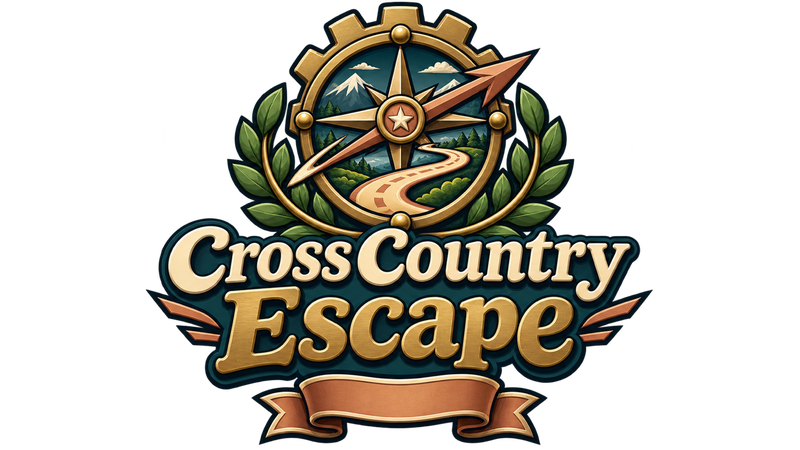

<!DOCTYPE html>
<html lang="en">
<head>
<meta charset="utf-8">
<meta name="viewport" content="width=device-width, initial-scale=1">
<title>Cross-Country Escape</title>
<link rel="stylesheet" href="fonts/fonts.css">
<link rel="stylesheet" href="writegrow-responsive.css">
<script src="writegrow-bridge.js"></script>
<style>
:root{
  /* Layout idea: a vintage travel passport. One column: stamp book on top, illustrated stop banner, then a poster-style puzzle card. */
  --paper:#F3E6C8;
  --paper-2:#FBF3DD;
  --ink:#25303B;
  --rust:#C6502D;
  --teal:#2E7D7A;
  --mustard:#E3A72F;
  --ne:#8FB3E0; --se:#F2A65A; --mw:#A8CF7A; --sw:#E87D6B; --w:#C6A5E0;
  --good:#7CC47C; --bad:#E8806B;
  --display:'Alfa Slab One','Rockwell','Georgia',serif;
  --body:'Atkinson Hyperlegible','Segoe UI',system-ui,sans-serif;
  color-scheme:light;
}
*{box-sizing:border-box}
html,body{margin:0;min-height:100%}
body{background:var(--paper);color:var(--ink);font:400 17px/1.5 var(--body);-webkit-text-size-adjust:100%}
#app{max-width:720px;margin:0 auto;padding:12px 16px 48px}
h1,h2,h3{font-family:var(--display);font-weight:400;line-height:1.1;margin:0;text-wrap:balance}
h1{font-size:clamp(34px,9vw,54px);letter-spacing:.5px}
h2{font-size:clamp(24px,6vw,32px)}
p{margin:0}
b{font-weight:700}
.eyebrow{font:700 13px/1 var(--body);letter-spacing:.14em;text-transform:uppercase;color:var(--rust);margin-bottom:8px}
.story{margin:10px 0 16px;max-width:62ch}

/* header: stamp book */
.top{display:flex;align-items:center;justify-content:space-between;gap:10px;margin-bottom:12px}
.book{display:flex;gap:7px}
.slot{width:40px;height:40px;border-radius:50%;border:2.5px dashed var(--ink);display:grid;place-items:center;font:400 19px var(--display);opacity:.5}
.slot.cur{opacity:1;border-color:var(--rust);color:var(--rust)}
.slot.on{opacity:1;border:3px solid var(--ink);background:var(--mustard);color:var(--ink);transform:rotate(-8deg);box-shadow:2px 2px 0 var(--ink)}
.slot.on:nth-child(even){transform:rotate(7deg)}

/* banner and panel */
.banner{border:3px solid var(--ink);border-radius:14px;overflow:hidden;height:132px;box-shadow:4px 4px 0 var(--ink);margin-bottom:18px;background:var(--ink)}
.banner svg{display:block;width:100%;height:100%}
.panel{background:var(--paper-2);border:3px solid var(--ink);border-radius:14px;padding:20px 18px 22px;box-shadow:4px 4px 0 var(--ink)}

/* buttons */
.btn{font:700 17px/1.2 var(--body);color:var(--paper-2);background:var(--rust);border:3px solid var(--ink);border-radius:12px;padding:12px 18px;min-height:48px;cursor:pointer;box-shadow:3px 3px 0 var(--ink);transition:transform .08s,box-shadow .08s}
.btn:hover{transform:translate(-1px,-1px);box-shadow:4px 4px 0 var(--ink)}
.btn:active{transform:translate(2px,2px);box-shadow:1px 1px 0 var(--ink)}
.btn:focus-visible,.tile:focus-visible,input:focus-visible,summary:focus-visible{outline:3px solid var(--teal);outline-offset:3px}
.btn.alt{background:var(--teal)}
.btn.ghost{background:transparent;color:var(--ink);box-shadow:none;border-width:2.5px}
.btn.ghost:hover{background:var(--paper)}
.btn.small{font-size:15px;padding:8px 12px;min-height:40px}
.btn:disabled{opacity:.45;cursor:not-allowed;transform:none;box-shadow:2px 2px 0 var(--ink)}
.btn.big{font-size:20px;padding:14px 26px}

/* messages and hints */
.meta{font-size:15px;margin-bottom:10px;color:var(--ink)}
.lead{margin:14px 0 8px;font-weight:700}
.msg{min-height:28px;margin-top:10px;font-weight:700}
.msg.ok{color:#1F6B3A}
.msg.no{color:#9C2F14}
.hintbox{margin-top:12px;display:flex;flex-wrap:wrap;gap:10px;align-items:center}
.hint{flex:1 1 220px;font-style:italic;padding:8px 12px;border-left:5px solid var(--mustard);background:var(--paper)}
.hint:empty{display:none}

/* levels, icons, route pictures */
.levels{display:flex;gap:10px;margin:14px 0 4px}
.btn.lv{flex:1;display:flex;flex-direction:column;align-items:center;gap:2px;padding:10px 6px;background:var(--paper);color:var(--ink)}
.btn.lv small{font:600 12px var(--body);opacity:.8}
.btn.lv[aria-pressed="true"]{background:var(--teal);color:var(--paper-2)}
.ico{height:1.2em;width:auto;vertical-align:-.25em;margin-right:6px}
.route-pic{display:block;max-width:230px;margin:10px auto 0}
.winpose{display:block;height:130px;width:auto;margin:0 auto 4px}
/* map skills */
.txmap .tapdot.off{display:none}
.regguide{background:var(--paper);border:3px solid var(--ink);border-radius:12px;padding:10px 12px;margin:6px 0 8px;font-size:15px;line-height:1.3}
.regguide b{display:block;font:400 16px var(--display);margin-bottom:4px}
.regguide span{display:block;margin:3px 0}
.regguide i{font-style:normal;font-weight:800}
.levels.games .btn.lv{font-size:15px;padding:9px 4px}
.levels.games{margin-top:0;margin-bottom:12px}
.homebg{background:linear-gradient(180deg,#2b6f8f 0%,#6fb6c9 38%,#f3d78c 72%,#c6502d 100%) fixed;background-image:url(art/scenes/home-bg.jpg),linear-gradient(180deg,#2b6f8f 0%,#6fb6c9 38%,#f3d78c 72%,#c6502d 100%);background-size:cover;background-position:center;background-attachment:fixed}
.homecard{background:rgba(252,243,220,.93);backdrop-filter:blur(2px)}
.logowrap{text-align:center;margin:-4px 0 4px}
.homelogo{width:100%;max-width:340px;height:auto;display:block;margin:0 auto}
.logofall{font-size:34px;line-height:1.05;text-align:center;margin:6px 0}
.backrow{display:flex;align-items:center;justify-content:space-between;gap:8px;margin-bottom:10px}
.gchip{font-weight:800;font-size:14px;background:#F3D78C;border:2px solid #25303B;border-radius:999px;padding:4px 12px}
.subjgrid{display:grid;grid-template-columns:1fr 1fr;gap:10px}
.btn.subj{background:var(--paper);color:var(--ink);display:flex;flex-direction:column;align-items:center;gap:4px;padding:10px 6px;text-align:center;font-size:16px}
.btn.subj span{display:flex;flex-direction:column;line-height:1.2}
.btn.subj small{font-weight:600;font-size:12px;opacity:.75}
.subjimg{width:64px;height:64px;object-fit:contain}
.town{display:block;width:100%;height:auto}
.town .land{fill:#CFE8B8;stroke:#25303B;stroke-width:2.5}
.town .gl{stroke:#25303B;stroke-opacity:.28;stroke-width:1.2;stroke-dasharray:5 5}
.town .axis{font:800 17px var(--body);fill:#25303B;text-anchor:middle}
.town .nm{font:800 14px var(--body);fill:#25303B;text-anchor:middle;paint-order:stroke;stroke:rgba(243,230,200,.9);stroke-width:4px}
.town .cell{fill:transparent;cursor:pointer;outline:none}
.town .cell:hover{fill:rgba(227,167,47,.35)}
.town .cell:focus-visible{stroke:var(--teal);stroke-width:3}
.town .cell.good{fill:rgba(78,138,90,.6)}
.town .cell.bad{fill:rgba(198,80,45,.5);animation:pop .4s}
.txmap .txland{fill:#F3E6C8;stroke:#25303B;stroke-width:2.2;stroke-linejoin:round}
.txmap .dot{fill:#C6502D;stroke:#25303B;stroke-width:2}
.txmap .tapdot{cursor:pointer;outline:none}
.txmap .tapdot:hover .dot,.txmap .tapdot:focus-visible .dot{fill:#E3A72F}
.txmap .tapdot.good .dot{fill:#4E8A5A}
.txmap .tapdot.bad .dot{fill:#C6502D;animation:pop .4s}
.txmap .cname{font:800 11px var(--body);fill:#25303B;pointer-events:none;paint-order:stroke;stroke:rgba(243,230,200,.9);stroke-width:3px}
.towns{margin:6px -6px}
.compass-row{display:flex;gap:12px;align-items:center;margin:4px 0 8px}
.compass-row .note,.scalebar .note{margin:0;font-size:16px}
.scalebar{display:flex;flex-direction:column;align-items:flex-start;gap:2px;margin-bottom:6px}
.key{background:var(--paper);border:3px solid var(--ink);border-radius:12px;padding:10px 12px;margin:8px 0;display:flex;flex-wrap:wrap;gap:8px 16px;align-items:center}
.key b{flex-basis:100%;font:400 16px var(--display)}
.keyrow{display:flex;align-items:center;gap:6px;font-weight:700}
.bigsym{display:inline-block;vertical-align:middle;margin-right:8px}
.pick svg{display:block;margin:0 auto}
/* the real map: one shape per state */
.mapwrap{margin:6px -10px}
.map{display:block;width:100%;height:auto}
.map .sea{fill:#CFE4E6;pointer-events:none}
.tile{cursor:pointer;outline:none}
.tile .shape{fill:var(--paper);stroke:var(--ink);stroke-width:2;stroke-linejoin:round;transition:fill .15s;transform-box:fill-box;transform-origin:center}
.tile text{font:700 28px var(--body);fill:var(--ink);pointer-events:none;paint-order:stroke;stroke:rgba(243,230,200,.75);stroke-width:4px;text-anchor:middle}
.tile .chip text{font-size:22px;stroke:none}
.tile .lead{stroke:var(--ink);stroke-width:1.6;fill:none;pointer-events:none}
.tile .chip{fill:var(--paper);stroke:var(--ink);stroke-width:2}
.map:not(.color) .tile:not(.good):not(.start):hover .shape{fill:var(--mustard)}
.tile:focus-visible .shape{stroke:var(--teal);stroke-width:5}
.map.color .r-NE .shape{fill:var(--ne)}
.map.color .r-SE .shape{fill:var(--se)}
.map.color .r-MW .shape{fill:var(--mw)}
.map.color .r-SW .shape{fill:var(--sw)}
.map.color .r-W .shape{fill:var(--w)}
.map.color .tile.hl .shape{stroke-width:4}
.map.color .tile:not(.hl){opacity:.94}
.tile.good .shape{fill:var(--good)!important}
.tile.bad .shape{fill:var(--bad)!important;animation:pop .4s}
.tile.start .shape{fill:var(--teal)!important}
.tile.start text{fill:var(--paper-2);stroke:none}
.tile.pulse .shape{animation:pop .5s 2}
.map.hero{pointer-events:none;max-width:560px;margin:0 auto}
.route{fill:none;stroke:var(--rust);stroke-width:9;stroke-linecap:round;stroke-linejoin:round;stroke-dasharray:3 17;pointer-events:none}

/* postcards */
.postcard{display:grid;grid-template-columns:1fr 96px;gap:14px;background:var(--paper-2);padding:16px;border:10px solid;border-image:repeating-linear-gradient(135deg,var(--rust) 0 14px,var(--paper-2) 14px 24px,var(--teal) 24px 38px,var(--paper-2) 38px 48px) 10;min-height:150px}
.pm{font:700 12px/1.2 var(--body);letter-spacing:.12em;text-transform:uppercase;color:var(--rust);margin-bottom:8px}
.clue{font-size:18px}
.stampzone{border:2.5px dashed var(--ink);border-radius:6px;display:grid;place-items:center;text-align:center;font-size:13px;color:var(--ink);opacity:.9;height:96px;position:relative}
.stampzone span{opacity:.55}
.rubber{font:400 14px/1.1 var(--display);color:var(--rust);border:4px double var(--rust);border-radius:50%;width:88px;height:88px;display:grid;place-items:center;text-align:center;padding:6px;transform:rotate(-12deg);animation:stampIn .35s cubic-bezier(.2,1.6,.4,1)}
.regbtns{display:grid;grid-template-columns:repeat(auto-fit,minmax(130px,1fr));gap:10px;margin-top:12px}
.btn.reg{color:var(--ink)}
.btn.reg.r-NE{background:var(--ne)}.btn.reg.r-SE{background:var(--se)}.btn.reg.r-MW{background:var(--mw)}.btn.reg.r-SW{background:var(--sw)}.btn.reg.r-W{background:var(--w)}

/* capitals */
.cols{display:grid;grid-template-columns:1fr 1fr;gap:10px 14px}
.cols h3{font-size:16px;margin-bottom:2px;grid-column:auto}
.pick{display:block;width:100%;text-align:left;font:700 17px/1.2 var(--body);color:var(--ink);background:var(--paper);border:3px solid var(--ink);border-radius:10px;padding:12px;min-height:50px;cursor:pointer}
.pick:hover{background:var(--mustard)}
.pick.sel{background:var(--mustard);box-shadow:inset 0 0 0 3px var(--rust)}
.pick.done{background:var(--good);cursor:default;opacity:.95}
.pick.wrong{animation:shake .35s;background:var(--bad)}
.stack{display:flex;flex-direction:column;gap:10px}

/* choices */
.choices{display:grid;grid-template-columns:repeat(auto-fit,minmax(200px,1fr));gap:10px;margin-top:12px}
.choices .pick.dead{opacity:.45;text-decoration:line-through}
.qtext{font-size:19px;font-weight:700}
.passage{background:#FFF8E8;border:2px solid #25303B;border-radius:12px;padding:12px 14px;margin:0 0 12px;font-size:17px;font-weight:500;line-height:1.5}
.mfig{display:block;margin:0 auto 10px;width:100%;max-width:280px;height:auto}
.mtab{margin:0 auto 10px;border-collapse:collapse;font-size:18px;font-weight:700}
.mtab th,.mtab td{border:2px solid #25303B;padding:6px 14px;text-align:center;background:#FFF8E8}
.mtab th{background:#F3D78C}
.fact{margin-top:10px;padding:10px 12px;background:var(--paper);border:2.5px solid var(--ink);border-radius:10px}

/* earned stamp */
.earned{text-align:center;padding:10px 0 4px}
.bigstamp{width:150px;height:150px;margin:6px auto 16px;border-radius:50%;border:6px double var(--ink);background:var(--mustard);display:grid;place-items:center;font:400 80px var(--display);transform:rotate(-10deg);animation:stampIn .5s cubic-bezier(.2,1.6,.4,1);box-shadow:4px 4px 0 var(--ink)}
.earned p{margin:6px auto 18px;max-width:46ch}

/* vault */
.slots,.tiles{display:flex;gap:10px;justify-content:center;flex-wrap:wrap;margin:14px 0}
.vslot{width:58px;height:70px;border:3px dashed var(--ink);border-radius:10px;display:grid;place-items:center;font:400 34px var(--display);background:var(--paper);cursor:pointer;padding:0;color:var(--ink)}
.vslot.full{border-style:solid;background:var(--mustard)}
.vtile{width:58px;height:70px;border:3px solid var(--ink);border-radius:10px;background:var(--teal);color:var(--paper-2);font:400 34px var(--display);cursor:pointer;box-shadow:3px 3px 0 var(--ink);padding:0}
.vtile:disabled{visibility:hidden}
.row{display:flex;gap:10px;flex-wrap:wrap;justify-content:center}
.shake{animation:shake .35s}
.opened .vault-door{transform-origin:30px 75px;animation:swing 1.1s forwards}

/* intro and win */
.hero-card{background:var(--paper-2);border:3px solid var(--ink);border-radius:14px;padding:22px 18px 24px;box-shadow:4px 4px 0 var(--ink)}
.hero-card h1{margin:4px 0 12px}
.namebox{display:flex;flex-direction:column;gap:6px;margin:18px 0 16px}
.namebox label{font-weight:700}
.namebox input{font:400 19px var(--body);padding:12px;border:3px solid var(--ink);border-radius:10px;background:var(--paper);color:var(--ink);min-height:48px}
details{margin-top:20px;border-top:2px dashed var(--ink);padding-top:12px}
summary{cursor:pointer;font-weight:700}
details p{margin-top:8px;font-size:16px}
.cert{border:10px solid;border-image:repeating-linear-gradient(135deg,var(--rust) 0 14px,var(--paper-2) 14px 24px,var(--teal) 24px 38px,var(--paper-2) 38px 48px) 10;background:var(--paper-2);padding:22px 16px;text-align:center}
.cert h1{font-size:clamp(28px,7vw,42px)}
.cert .who{font:400 clamp(26px,7vw,38px) var(--display);color:var(--rust);margin:12px 0;word-break:break-word}
table{width:100%;border-collapse:collapse;margin-top:12px;font-size:16px}
th,td{padding:8px 6px;border-bottom:2px solid var(--ink);text-align:left;vertical-align:top}
th{font-size:13px;letter-spacing:.1em;text-transform:uppercase}
td.num{text-align:center;font-variant-numeric:tabular-nums}
.report{margin-top:22px}

@keyframes shake{0%,100%{transform:translateX(0)}25%{transform:translateX(-7px)}75%{transform:translateX(7px)}}
@keyframes pop{0%{transform:scale(1)}50%{transform:scale(1.12)}100%{transform:scale(1)}}
@keyframes stampIn{0%{transform:scale(2.4) rotate(0);opacity:0}100%{transform:scale(1) rotate(-12deg);opacity:1}}
@keyframes swing{to{transform:perspective(300px) rotateY(-75deg)}}
@media (max-width:420px){
  .postcard{grid-template-columns:1fr;}
  .stampzone{width:96px;justify-self:end}
  .cols{gap:8px}
  .pick{font-size:16px;padding:10px 8px}
}
@media (prefers-reduced-motion:reduce){
  *{animation:none!important;transition:none!important}
}

.banner{position:relative;height:auto;aspect-ratio:16/9}
.banner .scene-art{position:absolute;inset:0;display:block;width:100%;height:100%;object-fit:cover}
.title-art{margin-top:16px}
.title-atlas{position:absolute;left:9%;bottom:8%;height:76%;width:auto}
.stop-title{color:#fff8e6;background:#663423 url('art/ui/stop-title-ribbon.png') center/100% 100% no-repeat;border-radius:20px;padding:12px 17%;text-align:center}
.briefing{display:flex;align-items:center;gap:12px}
.guide{width:clamp(64px,16vw,106px);height:110px;object-fit:contain;flex:none}
.clue-art[hidden]{display:none}
.clue-art{display:block;width:min(100%,250px);margin:12px auto;border-radius:9px}
.landform{width:min(100%,220px)}
.slot.on{background:none;border:0;box-shadow:none;transform:none}
.passport-stamp{display:block;width:100%;height:100%;object-fit:contain}
.bigstamp{background:none;border:0;box-shadow:none}
.cert-emblem{display:block;width:75px;height:auto;margin:0 auto 8px}
@media(max-width:410px){.book{gap:4px}.slot{width:32px;height:32px}.stop-title{font-size:21px}}

.levels.games{flex-wrap:wrap}
.levels.games .btn.lv{flex:1 1 calc(25% - 10px);min-width:76px;font-size:14px}
.wzoom{display:flex;flex-wrap:wrap;gap:6px;margin:4px 0 6px}
.wzoom .zb{font:700 13px var(--body);padding:6px 10px;border:2px solid var(--ink);border-radius:999px;background:var(--paper);color:var(--ink);cursor:pointer}
.wzoom .zb.on{background:var(--teal);color:var(--paper-2)}
.world{display:block;width:100%;height:auto;border:3px solid var(--ink);border-radius:14px;background:#CFE3EA}
.world .wsea{fill:#CFE3EA}
.world .ctry{fill:#F3E6C8;stroke:#25303B;stroke-width:1;stroke-linejoin:round;vector-effect:non-scaling-stroke;cursor:pointer;outline:none}
.world .ctry:hover,.world .ctry:focus-visible{fill:var(--mustard)}
.world .ctry.good{fill:var(--good)!important}
.world .ctry.bad{fill:var(--bad)!important;animation:pop .4s}
.world .wline .hit{stroke:transparent;stroke-width:26;cursor:pointer}
.world .wline .vis{stroke:#C6502D;stroke-width:3;stroke-dasharray:10 7;pointer-events:none}
.world .wline.good .vis{stroke:#4E8A5A;stroke-dasharray:none}
.world .odot .hit{fill:transparent;cursor:pointer}
.world .odot .vis{fill:#2E7D7A;stroke:#25303B;stroke-width:3;pointer-events:none}
.world .odot.good .vis{fill:#4E8A5A}
.world .wlab{font:800 17px var(--body);fill:#25303B;paint-order:stroke;stroke:#CFE3EA;stroke-width:4px;pointer-events:none}
</style>
</head>
<body>
<div id="app"></div>
<script>
(function(){
'use strict';
var app=document.getElementById('app');
var gameStorage=window.writegrowGameStorage||{getItem:function(k){return localStorage.getItem(k);},setItem:function(k,v){localStorage.setItem(k,v);},removeItem:function(k){localStorage.removeItem(k);}};
function $(s,el){return (el||document).querySelector(s);}
function $$(s,el){return Array.prototype.slice.call((el||document).querySelectorAll(s));}
function esc(t){return String(t).replace(/[&<>"']/g,function(c){return {'&':'&amp;','<':'&lt;','>':'&gt;','"':'&quot;',"'":'&#39;'}[c];});}

/* ---------- data ---------- */
var GEO={"paths":{"AL":"M648,492.4L648,492.4L648,492.4ZM641.6,384L641.5,383.7L666.5,381.9L689.2,379.7L702.5,427L704.5,431.8L707.8,436.5L707.3,438.8L709.6,439.9L706.7,443.2L707.1,446L705.9,450.1L706.6,453.3L708.6,457.1L707.9,462.8L708.3,464.8L710.8,468.8L693.6,470.8L681.5,472.1L660.7,474L660.3,477L662.5,479.6L665.1,480.9L664.6,484.7L666.3,486.4L663.7,490.1L657.6,491.8L659.1,490.2L655.9,487.8L654.8,482.2L653.4,481.7L651.9,485.8L651.6,490.2L649.1,489L646.5,489.5L642.2,455L643,413.2L643.7,386.2Z","AK":"M104.2,551.6L104.2,551.6L104.2,551.6ZM99.1,569.9L103.4,565.2L104.7,569.1L102.5,568.9L100.9,570.5ZM95.1,582L95.1,582L95.1,582ZM93.3,575.4L96.7,573.2L99,570.7L103.1,570.6L103.2,573.5L104.5,573.3L99.2,577.7L98,579.4L97.5,577.1L95.4,579.6ZM93.1,582.8L93.1,582.8L93.1,582.8ZM88.9,587.6L88.9,587.6L88.9,587.6ZM71.8,593.7L71.8,593.7L71.8,593.7ZM71,591.7L71,591.7L71,591.7ZM68.2,593.5L68.2,593.5L68.2,593.5ZM65.8,590.1L65.8,590.1L65.8,590.1ZM67.5,564.2L67.5,564.2L67.5,564.2ZM60.9,591.2L60.9,591.2L60.9,591.2ZM58.3,592.4L58.3,592.4L58.3,592.4ZM66.1,523.9L66.1,523.9L66.1,523.9ZM56,595.9L56,595.9L56,595.9ZM44.6,597L44.6,597L44.6,597ZM42.7,595.5L42.7,595.5L42.7,595.5ZM40.6,595.9L40.6,595.9L40.6,595.9ZM44.2,547.5L46.2,547.9L49.5,546.7L50.9,548.5L51,551.2L48.4,552L44.4,548.7ZM31.3,600.8L33.8,600.4L35.9,598.5L36.1,596.7L37.9,596.5L40.1,598.2L36.6,600.9L32.2,601.5ZM50.7,504.5L59.1,500.7L63.9,499.5L65.7,499.7L65.2,503.9L71.4,505.1L72.5,503.4L74.3,503.7L71.2,500.1L73.2,497.6L70.2,497.3L66.5,495.6L66.2,492.3L62.9,487.9L59.4,484.4L61,483.3L61.5,480.8L67.2,481.3L70.5,478.8L71.7,475L75.3,471.4L78.2,471.3L81.6,468.4L86.7,468.1L89.3,465.1L92.5,466.1L92.3,468.8L94,466.3L95.1,468.8L98.7,468L101.4,468.7L100.9,470.4L104.4,472.1L108.9,470.8L113.9,472.8L118.9,472.6L122.5,473.6L126,471.7L132.9,474.4L147.3,547.1L151.4,547.2L154.5,545.1L154.6,547.3L162.3,552.4L163.6,554.8L166.5,551.9L166.5,548.3L169.4,545.9L171.7,547.2L176.3,551.6L180.8,553.8L182.2,555.7L189.5,562.5L191.6,565.6L192.6,565.1L200.1,566.6L202.9,572.6L201.4,577.9L198.4,575L192.8,573.7L192,570.8L191.1,571.8L189.2,570.5L190.2,568.2L188.2,565.4L183.2,563.5L182.3,560.4L178.3,556.5L176.2,556.8L171.4,551.2L174.7,557.7L172.7,556.5L168,559.3L162,556.3L160,554.5L153,552.1L153.3,549.3L151,551.3L148.6,551.4L145.5,550.2L140.6,550L135.3,551.6L128.8,548.7L125.3,550.6L128.4,547.8L125.7,547.4L124.5,545.3L121.6,545.6L119.2,547.1L120.3,549.9L119.7,551.6L121.1,552.9L119.4,554L113.5,554.3L111,558.8L110.5,557.4L108.8,560.4L104.8,560.3L108.7,555.9L106.7,557.2L105.2,556.2L106.9,552.5L106.7,548.5L110.5,545.8L112.1,547.1L111.9,544.1L109.4,543.8L106.3,546.2L101.7,553L102.3,553.8L100.5,556.9L96.2,559.5L96,562.3L97.7,562L99.6,563.5L96.4,566.5L95.8,569.3L89.9,572.1L85.8,575.8L85.6,578.3L82.8,579.9L82,579.1L79.7,582.1L77,582.9L78.5,583.9L76.7,585.8L70.6,586.4L67.3,589.1L65.9,588.5L62.9,589.5L62.6,587.5L60.6,591.3L59.7,590.8L55.6,591.9L52.7,594.2L50.5,593.8L46.7,594.8L46.5,593.5L48.6,591.6L51.8,590.6L56.5,590.1L59.8,586.5L62,585.2L66.5,584.6L71.3,580.8L75.2,578.8L80.9,573.4L82.4,566L83.9,563.2L79.6,565L78.1,563.5L77.2,565.9L75.7,566.2L73.3,562L72.5,563.1L71,560.7L64.7,564.1L65,560.8L64.2,558.3L65.8,556.7L63.8,551.1L63.1,552.3L58.4,553.3L52.6,546.7L54.4,545.2L53.8,541.4L52.7,541.9L51.1,538.2L53.4,535.9L53.7,533.6L57.5,529.9L58.7,526.7L60.7,525.7L64.3,527.9L67.5,524.9L71.5,525.2L73,523.2L72.7,519.5L71.5,517L73.7,515.7L72.5,514L67.6,516.5L61.3,515.5L59.1,516L55.2,514.1L53.9,509.4L55.9,508.7L52.4,506.9ZM24.9,603L29.3,599.1L31.4,600.2L28,602.2ZM28.5,573.3L28.5,573.3L28.5,573.3ZM20.4,602.1L20.4,602.1L20.4,602.1ZM26.8,568.3L26.8,568.3L26.8,568.3ZM16,603L16,603L16,603ZM34.4,517.8L35.5,517L37.7,518.5L39.4,517.9L42,521.2L44.8,522.4L42.1,523L40.8,524.5L39,521.1L36.7,519.4L35.2,520ZM7,603L7,603L7,603ZM23.4,539.9L23.4,539.9L23.4,539.9ZM0,602.3L5,604.1L2.8,604ZM-6.2,601.2L-1,601.3L-2,602.5ZM-10.2,599.4L-10.2,599.4L-10.2,599.4ZM-11,601.2L-11,601.2L-11,601.2ZM-15,601.4L-13.1,599.3L-11.1,600.8ZM-18.1,599.6L-18.1,599.6L-18.1,599.6ZM-20.1,597.5L-20.1,597.5L-20.1,597.5ZM-30.2,592.5L-30.2,592.5L-30.2,592.5ZM-35.2,593.3L-35.2,593.3L-35.2,593.3ZM-40.8,588.6L-40.8,588.6L-40.8,588.6ZM-55.8,576.6L-55.8,576.6L-55.8,576.6ZM-57.6,570.9L-54.7,571.9L-53.9,573.8L-56.4,573.1ZM197.4,577.4L197.4,577.4L197.4,577.4ZM196.5,577L196.5,577L196.5,577ZM194.7,574.9L194.7,574.9L194.7,574.9ZM187.6,570L187.6,570L187.6,570ZM187.1,569.1L187.1,569.1L187.1,569.1ZM186.2,576.9L186.2,576.9L186.2,576.9ZM184.9,573.1L185,569.8L186.8,569.5L190,571.8L194.4,575.9L195.7,580.1L189.6,577.5L192,581.3L190.1,579.8L189.4,576.3ZM182.7,574.2L182.7,574.2L182.7,574.2ZM180.3,567.2L181.9,564.6L185.4,564.3L188.7,566.7L186.3,568.6L183.9,568.5L184,572.3L182.7,572.5ZM174.6,555.9L176.1,557.5L178.2,556.9L180.2,559.2L179.3,559.9L181.4,562.6L179.6,565.9L178.9,563.1ZM173.9,564.8L174.6,562.9L177.2,563.4L179.7,568.3L180.8,572.7L176.1,568.4L175.5,565.3ZM173.5,565.9L173.5,565.9L173.5,565.9ZM169.1,561.4L168.9,560.3L171.5,557.8L175.3,558.7L177.1,562.7L173.7,562.2L173.8,564.8L171.2,563.6ZM120.8,555.1L123.6,550L124.3,550.9ZM120.4,551.4L121.6,548.6L121.2,552.1Z","AZ":"M145.1,407L148.8,406.9L150.7,403.8L150.2,400.8L147.4,400.1L147,398.6L148.3,394.9L148,391.7L149.9,391.5L152.4,389.1L153.5,386L153.9,380.5L156.8,377L160.1,376.1L162.8,373.6L159.8,369.6L158.5,363.2L156.2,359.1L156.8,356.2L157.1,354L158.7,352.8L159,349.1L158.2,345.1L159.2,342.4L159,337.8L160.1,336.5L159.3,334.7L159.9,331.1L163.1,330.6L166.6,331.5L168.4,334.8L170,334.9L172.6,331.5L176,313.3L202.7,318.2L239.3,324.3L264.6,328L251.4,423.6L246.8,456.3L228.7,453.6L208.2,450.5L171.7,429.5L142.3,411.7L142.9,409Z","CO":"M277.1,237.2L301.1,240.3L333.1,244L361.4,246.5L395.3,249L393.9,271.9L390.6,326.6L389.7,340.7L372.5,339.4L348.5,337.6L315.3,334.3L278.8,329.9L264.6,328L268.4,301.5L268.4,299L271.2,279.7Z","FL":"M814.6,594.5L814.6,594.5L814.6,594.5ZM812.7,596L812.7,596L812.7,596ZM807.4,599L811,596.7L808.5,599.2ZM793.7,604.2L794.8,602L800.5,597.7L803.5,598.5L805.1,600.1L801.7,601.3L796.4,604.1ZM789.6,605.4L789.6,605.4L789.6,605.4ZM786.4,605.5L786.4,605.5L786.4,605.5ZM777.4,558.3L777.4,558.3L777.4,558.3ZM770.3,606.2L770.3,606.2L770.3,606.2ZM720.4,495.2L720.4,495.2L720.4,495.2ZM710.8,468.8L714.2,475L765.8,471.5L767.3,476L769.7,475.6L769.8,471L768.7,469L768.7,466L770,464.9L774.7,466.1L780.1,466.1L782.8,475.7L787,486.3L789.6,491.1L794.9,499.6L801.4,507.6L804.6,511L806.1,513.6L805,517.2L806.6,521.9L811.5,529.2L815.5,536.8L820,544.3L822.1,549L822.8,554.1L823.2,565L823.9,570.5L823.8,574.5L821.8,573.7L820.9,579.6L822.4,582.7L824,577.8L823.8,580.3L821.6,586.6L819.1,589.4L819.7,586.1L817.6,586L813.6,588L812.2,587.4L810.5,588.7L806.9,589.7L804.7,587.7L805.3,585L800.6,577.8L798.4,576.1L793.1,574.2L791.9,575.4L788.8,570.5L787.5,566L785.5,563.3L782,561.5L781.4,562.6L780.2,559.3L781.3,555.4L780.4,552L778.5,553.2L779.5,555.9L777.5,556.8L772.6,550.8L769.4,545.8L766.5,542.9L767,541L771.2,533.2L769,531.7L769.7,533.8L767.9,533.5L767.6,530.8L764.7,529.8L764.2,531.7L766.3,532.3L767.4,534.3L766.8,536.8L764.7,537.1L761.9,533.4L761.9,530.4L760.7,526.1L761.9,527.3L763.6,520.7L763.6,517.1L761.3,511.5L761.9,510.2L760.1,508.2L758.9,505.1L755,504.9L754,506.1L752.9,503.1L751.3,502.8L749.9,500L746.1,498.3L745.3,494.9L742.8,494.1L740.3,490.6L732.2,486.7L729.7,487.7L727.4,487.4L725.8,489.7L726.4,492.2L722.7,492.3L716.3,497.4L711.8,498L714.2,499.9L713.7,500.8L710,499.1L707.4,499.8L708.1,496.6L705.7,493.6L695.8,488.4L688.8,486.2L680.7,485.8L668,488.7L663.7,490.1L666.3,486.4L664.6,484.7L665.1,480.9L662.5,479.6L660.3,477L660.7,474L681.5,472.1L693.6,470.8Z","GA":"M689.2,379.7L712.7,376.8L725.6,375.2L734.9,373.7L734.8,375.1L731.6,379L731.7,381.5L735,382.8L738.4,385.4L741.1,385.4L743.8,389.4L744.4,391.4L748.3,396.2L754.5,399.6L756,402.3L759,403.4L761.9,405.8L761.6,407.7L763.6,408.7L765.7,411.8L771.3,414.4L773.2,418.1L774,422.7L776.8,424L780.8,429.6L781.4,433.4L786.1,434.6L786.8,436L782.6,442.3L782.4,447.1L781,450.8L781.3,454.4L779.5,456.4L779.5,459.1L778.3,460.2L780.2,461.5L780.1,466.1L774.7,466.1L770,464.9L768.7,466L768.7,469L769.8,471L769.7,475.6L767.3,476L765.8,471.5L714.2,475L710.8,468.8L708.3,464.8L707.9,462.8L708.6,457.1L706.6,453.3L705.9,450.1L707.1,446L706.7,443.2L709.6,439.9L707.3,438.8L707.8,436.5L704.5,431.8L702.5,427Z","IN":"M640.3,229.8L642.2,231.2L647.2,230.6L651.9,227.6L669.2,225.8L685.6,223.9L685.8,225.4L688.5,247.4L692.5,284.3L691.3,285.7L692.2,289.1L693.7,289.3L693.5,291.6L690.7,292L687.5,294.5L685.1,293.5L682.6,295L683.6,298.2L680.6,301L680,303.7L677.1,305.1L676,307.9L675.6,311.5L674.1,312.8L669.8,310.7L668.6,308.8L665.5,311.7L666,314.3L662.3,315.5L660.8,313.4L656.7,315.7L655.3,318.7L650.6,315.6L648.3,316.5L646.7,315L646.7,318.3L645.3,316.8L642.7,317.7L641.3,316.7L641.5,319.4L639.4,319.7L638,317.4L638.7,314.3L640.5,311.8L639.4,310.3L640.2,308.2L641.5,308.6L644.5,303L644.9,299.9L646.5,298.5L645.7,294.8L646.2,292.6L643.5,287.9L645,283.6Z","KS":"M393.9,271.9L422.4,273.5L443.4,274.3L464.8,274.9L495.4,275.2L509.9,275.2L511.7,277.3L514.6,278.2L516.5,277.7L517.3,281.4L516.1,281L513.5,285.8L516.5,289.2L518.5,293.2L522.6,294.4L522.3,295.2L522.6,326.1L522.8,343.8L489,344L458.9,343.6L432.6,342.7L401.9,341.4L389.7,340.7L390.6,326.6Z","ME":"M939.8,114.8L939.8,114.8L939.8,114.8ZM938,116.1L937.9,114.5L939.8,115.7ZM936.3,112.2L936.3,112.2L936.3,112.2ZM932.2,116L932.2,116L932.2,116ZM933.5,124.7L933.5,124.7L933.5,124.7ZM931.4,119.2L932.7,117.1L934.3,119.4L932.2,120.6ZM930.1,116.3L930.1,116.3L930.1,116.3ZM910.2,150.1L907.8,149.2L907.5,147.2L904.5,145.2L894.8,114.3L890.9,102.4L891.8,101.2L894.8,103.1L894.3,99.3L897.3,98.8L895.2,96.3L896.9,92.3L899.1,90.1L898.2,88.9L900,86.1L898.2,82.6L897.7,79.7L898.1,76.3L899.9,73.8L899.1,67.5L905.9,47.6L908.8,47.5L910,51.5L912.5,52.3L916.6,48.5L919.6,47.6L919.7,45.9L922.6,45.8L929.7,49.7L937.3,74L938.7,79.9L941.5,80.6L944.6,79.9L945.7,81.9L944.5,82.6L946.3,84.3L946.1,87L949.5,89.7L949.8,88.1L952,88.1L957.1,94.8L955,99.4L952.8,98.6L950.2,105.6L948.5,104L946.8,104.3L946.3,107.5L944,108.4L943.8,110.3L941.4,109.7L941.5,112.5L938.9,113.7L937.4,111.9L938.7,110.4L937.3,109.7L935.4,111.3L937.1,114.9L936.3,116.8L937.2,118.5L936.5,120.3L935.7,117.6L933.9,115.9L934.5,114.7L931.9,114.3L931,110.1L930.3,112L928.5,112.6L929.7,113.9L929.3,120.5L930.2,122.9L928.3,124.8L925.8,125.7L924.4,127.8L921.4,128.9L919.7,132.2L918.1,130.9L917.3,132.8L915.1,134.1L915.1,136.8L912.8,138.3L912.9,142.3L911.2,143.3L911.2,146Z","MA":"M927.7,186.8L933,186L930.7,187.6ZM918.3,188.3L919.4,188L921.3,184.4L924.6,186.7ZM871,167.6L884.1,164.8L902.9,160.7L906.2,156L909.5,154.8L911.2,158.5L914.3,158.4L909.5,165.8L910,168.6L911.8,167.4L914,168.3L917,171.2L917.5,174.2L919.4,174.4L921.7,177.7L924.8,177.5L928.8,175.1L928.4,171.4L931,176.8L926.2,179.6L924.7,179.9L922.7,182.4L920,183.3L919.1,180.3L917.9,179.4L917.7,181.7L915.4,182.8L915.4,185.3L912.8,186.4L911.6,182.9L910.5,182.8L909.8,182.1L907.7,181L905.5,176L898.8,178L898.7,177.7L882.2,181.6L871.2,184L870.6,183.2Z","MN":"M479.5,70.7L510.8,70.8L510.7,62.2L513.7,62.5L515.6,64.1L517.9,73.3L517.8,75.7L520.2,77.3L524.3,77.3L524.9,78.4L530.7,78.8L531.5,81.3L536.5,80.5L536.5,79.5L540.3,78.2L543.7,78.5L547.7,80.3L548,82L551.1,82.2L553.4,87.3L554.9,86.6L554.9,84.2L558.1,84L558.9,86L563.4,87.3L565.8,90.7L570.6,89.6L574.6,86.3L576.7,85.8L578.1,88.9L587.6,88L591.8,90.6L593.6,89.6L596.2,90.7L590.4,94.2L582,97.5L579,99.5L572.7,105.7L569.9,109.4L565.4,114L558.9,119.4L560.2,121.1L559,120.2L555.9,122.3L556.4,135.6L555.6,136.9L551.1,139L547.6,144L547.5,147.3L549.3,147.4L551.3,149.9L549.7,153.6L550.1,161.7L549.3,165.9L553.6,169.9L556.9,170.1L559.2,172.7L563.9,174.9L564.9,177.8L569.8,181.6L572.3,182.2L575.6,187.1L575.4,190.7L576.3,193.3L549.3,194.4L534.1,194.9L515.8,195.2L490.6,195.2L490.8,154.3L490.2,153L487.1,151.7L484.4,147.3L488.8,142.5L489.1,139.9L489.3,136.5L488.6,130.9L486.5,127.6L485.5,123.3L485.9,118.1L485.3,116.5L484.9,102.5L483,97.6L480.5,89.4L481,86.9L480.5,80.8L481.4,77.7Z","NJ":"M849.2,245.8L849.7,244.4L850.8,241.4L854.8,238.7L854.8,236.9L860.6,230.8L853.7,226.4L852.9,223.6L850.7,223.4L849.9,220.8L851.5,216.1L849.6,213.8L851.1,212.3L852.8,208.7L853.2,205.9L855,204L870.1,209L869.2,216.4L868.9,217.2L866.9,218.3L866.6,221.4L866.8,222.3L871.4,222.4L872.4,224.8L873.2,237.3L871.2,244.6L869.9,247.5L867.1,250.9L865.4,257.2L862.6,259L862.9,253.8L860.3,253.1L858.6,254.3L851.7,249.8L850.4,249.5L849.4,246.3Z","NC":"M864.3,329.1L864.3,329.1L864.3,329.1ZM863.3,349.7L863.6,348.4L870.9,343.2L871.3,344.1L867.2,346.2ZM755.5,334L780.3,331.1L794.2,328.7L812.1,325.5L840.3,320L858.8,315.9L860.6,320.1L865.6,328.4L864,327.6L859.7,318.9L858.6,317.6L855.9,317.5L858.7,320.4L862.1,325.5L859.3,323L857.9,324.6L854.4,322.8L857.3,325.6L853.3,327.6L850.8,329.9L846.8,330.3L845,328.3L847.4,332.7L852.1,330.6L852.9,331.4L856,329.6L859,329.8L858.7,332.3L860.4,336.2L860.2,329.5L863.3,329.4L865.7,334.5L865.1,337.3L863,337.9L861.5,342.1L859.7,344.3L853.4,344.7L850.9,342L851.6,344.7L848.2,344.6L843,343.4L850.3,345.9L853.4,345.8L854.2,347.1L852.7,351.9L849.6,355L845.9,353.5L846.2,354.7L850.5,355.8L854.8,352.9L855,351.4L856.9,353.2L858.7,352.1L859.2,353.5L857.1,355.8L855.9,360.3L862.3,349.7L862.9,350L857.9,357.4L856.1,362.4L855.6,361.2L851.4,360.8L846.8,362.6L843.8,364.5L838,370.5L834.5,376.7L833.4,384.1L829.2,383.5L825.4,384.5L822.8,386.1L798.1,368.4L777.6,371.5L777.5,368.8L774.1,365.4L772.4,367.1L772,364.7L749.4,367L745.6,368.2L741.5,370.6L734.9,373.7L725.6,375.2L712.7,376.8L712.6,371.4L716.1,370.4L717.3,369.2L717.4,365.9L721.1,362.5L726.3,361.7L729.4,359.2L730.2,357.5L733,355.7L734.6,355.9L737.8,350.2L740.1,348.3L740.8,350.5L743.4,349.2L744.2,347.2L747.2,345.2L750.7,345.5L752.4,341.1L755,338.2Z","ND":"M376.9,65.7L404.4,67.8L420.8,68.8L444.9,69.8L479.5,70.7L481.4,77.7L480.5,80.8L481,86.9L480.5,89.4L483,97.6L484.9,102.5L485.3,116.5L485.9,118.1L485.5,123.3L486.5,127.6L488.6,130.9L489.3,136.5L489.1,139.9L459.9,139.4L442.8,138.8L412.5,137.3L392.2,136L371.1,134.3L375,88.2Z","OK":"M372.5,339.4L389.7,340.7L401.9,341.4L432.6,342.7L458.9,343.6L489,344L522.8,343.8L523,355.3L526.8,380.5L526.4,420.7L519.6,418.5L517.3,415.7L515.8,415.7L512.4,413.5L511.4,415.4L506.5,415.4L506.2,414.2L500.9,416.3L499.2,415.2L492.8,417.9L491.6,419.8L490.1,417.8L486.2,416L485.4,414.7L483.8,416.6L481.5,415.6L481.1,413.8L476.1,418.5L475.4,414.4L472.3,416.6L470.7,414.6L468.2,414.4L466.5,412.7L463.1,415.8L460.9,414.6L461.7,412.5L459,412.1L458.5,408.7L457.6,409.6L454,408.5L451.7,410.6L450,408.6L446.6,409.1L442.5,406.8L438.7,406.8L438.4,404L435.3,401.1L434.9,402.9L431.6,401.9L429.4,402.6L425.9,398.5L423.9,398.3L425.8,353.9L396.5,352.4L371.6,350.8Z","PA":"M756.1,209L759,207.1L767.5,200.3L768.6,206.4L783.2,203.8L800.4,200.6L824.8,195.6L840.9,192.1L843.2,194.8L844.5,194.3L847.1,196.5L847.9,199.6L849.7,202.4L853.9,202.5L855,204L853.2,205.9L852.8,208.7L851.1,212.3L849.6,213.8L851.5,216.1L849.9,220.8L850.7,223.4L852.9,223.6L853.7,226.4L860.6,230.8L854.8,236.9L854.8,238.7L850.8,241.4L846.5,241.9L844.9,244.6L816.4,250.5L782.3,256.9L764.5,259.9L761.1,239.2Z","SD":"M369.1,155.7L369.4,155.7L371.1,134.3L392.2,136L412.5,137.3L442.8,138.8L459.9,139.4L489.1,139.9L488.8,142.5L484.4,147.3L487.1,151.7L490.2,153L490.8,154.3L490.6,195.2L488.2,195.2L489.5,197.9L488.5,199.8L490.8,203.9L489.6,205.5L489,210L487.5,211.9L490.6,218.3L488,217.9L486.6,214.7L481.8,212.1L479.3,211.8L476.4,209.5L470.4,210L467,209.6L465.7,211.6L457.3,207.3L456.8,206.2L434.2,205.4L403.8,203.9L365.3,201Z","TX":"M371.6,350.8L396.5,352.4L425.8,353.9L423.9,398.3L425.9,398.5L429.4,402.6L431.6,401.9L434.9,402.9L435.3,401.1L438.4,404L438.7,406.8L442.5,406.8L446.6,409.1L450,408.6L451.7,410.6L454,408.5L457.6,409.6L458.5,408.7L459,412.1L461.7,412.5L460.9,414.6L463.1,415.8L466.5,412.7L468.2,414.4L470.7,414.6L472.3,416.6L475.4,414.4L476.1,418.5L481.1,413.8L481.5,415.6L483.8,416.6L485.4,414.7L486.2,416L490.1,417.8L491.6,419.8L492.8,417.9L499.2,415.2L500.9,416.3L506.2,414.2L506.5,415.4L511.4,415.4L512.4,413.5L515.8,415.7L517.3,415.7L519.6,418.5L526.4,420.7L528.8,422.8L532.1,421.6L534.8,422.5L535,434.7L535.5,457.9L539.8,463L539.6,467L541.8,469.1L544,474.4L545.4,476.2L546.1,479.9L545.5,484.5L542.3,490.3L543,493.3L541.7,495.7L542.7,496.6L543.1,502.1L538.9,507.5L540.6,510.4L534.8,511.5L522.4,517.4L526.7,513.3L522.1,514.3L523.5,512.2L523.7,509.2L521.3,509.2L520.2,511.2L518.4,510.5L517.4,513.8L519.6,515.1L519.9,519.4L515.9,522.5L515,524.4L521.5,518.4L523.1,518.8L517.3,523.1L510.3,529.5L509.2,529.7L501.8,534.1L492,539.2L489.2,542L485.3,544.1L480.2,548.4L475,555.4L471.8,561.9L470.5,566.2L470.2,574.1L473.5,587.2L474.2,592.2L471.8,581.9L469.7,576L469.6,568.9L470.4,563.6L471.6,560.1L475.4,553.6L480.4,546.2L483.3,544.8L486,542.5L489.2,541.4L489,539.7L484.3,542L482.5,539.9L482,544L479.3,546.3L477.2,544.8L473.6,547L475.2,547.7L477.4,546.5L476.9,548.5L474.1,553L472.8,551.8L468.7,551.8L470.2,552.6L470.4,554.8L472.7,555.8L469.4,564.3L467.4,565.3L467.3,563.3L465,566L469.2,565.7L467.9,575.9L469.1,583.2L469.8,583.2L471.8,588L471.5,591.7L474.3,592.7L474.4,595.1L469.7,596.1L469.7,597.6L466.7,596.6L464.1,593.5L461,592.5L453.9,592.6L451.8,592.1L447.4,588.6L443.2,588.2L440.1,585.1L438.8,585.3L434.3,583.6L433.2,581L432.5,576.8L431.4,574.1L427.9,569.9L428.5,566.5L427.1,564.3L427.6,559.5L425.3,555.9L423.3,555.5L419.9,552.1L419,548L417.8,547.6L416.1,544.1L413.6,543L412,540.8L410.2,533.9L408.3,532.1L408.2,530.3L405.9,526.5L405.1,521.7L403,518.5L399,515.5L398.1,513.5L394.2,511.5L393.3,508.7L390.3,505.7L385.8,505.8L382.9,504.8L377.8,504.7L376.5,503.4L373.4,502.6L372.4,504.9L370.4,504.4L366.4,505.5L363.7,509.9L361,517.2L359.4,517.5L356.8,521.6L353.5,521.4L350.7,519.8L348.3,517L345.1,516L343,513.8L340.3,513.2L337.2,510.9L335.1,507.8L333.6,507.5L330,503.6L329.7,501.4L327.7,497.8L328.1,492L325.2,486.9L324.8,482.8L323,479.9L315.8,475.4L313,472L312.3,469.8L309.2,467.6L306.2,462.7L301.7,459.9L299,453.5L296.3,452.1L294.3,449.3L295.1,447L317.8,449.4L338.7,451.3L362.9,453.3L364.6,429.6L366.7,407.5L370.9,350.7Z","WY":"M369.1,155.7L365.3,201L361.4,246.5L333.1,244L301.1,240.3L277.1,237.2L252.7,233.7L243.5,232.2L247.2,209.6L249.8,193.3L256,153.9L257.8,142L263.3,143.1L288.8,146.5L298.3,148L339.2,153L339.5,152.8Z","CT":"M871.2,184L882.2,181.6L898.7,177.7L898.8,178L902.2,191.1L901.7,193.5L900.2,193.5L893.5,197L887.4,198.4L884.7,198.4L881.9,202.6L878.1,204.5L874.1,208.3L872.3,206L875.7,202.6L874.1,201Z","MO":"M502,261.9L521.4,262L544.8,261.3L564.7,260.1L570.9,259.6L576.5,264.7L575.1,268L575.5,272.6L578.1,279.5L582.9,283.6L584.1,285.6L589.7,289.9L591.3,297.3L593.4,298.3L594.9,296.1L598.5,297L601,298.4L599.4,301.4L600.1,303.2L597.6,309.3L597.6,313.2L601.8,316.4L606.1,320.6L607.1,319.7L612,323.8L614.1,326.4L613.5,327.8L615.2,332L613.8,333.4L616.7,338L618.6,340L618.8,338.2L621.2,339.9L621.8,340.3L620.4,346.1L621.2,347.2L620.2,349.5L617.4,348.6L616.9,351.3L615.6,351.5L614.7,351.5L615.4,354.2L613.6,355.9L615.1,356.7L612.1,357.7L614.2,360.1L611.9,363.1L600.2,364L602.8,359.5L605.2,357.3L605,354.4L603.6,352.2L586,353.2L564.7,354.2L549.9,354.7L523,355.3L522.8,343.8L522.6,326.1L522.3,295.2L522.6,294.4L518.5,293.2L516.5,289.2L513.5,285.8L516.1,281L517.3,281.4L516.5,277.7L514.6,278.2L511.7,277.3L509.9,275.2L508,273.9L507.1,270L504.7,268.1Z","WV":"M733.2,294.8L737.9,293.5L738,290.5L739.7,289.8L738.6,285.4L740.2,281L741.4,279.5L744,282.7L746,281.3L744.6,277.8L746.4,273.1L748.1,273L749.8,269.4L751.7,270.6L753.7,269.4L757.8,263.4L759.8,256.2L759.5,252.5L760.9,246.6L760.5,243.2L758.9,241L761.1,239.2L764.5,259.9L782.3,256.9L784.1,268.5L787.1,265.8L789.7,261.4L792.3,261.6L794.3,257.4L797,258.6L800.4,258.3L801.8,255.2L803.3,255.4L804.5,253.4L807.7,255L810.8,254.4L810.6,256.4L812.9,258.1L813.9,260.3L812.9,264.9L802.6,259.1L803.2,261.6L802.2,264L802.9,266L796.6,276.6L794,275L791.7,283L790.3,285.9L787.3,285.4L785.9,283.4L783.8,282.9L783.7,286.6L780.4,294.1L780,297.5L776.9,302.2L776,305.1L777.5,306.3L775.9,308.1L776.6,309.3L773.8,311.7L773,310.5L768.8,313.7L767,312.7L766.7,315.4L761.3,318.1L758.5,316.2L755.4,319.7L753.4,320.1L750,318.6L746.8,314.7L747.1,313.2L744.4,313.1L740.9,311.1L739.7,308.6L736.4,305.6L733.8,301.7L734.1,298.3Z","IL":"M576.5,264.7L577.4,259.4L581.2,257.8L581.5,254.5L583.6,251.8L583.7,247.9L580.7,244.7L581.6,240.8L588.1,239.3L593.2,236.1L593.5,232.7L595.5,231L596.1,226.4L595.5,223.8L591.6,221.6L590,218.2L587,215.4L617.8,213.7L634.2,212.4L634,216.8L637.2,222.1L638.8,227.2L640.3,229.8L645,283.6L643.5,287.9L646.2,292.6L645.7,294.8L646.5,298.5L644.9,299.9L644.5,303L641.5,308.6L640.2,308.2L639.4,310.3L640.5,311.8L638.7,314.3L638,317.4L639.4,319.7L637.3,323.1L639,327.3L635.5,328L632.2,329.8L631.7,332.2L633.6,335.1L631.5,337.1L624.4,334.1L623.1,334.2L620.6,337.5L621.2,339.9L618.8,338.2L618.6,340L616.7,338L613.8,333.4L615.2,332L613.5,327.8L614.1,326.4L612,323.8L607.1,319.7L606.1,320.6L601.8,316.4L597.6,313.2L597.6,309.3L600.1,303.2L599.4,301.4L601,298.4L598.5,297L594.9,296.1L593.4,298.3L591.3,297.3L589.7,289.9L584.1,285.6L582.9,283.6L578.1,279.5L575.5,272.6L575.1,268Z","NM":"M264.6,328L278.8,329.9L315.3,334.3L348.5,337.6L372.5,339.4L371.6,350.8L370.9,350.7L366.7,407.5L364.6,429.6L362.9,453.3L338.7,451.3L317.8,449.4L295.1,447L294.3,449.3L296.3,452.1L264.2,448.2L262.9,458.4L246.8,456.3L251.4,423.6Z","AR":"M523,355.3L549.9,354.7L564.7,354.2L586,353.2L603.6,352.2L605,354.4L605.2,357.3L602.8,359.5L600.2,364L611.9,363.1L613.7,365.2L611.5,365.7L612.7,367.3L608.4,369.4L610.2,371.6L608.4,372.9L609.2,374.5L607,373.8L607.5,375.7L605.7,375.7L604.7,377.7L606.6,377.6L605.4,380.6L607.1,383.2L605.2,383.8L604.6,385.9L602.8,386.7L604,388.7L600.9,390.5L600.5,392.4L598.4,393L600.4,394.3L598.2,395.7L599.1,397.5L598.6,400.4L595.3,401.6L594.1,403.9L594.2,406.9L592.1,407.6L593.4,409.4L589.7,410.8L591.2,411.9L590.2,413.3L591.8,415.1L588.9,415.5L590,418.1L587.4,417.8L589.3,419.6L587.6,420.4L587.6,423.2L589.5,425.1L590.7,429.8L588.6,430.7L589.4,433.1L569.4,433.9L535,434.7L534.8,422.5L532.1,421.6L528.8,422.8L526.4,420.7L526.8,380.5Z","CA":"M77.2,374.3L81.1,376.9L81.3,379.5L78.9,378.3L79,376.1ZM74.7,384.2L78.3,390L75.8,388.7ZM65.2,358.4L65.2,358.4L65.2,358.4ZM58.3,374.3L58.3,374.3L58.3,374.3ZM56.6,355L62.6,358.5L59.5,358.6L56.9,357.4ZM50.3,355.2L54.1,355.4L54.9,357.8L51.9,358.1ZM46.8,353.4L46.8,353.4L46.8,353.4ZM32.6,160L46.5,164.1L62.1,168.4L83.7,174.8L100.5,179.2L88.8,224.3L83.3,245.5L132.1,319L156.8,356.2L156.2,359.1L158.5,363.2L159.8,369.6L162.8,373.6L160.1,376.1L156.8,377L153.9,380.5L153.5,386L152.4,389.1L149.9,391.5L148,391.7L148.3,394.9L147,398.6L147.4,400.1L150.2,400.8L150.7,403.8L148.8,406.9L145.1,407L99.5,401.7L99.7,399.5L97.9,398.1L98.9,393.6L98.7,387.7L96.5,382.3L92.5,376.4L86.4,369.8L84.7,370.8L82.1,369.3L83,367.2L81.7,362.5L77.6,361.4L76.4,361.8L69.7,356.7L69.3,354.1L65,349.3L59.3,347.9L54.9,345.2L48.8,344.3L48.5,342.4L46.5,340.5L47.9,338.2L48.6,334.9L47.9,333.2L49.8,328.1L45.9,324.6L47.3,321.2L45.3,319.3L43.4,314.7L41.6,313.3L41.4,310.6L39.8,307.8L37.2,299.7L34.8,296.1L35,292.2L36.3,289L38.1,289L39.7,285.9L38.3,281.4L35.1,281L31.4,274.3L32.5,270.7L31.6,266.5L33.3,260.8L35.3,260.7L34.7,265.7L36.3,266.7L38.5,270.1L38.6,265L36.4,261.7L37.3,259L35.8,257.2L39.2,256.3L37.6,253.4L35.7,253.7L35.7,256.7L33.2,259.9L30.8,257.4L29.4,254.6L26.2,253.5L28.3,250.3L28.5,247.8L27.2,246.7L27.1,243.1L24.4,239.5L23.2,235.6L20.9,231.8L20.1,229L21.6,226.9L21.4,219.4L23.6,215.7L24,209.2L21.6,201.9L18.5,197.2L18.9,193.1L21.4,189.6L26.6,183.8L27.7,178.9L31.3,172.9L31.6,165.8L30.4,164.4Z","DE":"M849.2,245.8L849.4,246.3L849.2,245.8ZM844.9,244.6L846.5,241.9L850.8,241.4L849.7,244.4L848.5,246.7L849.3,249.3L852.8,252.5L854.8,258L859.5,262.9L861.3,262.7L863.7,270.3L852.6,272.5Z","HI":"M305.4,584.5L308.2,581.9L310.3,577.9L308.8,575.4L309.7,572.5L315.2,575.8L318,576.3L322.2,578.3L326.3,582L326.1,584.5L327.9,584.4L328.4,586.6L332.1,589.1L331.9,590.3L328.6,593.3L325.3,594.9L321.8,595.2L317.3,598.1L315.3,601.9L313.8,603.1L309.3,600.5L308.4,598.5L309.1,593.7L308.3,590.5ZM291.6,557.9L293.9,555.4L296.4,558.5L299.6,557.2L306.5,560.7L305.4,563.9L298.5,565.6L297.1,564.8L296.7,561.1L293.1,560.2ZM291.6,566.7L294.3,565L294.8,567ZM283.9,558.3L287.4,558L289.3,560.4L285.9,562.1ZM278.6,553.8L279.6,551.2L288,552.4L291.4,552.6L287.8,555L283.2,553.8ZM258.1,543L261.3,542.9L264.7,540L267.4,544.2L267.3,545.8L271.4,549.4L267.7,550.2L266.3,549.2L261.5,549.3ZM226.1,532.6L227.3,530.2L231,528.2L235.4,528.6L236.6,530.2L235.8,534.3L233.3,536.3L230,535.8ZM216.3,536.6L220,533.2L219.8,535.6L217.1,538.2Z","IA":"M490.6,195.2L515.8,195.2L534.1,194.9L549.3,194.4L576.3,193.3L576.5,196.3L579.2,198.7L577.4,201.6L578.2,206.8L579.9,210.5L585.6,212.4L587,215.4L590,218.2L591.6,221.6L595.5,223.8L596.1,226.4L595.5,231L593.5,232.7L593.2,236.1L588.1,239.3L581.6,240.8L580.7,244.7L583.7,247.9L583.6,251.8L581.5,254.5L581.2,257.8L577.4,259.4L576.5,264.7L570.9,259.6L564.7,260.1L544.8,261.3L521.4,262L502,261.9L499.9,258.5L501.2,255.1L498.9,244.7L499.3,241.9L496.4,239.9L496,236.5L496.9,234L494.2,229.6L492.6,224.2L491.1,221.5L491.7,219.3L490.6,218.3L487.5,211.9L489,210L489.6,205.5L490.8,203.9L488.5,199.8L489.5,197.9L488.2,195.2Z","KY":"M621.2,339.9L620.6,337.5L623.1,334.2L624.4,334.1L631.5,337.1L633.6,335.1L631.7,332.2L632.2,329.8L635.5,328L639,327.3L637.3,323.1L639.4,319.7L641.5,319.4L641.3,316.7L642.7,317.7L645.3,316.8L646.7,318.3L646.7,315L648.3,316.5L650.6,315.6L655.3,318.7L656.7,315.7L660.8,313.4L662.3,315.5L666,314.3L665.5,311.7L668.6,308.8L669.8,310.7L674.1,312.8L675.6,311.5L676,307.9L677.1,305.1L680,303.7L680.6,301L683.6,298.2L682.6,295L685.1,293.5L687.5,294.5L690.7,292L693.5,291.6L693.7,289.3L692.2,289.1L691.3,285.7L692.5,284.3L693.7,283.2L696.4,284.6L698.5,283.2L700.9,284.9L703.9,289.8L710.2,290.2L712,292.2L713.9,292.7L716.2,290.6L720.6,292.4L723,291.5L724.7,289L727,287.9L728.4,291.7L730.5,292L733.2,294.8L734.1,298.3L733.8,301.7L736.4,305.6L739.7,308.6L740.9,311.1L744.4,313.1L747.1,313.2L741.2,320.4L735.2,324.6L735.4,326.3L733,328.2L733.1,330.3L729.8,331.5L729,334.2L719.8,338.7L719.6,339.2L704.2,340.8L692.5,341.5L681.1,342.8L672,343.2L644.8,346.1L640.8,345.4L641.4,349.5L619,351L616.9,351.3L617.4,348.6L620.2,349.5L621.2,347.2L620.4,346.1L621.8,340.3ZM615.6,351.5L614.7,351.5L615.6,351.5Z","MD":"M849.9,285L848.9,285.2L849.9,285ZM847.3,281.5L847.7,279.6L849,282.2ZM782.3,256.9L816.4,250.5L844.9,244.6L852.6,272.5L863.7,270.3L862.5,280.5L856.1,282.7L855.5,283.8L853.4,283.8L851.6,285.3L851.2,281.8L847.7,275.6L847.6,278.7L845.5,279.1L841.4,274.1L842.6,273.6L841.8,271.3L846.4,271.3L840.1,267.8L840.8,265.9L842.3,266.1L841,263.7L839,266.3L839.4,261.7L841.4,262.9L841.8,260L839.3,259.3L840.2,254.7L842.3,253L842.6,248.9L840.5,249.9L841.6,251.7L839.2,254.5L836.8,254L837.6,257L836.3,258.8L833.5,257.8L836.8,260.1L838,262.7L836.2,268.8L838.1,274L841,276.7L840.3,279L843.3,282L843.8,284.2L840.8,283.3L838.3,281.3L834.6,281.5L831,279.7L829.9,277.6L827,280.2L825.3,277.7L827.1,273.8L827.9,269.9L829.7,267.2L827,265.3L825.9,267L821.5,264.9L818.2,264.2L818.7,261.5L816.6,260.2L813.9,260.3L812.9,258.1L810.6,256.4L810.8,254.4L807.7,255L804.5,253.4L803.3,255.4L801.8,255.2L800.4,258.3L797,258.6L794.3,257.4L792.3,261.6L789.7,261.4L787.1,265.8L784.1,268.5Z","MI":"M677.1,130.8L682,132.3L679.8,133.4ZM663.5,133.2L663.5,133.2L663.5,133.2ZM662.4,138.6L663,134.8L664,134.8L664.5,138.1ZM660.9,135.6L660.9,135.6L660.9,135.6ZM658.8,142.5L658.8,142.5L658.8,142.5ZM656.6,149.6L656.6,149.6L656.6,149.6ZM655.4,152.7L655.4,152.7L655.4,152.7ZM645.5,139.9L645.5,139.9L645.5,139.9ZM651.9,227.6L655.1,224.2L656.8,218.8L658.6,215.5L659.8,210.2L660,204.7L658.9,198L655.5,191.5L652.4,184.3L653.8,180.1L651.9,174.9L653.1,173.3L655.2,168L655.5,162.9L654.9,159.7L657.1,158.7L657.1,154.9L659.1,153.3L661.1,153.5L663.6,147.8L664.7,150.6L663.9,155.9L665,157.2L666.3,152L666.1,157.6L667.8,153.2L667.3,145.5L669.6,143.3L674.2,141.9L672.1,141.2L670.5,138.3L672.9,134.4L675.4,132.7L680.6,135.2L684.6,135.1L686.6,137.8L689.8,137.9L695.1,140.2L696.7,139.9L701.3,147L699.1,146.2L698.8,148.9L700.9,150.3L702.2,153.9L701.9,156.7L702.4,162.5L699.2,165.5L699.2,169.4L697.8,171L695.4,171.5L694.4,173.2L694.1,177.1L695.1,178.8L699,180.2L704.6,170.6L709.9,167.7L713,169.1L715.2,172.4L716.5,177.5L718,181.1L718.9,185.8L721.5,191.2L720.9,199.8L718.5,202.2L717.8,200.5L719.1,198.7L716.3,199.4L716.8,201.4L715.4,202.5L715.1,206.5L712.9,207.6L712.1,209.5L712.5,212.9L709.8,217.1L708.3,221.7L685.8,225.4L685.6,223.9L669.2,225.8ZM601.4,92.4L602.5,91L610.1,85.8L613.6,84.4L610.1,88.7L605.2,91.4L606.6,91.7L603.5,93.3ZM585.3,123.1L591.3,120.2L593.9,117.3L600.5,115.8L604.9,112.1L606.9,111.9L608.3,109.4L612.9,105.8L615.1,102.8L618.6,100.5L624.4,99.7L625.9,101.1L622.2,101.8L617.5,108L615.4,111.8L615.6,116.6L618.6,112.5L624,112.5L628.3,114.3L633.1,120.8L637.1,120.7L643.6,121.4L643.2,119L645.3,120.6L647,118.5L651.8,115.2L655.8,114.4L662,114L665.3,111.9L670,111L669,112.8L669.8,117.6L673.2,118L675.7,116.8L676.5,118.3L679,116.1L683.4,114.8L684.4,121.5L682.5,123L686.1,123.6L687,125.7L690.2,126.2L690.2,124L693.2,123.6L695.2,125.8L694,127.6L688.9,127L685.2,127.2L681.2,128.8L676.5,126.6L675.5,129.1L676.3,131.2L674.2,131L671.2,128.3L665.8,126.9L662.9,127.3L660.9,130.3L657.3,130.7L657,131.8L652.6,131.3L650.7,132.8L650.3,135.5L645.2,139.2L647.6,134.3L643.6,134.5L643,137.7L639.6,138.4L637.9,139.6L632.4,153L629.9,151.5L631,147.6L627.3,147L628.4,144L628.2,140.2L624.6,137.7L622.3,137.4L622.7,135L611.9,133.8L606.7,131.4L590.3,128L588.3,124.2Z","MS":"M644.5,493.1L644.5,493.1L644.5,493.1ZM639.3,492.9L639.3,492.9L639.3,492.9ZM635.2,493.9L635.2,493.9L635.2,493.9ZM631.8,493.6L631.8,493.6L631.8,493.6ZM589.4,433.1L588.6,430.7L590.7,429.8L589.5,425.1L587.6,423.2L587.6,420.4L589.3,419.6L587.4,417.8L590,418.1L588.9,415.5L591.8,415.1L590.2,413.3L591.2,411.9L589.7,410.8L593.4,409.4L592.1,407.6L594.2,406.9L594.1,403.9L595.3,401.6L598.6,400.4L599.1,397.5L598.2,395.7L600.4,394.3L598.4,393L600.5,392.4L600.9,390.5L604,388.7L602.8,386.7L618.9,385.7L641.6,384L643.7,386.2L643,413.2L642.2,455L646.5,489.5L644.4,490.8L639.6,490.5L636.2,489.7L633.1,490.6L626.7,493.6L624.8,495.4L622.3,493.1L621.2,489.5L618.8,487.2L617.6,484.9L619.1,477.1L605.8,477.9L582.6,479.2L584,478.2L582.2,473.1L584.6,472.8L583.3,470L585.4,470L584.4,467L586.4,466L587,461.4L590.2,456.9L592.3,455.5L592.6,453L590.5,452.9L590.4,451.5L593,450.4L595.4,448.2L593.6,447.8L593.3,445.5L590.9,444.9L592.9,441.6L590.8,442.6L590.1,441.4L591.8,439.3L589.8,439L591.3,435.6L590.9,433.6L589.8,435.4Z","MT":"M198.1,39L210.5,41.7L232.9,46.1L265.4,51.9L284.5,54.8L302.8,57.5L326,60.5L340.4,62.1L364.4,64.6L376.9,65.7L375,88.2L371.1,134.3L369.4,155.7L369.1,155.7L339.5,152.8L339.2,153L298.3,148L288.8,146.5L263.3,143.1L257.8,142L256,153.9L253.6,151L252.6,147.6L249.9,147.5L249.6,151.1L245.9,150.2L243.8,151.1L243.3,149.7L239.3,150.1L236.7,148.5L234.6,150.9L233.4,150L228.5,149L227,151.6L224.8,149.1L225.1,147.4L224.1,141.5L222.5,140.1L220.8,140.7L219.4,138.5L220.2,134.2L218.6,132.3L216.9,127.4L216.1,122.8L216.9,121L214.6,118.2L211.6,121.1L209.8,121L208.1,122.6L206.6,120L205.2,119.7L206.4,117.5L205.8,114.9L208.6,113.7L209.1,111.4L208.2,109.1L208.4,106.3L209.5,106.4L210.8,101.7L213.4,96.3L208.9,95.6L208.1,93.1L204.8,89.7L205.3,88.4L201.6,82.3L200.8,79.7L198,78L195.3,74.3L197,74.2L195.8,71.8L196.8,68.7L195.6,67.2L193.3,61.5Z","NH":"M886.1,110.5L886.7,105.2L887.8,103.3L890.5,103.9L890.9,102.4L894.8,114.3L904.5,145.2L907.5,147.2L907.8,149.2L910.2,150.1L909.5,154.8L906.2,156L902.9,160.7L884.1,164.8L882.3,163.4L881.6,160.1L882.1,157.6L880.6,145.8L883.1,133L881.8,127.9L885.1,126.3L887.9,122.1L887.5,119.1L885.6,116.8L886.9,112.7Z","NY":"M899.3,195.7L899.3,195.7L899.3,195.7ZM896.7,198L896.7,198L896.7,198ZM868.9,217.2L868.5,220.3L866.6,221.4L866.9,218.3ZM815.5,153.8L815.5,153.8L815.5,153.8ZM814.2,153.7L814.2,153.7L814.2,153.7ZM767.5,200.3L776.4,192.1L777.5,188.8L780.3,186.1L778.3,182.4L776.9,182L774.8,176L783.8,171.7L792.1,170.3L795.8,170.3L799.8,171.9L801.9,170.5L809,169.2L812.8,166.7L816.6,161.8L819.3,161.1L819.4,158.3L818.1,154.9L816.9,154.4L819.3,152.5L817.7,151L814.7,150.3L815,146.4L820.5,141.3L822.1,137.5L828.6,127.9L832.3,124.4L836.7,123L845.1,121.2L857.6,117.8L857.9,121.8L858.8,122.3L859.2,127.3L860.9,129L862,134L861.3,139.5L864.1,145.3L863.6,148.6L865.6,148.3L867.1,150.3L870.3,165.7L871,167.6L870.6,183.2L871.2,184L874.1,201L875.7,202.6L872.3,206L874.1,208.3L873.7,211.1L877.1,208.5L881.6,208.4L882.7,206.7L890.9,204.2L894.7,199.6L899.5,201.8L903.1,199.5L895.5,205.8L885.7,213L877.8,216.9L874.2,217.5L871.7,219.3L869.2,216.4L870.1,209L855,204L853.9,202.5L849.7,202.4L847.9,199.6L847.1,196.5L844.5,194.3L843.2,194.8L840.9,192.1L824.8,195.6L800.4,200.6L783.2,203.8L768.6,206.4Z","OH":"M720.6,223L720.6,223L720.6,223ZM718.7,222.3L718.7,222.3L718.7,222.3ZM685.8,225.4L708.3,221.7L715.1,224L717.6,225.5L719,223.6L723.2,226.7L725.6,227.4L733,223.3L737.5,223.2L741.9,218.3L748.5,213L756.1,209L761.1,239.2L758.9,241L760.5,243.2L760.9,246.6L759.5,252.5L759.8,256.2L757.8,263.4L753.7,269.4L751.7,270.6L749.8,269.4L748.1,273L746.4,273.1L744.6,277.8L746,281.3L744,282.7L741.4,279.5L740.2,281L738.6,285.4L739.7,289.8L738,290.5L737.9,293.5L733.2,294.8L730.5,292L728.4,291.7L727,287.9L724.7,289L723,291.5L720.6,292.4L716.2,290.6L713.9,292.7L712,292.2L710.2,290.2L703.9,289.8L700.9,284.9L698.5,283.2L696.4,284.6L693.7,283.2L692.5,284.3L688.5,247.4Z","OR":"M71,70.2L74.2,73.9L77,73.8L79.5,76.9L80.1,80L79,86.8L80.1,88.1L86.2,91.5L93.8,89.9L98.2,90.6L102.7,93.1L102.8,94.7L108.2,94.6L112,93.9L113.8,95.4L118.4,96L122.8,94.9L127.5,95.3L130.5,94.9L136.2,95.7L138.7,94.8L170.5,102.4L172,106.8L175,109L175.7,112.3L171,118.1L169.2,121.9L166.8,124.1L166.6,126.2L164.2,129.1L161.9,129.9L157.4,136.6L157.9,139.9L160.9,141.2L161.7,143.3L160.1,144.5L160.4,146.1L157.9,150.5L148.9,190.7L121.6,184.5L100.5,179.2L83.7,174.8L62.1,168.4L46.5,164.1L32.6,160L31.1,156.7L32,149.2L33.6,146.5L32.8,139.9L35.4,136.9L38.4,131.4L42.7,125.8L45.4,120.7L52.7,102.7L53.7,98.9L57.2,92.5L61.1,81.4L62.2,75L63.6,73.9L63.8,68.9L65,70.6L67.9,71Z","TN":"M611.9,363.1L614.2,360.1L612.1,357.7L615.1,356.7L613.6,355.9L615.4,354.2L614.7,351.5L615.6,351.5L616.9,351.3L619,351L641.4,349.5L640.8,345.4L644.8,346.1L672,343.2L681.1,342.8L692.5,341.5L704.2,340.8L719.6,339.2L719.8,338.7L727.2,337.9L755.5,334L755,338.2L752.4,341.1L750.7,345.5L747.2,345.2L744.2,347.2L743.4,349.2L740.8,350.5L740.1,348.3L737.8,350.2L734.6,355.9L733,355.7L730.2,357.5L729.4,359.2L726.3,361.7L721.1,362.5L717.4,365.9L717.3,369.2L716.1,370.4L712.6,371.4L712.7,376.8L689.2,379.7L666.5,381.9L641.5,383.7L641.6,384L618.9,385.7L602.8,386.7L604.6,385.9L605.2,383.8L607.1,383.2L605.4,380.6L606.6,377.6L604.7,377.7L605.7,375.7L607.5,375.7L607,373.8L609.2,374.5L608.4,372.9L610.2,371.6L608.4,369.4L612.7,367.3L611.5,365.7L613.7,365.2Z","UT":"M197.7,201.1L200.2,201.7L247.2,209.6L243.5,232.2L252.7,233.7L277.1,237.2L271.2,279.7L268.4,299L268.4,301.5L264.6,328L239.3,324.3L202.7,318.2L176,313.3L176.4,311Z","VA":"M855.5,283.8L856.1,282.7L862.5,280.5L861.3,284.3L859.9,284.8L858.4,288.2L858.5,292.2L856.6,301.3L854.5,303.5L852.6,300.7L852.9,292.1L855.6,285.9ZM849.9,285L848.9,285.2L849.9,285ZM747.1,313.2L746.8,314.7L750,318.6L753.4,320.1L755.4,319.7L758.5,316.2L761.3,318.1L766.7,315.4L767,312.7L768.8,313.7L773,310.5L773.8,311.7L776.6,309.3L775.9,308.1L777.5,306.3L776,305.1L776.9,302.2L780,297.5L780.4,294.1L783.7,286.6L783.8,282.9L785.9,283.4L787.3,285.4L790.3,285.9L791.7,283L794,275L796.6,276.6L802.9,266L802.2,264L803.2,261.6L802.6,259.1L812.9,264.9L813.9,260.3L816.6,260.2L818.7,261.5L818.2,264.2L821.5,264.9L825.9,267L827.9,269.9L827.1,273.8L825.3,275.2L824.5,278.6L825.8,280.9L829.6,278.7L831.9,282.6L834.2,283.3L838.2,282.9L840.5,285.2L845.9,287.3L845.1,289.3L846.2,293.2L842.3,293.8L840.5,291.3L838.2,290.5L834.9,287.6L837.7,291.1L840,291.9L842.2,294.6L846.4,294.9L848.2,298.6L848,300.4L845.1,298.9L846.9,301.5L846.3,302.8L849.2,305.5L849,307.5L847.3,308.7L842.9,306L841.9,303.8L840.1,304.8L837.8,303.7L836.6,304.6L841.1,305.7L842.8,307.9L846,309.2L846.3,310.5L849.3,310.1L848.8,308.5L854.9,308.3L858.8,315.9L840.3,320L812.1,325.5L794.2,328.7L780.3,331.1L755.5,334L727.2,337.9L719.8,338.7L729,334.2L729.8,331.5L733.1,330.3L733,328.2L735.4,326.3L735.2,324.6L741.2,320.4Z","WA":"M93.2,50.9L94.9,47.8L94.2,51.5ZM98.7,24.6L98.7,24.6L98.7,24.6ZM98.9,20.3L98.9,20.3L98.9,20.3ZM97.7,23.5L97.7,23.5L97.7,23.5ZM95,31L98.5,27.7L99.3,30.6L95.8,31.6L97.4,32.7L97.1,36.6L98.3,35.1L99.6,36.9L98.1,39.2L96.2,36L96.8,33.1ZM95.5,17.9L95.5,17.9L95.5,17.9ZM93.6,19.6L93.6,19.6L93.6,19.6ZM95.2,13L95.2,13L95.2,13ZM91,21.2L93.4,21.4L95.9,19.9L98.1,21.8L95.6,26.6L91.6,23.8ZM91.1,19.1L91.1,19.1L91.1,19.1ZM183.6,35.9L178.3,58.7L170.8,92.4L170.1,94.1L171.3,98.5L170.5,102.4L138.7,94.8L136.2,95.7L130.5,94.9L127.5,95.3L122.8,94.9L118.4,96L113.8,95.4L112,93.9L108.2,94.6L102.8,94.7L102.7,93.1L98.2,90.6L93.8,89.9L86.2,91.5L80.1,88.1L79,86.8L80.1,80L79.5,76.9L77,73.8L74.2,73.9L71,70.2L68.6,68.5L65.9,69.2L64.1,65.2L65.5,59.8L65.9,63.1L67.5,62.7L67.2,60.2L69.7,59L67,58.6L65.9,57.2L66.8,54.6L70.7,53.9L66.9,51L67.4,44.9L66.6,43L67.6,34.1L65.7,30.2L66.5,23.5L68.1,20.5L69.7,20.2L76.9,27.1L81,28.3L82.4,29.5L87.3,31.4L88.9,30.7L90.2,33L94.6,32.9L93.9,35L94.7,38.5L92.2,41.5L88.1,44.1L91.8,43.1L92.4,41.8L96.6,39L95.1,46L93.9,47.2L92.4,52.4L89.1,55.2L87.6,51.3L88,54.9L89.4,55.7L92.8,52.3L93.9,53.2L96.1,51.9L96.1,46.6L98,41.7L101.7,37.6L100.3,34.9L100.5,32.6L98.2,34.1L98.7,31.6L101.2,31.4L99.5,27.4L97.9,27.5L98,25.3L100.9,27L102.4,20.9L99.4,19.2L98.8,15.5L100,14.4L114.6,18.6L140.1,25.4L166.5,31.9Z","WI":"M641.9,146.3L641.9,146.3L641.9,146.3ZM635.6,150.4L635.6,150.4L635.6,150.4ZM584,113.3L584,113.3L584,113.3ZM583.2,116.2L583.2,116.2L583.2,116.2ZM581.2,115.2L581.2,115.2L581.2,115.2ZM579.6,117.2L579.6,117.2L579.6,117.2ZM579.8,114.4L579.8,114.4L579.8,114.4ZM579.1,113L581.1,112.2L582.7,113.4L580.9,114.6ZM579.2,118.5L581.8,116.3L581.3,118.2ZM576,114.1L576,114.1L576,114.1ZM560.2,121.1L563.3,121.4L568,119.6L576.2,115.1L578.3,114.6L579.7,116.1L577.8,119.2L578.4,120.4L577,122.8L580.2,120.5L582.7,122.4L585.3,123.1L588.3,124.2L590.3,128L606.7,131.4L611.9,133.8L622.7,135L622.3,137.4L624.6,137.7L628.2,140.2L628.4,144L627.3,147L631,147.6L629.9,151.5L632.4,153L632,155.7L629,156.6L626.9,162.1L626.2,165.6L628.1,166.1L630.6,163.3L632.6,158.9L635.7,157.1L637.9,150.9L641.6,147.6L641,152.4L639.1,155.3L639,157.4L637.6,159.2L635.5,165.1L634.7,170.5L635.4,173.6L633.5,175.5L632.5,180.8L633.4,185.3L632.3,187.7L630.8,195.3L631.7,200.9L634.1,205.7L633.6,209.6L634.2,212.4L617.8,213.7L587,215.4L585.6,212.4L579.9,210.5L578.2,206.8L577.4,201.6L579.2,198.7L576.5,196.3L576.3,193.3L575.4,190.7L575.6,187.1L572.3,182.2L569.8,181.6L564.9,177.8L563.9,174.9L559.2,172.7L556.9,170.1L553.6,169.9L549.3,165.9L550.1,161.7L549.7,153.6L551.3,149.9L549.3,147.4L547.5,147.3L547.6,144L551.1,139L555.6,136.9L556.4,135.6L555.9,122.3L559,120.2Z","NE":"M365.3,201L403.8,203.9L434.2,205.4L456.8,206.2L457.3,207.3L465.7,211.6L467,209.6L470.4,210L476.4,209.5L479.3,211.8L481.8,212.1L486.6,214.7L488,217.9L490.6,218.3L491.7,219.3L491.1,221.5L492.6,224.2L494.2,229.6L496.9,234L496,236.5L496.4,239.9L499.3,241.9L498.9,244.7L501.2,255.1L499.9,258.5L502,261.9L504.7,268.1L507.1,270L508,273.9L509.9,275.2L495.4,275.2L464.8,274.9L443.4,274.3L422.4,273.5L393.9,271.9L395.3,249L361.4,246.5Z","SC":"M734.9,373.7L741.5,370.6L745.6,368.2L749.4,367L772,364.7L772.4,367.1L774.1,365.4L777.5,368.8L777.6,371.5L798.1,368.4L822.8,386.1L819.8,387.9L816.3,392.2L813.5,398.8L813.6,403.6L811.3,405.9L811,407.9L807.9,407.8L806.5,410.1L807.4,410.8L802.9,415.1L800.6,419L797,420.7L794.9,422.9L792.1,423.7L793,426.9L790,428.8L786.4,433L786.1,434.6L781.4,433.4L780.8,429.6L776.8,424L774,422.7L773.2,418.1L771.3,414.4L765.7,411.8L763.6,408.7L761.6,407.7L761.9,405.8L759,403.4L756,402.3L754.5,399.6L748.3,396.2L744.4,391.4L743.8,389.4L741.1,385.4L738.4,385.4L735,382.8L731.7,381.5L731.6,379L734.8,375.1Z","ID":"M170.5,102.4L171.3,98.5L170.1,94.1L170.8,92.4L178.3,58.7L183.6,35.9L198.1,39L193.3,61.5L195.6,67.2L196.8,68.7L195.8,71.8L197,74.2L195.3,74.3L198,78L200.8,79.7L201.6,82.3L205.3,88.4L204.8,89.7L208.1,93.1L208.9,95.6L213.4,96.3L210.8,101.7L209.5,106.4L208.4,106.3L208.2,109.1L209.1,111.4L208.6,113.7L205.8,114.9L206.4,117.5L205.2,119.7L206.6,120L208.1,122.6L209.8,121L211.6,121.1L214.6,118.2L216.9,121L216.1,122.8L216.9,127.4L218.6,132.3L220.2,134.2L219.4,138.5L220.8,140.7L222.5,140.1L224.1,141.5L225.1,147.4L224.8,149.1L227,151.6L228.5,149L233.4,150L234.6,150.9L236.7,148.5L239.3,150.1L243.3,149.7L243.8,151.1L245.9,150.2L249.6,151.1L249.9,147.5L252.6,147.6L253.6,151L256,153.9L249.8,193.3L247.2,209.6L200.2,201.7L197.7,201.1L181.5,197.8L159.6,193.2L148.9,190.7L157.9,150.5L160.4,146.1L160.1,144.5L161.7,143.3L160.9,141.2L157.9,139.9L157.4,136.6L161.9,129.9L164.2,129.1L166.6,126.2L166.8,124.1L169.2,121.9L171,118.1L175.7,112.3L175,109L172,106.8Z","NV":"M100.5,179.2L121.6,184.5L148.9,190.7L159.6,193.2L181.5,197.8L197.7,201.1L176.4,311L176,313.3L172.6,331.5L170,334.9L168.4,334.8L166.6,331.5L163.1,330.6L159.9,331.1L159.3,334.7L160.1,336.5L159,337.8L159.2,342.4L158.2,345.1L159,349.1L158.7,352.8L157.1,354L156.8,356.2L132.1,319L83.3,245.5L88.8,224.3Z","VT":"M857.6,117.8L865.3,115.8L873.7,114L886.1,110.5L886.9,112.7L885.6,116.8L887.5,119.1L887.9,122.1L885.1,126.3L881.8,127.9L883.1,133L880.6,145.8L882.1,157.6L881.6,160.1L882.3,163.4L884.1,164.8L871,167.6L870.3,165.7L867.1,150.3L865.6,148.3L863.6,148.6L864.1,145.3L861.3,139.5L862,134L860.9,129L859.2,127.3L858.8,122.3L857.9,121.8Z","LA":"M637.5,497.4L637.5,497.4L637.5,497.4ZM628.5,497.9L631.3,495.4L631.8,498ZM623.7,510.2L623.7,510.2L623.7,510.2ZM609.5,520.8L609.5,520.8L609.5,520.8ZM606,521.3L606,521.3L606,521.3ZM602.2,522.4L602.2,522.4L602.2,522.4ZM576.5,511.5L579.9,510.5L582.6,512L580,513.9ZM535,434.7L569.4,433.9L589.4,433.1L589.8,435.4L590.9,433.6L591.3,435.6L589.8,439L591.8,439.3L590.1,441.4L590.8,442.6L592.9,441.6L590.9,444.9L593.3,445.5L593.6,447.8L595.4,448.2L593,450.4L590.4,451.5L590.5,452.9L592.6,453L592.3,455.5L590.2,456.9L587,461.4L586.4,466L584.4,467L585.4,470L583.3,470L584.6,472.8L582.2,473.1L584,478.2L582.6,479.2L605.8,477.9L619.1,477.1L617.6,484.9L618.8,487.2L621.2,489.5L622.3,493.1L624.8,495.4L621,498.4L619.2,498.9L619,501.1L621.1,500.7L621.9,502.7L623.8,502.3L623.9,499.7L625.7,497.6L628.2,501.3L630,499.3L630.5,502.2L628,503L627.3,507.2L625.4,505.7L625.4,507.5L622.8,507.8L622.5,509.6L624.9,511L626.3,513.4L630.2,513.1L632.4,513.8L634.9,517.8L634.2,521.8L631.8,519.9L628.8,523.6L630.6,519.2L628.6,519.1L627.1,517.2L623.8,515.7L619.8,515.3L612.6,521.1L609.8,516.3L608.1,515.4L605.1,517.7L601,522.8L597.9,519.8L595.2,519.8L590.3,517.5L591.6,516L594.6,518.3L594.3,516.3L591.7,514.3L590.2,515.4L589.6,512.7L587.7,513.7L585.7,510.1L583.8,510.2L584.2,507.9L579.1,508.6L580,505.9L578.8,505.8L574.5,508.2L572.8,507.9L574.8,511L570.6,513.1L564.8,512.1L558.1,509.5L553.6,508.2L547.7,508.4L542.5,509.3L540.6,510.4L538.9,507.5L543.1,502.1L542.7,496.6L541.7,495.7L543,493.3L542.3,490.3L545.5,484.5L546.1,479.9L545.4,476.2L544,474.4L541.8,469.1L539.6,467L539.8,463L535.5,457.9Z","RI":"M910.5,182.8L911.6,182.9L912.8,186.4L909.1,188.3L909.5,184.4ZM908.4,188.4L908.4,188.4L908.4,188.4ZM906.7,196L906.7,196L906.7,196ZM901.7,193.5L902.2,191.1L898.8,178L905.5,176L907.7,181L909.8,182.1L906.7,181.2L908.1,188.2L907.6,190.7Z"},"cent":{"AL":[671.6,432.2],"AK":[101.9,521],"AZ":[208,382.4],"CO":[331.6,289.9],"FL":[767.4,515.4],"GA":[736,428],"IN":[665.4,269.1],"KS":[456.2,309.2],"ME":[919,93.5],"MA":[896.8,172.3],"MN":[524.7,131.9],"NJ":[861.5,230.2],"NC":[800.9,350.6],"ND":[429.1,104.1],"OK":[470.7,376.1],"PA":[805.8,225.6],"SD":[429.7,172.3],"TX":[434.1,469.3],"WY":[307.9,195.2],"CT":[885.9,190.4],"MO":[560.4,311.7],"WV":[766.7,284.7],"IL":[615,270.1],"NM":[310.6,393.3],"AR":[563.6,390.9],"CA":[82.1,287.9],"DE":[853.4,260.1],"HI":[317,587.8],"IA":[539.9,227.2],"KY":[688.3,321],"MD":[831.5,263.4],"MI":[684.1,184.8],"MS":[618.1,437.5],"MT":[286.9,99.7],"NH":[892.6,140.3],"NY":[833.9,171.8],"OH":[723.8,252.9],"OR":[102.6,134.1],"TN":[673.5,361.2],"UT":[226.7,268.7],"VA":[801.4,304.7],"WA":[124.4,59.1],"WI":[594.7,166.7],"NE":[434,238.8],"SC":[779.3,392.4],"ID":[198.7,146.6],"NV":[142.1,251.9],"VT":[873.3,135.9],"LA":[576.2,478.3],"RI":[903.9,184.1]},"chips":{"VT":[948,150],"NH":[948,184],"MA":[948,218],"RI":[948,252],"CT":[948,286],"NJ":[948,320],"DE":[948,354],"MD":[948,388],"HI":[372,560]}};
var GRID=GEO.cent;
var NAMES={AL:'Alabama',AK:'Alaska',AZ:'Arizona',AR:'Arkansas',CA:'California',CO:'Colorado',CT:'Connecticut',DE:'Delaware',FL:'Florida',GA:'Georgia',HI:'Hawaii',ID:'Idaho',IL:'Illinois',IN:'Indiana',IA:'Iowa',KS:'Kansas',KY:'Kentucky',LA:'Louisiana',ME:'Maine',MD:'Maryland',MA:'Massachusetts',MI:'Michigan',MN:'Minnesota',MS:'Mississippi',MO:'Missouri',MT:'Montana',NE:'Nebraska',NV:'Nevada',NH:'New Hampshire',NJ:'New Jersey',NM:'New Mexico',NY:'New York',NC:'North Carolina',ND:'North Dakota',OH:'Ohio',OK:'Oklahoma',OR:'Oregon',PA:'Pennsylvania',RI:'Rhode Island',SC:'South Carolina',SD:'South Dakota',TN:'Tennessee',TX:'Texas',UT:'Utah',VT:'Vermont',VA:'Virginia',WA:'Washington',WV:'West Virginia',WI:'Wisconsin',WY:'Wyoming'};
var REG={NE:'Northeast',SE:'Southeast',MW:'Midwest',SW:'Southwest',W:'West'};
var REGSTATES={NE:'CT DE ME MD MA NH NJ NY PA RI VT',SE:'AL AR FL GA KY LA MS NC SC TN VA WV',MW:'IL IN IA KS MI MN MO NE ND OH SD WI',SW:'AZ NM OK TX',W:'AK CA CO HI ID MT NV OR UT WA WY'};
var stateRegion={};
Object.keys(REGSTATES).forEach(function(k){REGSTATES[k].split(' ').forEach(function(s){stateRegion[s]=k;});});

var LOFF={WV:[-9,8],VA:[8,2],FL:[8,4],MI:[4,12]};
function center(st){return GEO.cent[st];}
function mapSVG(o){
  o=o||{};
  var t='<rect class="sea" x="0" y="0" width="1000" height="610" rx="18"/>';
  Object.keys(GEO.paths).forEach(function(st){
    var c=GEO.cent[st],ch=GEO.chips[st],lab;
    if(ch){
      lab='<line class="lead" x1="'+(ch[0]-4)+'" y1="'+(ch[1])+'" x2="'+c[0]+'" y2="'+c[1]+'"/><circle cx="'+c[0]+'" cy="'+c[1]+'" r="3.5" fill="#25303B"/><rect class="chip" x="'+(ch[0]-4)+'" y="'+(ch[1]-15)+'" width="50" height="31" rx="7"/><text class="chiptxt" x="'+(ch[0]+21)+'" y="'+(ch[1]+7)+'" style="font-size:22px;stroke:none">'+st+'</text>';
    }else{
      var off=LOFF[st]||[0,0];lab='<text x="'+(c[0]+off[0])+'" y="'+(c[1]+9+off[1])+'">'+st+'</text>';
    }
    t+='<g class="tile r-'+stateRegion[st]+'" data-st="'+st+'" tabindex="'+(o.cls==='hero'?-1:0)+'" role="button" aria-label="'+NAMES[st]+'"><path class="shape" d="'+GEO.paths[st]+'"/>'+lab+'</g>';
  });
  return '<svg class="map '+(o.color?'color ':'')+(o.cls||'')+'" viewBox="0 0 1000 610" role="group" aria-label="Map of the United States">'+t+(o.extra||'')+'</svg>';
}
function tileEl(svg,st){return svg.querySelector('.tile[data-st="'+st+'"]');}
function onTiles(svg,fn){
  svg.addEventListener('click',function(e){var g=e.target.closest&&e.target.closest('.tile');if(g)fn(g.getAttribute('data-st'),g);});
  svg.addEventListener('keydown',function(e){if(e.key==='Enter'||e.key===' '){var g=e.target.closest&&e.target.closest('.tile');if(g){e.preventDefault();fn(g.getAttribute('data-st'),g);}}});
}
function flash(el,cls,ms){el.classList.add(cls);setTimeout(function(){el.classList.remove(cls);},ms||450);}

/* ---------- sound ---------- */
var muted=false,ac=null;
function tone(f,d,type,v,delay){
  if(muted)return;
  try{
    ac=ac||new (window.AudioContext||window.webkitAudioContext)();
    var o=ac.createOscillator(),g=ac.createGain(),s=ac.currentTime+(delay||0);
    o.type=type||'sine';o.frequency.value=f;o.connect(g);g.connect(ac.destination);
    g.gain.setValueAtTime(v||.07,s);g.gain.exponentialRampToValueAtTime(.0001,s+d);
    o.start(s);o.stop(s+d);
  }catch(e){}
}
function sfx(k){
  if(k==='ok'){tone(660,.15,'sine',.07);tone(880,.22,'sine',.07,.12);}
  else if(k==='no'){tone(190,.25,'sawtooth',.04);}
  else if(k==='stamp'){tone(110,.2,'square',.07);tone(520,.3,'triangle',.07,.1);tone(780,.4,'triangle',.07,.25);}
  else{tone(520,.08,'triangle',.05);}
}

/* ---------- state ---------- */
function savedGrade(){try{var g=+gameStorage.getItem('cce_grade');return g>=3&&g<=8?g:0;}catch(e){return 0;}}
function blank(){var sg=savedGrade();return {screen:'intro',home:true,scene:0,name:'',level:'easy',grade:sg||3,gradeSet:!!sg,game:'us',letters:[],hints:{},miss:{}};}
var CH={"regions":[{"c":"Postmarked Portland, Maine. Lighthouses, lobster boats, and a rocky Atlantic coast. Which region sent this card?","a":"NE","h":["Find Maine next to Canada.","Look at the upper-right part of the map."]},{"c":"Postmarked Savannah, Georgia. This coastal city is in the state just north of Florida. Which region sent this card?","a":"SE","h":["Find Florida first.","Look along the lower Atlantic coast."]},{"c":"Postmarked Omaha, Nebraska. Nebraska lies between South Dakota and Kansas. Which region sent this card?","a":"MW","h":["Look near the middle of the country.","Nebraska is east of Wyoming and Colorado."]},{"c":"Postmarked Albuquerque, New Mexico. This state shares a border with Mexico and lies west of Texas. Which region sent this card?","a":"SW","h":["Look near the southern border.","New Mexico and Arizona are in the same region on the game map."]},{"c":"Postmarked Boise, Idaho. Idaho is east of Oregon and west of Montana. Which region sent this card?","a":"W","h":["Find Oregon on the Pacific side of the country.","Idaho is in the same region as Oregon."]}],"states":[{"c":"I sit between Maine and Vermont. Which state am I?","a":"NH","f":"New Hampshire also borders Massachusetts.","h":["Look just west of Maine.","My name starts with New."]},{"c":"I sit east of Connecticut and south of Massachusetts. Which state am I?","a":"RI","f":"Providence is the capital of Rhode Island.","h":["Look for a small state along the Atlantic.","My name has the word Island in it."]},{"c":"I lie between New York and Rhode Island, just south of Massachusetts. Which state am I?","a":"CT","f":"Hartford is the capital of Connecticut.","h":["Look along the northern shore of Long Island Sound.","My name starts with C."]},{"c":"I lie north of Utah and east of Oregon, and I touch Canada. Which state am I?","a":"ID","f":"Idaho also touches Canada.","h":["Look east of Oregon and Washington.","Boise is my capital."]},{"c":"I am south of North Dakota and north of Nebraska. Which state am I?","a":"SD","f":"South Dakota also borders Wyoming.","h":["Look in the northern Great Plains.","I share part of my name with the state above me."]},{"c":"I lie north of Tennessee and south of Indiana. Which state am I?","a":"KY","f":"The Ohio River is along much of Kentucky’s northern border.","h":["Look just south of the Ohio River.","Frankfort is my capital."]},{"c":"I am west of Virginia, east of Ohio, and south of Pennsylvania. Which state am I?","a":"WV","f":"Charleston is the capital of West Virginia.","h":["Look inland from the Atlantic coast.","My name includes a compass direction."]},{"c":"I am directly south of Missouri and north of Louisiana. Which state am I?","a":"AR","f":"The Mississippi River forms much of Arkansas’s eastern border.","h":["Look west of Tennessee.","Little Rock is my capital."]}],"capitals":[{"s":"Nevada","c":"Carson City","f":"Carson City is near Nevada’s western border."},{"s":"Michigan","c":"Lansing","f":"Lansing is west of Detroit."},{"s":"Pennsylvania","c":"Harrisburg","f":"Harrisburg lies between Pittsburgh and Philadelphia from west to east."},{"s":"Kentucky","c":"Frankfort","f":"Frankfort is east of Louisville."},{"s":"Vermont","c":"Montpelier","f":"Montpelier is southeast of Burlington."},{"s":"Maine","c":"Augusta","f":"Augusta is northeast of Portland, Maine."},{"s":"Maryland","c":"Annapolis","f":"Annapolis is on the western side of Chesapeake Bay."},{"s":"South Dakota","c":"Pierre","f":"Pierre is beside the Missouri River."}],"route":[{"c":"Start in Massachusetts. Head west across the border into the state that contains Albany.","a":"NY","f":"New York borders both Lake Erie and Lake Ontario.","h":["Look west of Massachusetts.","Albany is its capital."]},{"c":"Head south from New York into the state that contains both Erie and Pittsburgh.","a":"PA","f":"Pennsylvania has a short shoreline on Lake Erie.","h":["Look just south of western New York.","The state starts with P."]},{"c":"Drive west from Pennsylvania into the state whose big city, Cleveland, sits on the shore of Lake Erie.","a":"OH","f":"Cleveland sits on the southern shore of Lake Erie.","h":["Find the state between Pennsylvania and Indiana.","Its name has four letters."]},{"c":"Cross Ohio’s western border. Find the state whose capital is Indianapolis.","a":"IN","f":"Indiana touches Lake Michigan in its northwest corner.","h":["Look between Ohio and Illinois.","Its name starts with the same three letters as its capital."]},{"c":"Keep heading west. Find the next state, with Lake Michigan to its northeast and the Mississippi River to its west.","a":"IL","f":"Illinois borders both Indiana and Iowa.","h":["Follow Indiana’s western border.","Chicago is in this state."]},{"c":"From Illinois, cross the Mississippi River and the Great Plains. Stop in the state with Denver, where the Rockies rise.","a":"CO","f":"Colorado borders Kansas to the east.","h":["Look west of Kansas.","Find Denver on the east side of the Rockies."]},{"c":"From Colorado, cross Utah and Nevada to reach the Pacific. Finish in the state with San Francisco Bay.","a":"CA","f":"California shares its northern border with Oregon.","h":["Look west of Nevada.","Sacramento is its capital."]}],"landforms":[{"q":"Which mountain range runs through eastern states such as Virginia and Pennsylvania?","o":["Appalachian Mountains","Sierra Nevada","Cascade Range","Rocky Mountains"],"a":0,"f":"The Appalachian Mountains are in the eastern United States.","h":["Look east of the Mississippi River.","Find the range that runs through West Virginia."]},{"q":"Which river forms much of the border between Texas and Mexico?","o":["Rio Grande","Ohio River","Columbia River","Missouri River"],"a":0,"f":"The Rio Grande flows into the Gulf of Mexico.","h":["Look along the southern edge of Texas.","Its two-word name starts with Rio."]},{"q":"Which Great Lake lies between Ohio and the Canadian province of Ontario?","o":["Lake Erie","Lake Michigan","Lake Superior","Lake Ontario"],"a":0,"f":"Cleveland is on the shore of Lake Erie.","h":["Look just north of Ohio.","Its name has four letters."]},{"q":"Which large bay lies on the Atlantic coast, beside Annapolis, Maryland?","o":["Chesapeake Bay","San Francisco Bay","Tampa Bay","Delaware Bay"],"a":0,"f":"Chesapeake Bay reaches south into Virginia.","h":["Look on the Atlantic side of the country.","The bay starts with C."]},{"q":"Which river runs along much of the border between Oregon and Washington?","o":["Columbia River","Hudson River","Missouri River","Rio Grande"],"a":0,"f":"The Columbia River flows into the Pacific Ocean.","h":["Look in the Pacific Northwest.","Find the river just north of Portland, Oregon."]},{"q":"Which mountain range runs along eastern California and includes Yosemite National Park?","o":["Sierra Nevada","Appalachian Mountains","Adirondack Mountains","Ozark Mountains"],"a":0,"f":"The Sierra Nevada lies mostly in California.","h":["Look inland from California’s Pacific coast.","The first word is Sierra."]}]};
var EX={"easy":{"regions":[{"c":"Postmarked New York City. Skyscrapers, yellow taxis, and the Statue of Liberty in the harbor.","a":"NE","h":["This region is in the top right corner of the map.","New York is one of its states."]},{"c":"Postmarked Nashville. Country music, guitars, and warm, sticky summers.","a":"SE","h":["Look for the region along the Atlantic Ocean and the Gulf of Mexico.","Tennessee is one of its states."]},{"c":"Postmarked Denver. The Mile High City, with the Rocky Mountains right outside town.","a":"W","h":["This region has the tall Rocky Mountains.","It includes Alaska and Hawaii."]},{"c":"Postmarked Houston. Cowboy boots, rocket launches, and a hot Gulf Coast breeze.","a":"SW","h":["This is the smallest region, with only four states.","It borders Mexico."]},{"c":"Postmarked Honolulu. Volcano islands, surfboards, and flower necklaces.","a":"W","h":["Hawaii belongs to this region.","It is on the far side of the country from the Atlantic Ocean."]},{"c":"Postmarked Minneapolis. Snowy winters, 10,000 lakes, and fields of wheat.","a":"MW","h":["This region sits in the middle of the country.","Its nickname is \"the Heartland\"."]},{"c":"Postmarked Atlanta. Peach trees, warm weather, and the busiest airport in the country.","a":"SE","h":["Georgia is the state.","This region is south of the Northeast."]},{"c":"Postmarked Philadelphia. The Liberty Bell, where the country was born.","a":"NE","h":["Pennsylvania is the state.","Look near the Atlantic coast, in the upper right."]},{"c":"Postmarked Albuquerque. Hot air balloons float over desert and red mesas.","a":"SW","h":["New Mexico is the state.","It borders Texas and Arizona."]},{"c":"Postmarked Wichita, Kansas. Endless wheat fields and wide-open prairie.","a":"MW","h":["Kansas is near the center of the lower 48.","It is not in the South or the West."]},{"c":"Postmarked Anchorage, Alaska. Moose, glaciers, and snow-capped mountains.","a":"W","h":["Alaska belongs to this region.","Alaska is the biggest state."]},{"c":"Postmarked New Orleans. Jazz music, beignets, and Mardi Gras parades.","a":"SE","h":["Louisiana is on the Gulf of Mexico.","It is east of Texas."]}],"states":[{"c":"I am shaped a bit like a boot. My city of New Orleans is famous for jazz.","a":"LA","f":"Louisiana is on the Gulf of Mexico, and the Mississippi River ends there.","h":["I am in the Southeast, east of Texas.","My abbreviation is L and A."]},{"c":"I am the Golden State. The Golden Gate Bridge and Hollywood are both mine.","a":"CA","f":"California has more people than any other state.","h":["Look on the Pacific coast.","My capital is Sacramento."]},{"c":"I am the smallest state in the whole country.","a":"RI","f":"Rhode Island is only about 40 miles wide.","h":["Look for a tiny state in the Northeast.","My name has the word Island in it."]},{"c":"I am the Empire State. The Statue of Liberty stands in my harbor.","a":"NY","f":"New York City is the biggest city in the country.","h":["I am in the Northeast, next to Pennsylvania.","My abbreviation is N and Y."]},{"c":"I am a rectangle-shaped state in the Rockies. Old Faithful geyser shoots hot water here.","a":"WY","f":"Most of Yellowstone National Park is in Wyoming.","h":["I am in the West, below Montana.","My abbreviation is W and Y."]},{"c":"I am in the center of the lower 48 states. Wheat grows for miles around me.","a":"KS","f":"Kansas is famous for wheat and wide open prairie.","h":["Find the middle of the map.","Oklahoma is just south of me."]},{"c":"I am the Peach State, just north of Florida.","a":"GA","f":"Atlanta, the capital of Georgia, is also its biggest city.","h":["I am in the Southeast.","My abbreviation is G and A."]},{"c":"I am the Grand Canyon State. I touch Mexico and California.","a":"AZ","f":"Arizona is home to the Grand Canyon.","h":["I am in the Southwest, east of California.","My abbreviation starts with the first letter of the alphabet."]},{"c":"I am in the far northeast corner of the country. My coast has lighthouses and lobsters.","a":"ME","f":"Maine is the most northeastern state in the country.","h":["Look at the top right of the map.","My abbreviation is M and E."]},{"c":"I am the Buckeye State. I sit on the shore of Lake Erie.","a":"OH","f":"Cleveland and Columbus are both in Ohio.","h":["I am in the Midwest, west of Pennsylvania.","My name has only four letters."]},{"c":"I am a Rocky Mountain state with a giant Great Salt Lake.","a":"UT","f":"The Great Salt Lake is saltier than the ocean.","h":["I am in the West, between Nevada and Colorado.","Salt Lake City is my capital."]},{"c":"I am the Evergreen State in the far northwest corner of the lower 48. Seattle is my biggest city.","a":"WA","f":"Washington is not the same as Washington, D.C.","h":["Look in the top left of the lower 48.","My abbreviation is W and A."]},{"c":"I am Big Sky Country. I touch Canada, and Glacier National Park is mine.","a":"MT","f":"Montana is the fourth-largest state.","h":["I am in the West, above Wyoming.","My abbreviation is M and T."]},{"c":"I am the Show-Me State. The Gateway Arch is in my biggest city by the river.","a":"MO","f":"The Gateway Arch is in St. Louis.","h":["I am in the Midwest, on the Mississippi River.","My abbreviation is M and O."]}],"capitals":[{"s":"Colorado","c":"Denver","f":"Denver is called the Mile High City because it sits about one mile above sea level."},{"s":"Georgia","c":"Atlanta","f":"Atlanta is the biggest city in Georgia."},{"s":"Massachusetts","c":"Boston","f":"Boston was founded in 1630."},{"s":"Arizona","c":"Phoenix","f":"Phoenix is the biggest city in Arizona."},{"s":"Ohio","c":"Columbus","f":"Columbus is named for Christopher Columbus."},{"s":"Tennessee","c":"Nashville","f":"Nashville is nicknamed Music City."},{"s":"Minnesota","c":"Saint Paul","f":"Saint Paul and Minneapolis are called the Twin Cities."},{"s":"Hawaii","c":"Honolulu","f":"Honolulu is on the island of Oahu."},{"s":"Oklahoma","c":"Oklahoma City","f":"Oklahoma City is the capital and the biggest city."},{"s":"Utah","c":"Salt Lake City","f":"The city is named for the nearby Great Salt Lake."},{"s":"Washington","c":"Olympia","f":"The capital is not Seattle. Olympia sits at the south end of Puget Sound."},{"s":"Louisiana","c":"Baton Rouge","f":"The capital is not New Orleans. Baton Rouge sits on the Mississippi River."}],"landforms":[{"q":"Which ocean touches the east coast of the United States?","o":["Atlantic Ocean","Pacific Ocean","Arctic Ocean","Indian Ocean"],"a":0,"f":"The Atlantic touches states from Maine to Florida.","h":["Think of Boston, New York and Miami.","It is the ocean between the U.S. and Europe."]},{"q":"Which ocean touches the north coast of Alaska?","o":["Arctic Ocean","Atlantic Ocean","Indian Ocean","Southern Ocean"],"a":0,"f":"The Arctic is the smallest and coldest ocean.","h":["It is very cold and icy.","Its name sounds like \"arc\"."]},{"q":"Which mountain in Alaska is the tallest in North America?","o":["Denali","Mount Rainier","Pikes Peak","Mount Mitchell"],"a":0,"f":"Denali is about 20,000 feet tall.","h":["It is in the biggest state.","Its name means \"the high one\"."]},{"q":"What built the islands of Hawaii?","o":["Volcanoes","Glaciers","Rivers","Wind"],"a":0,"f":"Hawaii has some of the most active volcanoes in the world.","h":["Think of hot, melted rock.","Lava cools into land."]},{"q":"Which direction does the Mississippi River flow?","o":["South","North","East","West"],"a":0,"f":"It flows from Minnesota to the Gulf of Mexico.","h":["It ends at the Gulf of Mexico.","Look at where Minnesota and Louisiana are."]},{"q":"Which large body of water is south of Texas, Louisiana and Florida?","o":["Gulf of Mexico","Hudson Bay","Gulf of Alaska","Great Salt Lake"],"a":0,"f":"The Gulf of Mexico touches five U.S. states.","h":["It has the name of a country next door.","Look at the bottom of the map."]}]},"challenge":{"regions":[{"c":"Postmarked Charlotte, North Carolina. This city lies east of the Blue Ridge Mountains and south of Virginia. Which region sent this card?","a":"SE","h":["Find Virginia first, then look south.","North Carolina touches the Atlantic Ocean."]},{"c":"Postmarked Cleveland, Ohio. This city sits on Lake Erie, west of Pennsylvania. Which region sent this card?","a":"MW","h":["Find Pennsylvania, then look west.","Ohio is next to Michigan and Indiana."]},{"c":"Postmarked Pittsburgh, Pennsylvania. Three rivers meet here, near the border with Ohio. Which region sent this card?","a":"NE","h":["Pennsylvania is south of New York.","Look at the upper right of the map."]},{"c":"Postmarked Tulsa, Oklahoma. Oklahoma is north of Texas. Which region sent this card?","a":"SW","h":["Oklahoma borders Texas.","It is one of only four states in this region."]},{"c":"Postmarked Salt Lake City, Utah. Utah is east of Nevada and north of Arizona. Which region sent this card?","a":"W","h":["Look between Nevada and Colorado.","Utah is far from the Atlantic Ocean."]},{"c":"Postmarked Rapid City, South Dakota. The state is south of North Dakota. Which region sent this card?","a":"MW","h":["Look in the northern Great Plains.","Nebraska is just south of this state."]},{"c":"Postmarked Baltimore, Maryland. This city sits near Chesapeake Bay. Which region sent this card?","a":"NE","h":["Maryland is south of Pennsylvania.","Delaware is just east of it."]},{"c":"Postmarked Charleston, South Carolina. This coastal city is north of Georgia. Which region sent this card?","a":"SE","h":["Find Georgia on the Atlantic coast.","South Carolina is south of North Carolina."]},{"c":"Postmarked Las Vegas, Nevada. Nevada is east of California. Which region sent this card?","a":"W","h":["Look just east of California.","Utah is east of this state."]},{"c":"Postmarked El Paso, Texas. This city is at the far western tip of Texas, next to New Mexico. Which region sent this card?","a":"SW","h":["Texas borders Mexico.","New Mexico is next door."]},{"c":"Postmarked Detroit, Michigan. This city sits near Lake Erie and the Canadian border. Which region sent this card?","a":"MW","h":["Michigan touches four of the five Great Lakes.","Ohio is just south of this state."]}],"states":[{"c":"I touch Lake Michigan and Lake Superior. Minnesota is to my west and Iowa is to my south. Which state am I?","a":"WI","f":"Wisconsin is famous for cheese.","h":["I am in the Midwest.","My abbreviation is W and I."]},{"c":"I border exactly one other U.S. state, New Hampshire. Which state am I?","a":"ME","f":"Maine is the only state that touches just one other state.","h":["Look in the far northeast corner.","I also touch Canada."]},{"c":"I lie north of Oklahoma and west of Missouri. Which state am I?","a":"KS","f":"Kansas is near the center of the lower 48 states.","h":["Look in the middle of the map.","Nebraska is just north of me."]},{"c":"I am one of the four states that meet at one point. I lie north of New Mexico and east of Utah. Which state am I?","a":"CO","f":"The Four Corners is the only place where four states meet.","h":["Find Utah first, then look east.","Denver is my capital."]},{"c":"I lie south of Arkansas, west of Mississippi, and east of Texas. Which state am I?","a":"LA","f":"Baton Rouge is the capital of Louisiana.","h":["Look at the Gulf of Mexico coast.","My nickname is the Pelican State."]},{"c":"I lie west of Idaho and north of Oregon. Which state am I?","a":"WA","f":"Olympia is the capital of Washington.","h":["Look in the top left corner of the lower 48.","I touch Canada."]},{"c":"I lie south of Virginia and north of South Carolina. Which state am I?","a":"NC","f":"The Wright brothers first flew an airplane at Kitty Hawk, North Carolina.","h":["Look along the Atlantic coast.","Raleigh is my capital."]},{"c":"I lie north of Arizona, between Nevada and Colorado. Which state am I?","a":"UT","f":"Salt Lake City is the capital of Utah.","h":["I am in the West.","A famous salty lake is in my north."]},{"c":"I lie between the Mississippi and Missouri Rivers, south of Minnesota. Which state am I?","a":"IA","f":"Des Moines is the capital of Iowa.","h":["I am in the Midwest.","My abbreviation is I and A."]},{"c":"I lie east of Mississippi and west of Georgia. I have a short coast on the Gulf of Mexico. Which state am I?","a":"AL","f":"Montgomery is the capital of Alabama.","h":["Look just north of Florida.","My abbreviation is A and L."]},{"c":"I lie south of Kentucky and north of Alabama and Mississippi. Which state am I?","a":"TN","f":"Nashville is the capital of Tennessee.","h":["I am in the Southeast.","The Mississippi River is my western border."]},{"c":"I lie north of Kansas and south of South Dakota. Which state am I?","a":"NE","f":"Lincoln is the capital of Nebraska.","h":["Look in the Great Plains.","Colorado is to my southwest."]},{"c":"I lie east of California and west of Utah. Which state am I?","a":"NV","f":"Carson City is the capital of Nevada.","h":["Look at the Great Basin in the West.","Las Vegas is in my south."]}],"capitals":[{"s":"Oregon","c":"Salem","f":"Salem is south of Portland."},{"s":"Missouri","c":"Jefferson City","f":"Jefferson City is named for Thomas Jefferson and sits on the Missouri River."},{"s":"Nebraska","c":"Lincoln","f":"Lincoln is named for President Abraham Lincoln."},{"s":"Wisconsin","c":"Madison","f":"Madison sits between two lakes."},{"s":"New Mexico","c":"Santa Fe","f":"Santa Fe is the oldest state capital in the United States."},{"s":"Alabama","c":"Montgomery","f":"Montgomery sits on the Alabama River."},{"s":"Mississippi","c":"Jackson","f":"Jackson is the biggest city in Mississippi."},{"s":"New Jersey","c":"Trenton","f":"Trenton sits on the Delaware River."},{"s":"Delaware","c":"Dover","f":"The capital is Dover, not Wilmington, the biggest city."},{"s":"Connecticut","c":"Hartford","f":"Hartford sits on the Connecticut River."},{"s":"North Carolina","c":"Raleigh","f":"The capital is Raleigh, not Charlotte, the biggest city."},{"s":"South Carolina","c":"Columbia","f":"Columbia is in the middle of the state."},{"s":"Kansas","c":"Topeka","f":"Topeka is in the northeast part of Kansas."},{"s":"Iowa","c":"Des Moines","f":"Des Moines is the biggest city in Iowa."},{"s":"West Virginia","c":"Charleston","f":"Charleston sits on the Kanawha River."},{"s":"Virginia","c":"Richmond","f":"Richmond sits on the James River."}],"landforms":[{"q":"Which lake in Utah is saltier than the ocean?","o":["Great Salt Lake","Lake Tahoe","Crater Lake","Lake Okeechobee"],"a":0,"f":"The Great Salt Lake is the largest salt lake in the Western Hemisphere.","h":["Look in the Mountain West.","The answer starts with the word Great."]},{"q":"Which river flows past Washington, D.C.?","o":["Potomac River","Hudson River","Snake River","Colorado River"],"a":0,"f":"The Potomac flows into Chesapeake Bay.","h":["Look on the Atlantic side of the country.","The river starts with P."]},{"q":"Which gulf lies south of Louisiana, Mississippi and Alabama?","o":["Gulf of Mexico","Gulf of Alaska","Gulf of California","Hudson Bay"],"a":0,"f":"The Gulf of Mexico touches five U.S. states.","h":["Look at the southern coast of the country.","It shares its name with a country next door."]},{"q":"Which mountain range includes Denali, the tallest peak in North America?","o":["Alaska Range","Cascade Range","Sierra Nevada","Appalachian Mountains"],"a":0,"f":"Denali is about 20,000 feet tall.","h":["Look in the biggest state.","The first word is the name of that state."]},{"q":"Which Great Lake is the largest by area?","o":["Lake Superior","Lake Michigan","Lake Huron","Lake Erie"],"a":0,"f":"Lake Superior is the biggest freshwater lake in North America by surface area.","h":["It is the northernmost Great Lake.","Its name means \"higher up\"."]},{"q":"Which river flows through New York State and into New York Harbor?","o":["Hudson River","Rio Grande","Columbia River","Snake River"],"a":0,"f":"Albany, the capital of New York, sits on the Hudson.","h":["Look in the Northeast.","The river shares its name with a bay in Canada."]},{"q":"Which mountain range in Washington and Oregon includes Mount St. Helens?","o":["Cascade Range","Ozark Mountains","Sierra Nevada","Appalachian Mountains"],"a":0,"f":"Mount St. Helens erupted in 1980.","h":["Look in the Pacific Northwest.","The range name is a word for a waterfall."]},{"q":"Which river starts in Montana and joins the Mississippi near St. Louis?","o":["Missouri River","Ohio River","Colorado River","Rio Grande"],"a":0,"f":"The Missouri is one of the longest rivers in North America.","h":["Its name is also a state.","It flows through Kansas City."]},{"q":"Which river forms much of the border between Texas and Oklahoma?","o":["Red River","Colorado River","Hudson River","Columbia River"],"a":0,"f":"The Red River gets its name from its red-brown soil.","h":["Look at the northern edge of Texas.","It is named for a color."]}]}};
var EXR={"easy":[{"start":"FL","intro":"Start in Florida (Miami) and drive up the Atlantic coast.","steps":[{"c":"Drive north out of Florida into the Peach State.","a":"GA","f":"Georgia! Peaches grow all around Savannah and Atlanta.","h":["It is directly north of Florida.","Atlanta is its capital."]},{"c":"Keep going northeast into the state whose coast has Charleston.","a":"SC","f":"South Carolina! Charleston is a historic port city.","h":["Its name has the word South in it.","It touches Georgia on the northeast."]},{"c":"Roll north into the state where the Wright brothers first flew an airplane.","a":"NC","f":"North Carolina! The first flight happened at Kitty Hawk in 1903.","h":["Its name has the word North in it.","It sits between South Carolina and Virginia."]},{"c":"Drive north into the state where Jamestown, the first lasting English settlement, was built.","a":"VA","f":"Virginia! Jamestown was founded in 1607.","h":["It is north of North Carolina.","Its capital is Richmond."]},{"c":"Next is the state that wraps around Chesapeake Bay. Annapolis is its capital.","a":"MD","f":"Maryland! Chesapeake Bay almost cuts the state in two.","h":["It is north of Virginia.","Its abbreviation is M and D."]},{"c":"Keep going north to the tiny state nicknamed \"The First State\".","a":"DE","f":"Delaware! It was the first state to approve the Constitution.","h":["It is one of the smallest states.","It sits on the Atlantic coast, north of Maryland."]},{"c":"Finish across Delaware Bay in the state with Atlantic City.","a":"NJ","f":"New Jersey! Atlantic City is famous for its boardwalk.","h":["It is north of Delaware.","Its name starts with New."]}]},{"start":"WA","intro":"Start in Washington (Seattle) and head east across the northern states.","steps":[{"c":"Head east into the Gem State, famous for its potatoes.","a":"ID","f":"Idaho! Idaho grows more potatoes than any other state.","h":["It borders Washington on the east.","Boise is its capital."]},{"c":"Go northeast into Big Sky Country.","a":"MT","f":"Montana! Glacier National Park is here.","h":["It is east of Idaho.","It touches Canada."]},{"c":"Travel east into the state just above South Dakota.","a":"ND","f":"North Dakota! Prairie stretches in every direction.","h":["It is east of Montana.","Its name has the word North in it."]},{"c":"Cross into the Land of 10,000 Lakes.","a":"MN","f":"Minnesota! The Mississippi River starts here.","h":["It is east of North Dakota.","Its capital is Saint Paul."]},{"c":"Head east into the Badger State, famous for cheese.","a":"WI","f":"Wisconsin! Many people call it America's Dairyland.","h":["It is east of Minnesota.","It touches Lake Michigan."]},{"c":"Finish in the Mitten State, across Lake Michigan from Chicago.","a":"MI","f":"Michigan! It touches four of the five Great Lakes.","h":["It is shaped like a mitten.","It touches Wisconsin by land in the north."]}]}],"challenge":[{"start":"TX","intro":"Start in Texas (Houston) and follow the Gulf Coast east.","steps":[{"c":"Head east from Texas into the state with New Orleans.","a":"LA","f":"Louisiana touches the Gulf of Mexico.","h":["Look just east of Texas.","Baton Rouge is its capital."]},{"c":"Keep going east into the state between Louisiana and Alabama.","a":"MS","f":"The Mississippi River runs along its western border.","h":["Its capital is Jackson.","It is south of Tennessee."]},{"c":"Next, enter the state directly east of Mississippi.","a":"AL","f":"Alabama has a short coast on the Gulf of Mexico.","h":["Its capital is Montgomery.","It is west of Georgia."]},{"c":"Continue east and south into the peninsula state.","a":"FL","f":"Florida has more coastline than any other lower 48 state.","h":["Look at the bottom of the map.","Tallahassee is its capital."]},{"c":"Go north from Florida into the state whose capital is Atlanta.","a":"GA","f":"Georgia borders Florida, Alabama, Tennessee, North Carolina and South Carolina.","h":["It is north of Florida.","It is a Southeast state."]},{"c":"Cross the Savannah River into the state whose capital is Columbia.","a":"SC","f":"South Carolina borders only Georgia and North Carolina.","h":["It is northeast of Georgia.","Charleston is its biggest port."]}]},{"start":"MN","intro":"Start in Minnesota and follow the Mississippi River south.","steps":[{"c":"From Minnesota, go south into the state whose capital is Des Moines.","a":"IA","f":"The Mississippi River forms Iowa's eastern border.","h":["Look right below Minnesota.","Its abbreviation is I and A."]},{"c":"Continue south into the state with Jefferson City as its capital.","a":"MO","f":"The Missouri River flows through Jefferson City.","h":["It is south of Iowa.","St. Louis and Kansas City are in this state."]},{"c":"Drive south into the state whose capital is Little Rock.","a":"AR","f":"Arkansas is the Natural State.","h":["It is south of Missouri.","It is west of Tennessee."]},{"c":"Cross the Mississippi River east into the state whose capital is Jackson.","a":"MS","f":"Mississippi is named for the river.","h":["It is south of Tennessee.","It is east of Louisiana."]},{"c":"Finish south in the state whose capital is Baton Rouge.","a":"LA","f":"The Mississippi River ends in Louisiana, at the Gulf of Mexico.","h":["It is south of Arkansas.","New Orleans is here."]}]}]};
function deal(a,n){a=a.slice();for(var k=a.length-1;k>0;k--){var j=Math.floor(Math.random()*(k+1));var t=a[k];a[k]=a[j];a[j]=t;}return a.slice(0,n);}
var ROUTEPICS=['missouri','kansas','oklahoma','texas','newmexico','arizona','california'];
function lvl(){return S.level==='challenge'?'challenge':'easy';}
var S=blank();
function bump(map,i){S[map][i]=(S[map][i]||0)+1;}

/* ---------- shared widgets ---------- */
function Hints(box){
  var arr=[],n=0;
  box.className='hintbox';
  box.innerHTML='<button class="btn ghost small" type="button"></button><p class="hint" role="status" aria-live="polite"></p>';
  var b=$('button',box),p=$('.hint',box);
  function upd(){b.innerHTML=''+(n>=arr.length?'No more hints':'Need a hint? ('+(arr.length-n)+' left)');b.disabled=n>=arr.length;}
  b.addEventListener('click',function(){
    if(n>=arr.length)return;
    var h=arr[n];p.textContent=typeof h==='function'?h():h;
    reaction('thinking');n++;bump('hints',S.scene);sfx('tick');upd();
  });
  return {set:function(a){arr=a;n=0;p.textContent='';upd();}};
}
function say(el,text,kind){el.textContent=text;el.className='msg'+(kind?' '+kind:'');reaction(kind==='ok'?'happy':kind==='no'?'surprised':'');}

/* ---------- banner art ---------- */
var ART={station:'station',sorting:'sorting',capitol:'capitol',route:'route',ranger:'ranger',vault:'vault'};
var STAMPS=['01-train','02-envelope','03-dome','04-highway-shield','05-mountain'];
var POSTCARDS=['boston','phoenix','chicago','miami','seattle'];
var LANDFORMS=['pacific-beach','rocky-mountains','mississippi-river','great-lakes','grand-canyon'];
var POSES=['atlas-pointing','atlas-holding-map','guard-saluting','atlas-pointing-left','ranger-binoculars'];
var CHARS=['atlas','atlas','guard','atlas','ranger'];

var JPG={scenes:1,postcards:1,landforms:1,routes:1};
function artPath(folder,name){return 'art/'+folder+'/'+name+(JPG[folder]?'.jpg':'.png');}
function picture(folder,name,cls,alt){
  return '';
}
function scenery(name,alt){
  return picture('scenes',name,'scene-art',alt);
}
function reaction(mood){
  var portrait=$('#reaction');
  if(!portrait)return;
  var ch=portrait.dataset.character;
  portrait.src=!mood?portrait.dataset.pose:(mood==='happy'&&THEME().happy[ch])?artPath('poses',THEME().happy[ch]):artPath('reactions',ch+'-'+mood);
}

/* ---------- scene 1: regions ---------- */
function runRegions(el,done){
  var QS=[
    {c:'Postmarked Boston. Brick streets, lobster rolls, and church steeples along the Freedom Trail.',a:'NE',h:['This region is in the top right corner of the map, along the Atlantic Ocean.','It has the smallest states in the country, like Rhode Island.']},
    {c:'Postmarked Phoenix. Cactus deserts, the Grand Canyon, and summers so hot the sidewalk sizzles.',a:'SW',h:['This is the smallest region on the map, with only four states.','Texas belongs to this region, and it borders Mexico.']},
    {c:'Postmarked Chicago. Fields of corn as far as you can see, and giant freshwater lakes.',a:'MW',h:['This region sits right in the middle of the country.','Its nickname is "the Heartland".']},
    {c:'Postmarked Miami. Warm beaches, alligators, and hurricane season.',a:'SE',h:['Look for the region along the Atlantic Ocean and the Gulf of Mexico.','It is south of the Northeast.']},
    {c:'Postmarked Seattle. Ferries, evergreen trees, the Space Needle, and snow-covered Mount Rainier.',a:'W',h:['This region is on the far side of the country from the Atlantic Ocean.','It includes Alaska and Hawaii.']}
  ];
  QS.forEach(function(q,k){q.img=POSTCARDS[k];});
  QS=deal(lvl()==='challenge'?CH.regions.concat(EX.challenge.regions):QS.concat(EX.easy.regions),5);
  window.__q={regions:QS};
  var i=0,locked=false;
  el.innerHTML='<div class="meta">Postcard <b id="qn">1</b> of '+QS.length+'</div>'+
    '<div class="postcard"><div><p class="pm">Air mail &middot; Dear Explorer</p><p class="clue" id="clue"></p></div><div class="stampzone" id="sz"><span>Stamp<br>here</span></div></div>'+
    '<p class="lead">Which region sent this postcard? Tap the map or a button.</p>'+
    '<div class="mapwrap">'+mapSVG({color:true})+'</div>'+
    '<div class="regbtns">'+Object.keys(REG).map(function(k){return '<button class="btn reg r-'+k+'" data-r="'+k+'" type="button">'+REG[k]+'</button>';}).join('')+'</div>'+
    '<div class="msg" id="msg" role="status" aria-live="polite"></div><div id="hb"></div>';
  var svg=$('svg',el),msg=$('#msg',el),sz=$('#sz',el),H=Hints($('#hb',el));
  function load(){
    $('#qn',el).textContent=i+1;$('#clue',el).textContent=QS[i].c;
    var pa=$('#postcard-art',el);pa.hidden=!(lvl()==='easy'&&QS[i].img);if(!pa.hidden)pa.src=artPath('postcards',QS[i].img);
    sz.innerHTML='<span>Stamp<br>here</span>';say(msg,'');H.set(QS[i].h);locked=false;
  }
  function pick(r){
    if(locked)return;
    if(r===QS[i].a){
      locked=true;sfx('ok');
      sz.innerHTML='<div class="rubber">'+REG[r]+'</div>';
      $$('.tile.r-'+r,svg).forEach(function(t){t.classList.add('pulse');});
      setTimeout(function(){$$('.tile.pulse',svg).forEach(function(t){t.classList.remove('pulse');});},1200);
      say(msg,'Stamped! That postcard came from the '+REG[r]+'.','ok');
      setTimeout(function(){i++;if(i>=QS.length)done();else load();},1700);
    }else{
      bump('miss',0);sfx('no');flash(sz,'shake');
      say(msg,'Not the '+REG[r]+'. Read the postcard again and look for clues.','no');
    }
  }
  svg.addEventListener('mouseover',function(e){var g=e.target.closest('.tile');$$('.tile.hl',svg).forEach(function(t){t.classList.remove('hl');});if(g)$$('.tile.r-'+stateRegion[g.getAttribute('data-st')],svg).forEach(function(t){t.classList.add('hl');});});
  svg.addEventListener('mouseleave',function(){$$('.tile.hl',svg).forEach(function(t){t.classList.remove('hl');});});
  onTiles(svg,function(st){pick(stateRegion[st]);});
  $$('.reg',el).forEach(function(b){b.addEventListener('click',function(){pick(b.getAttribute('data-r'));});});
  load();
}

/* ---------- scene 2: find the state ---------- */
function runStates(el,done){
  var QS=[
    {c:'I am shaped like a mitten, and I touch four of the five Great Lakes. Tap me!',a:'MI',f:'Yes, Michigan! People there hold up a hand to show where they live.',h:['I am in the Midwest and my name starts with M.','My abbreviation is M and I.']},
    {c:'I am the biggest state of all. I sit far to the northwest and I am not connected to the other lower 48 states.',a:'AK',f:'Alaska is more than twice as big as Texas.',h:['Look in the top left corner, off by itself.','My nickname is "the Last Frontier".']},
    {c:'I am a chain of islands in the middle of the Pacific Ocean. Surfers love me, and my capital is Honolulu.',a:'HI',f:'Hawaii has eight main islands, all built by volcanoes.',h:['Look for the other state that sits apart from the rest, near the bottom left.','My abbreviation starts with H.']},
    {c:'I am the Lone Star State. My southern edge touches Mexico.',a:'TX',f:'Texas was its own country for almost ten years before joining the U.S.',h:['I am in the Southwest region.','My abbreviation is T and X.']},
    {c:'I am the Sunshine State, a long peninsula with more beaches than you can count.',a:'FL',f:'Florida has more coastline than any other state in the lower 48.',h:['Look at the bottom right of the map, in the Southeast.','My abbreviation starts with F.']},
    {c:'I am the Land of 10,000 Lakes, and I border Canada. My capital is St. Paul.',a:'MN',f:'Minnesota really has more than 11,000 lakes.',h:['I am in the Midwest, up near the top of the map.','My name starts with M and has an N in it, but I am not Michigan.']}
  ];
  QS=lvl()==='challenge'?deal(CH.states.concat(EX.challenge.states),8):deal(QS.concat(EX.easy.states),6);
  window.__q={states:QS};
  var i=0,locked=false;
  el.innerHTML='<div class="meta">Mail bag <b id="qn">1</b> of '+QS.length+'</div>'+
    '<p class="qtext" id="clue"></p>'+
    '<div class="mapwrap">'+mapSVG({})+'</div>'+
    '<div class="msg" id="msg" role="status" aria-live="polite"></div><div id="hb"></div>';
  var svg=$('svg',el),msg=$('#msg',el),H=Hints($('#hb',el));
  function load(){
    $('#qn',el).textContent=i+1;$('#clue',el).textContent=QS[i].c;
    $$('.tile.good',svg).forEach(function(t){t.classList.remove('good');});
    say(msg,'Tap the state on the map.');H.set(QS[i].h);locked=false;
  }
  onTiles(svg,function(st,g){
    if(locked)return;
    if(st===QS[i].a){
      locked=true;sfx('ok');g.classList.add('good');
      say(msg,QS[i].f,'ok');
      setTimeout(function(){i++;if(i>=QS.length)done();else load();},2100);
    }else{
      bump('miss',1);sfx('no');flash(g,'bad');
      say(msg,'That is '+NAMES[st]+'. Try another state.','no');
    }
  });
  load();
}

/* ---------- scene 3: capitals ---------- */
function runCapitals(el,done){
  var PAIRS=[
    {s:'California',c:'Sacramento',f:'Sacramento was a busy supply town during the Gold Rush.'},
    {s:'Texas',c:'Austin',f:'Austin is named for Stephen F. Austin, called the Father of Texas.'},
    {s:'New York',c:'Albany',f:'The capital is Albany, not New York City. It sits on the Hudson River.'},
    {s:'Florida',c:'Tallahassee',f:'The capital is not Miami or Orlando. Tallahassee is up in the Panhandle.'},
    {s:'Illinois',c:'Springfield',f:'Abraham Lincoln lived in Springfield before he became president.'},
    {s:'Alaska',c:'Juneau',f:'No road connects Juneau to the rest of Alaska. You arrive by boat or plane.'}
  ];
  PAIRS=lvl()==='challenge'?deal(CH.capitals.concat(EX.challenge.capitals),8):deal(PAIRS.concat(EX.easy.capitals),6);
  window.__q={capitals:PAIRS};
  function shuffle(a){a=a.slice();for(var k=a.length-1;k>0;k--){var j=Math.floor(Math.random()*(k+1));var t=a[k];a[k]=a[j];a[j]=t;}return a;}
  var sts=PAIRS.map(function(p){return p.s;}),caps=shuffle(PAIRS.map(function(p){return p.c;}));
  var matched={},sel=null;
  el.innerHTML='<p class="qtext">Match each state to its capital city. Tap a state, then tap its capital.</p>'+
    '<div class="meta" style="margin-top:8px">Matched <b id="cn">0</b> of '+PAIRS.length+'</div>'+
    '<div class="cols"><div class="stack" id="ls"></div><div class="stack" id="rs"></div></div>'+
    '<div class="msg" id="msg" role="status" aria-live="polite"></div><div id="hb"></div>';
  var L=$('#ls',el),R=$('#rs',el),msg=$('#msg',el),H=Hints($('#hb',el));
  function btn(txt,side){var b=document.createElement('button');b.type='button';b.className='pick';b.textContent=txt;b.setAttribute('data-side',side);b.setAttribute('data-v',txt);return b;}
  sts.forEach(function(s){L.appendChild(btn(s,'s'));});
  caps.forEach(function(c){R.appendChild(btn(c,'c'));});
  function pairOf(state){return PAIRS.filter(function(p){return p.s===state;})[0];}
  function firstOpen(){return PAIRS.filter(function(p){return !matched[p.s];})[0];}
  H.set([
    function(){var p=firstOpen();return 'The capital of '+p.s+' starts with the letter "'+p.c.charAt(0)+'".';},
    function(){var p=firstOpen();return 'The capital of '+p.s+' has '+p.c.length+' letters.';},
    function(){var p=firstOpen();return 'The capital of '+p.s+' is not its biggest city.';}
  ]);
  function clear(){$$('.pick.sel',el).forEach(function(b){b.classList.remove('sel');});sel=null;}
  el.addEventListener('click',function(e){
    var b=e.target.closest('.pick');if(!b||b.classList.contains('done'))return;
    var side=b.getAttribute('data-side');
    if(!sel||sel.side===side){clear();sel={side:side,v:b.getAttribute('data-v'),b:b};b.classList.add('sel');sfx('tick');say(msg,'');return;}
    var state=side==='s'?b.getAttribute('data-v'):sel.v,cap=side==='c'?b.getAttribute('data-v'):sel.v;
    var p=pairOf(state),other=sel.b;
    if(p.c===cap){
      matched[state]=true;sfx('ok');
      [b,other].forEach(function(x){x.classList.remove('sel');x.classList.add('done');});
      sel=null;
      var n=Object.keys(matched).length;$('#cn',el).textContent=n;
      say(msg,p.c+' is the capital of '+p.s+'. '+p.f,'ok');
      if(n===PAIRS.length){setTimeout(done,2300);}
    }else{
      bump('miss',2);sfx('no');
      [b,other].forEach(function(x){flash(x,'wrong');x.classList.remove('sel');});
      sel=null;say(msg,'Those two do not go together. Try again.','no');
    }
  });
}

/* ---------- scene 4: route 66 ---------- */
function runRoute(el,done){
  var STEPS=[
    {c:'You cross the mighty Mississippi River at St. Louis. Which state are you in now?',a:'MO',f:'Welcome to Missouri! The Gateway Arch towers over St. Louis.',h:['St. Louis sits on the Mississippi River, just west of Illinois.','The state starts with M and is part of the Midwest.']},
    {c:'Heading southwest, you clip a tiny corner of the Sunflower State.',a:'KS',f:'Kansas! The old road crosses only about 13 miles of it.',h:['Look southwest of Missouri.','Its abbreviation starts with K.']},
    {c:'Roll south into the state directly below Kansas.',a:'OK',f:'Oklahoma! Wide open prairie stretches ahead.',h:['Find Kansas first, then look straight down.','Its abbreviation sounds like "okay!"']},
    {c:'Now head west into the Lone Star State and cross its flat Panhandle.',a:'TX',f:'Texas! Near Amarillo, old cars stand nose-down in the dirt at Cadillac Ranch.',h:['This is the biggest state in the lower 48.','Its nickname has a star in it.']},
    {c:'Next is the state on the west side of Texas whose name starts with "New".',a:'NM',f:'New Mexico! Albuquerque is famous for its hot air balloons.',h:['It borders Texas.','Its name begins with "New" and ends with the name of a country.']},
    {c:'Keep rolling west into the Grand Canyon State.',a:'AZ',f:'Arizona! You pass the colorful Painted Desert.',h:['It borders New Mexico on the west side.','Its abbreviation starts with the first letter of the alphabet.']},
    {c:'Final stretch! Reach the Golden State, where the road meets the Pacific Ocean.',a:'CA',f:'California! The road ends at the Santa Monica Pier.',h:['It is the state west of Arizona.','Its abbreviation is C and A.']}
  ];
  var R=lvl()==='challenge'?{start:'MA',intro:'Start in Massachusetts (Boston) and follow the trail west.',steps:CH.route}:{start:'IL',intro:'Start in Illinois (Chicago) and drive the old highway west.',steps:STEPS,pics:true};
  var alts=EXR[lvl()],pk=Math.floor(Math.random()*(alts.length+1));if(pk>0)R=alts[pk-1];
  STEPS=R.steps;
  window.__q={route:STEPS};
  var START=R.start,path=[START],i=0,locked=false;
  var pts=function(){return path.map(function(s){var c=center(s);return c[0]+','+c[1];}).join(' ');};
  el.innerHTML='<div class="meta">Leg <b id="qn">1</b> of '+STEPS.length+' &middot; '+R.intro+'</div>'+
    '<p class="qtext" id="clue"></p>'+
    '<div class="mapwrap">'+mapSVG({extra:'<polyline class="route" points=""/>'})+'</div>'+
    '<div class="msg" id="msg" role="status" aria-live="polite"></div><div id="rpic"></div><div id="hb"></div>';
  var svg=$('svg',el),msg=$('#msg',el),line=$('.route',svg),H=Hints($('#hb',el));
  tileEl(svg,START).classList.add('start');
  function load(){
    $('#qn',el).textContent=i+1;$('#clue',el).textContent=STEPS[i].c;
    $('#rpic',el).innerHTML='';say(msg,'Tap the next state on your route.');H.set(STEPS[i].h);locked=false;
  }
  onTiles(svg,function(st,g){
    if(locked)return;
    if(st===STEPS[i].a){
      locked=true;sfx('ok');g.classList.add('good');path.push(st);line.setAttribute('points',pts());
      say(msg,STEPS[i].f,'ok');
      if(R.pics&&ROUTEPICS[i])$('#rpic',el).innerHTML=picture('routes',ROUTEPICS[i],'clue-art route-pic','');
      setTimeout(function(){i++;if(i>=STEPS.length)done();else load();},R.pics?3000:2100);
    }else{
      bump('miss',3);sfx('no');flash(g,'bad');
      say(msg,'That is '+NAMES[st]+'. It is not the next stop on this route.','no');
    }
  });
  load();
}

/* ---------- scene 5: landforms ---------- */
function runRanger(el,done){
  var QS=[
    {q:'Which ocean waves roll onto the beaches of California, Oregon and Washington?',o:['Pacific Ocean','Atlantic Ocean','Arctic Ocean','Indian Ocean'],a:0,f:'The Pacific is the largest ocean on Earth.',h:['It is the biggest ocean on Earth.','Its name means "peaceful".']},
    {q:'Which tall mountain range runs north to south through Colorado, Wyoming and Montana?',o:['Rocky Mountains','Appalachian Mountains','Ozark Mountains','Adirondack Mountains'],a:0,f:'The Rockies stretch about 3,000 miles, from Canada down into New Mexico.',h:['These mountains are in the West.','They have a nickname: "the Rockies".']},
    {q:'Which long river starts in Minnesota and flows all the way south to the Gulf of Mexico?',o:['Mississippi River','Colorado River','Hudson River','Columbia River'],a:0,f:'The Mississippi River travels about 2,300 miles to reach the Gulf of Mexico.',h:['It runs through the middle of the country.','Its name is fun to spell: M-I-S-S-I-S-S-I-P-P-I.']},
    {q:'Which Great Lake is the only one that sits completely inside the United States?',o:['Lake Michigan','Lake Superior','Lake Huron','Lake Erie'],a:0,f:'The other four Great Lakes are shared with Canada.',h:['Four of the five Great Lakes touch Canada.','This one shares its name with a state that touches it.']},
    {q:'Which river carved the Grand Canyon over millions of years?',o:['Colorado River','Missouri River','Ohio River','Rio Grande'],a:0,f:'The Colorado River is still carving the canyon today.',h:['The river shares its name with a Rocky Mountain state.','It flows through Arizona.']}
  ];
  function shuffle(a){a=a.slice();for(var k=a.length-1;k>0;k--){var j=Math.floor(Math.random()*(k+1));var t=a[k];a[k]=a[j];a[j]=t;}return a;}
  QS.forEach(function(q,k){q.img=LANDFORMS[k];});
  QS=lvl()==='challenge'?deal(CH.landforms.concat(EX.challenge.landforms),6):deal(QS.concat(EX.easy.landforms),5);
  window.__q={landforms:QS};
  var i=0,locked=false;
  el.innerHTML='<div class="meta">Trail sign <b id="qn">1</b> of '+QS.length+'</div>'+
    '<p class="qtext" id="clue"></p><div class="choices" id="ch"></div>'+
    '<div class="fact" id="fact" hidden></div>'+
    '<div class="msg" id="msg" role="status" aria-live="polite"></div><div id="hb"></div>';
  var ch=$('#ch',el),msg=$('#msg',el),fact=$('#fact',el),H=Hints($('#hb',el));
  function load(){
    var q=QS[i],correct=q.o[q.a];
    $('#qn',el).textContent=i+1;$('#clue',el).textContent=q.q;
    var la=$('#landform-art',el);la.hidden=!(lvl()==='easy'&&q.img);if(!la.hidden)la.src=artPath('landforms',q.img);
    ch.innerHTML='';fact.hidden=true;say(msg,'');H.set(q.h);locked=false;
    shuffle(q.o).forEach(function(t){
      var b=document.createElement('button');b.type='button';b.className='pick';b.textContent=t;
      b.addEventListener('click',function(){
        if(locked||b.classList.contains('dead'))return;
        if(t===correct){
          locked=true;sfx('ok');b.classList.add('done');
          fact.textContent=q.f;fact.hidden=false;say(msg,'Correct!','ok');
          setTimeout(function(){i++;if(i>=QS.length)done();else load();},2300);
        }else{
          bump('miss',4);sfx('no');b.classList.add('dead');flash(b,'wrong');say(msg,'Not that one. Try another answer.','no');
        }
      });
      ch.appendChild(b);
    });
  }
  load();
}

/* ---------- grade 3: map skills ---------- */
var CW=100,CHT=72,OX=30,OY=28,COLS=5,ROWS=5;
var KINDS=[{k:'school',n:'School'},{k:'library',n:'Library'},{k:'park',n:'Park'},{k:'hospital',n:'Hospital'},{k:'fire',n:'Fire station'},{k:'store',n:'Store'},{k:'farm',n:'Farm'},{k:'post',n:'Post office'},{k:'lake',n:'Lake'}];
var DIRS={N:[0,-1],NE:[1,-1],E:[1,0],SE:[1,1],S:[0,1],SW:[-1,1],W:[-1,0],NW:[-1,-1]};
var DNAME={N:'North',NE:'Northeast',E:'East',SE:'Southeast',S:'South',SW:'Southwest',W:'West',NW:'Northwest'};
var INK='#25303B';
function icon(k,x,y,s){
  var st=' stroke="'+INK+'" stroke-width="2" stroke-linejoin="round"',g='';
  if(k==='school')g='<rect x="-20" y="-4" width="40" height="22" fill="#C6502D"'+st+'/><polygon points="-24,-4 0,-22 24,-4" fill="#E3A72F"'+st+'/><rect x="-5" y="6" width="10" height="12" fill="#F3E6C8"'+st+'/>';
  else if(k==='library')g='<rect x="-20" y="-6" width="40" height="24" fill="#2E7D7A"'+st+'/><polygon points="-24,-6 0,-20 24,-6" fill="#25303B"'+st+'/><rect x="-13" y="-1" width="5" height="16" fill="#F3E6C8"/><rect x="-2.5" y="-1" width="5" height="16" fill="#F3E6C8"/><rect x="8" y="-1" width="5" height="16" fill="#F3E6C8"/>';
  else if(k==='park')g='<rect x="-3" y="6" width="6" height="14" fill="#8B5E3C"'+st+'/><circle cx="-9" cy="0" r="12" fill="#4E8A5A"'+st+'/><circle cx="9" cy="1" r="12" fill="#4E8A5A"'+st+'/><circle cx="0" cy="-9" r="12" fill="#5FA06B"'+st+'/>';
  else if(k==='hospital')g='<rect x="-20" y="-18" width="40" height="36" fill="#F3E6C8"'+st+'/><rect x="-4" y="-12" width="8" height="24" fill="#C6502D"/><rect x="-12" y="-4" width="24" height="8" fill="#C6502D"/>';
  else if(k==='fire')g='<rect x="-20" y="-6" width="40" height="24" fill="#C6502D"'+st+'/><rect x="10" y="-22" width="10" height="16" fill="#C6502D"'+st+'/><rect x="-9" y="2" width="16" height="16" fill="#F3E6C8"'+st+'/>';
  else if(k==='store')g='<rect x="-20" y="-6" width="40" height="24" fill="#F3E6C8"'+st+'/><rect x="-23" y="-16" width="46" height="11" fill="#E3A72F"'+st+'/><rect x="-14" y="-16" width="9" height="11" fill="#F3E6C8"/><rect x="5" y="-16" width="9" height="11" fill="#F3E6C8"/><rect x="-6" y="4" width="12" height="14" fill="#2E7D7A"'+st+'/>';
  else if(k==='farm')g='<rect x="-18" y="-4" width="36" height="22" fill="#B8402A"'+st+'/><polygon points="-22,-4 -14,-20 14,-20 22,-4" fill="#8B2F1C"'+st+'/><path d="M-9 2 L9 16 M9 2 L-9 16" stroke="#F3E6C8" stroke-width="3"/>';
  else if(k==='post')g='<rect x="-20" y="-14" width="40" height="30" rx="4" fill="#3C6E9E"'+st+'/><rect x="-12" y="-7" width="24" height="15" fill="#F3E6C8"'+st+'/><path d="M-12 -7 L0 3 L12 -7" fill="none" stroke="'+INK+'" stroke-width="2"/>';
  else if(k==='lake')g='<ellipse cx="0" cy="3" rx="25" ry="16" fill="#8CC6D6"'+st+'/><path d="M-12 2 q4 -4 8 0 t8 0 t8 0" fill="none" stroke="#F3E6C8" stroke-width="2.5"/>';
  return '<g transform="translate('+x+','+y+') scale('+(s||1)+')">'+g+'</g>';
}
function kindIcon(k,px){var h=px||44;return '<svg class="ico-svg" viewBox="-28 -26 56 52" width="'+h+'" height="'+Math.round(h*52/56)+'" aria-hidden="true">'+icon(k,0,0,1)+'</svg>';}
function cellId(c,r){return 'ABCDE'.charAt(c)+(r+1);}
function ccx(c){return OX+c*CW+CW/2;}
function ccy(r){return OY+r*CHT+CHT/2;}
function placeTown(kinds,counts){
  var cells=[],r,c;for(r=0;r<ROWS;r++)for(c=0;c<COLS;c++)cells.push({c:c,r:r});
  cells=deal(cells,cells.length);var items=[],p=0;
  kinds.forEach(function(kd,ix){for(var m=0;m<(counts?counts[ix]:1);m++){var cell=cells[p++];items.push({k:kd.k,n:kd.n,c:cell.c,r:cell.r});}});
  return items;
}
function townSVG(items,o){
  o=o||{};var W=OX+COLS*CW+8,H=OY+ROWS*CHT+8,s='<svg class="town" viewBox="0 0 '+W+' '+H+'" role="group" aria-label="A town map">';
  s+='<rect class="land" x="'+OX+'" y="'+OY+'" width="'+(COLS*CW)+'" height="'+(ROWS*CHT)+'" rx="10"/>';
  var i;
  if(o.grid){
    for(i=0;i<=COLS;i++)s+='<line class="gl" x1="'+(OX+i*CW)+'" y1="'+OY+'" x2="'+(OX+i*CW)+'" y2="'+(OY+ROWS*CHT)+'"/>';
    for(i=0;i<=ROWS;i++)s+='<line class="gl" x1="'+OX+'" y1="'+(OY+i*CHT)+'" x2="'+(OX+COLS*CW)+'" y2="'+(OY+i*CHT)+'"/>';
    if(o.cellLabels){
      for(i=0;i<COLS;i++)s+='<text class="axis" x="'+ccx(i)+'" y="'+(OY-9)+'">'+'ABCDE'.charAt(i)+'</text>';
      for(i=0;i<ROWS;i++)s+='<text class="axis" x="'+(OX-13)+'" y="'+(ccy(i)+6)+'">'+(i+1)+'</text>';
    }
  }
  items.forEach(function(it){
    s+=icon(it.k,ccx(it.c),ccy(it.r)-(o.labels?8:0),o.labels?.85:1);
    if(o.labels)s+='<text class="nm" x="'+ccx(it.c)+'" y="'+(ccy(it.r)+27)+'">'+esc(it.n)+'</text>';
  });
  if(o.tapCells){
    var r,c;for(r=0;r<ROWS;r++)for(c=0;c<COLS;c++)s+='<rect class="cell" data-tap="'+cellId(c,r)+'" x="'+(OX+c*CW+1)+'" y="'+(OY+r*CHT+1)+'" width="'+(CW-2)+'" height="'+(CHT-2)+'" tabindex="0" role="button" aria-label="Square '+cellId(c,r)+'"/>';
  }
  return s+'</svg>';
}
function compassSVG(px){
  px=px||92;
  return '<svg class="compass" viewBox="-60 -60 120 120" width="'+px+'" height="'+px+'" role="img" aria-label="Compass rose: North up, East right, South down, West left">'+
   '<circle r="50" fill="#F3E6C8" stroke="'+INK+'" stroke-width="3"/>'+
   '<polygon points="0,-44 8,0 0,0" fill="#C6502D" stroke="'+INK+'" stroke-width="1.5"/><polygon points="0,-44 -8,0 0,0" fill="#E3A72F" stroke="'+INK+'" stroke-width="1.5"/>'+
   '<polygon points="0,44 8,0 0,0" fill="#E3A72F" stroke="'+INK+'" stroke-width="1.5"/><polygon points="0,44 -8,0 0,0" fill="#C6502D" stroke="'+INK+'" stroke-width="1.5"/>'+
   '<polygon points="44,0 0,8 0,0" fill="#2E7D7A" stroke="'+INK+'" stroke-width="1.5"/><polygon points="44,0 0,-8 0,0" fill="#A9D3DC" stroke="'+INK+'" stroke-width="1.5"/>'+
   '<polygon points="-44,0 0,8 0,0" fill="#A9D3DC" stroke="'+INK+'" stroke-width="1.5"/><polygon points="-44,0 0,-8 0,0" fill="#2E7D7A" stroke="'+INK+'" stroke-width="1.5"/>'+
   '<g font-family="Alfa Slab One, serif" font-size="17" text-anchor="middle" fill="'+INK+'"><text y="-52" dy="-2" stroke="#F3E6C8" stroke-width="4" paint-order="stroke">N</text><text y="-52" dy="-2">N</text><text x="56" y="6">E</text><text y="68">S</text><text x="-56" y="6">W</text></g></svg>';
}
function dirOf(a,b){
  var dx=b.c-a.c,dy=b.r-a.r;if(!dx&&!dy)return null;
  if(!dx)return dy<0?'N':'S';if(!dy)return dx>0?'E':'W';
  if(Math.abs(dx)===Math.abs(dy))return (dy<0?'N':'S')+(dx>0?'E':'W');return null;
}
function orderOpts(correct,others,n){
  var o=deal(others.filter(function(x){return x!==correct;}),n-1);o.push(correct);o=deal(o,o.length);return {o:o,a:o.indexOf(correct)};
}
function numOpts(ans,step,unit,min){
  var set={},arr=[ans],k=1,guard=0;set[ans]=1;
  var cand=[ans+step,ans-step,ans+2*step,ans-2*step,ans+3*step];
  cand.forEach(function(v){if(v>=min&&!set[v]&&arr.length<4){set[v]=1;arr.push(v);}});
  while(arr.length<4&&guard++<20){var v=ans+k*step;k++;if(v>=min&&!set[v]){set[v]=1;arr.push(v);}}
  arr=deal(arr,arr.length);
  return {o:arr.map(function(v){return v+(unit===' squares'&&v===1?' square':(unit||''));}),a:arr.indexOf(ans)};
}

/* generic runner for multiple choice and tap questions */
function mapStop(el,cfg){
  var QS=cfg.qs,i=0,locked=false;window.__qcur=QS;
  el.innerHTML='<div class="meta">'+cfg.label+' <b id="qn">1</b> of '+QS.length+'</div>'+
   (cfg.top||'')+'<div class="mapwrap towns" id="mw">'+cfg.mapHTML+'</div>'+(cfg.under||'')+
   '<p class="qtext" id="clue"></p><div class="choices" id="ch"></div><div class="fact" id="fact" hidden></div>'+
   '<div class="msg" id="msg" role="status" aria-live="polite"></div><div id="hb"></div>';
  var ch=$('#ch',el),msg=$('#msg',el),fact=$('#fact',el),H=Hints($('#hb',el)),mw=$('#mw',el);
  function finish(q){
    locked=true;sfx('ok');fact.textContent=q.f;fact.hidden=false;say(msg,'Correct!','ok');
    setTimeout(function(){i++;if(i>=QS.length)cfg.done();else load();},2300);
  }
  function load(){
    var q=QS[i];$('#qn',el).textContent=i+1;
    $('#clue',el).innerHTML=(q.clueHTML||'')+esc(q.q);
    ch.innerHTML='';fact.hidden=true;H.set(q.h);locked=false;
    $$('.cell.good,.cell.bad,.tapdot.good,.tapdot.bad,.tile.good,.tile.bad,.ctry.good,.ctry.bad,.wline.good,.odot.good',mw).forEach(function(n){n.classList.remove('good','bad');});
    if(cfg.onLoad)cfg.onLoad(q,mw);
    if(q.tap){say(msg,'Tap the answer on the map.');return;}
    say(msg,'');
    q.o.forEach(function(t,ix){
      var b=document.createElement('button');b.type='button';b.className='pick';
      if(t&&t.h)b.innerHTML=t.h;else b.textContent=t;
      b.addEventListener('click',function(){
        if(locked||b.classList.contains('dead'))return;
        if(ix===q.a){b.classList.add('done');finish(q);}
        else{bump('miss',cfg.idx);sfx('no');b.classList.add('dead');flash(b,'wrong');say(msg,'Not that one. Try another answer.','no');}
      });
      ch.appendChild(b);
    });
  }
  mw.addEventListener('click',function(e){
    var t=e.target.closest('[data-tap]');if(!t||locked)return;var q=QS[i];if(!q.tap)return;
    var v=t.getAttribute('data-tap');if(cfg.norm)v=cfg.norm(v,q);
    if(v===q.a){if(cfg.onCorrect)cfg.onCorrect(q,mw,t);else t.classList.add('good');finish(q);}
    else{bump('miss',cfg.idx);sfx('no');flash(t,'bad');say(msg,q.wrong?q.wrong(v):'Not there. Try another place.','no');}
  });
  mw.addEventListener('keydown',function(e){if((e.key==='Enter'||e.key===' ')&&e.target.getAttribute&&e.target.getAttribute('data-tap')){e.preventDefault();e.target.dispatchEvent(new MouseEvent('click',{bubbles:true}));}});
  load();
  if(cfg.setup)cfg.setup(el,mw);
}
function cmpHints(a,b){return ['Find the '+a+' on the map first.','Then look for the '+b+' and see which way you would walk.'];}

/* stop 1: compass directions */
function runCompass(el,done){
  var hard=lvl()==='challenge',items,dirQ,stepQ,tries=0;
  do{
    items=placeTown(deal(KINDS,hard?9:8));dirQ=[];stepQ=[];
    items.forEach(function(a){items.forEach(function(b){
      if(a===b)return;var d=dirOf(a,b);if(!d||(!hard&&d.length>1))return;
      var diag=d.length>1,names=diag?['NE','SE','SW','NW']:['N','E','S','W'];
      var oo=names.map(function(x){return DNAME[x];});
      dirQ.push({q:'Which direction do you travel to go from the '+a.n+' to the '+b.n+'?',o:oo,a:names.indexOf(d),
        f:'Yes, '+DNAME[d]+'. '+(diag?DNAME[d]+' is halfway between '+DNAME[d.charAt(0)]+' and '+DNAME[d.charAt(1)]+'.':'On a map, '+DNAME[d]+' is '+({N:'up',S:'down',E:'to the right',W:'to the left'})[d]+'.'),
        h:['North is up on the compass rose. East is right, south is down, west is left.','Find the '+a.n+' first, then look where the '+b.n+' is from it.']});
    });});
    items.forEach(function(a){Object.keys(DIRS).forEach(function(d){
      if(!hard&&d.length>1)return;
      for(var n=1;n<=(d.length>1?2:3);n++){
        var c=a.c+DIRS[d][0]*n,r=a.r+DIRS[d][1]*n;
        var b=items.filter(function(x){return x.c===c&&x.r===r;})[0];if(!b)continue;
        var names=items.map(function(x){return x.n;}),oo=orderOpts(b.n,names,4);
        stepQ.push({q:'Start at the '+a.n+'. Go '+n+(n>1?' squares ':' square ')+DNAME[d].toLowerCase()+'. What do you find?',o:oo.o,a:oo.a,
          f:'Yes, the '+b.n+'. You went '+n+(n>1?' squares ':' square ')+DNAME[d].toLowerCase()+' from the '+a.n+'.',
          h:['Put your finger on the '+a.n+', then move one square at a time.',DNAME[d]+' is '+(d.length>1?'between '+DNAME[d.charAt(0)]+' and '+DNAME[d.charAt(1)]+'.':({N:'up',S:'down',E:'right',W:'left'})[d]+' on the map.')]});
      }
    });});
  }while((dirQ.length<3||stepQ.length<3)&&++tries<60);
  var qs=deal(deal(dirQ,3).concat(deal(stepQ,3)),6);
  window.__q={compass:qs};
  mapStop(el,{label:'Map clue',idx:0,done:done,qs:qs,mapHTML:townSVG(items,{grid:true,labels:true}),
    top:'<div class="compass-row">'+compassSVG(96)+'<p class="note">Use the compass rose. North is at the top. <b>One square is one step.</b></p></div>'});
}

/* stop 2: map key */
function runKey(el,done){
  var hard=lvl()==='challenge',kinds=deal(KINDS,hard?6:5),counts=kinds.map(function(){return 1+Math.floor(Math.random()*(hard?4:3));});
  var tot=counts.reduce(function(a,b){return a+b;},0);
  var items=placeTown(kinds,counts);
  var keyHTML='<div class="key"><b>Map key</b>'+kinds.map(function(kd){return '<span class="keyrow">'+kindIcon(kd.k,40)+'<span>'+esc(kd.n)+'</span></span>';}).join('')+'</div>';
  var all=KINDS.map(function(k){return k.n;}),qs=[],byName={};
  kinds.forEach(function(kd,ix){byName[kd.n]=counts[ix];});
  var sym=kinds.map(function(kd){var oo=orderOpts(kd.n,all,4);return {clueHTML:'<span class="bigsym">'+kindIcon(kd.k,64)+'</span>',q:'What does this symbol mean? Use the map key.',o:oo.o,a:oo.a,f:'The key says this symbol is the '+kd.n.toLowerCase()+'.',h:['Look for the same picture in the map key.','The word next to the picture tells you what it means.']};});
  var cnt=kinds.map(function(kd,ix){var oo=numOpts(counts[ix],1,'',0);return {q:'How many '+kd.n.toLowerCase()+' symbols are on the map?',o:oo.o,a:oo.a,f:'There are '+counts[ix]+'. Use the key to find the symbol, then count every one on the map.',h:['Find the '+kd.n.toLowerCase()+' symbol in the key.','Touch each one on the map as you count.']};});
  var fnd=kinds.map(function(kd){var oo=orderOpts(kd.k,KINDS.map(function(k){return k.k;}),4);return {q:'Which symbol should you look for to find the '+kd.n.toLowerCase()+'?',o:oo.o.map(function(k){return {h:kindIcon(k,52)};}),a:oo.a,f:'The '+kd.n.toLowerCase()+' symbol is in the key.',h:['Read the names in the map key.','Match the name to its picture.']};});
  var max=Math.max.apply(null,counts),maxN=counts.filter(function(c){return c===max;}).length,most=[];
  if(maxN===1){var mk=kinds[counts.indexOf(max)],oo=orderOpts(mk.n,kinds.map(function(k){return k.n;}),Math.min(4,kinds.length));most.push({q:'Which symbol shows up the most times on this map?',o:oo.o,a:oo.a,f:'The '+mk.n.toLowerCase()+' shows up '+max+' times.',h:['Count each kind of symbol.','The most common one has the biggest count.']});}
  var more=[];
  if(hard){kinds.forEach(function(a,ia){kinds.forEach(function(b,ib){if(counts[ia]>counts[ib]){var d=counts[ia]-counts[ib],oo=numOpts(d,1,'',1);more.push({q:'How many more '+a.n.toLowerCase()+' symbols than '+b.n.toLowerCase()+' symbols are on the map?',o:oo.o,a:oo.a,f:counts[ia]+' minus '+counts[ib]+' is '+d+'.',h:['Count each kind first.','Then subtract the smaller number from the bigger number.']});}});});}
  qs=hard?deal(sym,1).concat(deal(cnt,2),deal(fnd,1),most.slice(0,1),deal(more,2)):deal(sym,2).concat(deal(cnt,2),deal(fnd,1),most.slice(0,1));
  if(qs.length<6)qs=qs.concat(deal(cnt.filter(function(q){return qs.indexOf(q)<0;}),6-qs.length));
  qs=deal(qs,qs.length);
  window.__q={key:qs};
  mapStop(el,{label:'Key question',idx:1,done:done,qs:qs,mapHTML:townSVG(items,{}),under:keyHTML});
}

/* stop 3: scale */
function runScale(el,done){
  var hard=lvl()==='challenge',miles=hard?[5,10,20,25,50][Math.floor(Math.random()*5)]:[5,10][Math.floor(Math.random()*2)],items,straight,legs,tries=0;
  do{
    items=placeTown(deal(KINDS,8));straight=[];legs=[];
    items.forEach(function(a){items.forEach(function(b){
      if(a===b)return;if((a.c===b.c||a.r===b.r)&&(a.c<b.c||a.r<b.r))straight.push([a,b,Math.abs(a.c-b.c)+Math.abs(a.r-b.r)]);
      items.forEach(function(c){if(c===a||c===b)return;if(a.r===b.r&&b.c!==a.c&&b.c===c.c&&c.r!==b.r)legs.push([a,b,c,Math.abs(a.c-b.c)+Math.abs(b.r-c.r)]);});
    });});
  }while((straight.length<4||(hard&&legs.length<2))&&++tries<80);
  var qs=[],M=function(n){return n+' miles';};
  var sq=straight.map(function(p){var oo=numOpts(p[2]*miles,miles,' miles',miles);return {q:'How far is it in a straight line from the '+p[0].n+' to the '+p[1].n+'?',o:oo.o,a:oo.a,f:'Count the squares: '+p[2]+' × '+miles+' miles = '+(p[2]*miles)+' miles.',h:['Count how many squares are between the two places.','Each square is '+miles+' miles. Multiply or add '+miles+' for each square.']};});
  var rev=[1,2,3,4].map(function(n){var oo=numOpts(n,1,' squares',1);return {q:'A trail is '+(n*miles)+' miles long. How many squares is that on the map?',o:oo.o,a:oo.a,f:(n*miles)+' ÷ '+miles+' = '+n+'. Each square is '+miles+' miles.',h:['One square is '+miles+' miles.','How many '+miles+'s fit in '+(n*miles)+'?']};});
  var two=legs.map(function(p){var oo=numOpts(p[3]*miles,miles,' miles',miles);return {q:'Drive from the '+p[0].n+' to the '+p[1].n+', then from the '+p[1].n+' to the '+p[2].n+'. How many miles is the whole trip?',o:oo.o,a:oo.a,f:'That is '+p[3]+' squares in all. '+p[3]+' × '+miles+' = '+(p[3]*miles)+' miles.',h:['Count the squares for the first part, then the second part.','Add both parts together, then multiply by '+miles+'.']};});
  qs=hard?deal(sq,2).concat(deal(rev,2),deal(two,2)):deal(sq,4).concat(deal(rev,2));
  qs=deal(qs,qs.length);
  window.__q={scale:qs};
  var bar='<div class="scalebar"><svg viewBox="0 0 250 46" width="250" height="46" role="img" aria-label="Scale bar: one square equals '+miles+' miles"><rect x="10" y="12" width="100" height="12" fill="#25303B"/><rect x="110" y="12" width="100" height="12" fill="#F3E6C8" stroke="#25303B" stroke-width="2"/><text x="10" y="40" font-size="14" font-weight="700">0</text><text x="110" y="40" font-size="14" font-weight="700" text-anchor="middle">'+miles+'</text><text x="210" y="40" font-size="14" font-weight="700" text-anchor="middle">'+(miles*2)+'</text></svg><p class="note"><b>Scale: 1 square = '+miles+' miles</b></p></div>';
  mapStop(el,{label:'Distance question',idx:2,done:done,qs:qs,mapHTML:townSVG(items,{grid:true,labels:true}),top:bar});
}

/* stop 4: grid */
function runGrid(el,done){
  var hard=lvl()==='challenge',items=placeTown(deal(KINDS,8)),names=items.map(function(x){return x.n;});
  var allCells=[],r,c;for(r=0;r<ROWS;r++)for(c=0;c<COLS;c++)allCells.push(cellId(c,r));
  var at=items.map(function(it){var oo=orderOpts(it.n,names,4);return {q:'What is in square '+cellId(it.c,it.r)+'?',o:oo.o,a:oo.a,f:'Square '+cellId(it.c,it.r)+' is the '+it.n.toLowerCase()+'. Find the letter across the top and the number down the side.',h:['The letter is across the top. The number is down the side.','Find the column with the letter, then go down to the row with the number.']};});
  var where=items.map(function(it){var id=cellId(it.c,it.r),oo=orderOpts(id,allCells,4);return {q:'Which square is the '+it.n.toLowerCase()+' in?',o:oo.o,a:oo.a,f:'The '+it.n.toLowerCase()+' is in '+id+'. Say the letter first, then the number.',h:['Find the '+it.n.toLowerCase()+' on the map.','Look up to see its letter, then look left to see its number.']};});
  var tap=deal(allCells,8).map(function(id){return {q:'Tap square '+id+'.',tap:true,a:id,f:'That is square '+id+'. Letter first, then number.',h:['Find the letter across the top.','Now go down that column until you reach the number.'],wrong:function(x){return 'That is square '+x+'. Look for '+id+'.';}};});
  var move=[];
  items.forEach(function(it){[['S',0,1],['E',1,0],['N',0,-1],['W',-1,0]].forEach(function(d){var c2=it.c+d[1],r2=it.r+d[2];if(c2<0||c2>=COLS||r2<0||r2>=ROWS)return;var id=cellId(c2,r2),oo=orderOpts(id,allCells,4);move.push({q:'Start at the '+it.n+' in square '+cellId(it.c,it.r)+'. Move one square '+DNAME[d[0]].toLowerCase()+'. Which square are you in now?',o:oo.o,a:oo.a,f:'One square '+DNAME[d[0]].toLowerCase()+' of '+cellId(it.c,it.r)+' is '+id+'.',h:['Find square '+cellId(it.c,it.r)+' first.',DNAME[d[0]]+' means '+({N:'up',S:'down',E:'right',W:'left'})[d[0]]+'.']});});});
  var qs=hard?deal(at,1).concat(deal(where,1),deal(tap,2),deal(move,2)):deal(at,2).concat(deal(where,2),deal(tap,2));
  qs=deal(qs,qs.length);
  window.__q={grid:qs};
  mapStop(el,{label:'Grid clue',idx:3,done:done,qs:qs,mapHTML:townSVG(items,{grid:true,cellLabels:true,labels:true,tapCells:true})});
}

/* stop 5: Texas map */
var TX={vb:'250 338 332 276',cities:{"Amarillo":[391,381.5],"Lubbock":[388.1,418.9],"El Paso":[296.9,452.7],"Fort Worth":[472.8,441],"Dallas":[482.9,440.5],"Austin":[464,497.4],"San Antonio":[448.8,516.4],"Houston":[510.4,509.2],"Corpus Christi":[469.8,553.5],"Brownsville":[467.1,596.3]}};
function txDir(a,b){
  var dx=TX.cities[b][0]-TX.cities[a][0],dy=TX.cities[b][1]-TX.cities[a][1],ax=Math.abs(dx),ay=Math.abs(dy),rat=ay/Math.max(ax,0.001);
  if(ax+ay<45)return null;
  if(rat<0.45)return dx>0?'E':'W';if(rat>2.2)return dy<0?'N':'S';
  if(rat>0.7&&rat<1.45)return (dy<0?'N':'S')+(dx>0?'E':'W');return null;
}
function runTexas(el,done,idx){
  var hard=lvl()==='challenge',names=Object.keys(TX.cities),qs=[];
  var taps=[
   {q:'Tap Austin, the capital of Texas.',a:'Austin',f:'Austin has been the capital of Texas for a long time. It is in central Texas.',h:['The capital is near the middle of the state.','It starts with A.']},
   {q:'Tap the city at the far western tip of Texas, next to New Mexico.',a:'El Paso',f:'El Paso sits on the Rio Grande, right across from Mexico.',h:['Look at the left (west) edge of the state.','The city name has two words and starts with El.']},
   {q:'Tap the city in the Texas Panhandle, the skinny part at the top.',a:'Amarillo',f:'Amarillo is in the Panhandle, in the north of Texas.',h:['The Panhandle is at the top of the state.','Its name starts with A.']},
   {q:'Tap Brownsville, at the southern tip of Texas.',a:'Brownsville',f:'Brownsville is near the mouth of the Rio Grande, at the very south of Texas.',h:['Look at the bottom of the state.','It is near Mexico.']},
   {q:'Tap Houston, the biggest city in Texas. It is near the Gulf Coast.',a:'Houston',f:'Houston is the biggest city in Texas.',h:['Look in the southeast, near the Gulf of Mexico.','It is east of Austin.']},
   {q:'Tap Corpus Christi, a port city on the Gulf Coast.',a:'Corpus Christi',f:'Corpus Christi is a port on the Gulf of Mexico.',h:['Look along the coast in the south.','It has two words in its name.']}
  ];
  var tapQ=deal(taps,3).map(function(t){t.tap=true;t.wrong=function(x){return 'That is '+x+'. Try again.';};return t;});
  var dirQ=[];
  names.forEach(function(a){names.forEach(function(b){
    if(a===b)return;var d=txDir(a,b);if(!d||(!hard&&d.length>1))return;
    var diag=d.length>1,names4=diag?['NE','SE','SW','NW']:['N','E','S','W'];
    dirQ.push({q:'Which direction do you go to travel from '+a+' to '+b+'?',o:names4.map(function(x){return DNAME[x];}),a:names4.indexOf(d),f:b+' is '+DNAME[d].toLowerCase()+' of '+a+'.',h:['North is up on the compass rose.','Find '+a+' first, then look where '+b+' is.']});
  });});
  var extreme=[['north','y',-1],['south','y',1],['east','x',1],['west','x',-1]].map(function(e){
    var pick=deal(names,4),sorted=pick.slice().sort(function(p,q){var ix=e[1]==='x'?0:1;return e[2]*(TX.cities[q][ix]-TX.cities[p][ix]);}),ix=e[1]==='x'?0:1;
    if(Math.abs(TX.cities[sorted[0]][ix]-TX.cities[sorted[1]][ix])<18)return null;
    return {q:'Which of these cities is farthest '+e[0]+'?',o:pick,a:pick.indexOf(sorted[0]),f:sorted[0]+' is farthest '+e[0]+' of those four.',h:['Find all four cities on the map.',e[0].charAt(0).toUpperCase()+e[0].slice(1)+' is '+({north:'toward the top',south:'toward the bottom',east:'toward the right',west:'toward the left'})[e[0]]+'.']};
  }).filter(Boolean);
  qs=tapQ.concat(deal(dirQ,hard?3:2),deal(extreme,1));
  if(qs.length<6)qs=qs.concat(deal(taps.filter(function(t){return tapQ.indexOf(t)<0;}),6-qs.length).map(function(t){t.tap=true;return t;}));
  qs=deal(qs,qs.length);
  window.__q={texas:qs};
  var dots=Object.keys(TX.cities).map(function(n){var p=TX.cities[n];return '<g class="tapdot" data-tap="'+n+'" tabindex="0" role="button" aria-label="'+n+'"><circle cx="'+p[0]+'" cy="'+p[1]+'" r="13" fill="transparent"/><circle class="dot" cx="'+p[0]+'" cy="'+p[1]+'" r="6"/></g><text class="cname" x="'+(p[0]+(n==='Fort Worth'?-10:10))+'" y="'+(p[1]+(n==='Dallas'?-9:5))+'" text-anchor="'+(n==='Fort Worth'?'end':'start')+'">'+n+'</text>';}).join('');
  var svg='<svg class="town txmap" viewBox="'+TX.vb+'" role="group" aria-label="Map of Texas with ten cities"><path class="txland" d="'+GEO.paths.TX+'"/>'+dots+
   '<g transform="translate(318,572) scale(.38)"><circle r="50" fill="#F3E6C8" stroke="#25303B" stroke-width="3"/><polygon points="0,-44 8,0 -8,0" fill="#C6502D"/><polygon points="0,44 8,0 -8,0" fill="#E3A72F"/><polygon points="44,0 0,8 0,-8" fill="#2E7D7A"/><polygon points="-44,0 0,8 0,-8" fill="#2E7D7A"/><text y="-58" text-anchor="middle" font-size="26" font-weight="700" fill="#25303B">N</text></g></svg>';
  mapStop(el,{label:'Texas question',idx:(typeof idx==='number'?idx:4),done:done,qs:qs,mapHTML:svg});
}

/* ---------- grade 4: Texas Studies ---------- */
var TXP={"Amarillo":[391,381.5],"Lubbock":[388.1,418.9],"El Paso":[296.9,452.7],"Fort Worth":[472.8,441],"Dallas":[482.9,440.5],"Austin":[464,497.4],"San Antonio":[448.8,516.4],"Houston":[510.4,509.2],"Corpus Christi":[469.8,553.5],"Brownsville":[467.1,596.3],"Galveston":[521.8,519.6],"Beaumont":[534.7,501.7],"Big Bend National Park":[354.6,515.4],"Guadalupe Mountains":[328.4,452.2],"Marfa":[341.4,490.2],"Palo Duro Canyon":[393,387.3],"Wichita Falls":[451.5,414.1],"Abilene":[427,446.7]};
var TXL={'Fort Worth':[-10,5,'end'],'Dallas':[10,-9,'start'],'Houston':[-10,-8,'end'],'Galveston':[10,15,'start'],'Beaumont':[9,4,'start'],'El Paso':[10,5,'start'],'Guadalupe Mountains':[10,4,'start'],'Big Bend National Park':[-10,5,'end'],'Marfa':[-10,5,'end'],'Palo Duro Canyon':[10,5,'start'],'Amarillo':[10,-4,'start'],'Abilene':[-10,5,'end'],'Wichita Falls':[10,5,'start'],'San Antonio':[-10,5,'end'],'Austin':[10,0,'start'],'Corpus Christi':[10,5,'start'],'Lubbock':[10,5,'start'],'Brownsville':[10,5,'start']};
function txSVG(names,hideAll){
  var dots=names.map(function(n){var p=TXP[n],l=TXL[n]||[10,5,'start'];
    return '<g class="tapdot'+(hideAll?' off':'')+'" data-tap="'+n+'" data-name="'+n+'" tabindex="0" role="button" aria-label="'+n+'"><circle cx="'+p[0]+'" cy="'+p[1]+'" r="13" fill="transparent"/><circle class="dot" cx="'+p[0]+'" cy="'+p[1]+'" r="6"/><text class="cname" x="'+(p[0]+l[0])+'" y="'+(p[1]+l[1])+'" text-anchor="'+l[2]+'">'+n+'</text></g>';}).join('');
  return '<svg class="town txmap" viewBox="250 338 332 276" role="group" aria-label="Map of Texas"><path class="txland" d="'+GEO.paths.TX+'"/>'+dots+
   '<g transform="translate(318,572) scale(.38)"><circle r="50" fill="#F3E6C8" stroke="#25303B" stroke-width="3"/><polygon points="0,-44 8,0 -8,0" fill="#C6502D"/><polygon points="0,44 8,0 -8,0" fill="#E3A72F"/><polygon points="44,0 0,8 0,-8" fill="#2E7D7A"/><polygon points="-44,0 0,8 0,-8" fill="#2E7D7A"/><text y="-58" text-anchor="middle" font-size="26" font-weight="700" fill="#25303B">N</text></g></svg>';
}
var REGS=['Mountains and Basins','Great Plains','North Central Plains','Coastal Plains'];
var REGCUE={'Mountains and Basins':'This region is in the far west, with mountains and desert.','Great Plains':'This region is in the northwest, including the Panhandle. It is flat and windy.','North Central Plains':'This region is in the north, with rolling hills and prairies.','Coastal Plains':'This region runs along the Gulf of Mexico and across the east and south.'};
var REGPLACES=[
 {n:'El Paso',r:0,e:1},{n:'Amarillo',r:1,e:1},{n:'Houston',r:3,e:1},{n:'Dallas',r:2,e:1},{n:'Lubbock',r:1,e:1},{n:'Corpus Christi',r:3,e:1},{n:'Galveston',r:3,e:1},{n:'Big Bend National Park',r:0,e:1},{n:'Palo Duro Canyon',r:1,e:1},{n:'Brownsville',r:3,e:1},
 {n:'Fort Worth',r:2},{n:'Wichita Falls',r:2},{n:'Abilene',r:2},{n:'Guadalupe Mountains',r:0},{n:'Marfa',r:0},{n:'Beaumont',r:3}];
var REGFACTS=['Mountains and Basins has Texas\'s tallest mountains and dry desert land.','The Great Plains region is flat grassland, good for cattle and cotton.','The North Central Plains has rolling hills and prairies, with ranches and big cities.','The Coastal Plains region is flat, warm and wet, next to the Gulf of Mexico.'];
function tqs(arr){return arr.map(function(x){var o=[x.c].concat(x.w);return {q:x.q,o:deal(o,o.length),f:x.f,h:x.h,_c:x.c};}).map(function(q){q.a=q.o.indexOf(q._c);return q;});}
function MC(q,c,w,f,h){return {q:q,c:c,w:w,f:f,h:h};}
var TXFACTS={
 easy:[
  MC('Which Texas region has the tallest mountains?','Mountains and Basins',['Coastal Plains','Great Plains','North Central Plains'],'Guadalupe Peak, in Mountains and Basins, is the highest point in Texas at 8,751 feet.',['Think of the far west of Texas.','Mountains are in the name of this region.']),
  MC('Which Texas region is right next to the Gulf of Mexico?','Coastal Plains',['Mountains and Basins','Great Plains','North Central Plains'],'The Coastal Plains run along the Gulf coast. Houston and Corpus Christi are here.',['Look for the word "coast".','Which region touches the water?']),
  MC('Which region includes the Panhandle and is mostly flat grassland?','Great Plains',['Coastal Plains','Mountains and Basins','North Central Plains'],'The Great Plains are flat and open. Farmers grow cotton and ranchers raise cattle.',['The Panhandle is the skinny part at the top.','The name of this region says what the land is like: flat.']),
  MC('Which region is the driest, with desert land?','Mountains and Basins',['Coastal Plains','North Central Plains','Great Plains'],'Far West Texas is part of the Chihuahuan Desert, so it gets little rain.',['Think of the region farthest from the Gulf of Mexico.','It is in the far west.']),
  MC('Which region gets the most rain and has warm, humid air?','Coastal Plains',['Mountains and Basins','Great Plains','North Central Plains'],'Air from the Gulf of Mexico brings warm, wet weather to the Coastal Plains.',['Water in the air comes from the Gulf of Mexico.','Which region is closest to the Gulf?']),
  MC('Which region has rolling hills and prairies, and the cities of Dallas and Fort Worth?','North Central Plains',['Coastal Plains','Mountains and Basins','Great Plains'],'Dallas and Fort Worth are in the North Central Plains.',['It is in the north part of the state.','Dallas is on the map in the north.']),
  MC('Palo Duro Canyon is in which Texas region?','Great Plains',['Coastal Plains','Mountains and Basins','North Central Plains'],'Palo Duro Canyon is one of the biggest canyons in the country, in the Texas Panhandle.',['It is near Amarillo.','Amarillo is in the Panhandle.']),
  MC('Big Bend National Park is in which Texas region?','Mountains and Basins',['Coastal Plains','Great Plains','North Central Plains'],'Big Bend is named for a big bend in the Rio Grande, in far West Texas.',['It is by the Rio Grande, in the far west.','Look at the bend in the river on the map.']),
  MC('Which region has ports where ships carry oil and other goods?','Coastal Plains',['Mountains and Basins','Great Plains','North Central Plains'],'Ports like Houston and Corpus Christi are in the Coastal Plains.',['Ships need water.','Which region touches the Gulf of Mexico?']),
  MC('Which region is windy and flat, so you can see for miles?','Great Plains',['Mountains and Basins','Coastal Plains','North Central Plains'],'Wind turbines turn on the open Great Plains.',['Think of a flat field with no mountains.','The region name has a flat word in it.']),
  MC('The Piney Woods, with tall pine trees, are in which region?','Coastal Plains',['Great Plains','Mountains and Basins','North Central Plains'],'The Piney Woods are in East Texas, part of the Coastal Plains.',['Pines need plenty of rain.','Look at the wet east side of Texas.'])
 ],
 hard:[
  MC('What is the highest peak in Texas?','Guadalupe Peak',['Pikes Peak','Mount Livermore','Mount Whitney'],'Guadalupe Peak is 8,751 feet tall, in Guadalupe Mountains National Park.',['It is in the Mountains and Basins region.','Pikes Peak and Mount Whitney are not in Texas.']),
  MC('What is the Llano Estacado?','A high, flat plain in the Great Plains',['A mountain range in Big Bend','A river in East Texas','A bay on the Gulf Coast'],'The Llano Estacado is also called the Staked Plains. It is very flat.',['Llano means "plain" in Spanish.','It is in northwest Texas.']),
  MC('Which crop is grown on huge fields in the Great Plains of Texas?','Cotton',['Rice','Oranges','Pine trees'],'The Lubbock area grows more cotton than almost anywhere in the country.',['It is used to make cloth.','Rice and pine trees grow in the wet east.']),
  MC('Which region is known for rice farming, oil refineries and shipping ports?','Coastal Plains',['Great Plains','Mountains and Basins','North Central Plains'],'The Gulf coast has rice fields, refineries and busy ports.',['It needs plenty of water.','Look near the Gulf of Mexico.']),
  MC('Which desert covers much of far West Texas?','Chihuahuan Desert',['Mojave Desert','Sonoran Desert','Sahara'],'The Chihuahuan Desert stretches from West Texas down into Mexico.',['It is named for a Mexican state next door.','The Sahara is in Africa.']),
  MC('Which river\'s big bend gives Big Bend National Park its name?','Rio Grande',['Red River','Brazos River','Sabine River'],'The Rio Grande makes a big bend along the border with Mexico.',['It forms the border with Mexico.','Its name means "big river".']),
  MC('Which region lies east of the Great Plains and has rolling prairies for ranching and farming?','North Central Plains',['Mountains and Basins','Coastal Plains','Great Plains'],'Ranchers raise cattle on the North Central Plains.',['It is between the Great Plains and the Coastal Plains in the middle of the north.','It has the word "Central" in it.']),
  MC('Which Texas barrier island is the longest in the world?','Padre Island',['Galveston Island','Mustang Island','Matagorda Island'],'Padre Island stretches for about 110 miles along the Gulf.',['It is on the southern coast.','It is a long, thin island of sand.']),
  MC('Which weather is most common on the Texas Coastal Plains?','Warm and humid',['Cold and snowy','Hot and dry','Cool and foggy'],'The Gulf of Mexico keeps the coast warm and humid, with hurricanes sometimes in summer and fall.',['The Gulf of Mexico is warm.','Humid means wet air.']),
  MC('Which is an important job in the Mountains and Basins region?','Tourism at national parks',['Deep-sea fishing','Rice farming','Shipbuilding'],'People visit Big Bend and Guadalupe Mountains national parks to hike and camp.',['Think of what visitors do there.','Fishing and rice need water.'])
 ]
};
var TXBORDERS={
 easy:[
  MC('Which state is north of Texas?','Oklahoma',['Arkansas','New Mexico','Louisiana'],'Oklahoma is north of Texas. The Red River forms much of the border.',['Look at the top of the Texas map.','It starts with O.']),
  MC('Which state is west of Texas?','New Mexico',['Louisiana','Oklahoma','Arkansas'],'New Mexico is west of Texas. El Paso is near the border.',['Look at the left side of Texas.','Its name starts with New.']),
  MC('Which state is east of Texas?','Louisiana',['New Mexico','Oklahoma','Alabama'],'Louisiana is east of Texas. The Sabine River forms part of the border.',['It is on the Gulf of Mexico.','New Orleans is in this state.']),
  MC('Which country is south of Texas?','Mexico',['Canada','Cuba','Brazil'],'The Rio Grande forms much of the border between Texas and Mexico.',['The river on the border is the Rio Grande.','Its name starts with M.']),
  MC('What is the capital of Texas?','Austin',['Dallas','Houston','San Antonio'],'Austin is the capital. The Texas State Capitol is there.',['It is near the middle of the state.','It is not the biggest city.']),
  MC('Which river forms much of the border between Texas and Mexico?','Rio Grande',['Red River','Brazos River','Trinity River'],'The Rio Grande flows about 1,250 miles along the Texas border.',['Its name means "big river" in Spanish.','It ends at the Gulf of Mexico.']),
  MC('Which large body of water is on the southeast edge of Texas?','Gulf of Mexico',['Atlantic Ocean','Pacific Ocean','Great Salt Lake'],'The Texas coast is about 367 miles long.',['It has the name of a country next door.','It is a gulf, not an ocean.']),
  MC('The Texas State Capitol is taller than which other famous building?','The U.S. Capitol in Washington, D.C.',['The Empire State Building','The Alamo','The Gateway Arch'],'The Texas Capitol in Austin is taller than the U.S. Capitol.',['Both buildings have domes.','Texans like to say everything is bigger in Texas.']),
  MC('Which river forms part of the border between Texas and Oklahoma?','Red River',['Rio Grande','Sabine River','Colorado River'],'The Red River forms much of the northern border of Texas.',['Its name is a color.','Look at the top of Texas.']),
  MC('Which state touches the northeast corner of Texas?','Arkansas',['Oklahoma','Louisiana','Missouri'],'Texarkana sits on the border of Texas and Arkansas.',['Texarkana has the names of two states in it.','It is north of Louisiana.']),
  MC('Which city is the biggest in Texas?','Houston',['Austin','El Paso','Lubbock'],'Houston is the biggest city in Texas.',['It is near the Gulf Coast.','It is not the capital.'])
 ],
 hard:[
  MC('Which river forms part of the border between Texas and Louisiana?','Sabine River',['Pecos River','Brazos River','Red River'],'The Sabine River flows into the Gulf of Mexico.',['It is on the east side of Texas.','The name starts with S.']),
  MC('Which river runs through Austin?','Colorado River',['Rio Grande','Red River','Pecos River'],'The Colorado River of Texas flows through Austin. It is not the same river as the one in the Grand Canyon.',['It flows through the capital city.','Its name is also a state.']),
  MC('Texas shares a border with how many other U.S. states?','Four',['Two','Three','Five'],'Texas touches New Mexico, Oklahoma, Arkansas and Louisiana.',['Count the states to the west, north, northeast and east.','Mexico is a country, not a state.']),
  MC('Which big Texas city does the Trinity River flow through?','Dallas',['El Paso','Amarillo','Corpus Christi'],'The Trinity River flows through the Dallas area on its way to the Gulf.',['The river flows through north Texas.','The city is part of the North Central Plains.']),
  MC('Which river runs through San Antonio and its famous Riverwalk?','San Antonio River',['Pecos River','Brazos River','Sabine River'],'The Riverwalk follows the San Antonio River through downtown.',['The river has the same name as the city.','Look for a river named after a city.']),
  MC('In which direction does the Rio Grande flow across Texas?','Toward the southeast',['Toward the north','Toward the west','Toward the northeast'],'The Rio Grande flows southeast to the Gulf of Mexico.',['It ends at the Gulf of Mexico.','Where is the Gulf, compared with El Paso?']),
  MC('What is the name of the Texas river that flows into the Gulf of Mexico by Freeport?','Brazos River',['Sabine River','Trinity River','Pecos River'],'The Brazos meets the Gulf near Freeport.',['It is one of the main rivers in the middle of Texas.','It starts with B.'])
 ]
};
/* hist: mixed taps and MC */
var TXHIST={
 easy:[
  {q:'Tap the city where the Alamo is.',tap:true,a:'San Antonio',f:'The Alamo is in San Antonio. Texans fought there in 1836.',h:['It is in south-central Texas.','The name starts with San.']},
  {q:'Tap the city of Spindletop, where an oil gusher blew in 1901.',tap:true,a:'Beaumont',f:'The Spindletop gusher near Beaumont started the Texas oil boom.',h:['It is in East Texas, near the coast.','The name starts with B.']},
  {q:'Tap the island city hit by the great hurricane of 1900.',tap:true,a:'Galveston',f:'Galveston is on an island in the Gulf of Mexico.',h:['It is on the coast.','The city is near Houston.']},
  {q:'Tap the capital city, where Texas lawmakers meet.',tap:true,a:'Austin',f:'The Texas Legislature meets in Austin.',h:['It is in central Texas.','It starts with A.']},
  {q:'Tap the city known as Cowtown, with the Stockyards.',tap:true,a:'Fort Worth',f:'Fort Worth has historic stockyards where cattle were once sold.',h:['It is next to Dallas.','The name starts with Fort.']},
  MC('In which year did Texas win independence from Mexico?','1836',['1776','1861','1900'],'Texas won independence at the Battle of San Jacinto in 1836.',['It was long after 1776.','It was before the Civil War.']),
  MC('Who was the first elected president of the Republic of Texas?','Sam Houston',['Stephen F. Austin','Davy Crockett','Jim Bowie'],'Sam Houston led Texas troops at San Jacinto and became the first elected president.',['A big Texas city is named for him.','He led the army at the Battle of San Jacinto.']),
  MC('Stephen F. Austin is known as the...','Father of Texas',['Governor of Texas','King of Texas','Mayor of Texas'],'Stephen F. Austin brought hundreds of settlers to Texas, and the capital is named for him.',['The capital city has his name.','He helped settlers come to Texas.']),
  MC('Texas was its own country for about ten years. What was it called?','Republic of Texas',['Kingdom of Texas','Empire of Texas','Lone Star Nation'],'The Republic of Texas lasted from 1836 until Texas joined the United States in 1845.',['It had a president.','The word starts with R.'])
 ],
 hard:[
  {q:'Tap the city where Mission Control for NASA is.',tap:true,a:'Houston',f:'Johnson Space Center in Houston is NASA\'s Mission Control.',h:['It is near the Gulf Coast.','Astronauts say its name in a famous phrase.']},
  {q:'Tap the city with the USS Lexington museum ship on the Gulf.',tap:true,a:'Corpus Christi',f:'The USS Lexington is a museum ship in Corpus Christi Bay.',h:['It is a port on the southern coast.','The name has two words.']},
  {q:'Tap the city with Fort Bliss, at the far western tip of Texas.',tap:true,a:'El Paso',f:'Fort Bliss is a big Army base in El Paso.',h:['It is next to New Mexico.','It sits on the Rio Grande.']},
  {q:'Tap the city that is home to Texas Tech University.',tap:true,a:'Lubbock',f:'Texas Tech University is in Lubbock.',h:['It is south of Amarillo.','It is on the flat Llano Estacado.']},
  {q:'Tap the city named for Stephen F. Austin, the Father of Texas.',tap:true,a:'Austin',f:'Austin was named for Stephen F. Austin.',h:['It is in central Texas.','It is the state capital.']},
  MC('What happened at the Battle of San Jacinto in 1836?','Texas won independence from Mexico',['The Alamo was built','Oil was found at Spindletop','Texas joined the United States'],'General Sam Houston\'s army won the battle in about 18 minutes.',['It was a short battle.','Texans shouted, "Remember the Alamo!"']),
  MC('Texas joined the United States as a state in which year?','1845',['1836','1861','1900'],'Texas became the 28th state in 1845.',['It was nine years after independence.','It was before the Civil War.']),
  MC('What was Spindletop?','The first big oil gusher in Texas, in 1901',['A famous Texas bridge','A cattle trail','A Texas mission'],'Spindletop started the Texas oil boom.',['It happened near Beaumont.','It was found by drilling.']),
  MC('What happened to Galveston in 1900?','A huge hurricane hit the island',['A big oil gusher blew in','The state capital moved there','A fort was built'],'The 1900 Galveston hurricane is the deadliest natural disaster in U.S. history.',['Galveston is an island on the Gulf.','Think of weather on the coast.'])
 ]
};
function txPool(list){return list.map(function(x){if(x.tap)return x;return tqs([x])[0];});}
function runTxRegions(el,done){
  var hard=lvl()==='challenge',pool=REGPLACES.filter(function(p){return hard||p.e;}),pick=deal(pool,6);
  var qs=pick.map(function(p){
    var reg=REGS[p.r];
    return {q:'Which region of Texas is '+p.n+' in?',o:REGS.slice(),a:p.r,place:p.n,f:p.n+' is in the '+reg+' region. '+REGFACTS[p.r],h:['Look at where the dot is on the map: far west, northwest, north, or along the Gulf Coast?',REGCUE[reg]]};
  });
  window.__q={txregions:qs};
  var guide='<div class="regguide"><b>The four regions</b>'+REGS.map(function(r){return '<span><i>'+esc(r)+'</i> '+esc(REGCUE[r])+'</span>';}).join('')+'</div>';
  mapStop(el,{label:'Place',idx:0,done:done,qs:qs,mapHTML:txSVG(REGPLACES.map(function(p){return p.n;}),true),top:guide,
    onLoad:function(q,mw){$$('.tapdot',mw).forEach(function(g){g.classList.toggle('off',g.getAttribute('data-name')!==q.place);});}});
}
function runTxFacts(el,done){
  var hard=lvl()==='challenge',qs=deal(txPool(TXFACTS[hard?'hard':'easy']).concat(hard?[]:[]),6);
  window.__q={txfacts:qs};
  mapStop(el,{label:'Region question',idx:1,done:done,qs:qs,mapHTML:txSVG([],false)});
}
function runTxBorders(el,done){
  var hard=lvl()==='challenge',qs=deal(txPool(TXBORDERS[hard?'hard':'easy']),6);
  window.__q={txborders:qs};
  mapStop(el,{label:'Border question',idx:2,done:done,qs:qs,mapHTML:txSVG(['Austin','El Paso','Houston','Dallas'],false)});
}
function runTxHist(el,done){
  var hard=lvl()==='challenge',pool=txPool(TXHIST[hard?'hard':'easy']),taps=pool.filter(function(x){return x.tap;}),mcs=pool.filter(function(x){return !x.tap;});
  taps.forEach(function(t){t.wrong=function(x){return 'That is '+x+'. Try again.';};});
  var qs=deal(deal(taps,3).concat(deal(mcs,3)),6);
  window.__q={txhist:qs};
  mapStop(el,{label:'History clue',idx:4,done:done,qs:qs,mapHTML:txSVG(['Amarillo','Lubbock','El Paso','Fort Worth','Dallas','Austin','San Antonio','Houston','Galveston','Beaumont','Corpus Christi','Brownsville'],false)});
}

function runTxCities(el,done){runTexas(el,done,3);}

var WORLD={"paths":{"Fiji":"M989.7,343.8L990.3,345.9L987.1,345.9L988.6,343.4ZM995.6,340.7L993.7,341.5L991.7,341L996,339.1L996,339.1L995.6,340.7ZM4,339.1L4,339.1L4,339.1L4.4,340.7L4.4,340.7L4,339.1Z","Tanzania":"M594.6,290.3L605.1,297.2L605.3,299.1L609.2,302.3L608,308.1L609.8,309.3L608.9,314.6L610.9,319.8L611.9,320.5L609.6,322.4L601.2,325.1L595.8,324.4L595.2,320L593.7,317.6L591,317L585.5,314.1L584,310.1L582.4,308.3L581.8,301.7L582.9,301.6L585.7,298.1L585,295L585.9,292.7L584.8,290.9L585.8,290.5Z","W. Sahara":"M476.7,197.7L476.6,198.6L476.5,203.5L467.7,203.3L467.6,211.6L465,211.9L464.3,213.6L464.7,218.3L454,218.3L453.4,219.3L453.6,218L459.7,217.7L461.3,215.1L462.3,210.6L466.1,207.1L467.5,203L469.3,200.2L473.8,200.3L476.3,199.5Z","Canada":"M198,129L193.8,124.6L190.1,123.3L190.5,120.6L192,118.7L189.7,117.3L190.9,114.9L189.5,112.6L190.6,111.1L192.9,109.6L194.1,107.7L191.5,105.8L191.8,100.2L190.1,97.7L190.1,96.1L183.5,98.7L182.4,95.5L178.7,94.6L203.2,68L206.5,68.6L208.5,69.9L210.5,70.2L216.8,68.2L219.6,68.5L228,66.7L228.4,67.8L232.2,65.9L233.3,66.2L234.7,68.6L239.1,66.7L237.6,68.8L242.1,67.6L244.5,67.7L246.7,68.9L253.4,70.3L255.6,70.2L257.3,71.6L253.2,72.9L256.6,73.5L262.7,73.2L264.9,72.7L265.9,74.4L269.3,73L268,71.8L270.1,70.9L274.7,70.5L276.9,72.6L279.5,72.4L282.4,73.6L289.1,73.3L290,71.5L292.2,71.1L294.9,72L293.2,74.6L296,72.4L297.7,72.5L300.4,69.7L297.6,66.9L299.9,64L303.7,62L306.1,62.4L307.4,63.6L308.2,66.7L305.4,68L309,68.5L307.2,71.3L311.4,69.2L312.8,71L310.9,73L311.9,74.9L315.3,72.9L318.3,70.5L320.2,67.5L326,68.1L328,69.5L327.4,70.8L325,72.3L325.6,73.8L324.6,75.1L319.3,77.1L316,77.5L314.3,76.7L308,81.7L304.4,83.6L301.1,83.8L298.6,85L297.4,86.9L294.6,87.2L290.5,89.6L286.2,92.9L284,95.2L282,98.6L285.1,99.1L284.6,104.2L288.2,103.6L291.9,104.9L294.7,107.4L299.1,109.6L305.4,110L303.9,112.7L303.3,115.7L303.7,119.2L306.1,122.1L308.4,121.1L310.9,117.9L311.6,113.1L310.6,111.5L315,110.1L318.5,107.9L320.7,105.8L321.3,103.8L320.9,101.3L319.1,99L323.2,95.9L323.4,93.3L324.8,88.7L326.7,88.1L332.3,89.1L334.5,88.4L338.2,91L338.4,92.2L342.3,92.4L340.5,98.6L342.4,99L343.4,100.8L347.4,99.1L352.9,94.5L356.6,104.5L355,106.4L359.2,109.9L363.9,111.6L364.1,114.2L366.5,115.8L365.7,119.2L361.6,121.5L357.3,122.6L353.5,125.1L349.2,125.6L344.2,125L338,125.2L335.2,127.4L331.7,128.8L323.1,135.9L325.3,135.4L330.6,131.2L336.5,128.6L340.3,128.3L342,129.8L339.1,131.9L339.1,137.7L341.9,139.3L346.2,138.9L349.6,135.3L349.1,137.6L350.5,138.7L346.9,140.8L340.8,142.7L334.6,146.3L332.7,146.1L333.3,143.4L338.4,140.7L331.4,141.2L330.3,139.4L331.5,135.1L328.3,133.9L325.7,136.3L322.9,140.2L320.4,141.6L311.9,141.7L305.7,146L299.6,146.6L299.6,148.5L293,150.6L289.5,152.3L288.2,151L292.2,146.2L293,140.6L290.9,139.1L288.9,135.6L281.9,131.2L278.5,132.1L275.8,131.3L273.6,131.7L267.7,130.1L267.5,127.8L266.1,129L233.4,126.4ZM311.8,88.4L314.1,87L317.2,87L313.4,89.2ZM336.9,59.7L335.5,58.3L337.3,57.2L341.8,57.5L344.4,58.9L344.2,59.6ZM319.5,89.4L322,89.2L320.3,90.7ZM312.8,54L311,55L306.3,54.2L308.3,53L311.7,52.3ZM317.5,47.7L313.1,47.6L313.2,46.9L317,47ZM314.6,44.7L316.2,45.5L314.8,46.4L311.5,46.9L310.5,46.3L311.3,44.4ZM322.7,55.5L314.9,54.4L316.1,51.7L315,50.6L311.1,50.3L309.5,49.6L311.1,48.6L315,48.7L316.5,49.5L320.4,49.5L321.4,50.3L320.2,51.3L322.9,52.4L328.2,52.8L331.8,52.2L339.1,52.2L340.5,53.1L340.3,54.2L335.2,55.4L332.9,55.1ZM285.3,46.2L287.6,46.5L286.2,47.3L281.9,48L279.8,47.2L282.2,46.4ZM287.5,44.6L289.5,45.1L283.5,45.5ZM365.2,121.8L361,126.5L362.9,125.4L363.2,127.2L366.5,127.3L368.7,128.2L367.4,130.5L369.3,130L369.5,133.6L367.8,136.4L365.2,135.9L365.7,132.9L362.2,135.7L362.8,134.1L360.6,133.3L353.2,133.4L354.8,131.4L354,130.5L356.6,128.6L360.4,123.7L364.8,120.8ZM316.1,80.7L320,82.6L319.5,84L322.3,84.7L319.9,85.6L316.8,84.9L316.3,83.6L309.3,86.6L309.4,84.9L306.3,85.2L309,83.8L312.7,79L313.9,80.4ZM338.3,60.9L340.8,59.8L344.6,61.2L346.7,62.4L346.4,63.6L350.5,63L351.8,64.7L356.3,65.8L357.6,66.8L358.3,69.4L353.8,70.7L358,72.5L361.1,73.1L363.1,75.6L366.4,75.8L364.9,77.8L359.7,81.1L357.5,79.9L355.3,77.1L352.3,77.5L351.3,79.1L355.9,82.8L356.2,85.6L354.6,87.7L347.5,84.6L351.2,88.9L351.1,89.9L345.5,88.7L339.4,85.6L340.5,84.8L335.3,82L335,82.8L328.4,83.2L327,82.3L329.5,80.2L338.3,79.8L339.5,77.4L343.7,74.6L343.3,72.5L340.8,71.1L337,70.2L338.7,69.5L337.4,67.8L334.5,66.7L332.9,67.5L328.9,67.9L321.6,67.3L314.5,66.1L313.4,65.1L316.4,63.9L313.4,63.9L314.6,61.2L317.8,58.8L320.6,57.8L326.3,57.1L323.7,58.7L324.2,60.4L327.5,58.3L333.3,57.2L335.1,59.9L333.7,61.6ZM309.4,56.2L313.5,56.3L316.9,56.9L312.2,59.3L309.4,59.8L305.8,61.7L303.5,61.6L304,59.3L306.9,56.9ZM257.3,51.2L262.7,49.3L268.4,47.7L274.4,47.4L272.1,49.3L263,51.3L259.5,51.7ZM183.8,113.4L186.2,113.2L183.2,116.6L182.7,119.1L181.7,115.3ZM299.2,43.4L306.9,44.6L307.1,46.7L304.2,46.5L301.8,45.7L297.6,45.6L300.1,44.9L298.4,44.3ZM195.5,130.6L194.1,131L190.8,129.6L189.2,126.5L187,125.9L187.8,123.5L193.2,125L193.8,127.5L195.5,128.8ZM255.7,55.4L258,55.9L263,56.1L265.5,57.9L255.6,60.4L251.4,62.3L250.3,63.4L243.7,64.7L243.7,63.6L240.2,62.2L248.9,57.4L248.5,55.8ZM286.4,51.8L290.5,51.5L289.8,52.8L287.5,54L280.4,54.4L274.3,55.5L271.2,55.5L271.7,54.7L276.9,53.6L267.6,53.9L265.3,53.4L270.4,50.9L273,50.2L277.7,51.1L279.8,52.6L283.1,52.8L282.5,50.4L285.2,49.5L286.9,49.8ZM282.8,59L284.3,60L282.7,64.5L288,67.1L286.9,68.3L283.3,68.5L283.9,69.6L282.5,70.6L275.8,69.4L268.6,70.5L258.9,71.2L258.7,69.9L256.5,69.1L254.3,69.4L253.5,67.3L258.8,66.5L264.8,66.2L261.2,65.6L253.7,65.7L253.4,64.7L259.2,63.6L255.9,63.7L253,63L258.8,59.9L265.7,58.3L267.4,58.8L265.3,60.1L270.5,59.3L272.2,60.6L275.7,59.3L276.8,60.1L276.3,62.7L278.3,61.6L279.1,58.9ZM294.5,59.9L293.6,58.2L297,57L299,57.5L302.8,57.2L302.8,57.9L299.9,59.2L302.2,60.3L300.1,62.7L295.9,63.7L289.9,60.5L290.6,59.6ZM283.8,57.6L287.7,58.1L284.5,59.8L282.8,58ZM306.7,49.7L307.3,50.8L303.8,54L300.3,54.2L298.5,53.8L299.8,52.4L296.3,52.5L297.9,50.6L300,50.7L303.7,49.8ZM320.3,40.5L324.4,39.6L324.2,39.1L328.6,39L329.7,40.2L335.1,41.1L335.1,42.6L336.7,43.4L333.5,44L328.4,45.8L324.9,46L321.2,45.7L320,44.7L322.9,43.3L319.4,43.3L318,41.5ZM331.7,37.7L341.1,36.9L344.7,36.1L348.1,36.8L350.8,35.7L357,35.2L362.6,35.1L363.3,35.3L368.9,35L381.1,35.4L384.8,35.6L387.6,36.2L387.1,36.7L381.8,37.6L377,38L375,38.5L379,38.5L370,40.4L365.4,42.3L359.6,43.1L353.7,43.4L355.1,45.3L349.2,46.8L347.6,47.7L344.4,48.4L344.2,49L347.7,48.9L347.3,49.5L341,51L336.3,50.3L330.3,50.7L323.9,50.3L324.6,49.1L328.7,48.5L329.2,46.8L330.5,46.6L334.8,47.6L333.4,46.1L330.7,45.6L333,44.7L336.9,44.1L338.1,43.3L336.3,42.4L336.6,41.3L342.9,41.6L346.6,40.8L342.6,40.5L335.9,40.7L333.3,39.9L331.3,38.4ZM338.4,74.2L334.1,75.2L334.2,73.8L336,72.2L338.1,71.9L339.4,72.6ZM296.9,68.6L297.5,69.6L295.5,70.6L293.3,69.7L291.3,70L289.3,68.8L294,66.8ZM342.2,126.3L346.1,126.8L348.3,128.1L347,128.8ZM340.9,135.2L341.3,136.7L345.4,137.1L342.8,138.6L340,137.2Z","United States of America":"M198,129L233.4,126.4L266.1,129L267.5,127.8L267.7,130.1L273.6,131.7L275.8,131.3L278.5,132.1L281.9,131.2L288.9,135.6L290.9,139.1L293,140.6L292.2,146.2L288.2,151L289.5,152.3L293,150.6L299.6,148.5L299.6,146.6L305.7,146L311.9,141.7L320.4,141.6L322.9,140.2L325.7,136.3L328.3,133.9L331.5,135.1L330.3,139.4L331.4,141.2L331.6,142.3L322.7,145.9L320.2,148.5L320.1,151.9L321.3,152.4L313.5,153.8L315.7,154.7L310.2,155.7L308.9,158.6L306.4,161.1L305.3,159.3L305.6,162.8L302.3,166.7L303.5,164.4L302,161.8L301.3,167.5L302,167.7L301.6,172.1L299.4,174.5L292.9,177.6L290.7,179.8L287.3,182L283.8,185.4L282.9,187.7L284.3,200.2L282.5,205.7L280.4,205.7L277.4,197L278.4,194.8L276.5,190.3L272.5,191.3L269.6,188.8L264.2,188.9L260.9,189.6L260.7,192.8L256.7,192.9L255.1,191.2L250.9,190.8L246.8,191.8L240.8,195.6L238.1,198.6L237.6,203.5L232.9,201.9L232.4,198.1L230,192.1L226.2,190.9L223.9,193.5L220.8,191.5L220.1,188L217.2,184.4L212.6,184.4L212.2,185.7L204.8,185.8L195.9,181.9L196.4,181.3L189.8,181.9L189.9,180.2L187.8,177L183.4,175.7L181.9,170.1L181.4,165.6L180.2,161.1L181,158.4L180.4,156.7L183.3,151.3L183.6,148.8L186.1,145.8L189.6,140L191.3,135.8L192.7,131L195.7,132L195.4,135L196.5,134.2ZM74.7,222.3L75.8,224.4L72.5,225.6L73.6,221.7ZM73.7,220.1L73.7,220.1L73.7,220.1ZM72,218.8L72,218.8L72,218.8ZM69,217L69,217L69,217ZM65.8,215.4L65.8,215.4L65.8,215.4ZM120.9,94.4L122.4,94.6L119.7,96.2L118.2,94.9ZM144.7,101.5L146.3,102.7L139.7,105.2L140.1,103ZM203.2,68L178.7,94.6L182.4,95.5L183.5,98.7L190.1,96.1L190.1,97.7L191.8,100.2L191.5,105.8L194.1,107.7L192.9,109.6L190.6,111.1L188.6,109L189.8,106.3L188.6,103.9L189.5,101.1L183.8,100.8L181.7,99.9L179.4,96.9L174.6,95.3L171.2,95.5L166.3,92.9L163.2,93.5L161.9,95.6L157.3,96.4L151.3,98L152.5,96.3L156.1,93.4L159.3,92.5L159.4,91.7L155,93.4L151.7,95.3L146.5,97.4L146.9,98.9L142.8,101L136.1,103.2L134.4,104.5L129.4,106L127.5,107.5L123.6,108.8L122.2,108.5L113.1,111.4L108.4,111.8L119.3,107.8L122.5,107.4L124.7,106.2L133.2,102.7L138.4,98.7L132.4,100.2L131.2,98.3L126.4,99.4L129.3,96.6L128.8,95.5L125.3,96.1L123.8,94L125.4,92.4L124.9,91.1L133.3,86.4L136.4,86.6L139.6,85.2L143.6,84.6L143.8,82.8L146.5,81.7L142.2,82.3L136.3,82.6L133.8,81.9L133.2,79.2L143.9,76.6L145.7,76.6L143.8,78L148.5,77.9L148.7,76.2L147.2,75.1L146.5,72.5L144.6,71.7L147.4,70.2L151.3,70.1L155.4,68.9L157.4,67.6L161.1,66.3L168.8,64.8L170.5,65L175.4,63.5L179.5,64.8L182.9,64.9L182.1,65.6L187.2,65.7L190.7,66.6L195.7,67.2L198.9,66.8ZM119.3,84.5L124.6,85.9L121.7,86.8L120.4,85.7L118,85.6Z","Kazakhstan":"M714.5,128.3L713.4,130.4L711.5,130.7L712.6,133.9L711.7,135.3L706.4,134.3L706.6,140L701,141.9L705,147.5L703.5,148.3L704.3,150.1L701,148.5L692.9,148.1L688,147.1L686.9,149.7L682.4,148.5L680.7,150.4L676.6,153.2L676.1,155.5L674,154L670.7,153.9L669.6,151.3L668.3,151.3L667.7,148.1L664.1,145.7L657,146.4L653.9,143.6L646.5,139.8L640.5,141.7L643.2,153.5L641.9,153.6L637.7,150.2L634,152L633.4,148.7L630.2,147.6L626.6,142.9L629.1,143.2L628.8,140.9L633.1,140.8L632,135.8L627.2,135.2L622.5,137.2L619,133L617.2,133.1L614.6,130.9L614.7,127.9L615.9,124.5L618.8,126.3L618.6,124L622.8,120.6L626.6,120.5L635.7,124L637.9,122.6L641.7,122.6L645.3,124.2L645.7,123.3L649.2,123.4L649.4,121.9L644.8,119.8L648,116.7L645.7,114.6L646.4,113.5L655,112.4L655.9,111.7L661.4,110.6L663.1,109.3L667.6,110L669.5,113.1L671.7,112.4L675.2,113.4L675.6,115.1L677.8,114.9L682.7,112L682.2,113L686.2,115.4L694.6,123.2L695.2,121.6L699.3,123.4L702.5,122.6L709.4,126.9L712.4,126.4Z","Uzbekistan":"M643.2,153.5L640.5,141.7L646.5,139.8L653.9,143.6L657,146.4L664.1,145.7L667.7,148.1L668.3,151.3L669.6,151.3L670.7,153.9L674,154L676.1,155.5L676.6,153.2L680.7,150.4L679.9,152.8L682.1,154L683.8,153.2L687.2,154.9L684.5,157.2L682.5,156.9L681,154.6L677.8,155.3L676.7,159.2L674.5,159L674.2,160.5L676.2,161.2L677.3,163.6L676.6,166.9L673,166.2L672.7,164.2L665.9,161.3L660.4,157.5L658.4,154.2L653.6,153.1L652.8,150.5L648.9,148.9L645.3,151.8L646,153.4Z","Papua New Guinea":"M893.1,295.6L903,299.7L906.3,303L906.6,304.9L911.1,306.9L911.6,308.6L909.1,308.9L909.5,311.1L911.8,313.2L913.2,316.6L918.5,320.4L915.7,320.8L910.6,319.9L907.3,316.1L906.1,313.3L902.6,311.8L898.4,313.8L898.5,316.2L896.2,317.3L891.8,316.6ZM925.5,299L926.7,301.7L925.8,302.6L924.8,299.4L920.1,296.1L920.9,295.3ZM921.3,306.1L916.8,307.6L913,305.8L913.3,304.8L920,304.8L922.5,302.6L922.3,300.7L924.5,301.1L923.3,304.9ZM931.1,304.4L934.3,308.3L933,309.6L930.9,306.3Z","Indonesia":"M893.1,295.6L891.8,316.6L889.6,314L882.6,314.4L884,311.7L885.8,310.8L884.2,304.6L878.9,301.9L876.6,301.6L872.6,298.6L870.6,300.5L870.1,297.9L868,296.3L872.8,294.4L868.7,294.4L867.7,292.4L865.2,291.8L864,290.2L869.2,288.4L873.7,289.7L874.8,296.2L877.6,298.1L880,294.7L883.3,292.7L885.8,292.7L890.2,295ZM847.3,315.9L847.5,317.5L845.4,320L843,320.7L844.4,317.2ZM873.5,309.5L873.4,307L874.6,304.8L875.1,307.3ZM828.5,273.9L827,276.8L829.2,279.8L828.7,281.3L831.9,284.3L828.6,284.7L827.8,289.8L825.1,292L823.7,300.2L823.3,299L820.1,300.5L819.1,298.5L815.7,297.3L812.4,298.4L811.4,296.9L807.3,296.7L807,292.4L804.3,288.7L804.2,282.9L805.8,280.7L806.3,282.9L808.2,284.7L811.8,284.3L814.7,282.4L817.4,283.3L819.7,282.6L822.9,273.3ZM860.7,296.3L863.7,297.2L864.7,299.7L862.4,298.3L856.5,298.2L857.2,296.4ZM853.6,299.5L851.2,297.5L854.1,297.3ZM856.7,280.2L858.6,282.2L858.8,286.4L857.3,286.1L857.3,290.1L855.3,284ZM842.8,284.4L846,284.3L848.8,281.9L849.3,282.6L847.1,285.8L835.2,286.5L834.8,288.9L837.3,291.8L838.8,290.3L844,289.2L841.3,292.1L838.8,293.4L841.4,297.5L840.8,298.6L843.2,302.3L843.1,304.5L840.5,304.3L842,301.6L839.2,302.9L838.9,300.7L837,298.8L837.3,295.7L835.4,296.7L835.4,305.1L832.5,304.6L833.4,301.6L833.1,298.5L831.1,296.3L834.8,285.4L837.1,283ZM833.9,320.3L830.4,318.1L833.1,317.4L835.3,319.4ZM837.3,314.8L841.7,313.3L841.2,315.1L836.9,316.1L833.3,315.7L835.6,313.8ZM828.8,314.2L831.1,315.3L824.4,316.4L825.5,314.5L827.8,313.3ZM802,307.9L802.3,309.1L807.6,309.4L808.3,308.1L813.4,309.6L814.3,311.7L818.4,312.3L821.7,314.2L818.4,315.5L815.4,314.2L810.1,314L804.4,312.2L801.1,312.3L796.2,311L795.8,309.6L793.2,309.3L795.3,306.2L798.7,306.4ZM791.1,290.7L792.5,294.8L794.5,295.1L795.8,297.1L794.7,306.1L791.6,306.2L789.4,303.5L785.9,300.8L782.7,296.3L779.3,289.3L776.8,286.6L775,281.3L772.4,279.3L770.9,276.5L765.7,271.2L765.4,269.5L771.5,270.3L777.9,277L780.6,280.4L783.5,280.5L787.5,285.4L789.6,286.9L788.5,289.5Z","Argentina":"M335,456.7L338.4,460.5L342.1,462.3L345.7,463.1L345.1,464.6L342.9,464.7L341.4,463.7L337.4,463.6ZM346.3,385L345.8,391L346,397L346.1,398.7L349.9,401.5L350,403.7L352,406.7L350.3,410.9L346.8,412.6L341.7,413.3L338.8,413L340.6,418.9L336.8,420.5L334.1,419.3L333.3,420.2L334.4,423.4L336.3,424.3L337.5,423.3L338.6,425L335,428L335.3,432.9L332.9,432.9L331.4,434.5L331.4,436.9L334.5,439.2L337,439.9L337,442.7L334.6,444.5L334.1,448.1L331.8,450.8L334.8,455.7L326.4,454.8L324,450.7L321.2,449.7L319.9,446.4L321.3,445L320.6,441.4L321.1,438.8L320.9,432.1L318.9,430.2L316.3,424L317.1,423.3L315.7,419.4L315.4,413.3L316.7,412.1L314.5,405.9L316,403.8L315.3,401.1L316.2,398L312.5,388.8L313.5,385.4L312.7,382.3L313.2,379.3L316,374.3L314.6,366.5L317.3,364.9L317.4,360.7L319.3,357.8L322.9,358.6L324.8,360.9L325.6,358.3L329.2,359.2L334.8,364.5L337.1,364.9L343.7,368.6L344.2,370.1L342.2,375L348.1,376.4L350.2,375.8L352.3,373.4L352.4,370.5L353.7,369.9L355.2,371.7L355.5,374.3L351.8,377.5Z","Chile":"M335,456.7L337.4,463.6L341.4,463.7L339.3,465.8L332,464.1L325.3,460.8L320.7,457.3L327,460L330.6,461.1L331.4,457.6L333.1,456.4ZM308.7,344L310.9,348.6L312.5,349.9L312,353.1L315.5,361.2L317.4,360.7L317.3,364.9L314.6,366.5L316,374.3L313.2,379.3L312.7,382.3L313.5,385.4L312.5,388.8L316.2,398L315.3,401.1L316,403.8L314.5,405.9L316.7,412.1L315.4,413.3L315.7,419.4L317.1,423.3L316.3,424L318.9,430.2L320.9,432.1L321.1,438.8L320.6,441.4L321.3,445L319.9,446.4L321.2,449.7L324,450.7L326.4,454.8L334.8,455.7L332.6,455.7L329.9,457.5L330.6,460.4L326.5,459.5L319.4,455.6L317.9,453.6L317.9,451.8L316,449.7L313.8,444.4L313.8,441.4L315.7,438.9L311.6,438L313.1,435.2L312.3,429.9L315.5,431L314.9,424.4L313,423.6L313.3,427.6L311.6,427.1L310.4,416.6L311,414.4L308.4,407.6L309.5,407.5L310.6,397L310.7,392.2L309.2,387.3L309.5,384.7L308.5,380.6L309.4,376.7L308.9,370.4L308.7,356.4L306.8,346.5Z","Dem. Rep. Congo":"M581.8,301.7L582.4,308.3L584,310.1L585.5,314.1L579.9,314.7L578.6,325.3L581.3,327.1L582.2,330L580,330L578,326.8L575.9,326.4L575.3,324.7L573.6,325.7L570.5,323.8L566.3,322.5L561.4,323L561.7,319.2L560.8,318L560.5,310.7L557.1,310.8L557.3,309.6L554,310.3L552.9,313L548.6,313.3L546.9,310.5L545.5,306.2L537.2,306.1L534.3,306.9L533.9,305.9L536.2,302.6L539.4,301.8L540.6,303.3L544.6,298.6L544.5,296L545.8,292.8L548.9,289.6L549.7,286.3L549.9,281.6L551.4,275.9L551.7,273.7L554.2,271L558.3,273.3L562.4,274.2L563.3,272.3L568,270.7L576.2,270.3L578,273L582.8,272.4L585.9,275.9L585.8,279.7L586.9,280.1L583.3,285.3L582.5,291.5L580.9,296.4Z","Somalia":"M616,292.7L614.3,290L614.3,278.2L616.7,274.6L619.2,273.5L621.6,271.2L625.3,271.1L632.9,261.4L635.9,256.7L635.7,250.4L641.6,248.4L641.6,252.9L640.4,257.5L637.6,265.3L635.4,270L629.8,278L620.3,286.3Z","Kenya":"M609.2,302.3L605.3,299.1L605.1,297.2L594.6,290.3L594.5,286.9L597.7,281.1L596.1,275.8L594.8,273.5L598.3,269.5L599.8,270L600.8,272.9L602.7,272.9L606.3,275.6L610.3,276.2L613.6,273.5L616.7,274.6L614.3,278.2L614.3,290L616,292.7L612.3,295.5L610.4,301.2Z","Sudan":"M568.3,260.7L565.2,258.3L565.4,254.7L563.4,251.2L561.7,246.4L561.6,241L563.5,236.6L565.9,236.8L565.3,223.9L565.3,222.6L568.4,222.6L568.1,216.1L600.5,216.1L601,219.9L602.8,227.1L605.5,229.1L604.2,230.9L601.4,232.4L600.3,239.4L600.6,240.6L599.3,246.6L597.7,248.2L596.3,252L595,252.9L594.4,259.2L593.6,253.9L592.1,252.6L592,247.9L588.9,248.6L589.8,251.5L587.1,255.6L585.6,255.9L583.3,254L580.5,256.9L573.5,256.4L571.6,253.6L569.6,254.1L568.2,258.4L566.4,259.4Z","Chad":"M565.3,223.9L565.9,236.8L563.5,236.6L561.6,241L561.7,246.4L563.4,251.2L560.3,253.1L558.3,256.6L555.7,258.1L552.3,258.2L552.6,259.4L550,261.8L546.5,263L542.5,263.3L541.6,258.8L538.8,256.4L539.3,254.9L542.9,255L541.4,252.1L541.3,247.8L540.1,245.7L537.4,240.8L538.5,236.6L542,233.5L542,229.3L543.5,221.3L541.2,218.3L540.4,213.3L543.1,211.5Z","Haiti":"M303.6,223.5L303,228.9L298.3,228.4L297,229L295.9,226.9L300.5,227.6L301.5,226.9L299.7,222.9Z","Dominican Rep.":"M303,228.9L303.6,223.5L306.2,223L310.3,224.8L312.5,227.1L311.4,228.4L308,227.7L305.1,228.1L303.7,230.4Z","Russia":"M674.5,39.5L677.9,39.1L682.8,40.2L689.5,42.3L691.2,44.4L687.3,44.7L681.3,44L677.3,43.1L674.2,41.5L671.2,41.1ZM695.8,43.5L702,44.8L702.4,45.8L692.4,46.7L692.9,43.6ZM774.1,51.1L779.5,51.2L788.3,52.5L789,54.4L781.5,54.4L778.9,55L773,53.3L772.1,51.6ZM795.2,53.1L801,53.8L800,54.8L796.5,54.5L791.6,53.5L791,52.7ZM784.3,58.2L785.1,57.2L787.3,56.9L792.4,58.6ZM583.9,40.5L590.2,40.1L590.9,40.7L593.2,39.8L596.3,40.3L591.8,41.1L589.8,41.8L587.4,41.3L588.1,40.6ZM554.1,112.5L546.7,112.2L547.1,110.9L550.3,109.9L553.9,110.9ZM608.3,57.2L612.2,54.9L611.1,53.8L620.6,50.8L626.9,50.4L629.8,49.4L633.4,49.1L635.4,50.1L634.5,50.9L622.8,53.3L617.7,55.8L613.8,60.8L615.1,63L620,65.2L618.9,65.5L611.9,65.1L610.9,63.9L606.9,63.2L606,61.8L607.9,61.2L607.2,59.8L610.3,57.5ZM841.3,114.4L844.2,117.4L846.3,120.4L855.6,129.1L851.3,128.1L852.7,132.6L857.1,135.8L858.4,138.1L855.4,136.1L855.2,138.6L853.1,135.9L849.1,129.5L845.5,122.9L842,119.9L839.2,115.7ZM118.4,70L118.4,70L121,72.1L123.3,74.9L121.1,76.6L121.7,77.3L123.6,75.3L129,75.7L130.2,78.3L126.7,79.5L122.8,79.8L119.6,82.6L116.1,83.1L113.6,81.3L114.5,80L109.9,80L111.6,77.9L108.2,78.6L107.6,79.9L104.9,81.1L104.9,81.1L118.4,70ZM895.1,81.1L895.1,81.1L893.7,82.4L890.6,82.2L894.3,83.7L900.2,86.8L902.1,88.8L897.2,88.2L891.6,90.7L888.9,94.5L889.4,95.9L884.1,93.8L880.4,96.1L878.3,95L877.3,96.3L873.9,95.9L875,97.8L874.9,100.7L876.1,101.9L879.4,102.6L883,107L880.9,107.1L882.1,109.6L884.2,110.9L881.3,112.5L883.4,116L880.4,116.7L882.1,119.9L880.8,122.7L878.3,120.6L867,109.3L864.6,105.1L865.1,103.3L864,101.9L867,101.3L868.8,94.5L870.6,92.2L868.3,88.1L865.8,88.3L866.8,90.7L864.2,93.9L858.9,90.3L854,91.3L852.9,96.2L856.4,98L848.7,99.1L846.9,97L843,96.5L841.4,98L834,97.5L827.1,98.3L820.5,111.3L824.5,111.7L827,113.6L829.8,114.3L830.3,112.7L833,112.9L838.9,116.3L840.8,118.9L841,122L843.3,125.7L845.4,130.8L844.4,135.3L844.9,137.5L841.6,146.8L839.2,148.7L835.2,147.1L833.1,150.6L833.1,150.6L832.5,150L832.9,148.3L831.3,144.5L829.2,141.8L830.8,140.6L834.1,141.2L834.1,138.1L833,134.7L832.9,130.7L829.4,131.6L828,132.8L824.2,132.8L821.5,129.9L817.3,127.6L812.4,126.6L809.7,123.6L802.5,117.2L795.6,115.2L789.8,115.8L788.7,117.3L791.6,119.8L790.5,124.1L791.3,125.4L788.9,127.4L785.3,126.2L782.6,126.5L779.1,125.1L776.6,127.3L771.8,128.6L766.2,128.1L760.8,125L758.1,124.6L753.2,125.6L749.1,124.3L747.5,122L741.9,120.8L738.6,119.5L737.6,122.7L739.5,124.6L738.1,126.7L731.7,125.9L729.4,124.4L724.3,123.4L721.2,124.9L717.7,127.5L715.3,128.1L714.5,128.3L712.4,126.4L709.4,126.9L702.5,122.6L699.3,123.4L695.2,121.6L694.6,123.2L686.2,115.4L682.2,113L682.7,112L677.8,114.9L675.6,115.1L675.2,113.4L671.7,112.4L669.5,113.1L667.6,110L663.1,109.3L661.4,110.6L655.9,111.7L655,112.4L646.4,113.5L645.7,114.6L648,116.7L644.8,119.8L649.4,121.9L649.2,123.4L645.7,123.3L645.3,124.2L641.7,122.6L637.9,122.6L635.7,124L626.6,120.5L622.8,120.6L618.6,124L618.8,126.3L615.9,124.5L614.7,127.9L614.6,130.9L617.2,133.1L619,133L622.5,137.2L621.7,139.1L619.4,139.6L617.5,142.9L620.4,145.9L620.5,148.1L624,151.9L622.4,154L618.4,151.7L615.7,149.6L611.2,148.9L607.5,147.4L601.2,146.7L597.5,144L592,140.9L593.8,140.4L595.4,137.7L593.8,136.5L597.3,135.2L595,135L595.9,132.7L598.3,132.5L597.6,129.7L598.2,127.1L592.9,126.2L591.2,124.7L589.4,125.2L586.1,124.1L585,122.1L583,122L583.2,120.4L581.3,118.6L576.7,119.4L575.1,116.4L578.3,115.5L575.7,114.2L572.9,111L572.8,108.8L566.2,106.9L564.7,103.7L563.5,103L564.4,102.1L563.2,99.3L564.2,97.1L566.5,95.4L563.9,94L569.8,88.6L570.4,87.2L566.7,85.2L567.3,83.3L564.9,81.2L565.9,78.8L562.7,75.6L564.3,73.5L560.6,71.7L560.6,69.7L565.6,68.4L567.5,67.4L571.4,69.1L577.3,69.7L586.2,72.8L588.2,74.2L588.9,76L586.9,77.5L583.5,78.2L573.3,76.1L571.8,76.5L575.8,78.5L577.1,82.7L582,84.3L582,82.9L580.3,81.7L581.5,80.7L587.2,82.4L588.9,81.7L586.9,79.7L591.2,76.9L595.6,78L596.3,76.1L594,74.5L594.5,72.8L592.4,71.1L598.7,72L600.4,73.5L597.8,73.9L598.3,75.4L600.3,76.4L603.4,75.8L603.4,74L614,70.3L615.6,70.4L614.2,72.1L616.9,72.4L618.1,71.4L622,71.4L624.7,70.2L627.9,71.9L629.5,70.1L626.6,68.5L627.3,67.6L633.9,68.4L637.2,69.3L646.4,72.4L647.1,71L643.9,68.9L641.2,68.7L641.3,67.4L638.7,64.4L641.3,62L641.4,59.6L642.6,59.1L648.4,59.8L649.7,61.2L648.9,63.4L652.3,66.1L653.7,69.8L656.9,71.5L657,73.4L654.7,77.3L657.4,77.7L659.8,76L660.8,73.3L658.8,71.7L658.8,69.9L656.4,69.7L655.1,68.2L655.3,65.5L651.4,63.3L654.1,61.5L652.6,59.6L655.5,61L656.1,63.6L658.6,64.1L656.6,62.1L659.4,61.1L663.6,61L668.3,62.5L665.1,60.3L663.2,57.5L666.4,56.9L671.3,57.1L675.5,56.7L672.9,55.4L674,53.7L676.3,53.6L679.2,52.4L684.2,52L684.3,51.3L689.3,51.1L691.4,51.7L694.7,50.3L698.3,50.4L698.8,48.3L702.5,47.3L706.6,48L704.5,48.6L709.3,49L711,50.2L712.2,49.6L718,49.7L723.6,50.9L726.1,51.8L726.9,53.1L721.4,55.3L720.5,56.1L726.9,57.1L728.3,56.6L730.8,58.3L734,57.2L740.9,57.6L742.5,58.8L751.4,59.2L749.6,57.2L757.6,57.7L762.2,59.1L764.9,60.8L764.7,61.9L769.3,64L773.6,65.1L772.9,62.2L777.4,63.4L780.2,62.7L785.1,63.5L785.8,62.8L789.6,63.2L785.5,60.7L787,59.6L807.4,61.3L810.9,62.9L818.7,64.9L826.5,64.4L831.2,64.8L834.2,66L836.2,67.9L839.7,68.7L845.5,68.1L850.1,68.6L853.8,68.3L860.3,70.7L861.9,69.9L858.1,68.1L857.6,66.9L865.2,67.7L869.4,67.5L877.1,68.8L881.6,70L895.1,81.1ZM875,64.9L872.9,65.1L871.4,64.2L872.6,63.1L875,64.9ZM127.4,63.1L127.4,63.1L127.4,63.1L131.6,63.8L127.9,64.8L125,64.9L125,64.9L127.4,63.1ZM583.6,138.6L584.1,137.8L587.6,139.3L589,140.4L591.6,140.2L591.2,141.3L588.6,141.9L585.4,143.7L584.3,141.6L581.4,140.6Z","Bahamas":"M287.2,200.5L290.3,200.4L287.2,201.7ZM290.5,199.7L292.4,201.2L291.6,203.5ZM288.4,205.7L289.8,208.5L288.8,210.5L287.5,207.7Z","Falkland Is.":"M352.1,454.3L354.5,452.4L356.8,453.2L357.9,452L360.2,453.4L359.8,454.5L356.8,455.4L355.4,454.3L353.7,455.7Z","Norway":"M528.7,42.6L529.3,41.8L532,41.7L541.2,44.2L536.5,45.2L535.8,46.9L534.2,47.4L533.6,49.4L531.2,49.5L526.8,48L528.4,47.2L525.5,46.5L521.5,44.5L519.8,42.6L524.8,41.8L526,42.6ZM565.6,68.4L560.6,69.7L561.1,67.8L558.1,66.7L555.1,67.7L554.4,69.7L552.6,70.9L550.2,70.2L547.4,70.3L544.9,68.9L543.7,69.6L542.4,69.7L542.3,71.5L538.3,71.1L537.9,72.6L535.8,72.6L532.8,77.7L529.8,81.7L530,83.8L527.8,83.7L526.6,86.4L527,90.2L528.6,91.7L528.1,95.2L525.4,98.9L523.7,97.1L519.4,100.5L516.3,101.2L513.1,99.7L512.2,96.5L511.2,89.7L513.2,87.9L519,85.5L523.2,82.5L531.6,73.2L540.3,67.7L544.8,66.5L548.3,66.6L551,64.4L554.9,64.5L558.5,64L565.4,66L562.9,66.7ZM551.7,41.7L549.2,42.9L543.8,43.2L538.1,42.8L537.6,42.2L534.9,42.1L532.6,41.1L538.3,40.5L541.1,41L542.9,40.4L547.7,40.9ZM547.9,46.9L543.8,47.9L540.2,47.3L541.4,46.7L540.1,45.9L544,45.4L545,46.3Z","Greenland":"M415,36.2L421.9,35L428.1,35.1L430.8,34.4L437.3,34.2L451.5,34.4L462.2,36L458.6,36.7L441.6,37L442.4,37.4L449,37.2L454.3,37.9L458,37.3L459.3,38L457,39.3L461.9,38.5L471,37.6L476.5,38L477.4,39L469.5,40.5L468.4,41L462.3,41.4L466.6,41.5L462.2,44.7L461.8,47.4L463.9,49L460.8,49.1L457.4,49.9L460.8,51.2L460.9,53.3L458.8,53.6L461,55.8L456.5,56L458.6,57L457.8,57.9L452.1,58.4L454.3,60.1L454.1,61.3L450.3,60.2L449.1,60.9L451.7,61.6L454.2,63.2L454.6,65.4L450.8,65.9L447.1,63.3L447.5,65.1L444.8,66.6L453.1,66.8L440.9,71.4L434.5,72.3L432.1,72.3L429.7,73.4L426,76.3L420.9,78.3L413,79.8L410.6,81.5L410.1,83.5L408.5,85.4L404.2,87.7L404.5,90L401,95.2L397.7,95.4L395,93L390.5,93L388.8,91.4L388.1,88.6L385.4,85L384.9,83.1L385.4,80.6L383.3,78L384.9,75.9L383.8,74.9L387.1,71.7L390.7,70.6L393.1,67.4L387,69.1L384.8,68.2L386.7,65L392.7,65.6L388.2,63L386,63.4L384.6,62.7L387.9,60.3L385.1,54.7L383,53.7L383.5,52.7L379,51.2L374.9,51L364.6,51.3L360.4,48.9L366,48.2L370,48L362.1,47.4L358.4,46.4L359.3,45.5L375.1,43.2L376.4,42.4L371.9,41.6L374.2,40.7L381.8,39.1L384.7,38.9L384.7,37.9L389.5,37.4L395.3,37.1L401,37L402.5,37.7L408.2,36.6L417.9,38.2L414.2,37Z","Fr. S. Antarctic Lands":"M669.8,444.2L673.3,445.6L672,447.6L668.2,447.8Z","Timor-Leste":"M847.3,315.9L847.7,315.2L853,313.9L852.9,315.2L847.5,317.5Z","South Africa":"M543.8,379.7L545.2,378.1L546.6,380.4L549.4,381.2L553.4,379.3L553.9,367.3L556.1,370.9L556.3,374L558.2,373.7L563.1,369L565.4,370.3L569.4,369.7L570.3,367.1L571.8,366.8L573.7,363.5L576.2,361L580.2,358.6L585,359.2L586.6,366L586,370.8L583.9,370.5L582.7,373.8L584.2,375.5L586.4,373.7L588.5,373.7L587.1,378.8L583.8,382.4L580,388L574.7,393.3L567.9,397.2L559.5,396.9L551.5,400L548.1,396.9L547.5,392.8L548.4,389.7ZM577.6,380.9L576.5,379.9L572.1,383.9L573.9,386.4L577,384.6L578.5,381.9Z","Lesotho":"M577.6,380.9L578.5,381.9L577,384.6L573.9,386.4L572.1,383.9L576.5,379.9Z","Mexico":"M189.8,181.9L196.4,181.3L195.9,181.9L204.8,185.8L212.2,185.7L212.6,184.4L217.2,184.4L220.1,188L220.8,191.5L223.9,193.5L226.2,190.9L230,192.1L232.4,198.1L232.9,201.9L237.6,203.5L235.1,208.7L233.5,214.7L234.3,220.5L237,226.4L240.7,228.6L249.3,226.2L251.2,224.9L253.4,219.3L258.4,217.7L262.5,217.6L262.7,219.8L261,221.8L258.8,228.2L257.7,227.4L255.1,229.7L250,229.7L248.5,231.5L250.9,234.2L250.7,235.3L247.2,235.3L245.3,240.3L242.6,236.8L239.1,234.9L233.8,236.7L222.6,231.7L220,229.3L215.8,228.1L212.3,224.8L210.9,221.2L212.7,218L211.5,213.6L206.7,205.8L204.4,203.7L205.2,201.7L202.8,199.3L202.7,197.1L201.4,196.8L199.4,193.5L198.6,187.5L199,186.3L195.3,184.3L194,189.6L197,195.2L197,197.3L199.1,200.9L200.2,206.9L202.7,211.7L200.6,213.4L200.3,211.4L196.1,207.2L196.8,203.1L191.9,199.4L193.9,194.8L191.2,191.5Z","Uruguay":"M346.3,385L347.9,384.7L357.3,391L359.2,393.2L358.2,394.7L359.3,396.6L358.4,398.6L355.8,400.4L352.3,400.1L347.9,398.8L346,397L345.8,391Z","Brazil":"M359.3,396.6L358.2,394.7L359.2,393.2L357.3,391L347.9,384.7L346.3,385L351.8,377.5L355.5,374.3L355.2,371.7L353.7,369.9L352.4,370.5L352.7,364.9L349.7,364.7L348.6,360.5L346.1,358.6L342.1,358.6L341.8,354.2L340.9,352.4L342.1,345.9L339.7,343L339.6,339.9L334.3,339.7L332.7,331.7L329.3,330.8L325,328L321.9,327.5L318.7,324.6L318.6,318.7L315,319.3L310.7,322.8L307.2,322.6L304.3,322.8L304.2,317.9L302.1,319.8L299.6,319.7L294.2,311.5L296.5,308.6L297,304.2L302.7,300.9L305.2,301.1L306.3,292.2L304.7,285.5L305.3,281.7L310.7,281.8L311.7,280.6L313.5,283.2L315,284.9L321,282.4L323.2,279.4L320.8,279.2L319.9,273.8L324.1,275.1L330.1,272.6L330.8,270.4L332.9,271L334.1,274.4L332.8,278.3L333.7,281.5L335.4,283L342.3,281.1L343.8,281.4L343.9,279.1L348,279.8L351,280.6L353.5,279.1L356,273.8L357,273.7L359.1,281.1L360.6,281.6L360.7,283.8L358.6,286.5L359.5,287.5L364.4,288L364.5,291.2L366.6,289.1L374.8,292.2L376.1,294.1L375.7,295.9L378.9,294.9L384.4,296.6L388.5,296.5L392.7,299.2L396.3,302.8L400.8,303.8L401.9,304.9L403.4,310.9L402.4,316.3L397.3,322.9L395.6,326.5L392.3,331.8L392.8,337.8L392.1,345L391.3,346.2L391.1,350.6L388.6,354.8L388.4,358.1L386.3,359.5L385.8,361.5L382.8,361.5L378.7,362.7L373.9,365.1L371,367.7L369,370.9L369.5,375.2L369,380L367.3,381.8L365.1,387.5L361.5,391.6L360.7,394.7Z","Bolivia":"M307.2,322.6L310.7,322.8L315,319.3L318.6,318.7L318.7,324.6L321.9,327.5L325,328L329.3,330.8L332.7,331.7L334.3,339.7L339.6,339.9L339.7,343L342.1,345.9L340.9,352.4L338,349.8L330.8,350.7L329.8,353.5L329.2,359.2L325.6,358.3L324.8,360.9L322.9,358.6L319.3,357.8L317.4,360.7L315.5,361.2L312,353.1L312.5,349.9L310.9,348.6L308.7,344L310.1,340.5L308.7,337.8L309.6,333.9L309.9,327.8Z","Peru":"M305.2,301.1L302.7,300.9L297,304.2L296.5,308.6L294.2,311.5L299.6,319.7L302.1,319.8L304.2,317.9L304.3,322.8L307.2,322.6L309.9,327.8L309.6,333.9L308.7,337.8L310.1,340.5L308.7,344L306.8,346.5L303.9,344.6L303.5,343.3L297.7,340.1L290.1,334.5L289.1,330.9L286.4,326.7L280.3,314.3L278.1,310.4L273.8,307L274.6,305.6L273.2,302.5L274,300.2L276.1,298.2L275.8,301.5L278.1,301.6L279.3,303.2L280.9,301.9L283,296.9L286.3,295.6L289.3,292.3L289.8,287.7L290.5,287.4L294.6,291.3L296.2,294.7L302.5,294.5L304.7,296L303,299.3Z","Colombia":"M313.5,283.2L311.7,280.6L310.7,281.8L305.3,281.7L304.7,285.5L306.3,292.2L305.2,301.1L303,299.3L304.7,296L302.5,294.5L296.2,294.7L294.6,291.3L290.5,287.4L289.8,287.7L287.2,285.9L284.1,285.9L280.1,282.8L281.3,278.7L282.7,278.5L285,274.8L284.1,269.2L284.4,265.6L283.3,263.9L285.2,261.6L285,259.2L286.4,259.3L289.8,256.7L290.6,252.9L294.3,250.7L296.4,251L301.3,247.1L302.3,249.2L300.5,249.7L297.7,253.5L296.3,257.7L297.8,257.9L299.8,264.7L304.9,264.8L306.8,267.5L311.5,267L312.5,267.6L311,272.7L312.4,276.5L310.9,278.1L312.7,280Z","Panama":"M285,259.2L285.2,261.6L283.3,263.9L281.9,261.2L282.6,260.4L280.2,258.2L276.2,261.1L277.4,262.9L274.9,263.9L274.6,262L269.3,260.7L270.7,256.3L271.6,258.2L273.7,258.9L279,256.2L283.2,257.4Z","Costa Rica":"M270.7,256.3L269.3,260.7L267.6,258L261.8,254.5L262.3,251.4L268,251.9Z","Nicaragua":"M268,251.9L262.3,251.4L257.4,245.5L258.4,245.3L260.2,242.8L262.8,242.5L265.6,239.5L266.8,240L270.5,238.8L268.8,244.8L268.9,247.1L267.5,250.5Z","Honduras":"M270.5,238.8L266.8,240L265.6,239.5L262.8,242.5L260.2,242.8L258.4,245.3L257.2,244L253.2,240.6L254,238.6L256.8,236.4L261.7,236.2L263,235.5L267.4,236.1Z","El Salvador":"M253.2,240.6L257.2,244L255.2,244.7L250.9,242.9Z","Guatemala":"M245.3,240.3L247.2,235.3L250.7,235.3L250.9,234.2L248.5,231.5L250,229.7L255.1,229.7L254.1,235.9L254.9,235.9L256.8,236.4L254,238.6L253.2,240.6L250.9,242.9L247.8,242.2Z","Belize":"M255.1,229.7L257.7,227.4L258.1,227.9L256.7,233.8L254.9,235.9L254.1,235.9Z","Venezuela":"M330.8,270.4L330.1,272.6L324.1,275.1L319.9,273.8L320.8,279.2L323.2,279.4L321,282.4L315,284.9L313.5,283.2L312.7,280L310.9,278.1L312.4,276.5L311,272.7L312.5,267.6L311.5,267L306.8,267.5L304.9,264.8L299.8,264.7L297.8,257.9L296.3,257.7L297.7,253.5L300.5,249.7L302.3,249.2L300.5,250.3L301.2,253.5L299.9,255.4L300.8,257.9L302.8,255.4L302,251.8L305.5,250.5L306.3,248L307.1,250.2L309.1,250.3L310.8,253.1L316.3,252.8L319.9,254.7L321.6,252.9L328.3,252.6L325.9,253.6L326.8,255.1L331,256.9L331.4,259.5L333.9,260.2L331.6,262.1L332.2,264.5L329.8,265.6L329,268Z","Guyana":"M342.3,281.1L335.4,283L333.7,281.5L332.8,278.3L334.1,274.4L332.9,271L330.8,270.4L329,268L329.8,265.6L332.2,264.5L331.6,262.1L333.9,260.2L335.7,261.4L340.9,267.9L340.4,270.9L338.6,271.7L338.2,274.1Z","Suriname":"M348,279.8L343.9,279.1L343.8,281.4L342.3,281.1L338.2,274.1L338.6,271.7L340.4,270.9L340.9,267.9L344.2,268.6L346.8,267.8L349.7,268.6L348.2,271.4L349.5,275.5Z","France":"M356,273.8L353.5,279.1L351,280.6L348,279.8L349.5,275.5L348.2,271.4L349.7,268.6L352.7,269.8ZM515.2,127.6L519.9,129L518.5,133.4L515,136.2L517.1,138.5L517,141.6L518.8,145.8L516.6,147.6L511.5,146.8L507.9,147.8L507.6,149.7L504.7,150.2L501.8,148.7L500.9,149.4L496.2,147.9L495.2,146.7L496.5,144.8L497,138.4L492.7,133.5L488.9,132.3L488.7,130L491.9,129.3L496,130.1L495.3,126.6L497.6,127.9L503.3,125.5L504,122.9L506.1,122.3L510.5,126.2L513.9,127.4ZM522.2,149.2L523.8,148L524.4,150.8L523.6,153.3L522.4,152.6Z","Ecuador":"M289.8,287.7L289.3,292.3L286.3,295.6L283,296.9L280.9,301.9L279.3,303.2L278.1,301.6L275.8,301.5L276.1,298.2L277.6,295.8L274.2,294.5L274.3,290.6L275.3,290.1L276.6,284.7L280.1,282.8L284.1,285.9L287.2,285.9Z","Puerto Rico":"M318.1,227.4L319.1,229.1L315.4,229.2L315.9,227.4Z","Jamaica":"M287.1,227.5L290.6,229.4L287.8,230L284.9,228.3Z","Cuba":"M276.3,212.2L280.8,212.5L284.1,214.8L286.7,214.4L291.1,218.7L293.5,219.3L297.1,221.7L292.9,223L287.1,223L289.2,221.2L286.5,220.2L285.2,217.4L277.1,215.5L277.4,214L274.7,213.9L270.8,216.4L268.3,216.4L270.7,214.3Z","Zimbabwe":"M585,359.2L580.2,358.6L576.5,356.7L575.8,353.5L574.7,353.1L571.7,349.6L569.4,344.5L574.3,345.2L578.4,340.4L581.4,337.8L583.5,337.3L590.4,341.2L589.4,350L589.7,350.9L588.1,355.5Z","Botswana":"M580.2,358.6L576.2,361L573.7,363.5L571.8,366.8L570.3,367.1L569.4,369.7L565.4,370.3L563.1,369L558.2,373.7L556.3,374L556.1,370.9L553.9,367.3L554.2,357.9L556.9,357.7L557.4,346.2L563.7,345L564.7,346.3L568.9,344.3L569.4,344.5L571.7,349.6L574.7,353.1L575.8,353.5L576.5,356.7Z","Namibia":"M553.9,367.3L553.4,379.3L549.4,381.2L546.6,380.4L545.2,378.1L543.8,379.7L541,374.9L539.1,364.4L538.9,358.7L536.5,354.7L534.6,348.8L532.4,345.6L532.3,343.1L535.3,342L539.1,343.3L550.2,343.1L552.1,344.7L558.7,345.2L563.8,343.8L566.1,343.1L568.9,344.3L564.7,346.3L563.7,345L557.4,346.2L556.9,357.7L554.2,357.9Z","Senegal":"M453.8,243.3L451.3,239.7L452.6,239L454.6,235.1L459.9,233.6L463,235.4L466.4,240L468.1,247L465.4,247.4L462.1,246.6L457,246.4L453.8,247.2L453.4,244.8L455.9,244.8L458.1,243.6L460.5,244.3L461.2,242.7L458.3,242.4Z","Mali":"M468.1,247L466.4,240L467.8,237.5L470.6,238.3L473.7,237.2L484.7,237.2L484.9,234.5L482.5,206.5L486.7,206.4L505,220.6L505.6,222.1L508.6,223.6L508.7,225.6L511.7,225.3L511.8,232.8L510,236.9L503.8,237.7L501,239L498.6,238.4L494.5,240.2L490.3,244.2L488.9,243.7L487.7,246.7L485.5,249.4L485,253.7L482.8,253.2L481,254.5L477.7,254.3L476.1,252.3L476.8,250.4L474.7,247.5L471.8,249Z","Mauritania":"M453.4,219.3L454,218.3L464.7,218.3L464.3,213.6L465,211.9L467.6,211.6L467.7,203.3L476.5,203.5L476.6,198.6L486.7,206.4L482.5,206.5L484.9,234.5L484.7,237.2L473.7,237.2L470.6,238.3L467.8,237.5L466.4,240L463,235.4L459.9,233.6L454.6,235.1L455.7,228.7L455.5,222.3Z","Benin":"M507.5,267L505.2,267.4L504.5,265.2L504.6,257.8L502.1,253.4L502.5,251.7L506,248.7L507.9,247.7L510,249.6L510.3,254.7L507.6,259.8Z","Niger":"M540.4,213.3L541.2,218.3L543.5,221.3L542,229.3L542,233.5L538.5,236.6L537.4,240.8L540.1,245.7L539.3,246.9L536.8,243.4L534,245.1L531.9,244.2L528,244.3L525,245.8L521.6,244.1L518.9,244.9L515,242.4L512.1,242.8L510.2,246.7L510,249.6L507.9,247.7L506,248.7L506,246.5L502.8,245.7L501.2,242L501,239L503.8,237.7L510,236.9L511.8,232.8L511.7,225.3L515.6,223.9L523.4,217.5L532.6,211.3L536.9,212.7L538.5,214.5Z","Nigeria":"M507.5,267L507.6,259.8L510.3,254.7L510,249.6L510.2,246.7L512.1,242.8L515,242.4L518.9,244.9L521.6,244.1L525,245.8L528,244.3L531.9,244.2L534,245.1L536.8,243.4L539.3,246.9L540,249.9L537.7,252.4L535.4,259.1L534,260.4L532.7,264.7L530.8,265.8L528.2,264.5L525.7,266.4L523.7,271.8L518.7,273.5L516.4,273.5L514,269.1L512,267Z","Cameroon":"M540.1,245.7L541.3,247.8L541.4,252.1L542.9,255L539.3,254.9L538.8,256.4L541.6,258.8L542.5,263.3L540.5,267.1L540.3,271.9L544.6,279.9L544.4,281.6L540,280L536.5,279.9L531.4,279.9L526.9,279.9L527.3,277.3L524.9,274.6L523.7,271.8L525.7,266.4L528.2,264.5L530.8,265.8L532.7,264.7L534,260.4L535.4,259.1L537.7,252.4L540,249.9L539.3,246.9Z","Togo":"M502.5,251.7L502.1,253.4L504.6,257.8L504.5,265.2L505.2,267.4L503,268.1L501.4,263.3L501,254.3L500.1,251.6Z","Ghana":"M500.1,251.6L501,254.3L501.4,263.3L503,268.1L494.5,272L492,271.1L491,267L492.9,260.7L492.1,256.1L491.8,251.8Z","Côte d'Ivoire":"M477.7,254.3L481,254.5L482.8,253.2L485,253.7L488,256.2L490.2,255.3L492.1,256.1L492.9,260.7L491,267L492,271.1L488.8,270.5L483.7,271.1L478.5,273.1L478.9,268.8L476.1,266.3L476.5,262.4L478.2,259.5L476.9,255.6Z","Guinea":"M462.1,246.6L465.4,247.4L468.1,247L471.8,249L474.7,247.5L476.8,250.4L476.1,252.3L477.7,254.3L476.9,255.6L478.2,259.5L476.5,262.4L475.2,263.6L472.9,259.7L471.6,260.1L469.1,254.8L465.5,255.5L463.2,258.5L459.5,254.2L458,251.6L461.9,249.1Z","Guinea-Bissau":"M453.8,247.2L457,246.4L462.1,246.6L461.9,249.1L458,251.6L455.4,250Z","Liberia":"M476.5,262.4L476.1,266.3L478.9,268.8L478.5,273.1L474.9,271.6L468.2,265.3L471.6,260.1L472.9,259.7L475.2,263.6Z","Sierra Leone":"M463.2,258.5L465.5,255.5L469.1,254.8L471.6,260.1L468.2,265.3L464,262.1Z","Burkina Faso":"M485,253.7L485.5,249.4L487.7,246.7L488.9,243.7L490.3,244.2L494.5,240.2L498.6,238.4L501,239L501.2,242L502.8,245.7L506,246.5L506,248.7L502.5,251.7L500.1,251.6L491.8,251.8L492.1,256.1L490.2,255.3L488,256.2Z","Central African Rep.":"M576.2,270.3L568,270.7L563.3,272.3L562.4,274.2L558.3,273.3L554.2,271L551.7,273.7L551.4,275.9L547.8,275.2L544.6,279.9L540.3,271.9L540.5,267.1L542.5,263.3L546.5,263L550,261.8L552.6,259.4L552.3,258.2L555.7,258.1L558.3,256.6L560.3,253.1L563.4,251.2L565.4,254.7L565.2,258.3L568.3,260.7L573,266.1L573.7,268Z","Congo":"M551.4,275.9L549.9,281.6L549.7,286.3L548.9,289.6L545.8,292.8L544.5,296L544.6,298.6L540.6,303.3L539.4,301.8L536.2,302.6L535.2,301.5L533.2,303.5L530.9,300.1L533.1,298.3L532,296.1L534.8,294.9L539,295.2L540.2,291.5L538.6,287.1L539.8,283.4L537,283L536.5,279.9L540,280L544.4,281.6L544.6,279.9L547.8,275.2Z","Gabon":"M531.4,279.9L536.5,279.9L537,283L539.8,283.4L538.6,287.1L540.2,291.5L539,295.2L534.8,294.9L532,296.1L533.1,298.3L530.9,300.1L526.2,294.1L524.5,290.8L526.5,284L531.5,283.8Z","Eq. Guinea":"M526.9,279.9L531.4,279.9L531.5,283.8L526.5,284Z","Zambia":"M585.5,314.1L591,317L592.9,321.2L591.8,324.7L592.2,327.4L590.4,331.5L591.8,332.3L583.3,335L583.5,337.3L581.4,337.8L578.4,340.4L574.3,345.2L569.4,344.5L568.9,344.3L566.1,343.1L563.8,343.8L560.3,339.2L560.7,328.9L566.5,328.9L566.3,322.5L570.5,323.8L573.6,325.7L575.3,324.7L575.9,326.4L578,326.8L580,330L582.2,330L581.3,327.1L578.6,325.3L579.9,314.7Z","Malawi":"M591,317L593.7,317.6L595.2,320L595.8,324.4L594.9,326.9L595.6,331.1L597.5,332.1L598.5,334.4L598.6,338.6L596.4,341.5L594.7,339.5L595.2,334.4L591.8,332.3L590.4,331.5L592.2,327.4L591.8,324.7L592.9,321.2Z","Mozambique":"M595.8,324.4L601.2,325.1L609.6,322.4L611.9,320.5L612.2,333.1L612.6,334.7L610.5,339.2L608.6,341.2L602.8,344L595.2,351.2L594.9,353.5L596.9,358.6L596.7,363.9L595,366.4L589.3,369.2L588,370.5L588.5,373.7L586.4,373.7L586,370.8L586.6,366L585,359.2L588.1,355.5L589.7,350.9L589.4,350L590.4,341.2L583.5,337.3L583.3,335L591.8,332.3L595.2,334.4L594.7,339.5L596.4,341.5L598.6,338.6L598.5,334.4L597.5,332.1L595.6,331.1L594.9,326.9Z","eSwatini":"M586.4,373.7L584.2,375.5L582.7,373.8L583.9,370.5L586,370.8Z","Angola":"M536.2,302.6L533.9,305.9L533.2,303.5L535.2,301.5ZM534.3,306.9L537.2,306.1L545.5,306.2L546.9,310.5L548.6,313.3L552.9,313L554,310.3L557.3,309.6L557.1,310.8L560.5,310.7L560.8,318L561.7,319.2L561.4,323L566.3,322.5L566.5,328.9L560.7,328.9L560.3,339.2L563.8,343.8L558.7,345.2L552.1,344.7L550.2,343.1L539.1,343.3L535.3,342L532.3,343.1L532,341.1L533.6,333.9L535.2,329.6L537.8,326.1L538,321.9L535.8,316.8L536.8,314.9Z","Burundi":"M585,295L585.7,298.1L582.9,301.6L581.8,301.7L580.9,296.4L582.6,296.6Z","Israel":"M594.5,181.3L594.2,182.3L593.2,181.9L592.9,185.7L594.1,185.3L593.4,191.7L591.1,186.1L592.8,180.1L594.6,179.5Z","Lebanon":"M594.6,179.5L592.8,180.1L594.6,175L596.4,176.5Z","Madagascar":"M637.2,327.5L638.4,331L639.3,336.4L638.3,338.9L637.5,337L637.3,340.4L635.8,345.2L627.5,367.9L622.7,370L619.2,368.1L617.9,358.5L618.6,356.2L621.4,352.1L621.8,350L620.9,343.5L622.5,339.6L627.7,338.2L631.7,334.4L635.1,329.5L636.3,326.1Z","Palestine":"M594.1,185.3L592.9,185.7L593.2,181.9L594.2,182.3Z","Gambia":"M453.8,243.3L458.3,242.4L461.2,242.7L460.5,244.3L458.1,243.6L455.9,244.8L453.4,244.8Z","Tunisia":"M525.3,189.1L524,183.3L520.1,179.2L519.8,176.8L521.4,175L521.9,167.6L524.7,166.3L526.6,166.6L526.5,168.3L528.7,167.1L527.7,169.3L528.6,171.6L528.4,174.4L526.7,176L530.4,179.9L530.3,182.4L526.4,185.6L526.6,188.4Z","Algeria":"M476.6,198.6L476.7,197.7L476.8,193.9L481.1,191.5L486,190.1L487,188.5L490.2,187.2L490.3,184.8L493.1,183.3L496.5,182.8L495.3,175.4L494.3,173.3L496.8,171.5L499.7,171L503.8,168.7L512.6,167.8L516.3,167L521.9,167.6L521.4,175L519.8,176.8L520.1,179.2L524,183.3L525.3,189.1L526.4,193.5L526.2,201.4L525.2,202.8L527.9,208.4L529.2,207.8L532.6,211.3L523.4,217.5L515.6,223.9L511.7,225.3L508.7,225.6L508.6,223.6L505.6,222.1L505,220.6L486.7,206.4Z","Jordan":"M594.2,182.3L594.5,181.3L597.6,182.6L602.4,179.1L603.9,183.1L598.3,185.2L601.3,188.5L598.1,190.5L596.5,192.7L593.5,192.2L593.4,191.7L594.1,185.3Z","United Arab Emirates":"M639.9,208.8L646.5,209.2L651.4,202.9L652,204L652.7,206.6L651.3,206.6L650.3,213.8L649.8,214.5L641.4,212.8Z","Qatar":"M637.6,207.2L637.2,204.8L638.4,202.7L639.4,203.7L639.2,207.6Z","Kuwait":"M628.1,190.2L629.8,194.8L624.7,193L626.3,189.9Z","Iraq":"M603.9,183.1L602.4,179.1L607.9,175.8L608.4,171.8L607.8,169.5L610.2,166.6L611.3,166.1L616.6,166.8L618.8,170.7L620.7,171.7L621.1,173.6L619.7,177.2L621.9,180.3L625.4,182.1L627.1,184.6L626.9,186.9L629.7,190.3L628.1,190.2L626.3,189.9L624.7,193L619.7,192.8L611.4,186.2L607.2,184Z","Oman":"M650.3,213.8L651.3,206.6L652.7,206.6L655.8,210L659.5,211L662.9,215.1L659.9,221.2L658.7,221L658.4,225.6L655.3,227.2L654.6,229.5L652.9,229.4L652,231.6L646.2,233.4L642.6,225.8L650.5,222.6L651.7,216.1ZM652,204L651.4,202.9L652,204Z","Vanuatu":"M960.9,338.6L960.9,338.6L960.9,338.6ZM959.9,337.8L960.1,334.5L961.1,338.1Z","Cambodia":"M784.1,247.9L783.1,244L784.5,241.3L788,240.7L790.7,241.1L793.1,242.4L794.1,240.2L796.7,241.4L797.6,243.5L797.7,247.4L793.3,249.9L794.7,251.8L791.8,252.1L789.5,253.4L787.1,252.9Z","Thailand":"M790.7,241.1L788,240.7L784.5,241.3L783.1,244L784.1,247.9L781.5,246.4L779.1,246.5L779.3,243.9L776.8,243.9L777,247.5L775.3,255.1L775.6,257.4L777.5,257.5L779.5,263.2L784.4,267.1L781.7,268.9L781.4,267.2L778.6,266.4L773.8,260.2L772.9,260.3L773.6,255.2L775.9,248.8L773.9,242.6L771,238.4L772.5,235L767.3,227.6L768.3,227L769.1,223.5L771,223.4L773.8,221.2L775.6,224.2L777.5,224.3L777.8,230.6L780.4,228.7L782.9,229.2L785.4,228.3L787.9,230.9L788.6,234.1L791.2,236.9Z","Laos":"M796.7,241.4L794.1,240.2L793.1,242.4L790.7,241.1L791.2,236.9L788.6,234.1L787.9,230.9L785.4,228.3L782.9,229.2L780.4,228.7L777.8,230.6L777.5,224.3L775.6,224.2L773.8,221.2L776.1,217.9L778,218.8L776.9,215.1L778.2,214.6L782,220.1L785.4,220.1L787,222.9L784.7,225L788.3,226.9L793.4,233.6L795.8,235.8L796.8,238.1Z","Myanmar":"M773.8,221.2L771,223.4L769.1,223.5L768.3,227L767.3,227.6L772.5,235L771,238.4L773.9,242.6L775.9,248.8L773.6,255.2L773.8,250.3L772.7,248.4L772.6,244.8L771.3,243.2L768.9,235.2L767.4,232.5L762.9,236.5L759.6,235.4L760,231.4L759,228.4L752.5,220.4L752.6,216L753.8,215.2L753.2,209.3L755.5,210.1L756.9,203.1L756.5,201.2L759.5,199L761.5,199.6L761.2,195.8L762.7,195.5L765.4,198.2L766.5,203.4L764.5,206.1L764.9,209.9L767.7,209.4L768.9,212.4L770.7,213L770.4,215.7L776.1,217.9Z","Vietnam":"M789.5,253.4L791.8,252.1L794.7,251.8L793.3,249.9L797.7,247.4L797.6,243.5L796.7,241.4L796.8,238.1L795.8,235.8L793.4,233.6L788.3,226.9L784.7,225L787,222.9L785.4,220.1L782,220.1L778.2,214.6L779.5,213.8L784.3,213.4L786.2,211.7L790.4,213.5L790.3,215.4L794.8,217.5L791.7,220.3L789.9,223.4L789.7,225.6L795.6,233.3L798.3,235.3L800.4,237.9L802.4,243.9L802.6,249.6L797.6,253.8L792.3,259.5L791.1,257.4L791.7,255.2Z","North Korea":"M833.1,150.6L833.1,150.6L833.1,150.6ZM832.5,150L833.1,150.6L831.2,152.5L832.4,154.9L828.5,158.5L828.9,160.2L832.2,162.2L827.7,165L823.4,163.8L823.5,159.7L819.8,157.9L823,154.1L823.7,151.8L827.7,153L826.5,151.3L829.8,149.9L829.9,148.1Z","South Korea":"M827.7,165L832.2,162.2L837.6,168.1L839.1,171.8L838.8,173.6L835.1,175.6L832.8,175.8L831.4,171.6L828.9,168.3L830.6,167.7Z","Mongolia":"M715.3,128.1L717.7,127.5L721.2,124.9L724.3,123.4L729.4,124.4L731.7,125.9L738.1,126.7L739.5,124.6L737.6,122.7L738.6,119.5L741.9,120.8L747.5,122L749.1,124.3L753.2,125.6L758.1,124.6L760.8,125L766.2,128.1L771.8,128.6L776.6,127.3L779.1,125.1L782.6,126.5L785.3,126.2L785.3,131.7L786.6,133L790.5,133.1L791.8,132L797.7,135.2L798,136.3L792.4,136.4L790.3,139.4L787.1,140.6L785.3,142.3L780.9,141.3L780.5,143.4L782.7,145.7L780.3,148.5L777.8,149.6L774.1,149.7L770.4,150.8L768.1,152.6L766.6,151.6L763.5,151.6L759,149.6L753.1,149.6L744.8,148.9L740.4,144.1L734.9,141.7L728.2,140.8L726.7,139.4L726.3,135.7L723.6,133.1L719.6,131.9L716.9,130.3Z","India":"M761.2,195.8L761.5,199.6L759.5,199L756.5,201.2L756.9,203.1L755.5,210.1L753.2,209.3L753.8,215.2L752.6,216L750.3,210.8L749.4,212.9L747.6,211.2L749.3,209.2L750.1,206.4L743.2,205.5L742.6,203.2L738.9,201.7L738.3,203.9L740.6,205.6L738.7,208L740.6,208.8L740.4,210.8L742.6,215.9L742.5,217.1L737.3,217.7L737.9,220.2L736.7,222.1L733,224.3L730.5,228.1L726.2,232.2L726.3,233.7L721.4,235.9L720.8,238.3L722.2,245.2L721.2,248.3L721.6,253.8L720.2,253.9L719.1,256.4L720,257.5L717.5,258.4L715.6,261.5L712.8,258.5L710,250.7L707.2,246.1L705.6,240L702.6,235.6L699.6,225.1L698.2,218.2L694.5,220.1L692.5,219.7L688.5,215.8L689.7,214.6L685.1,210.6L686.6,208.4L692.6,208.4L691.7,205.7L689.9,204L689.2,201.5L687.2,200L689.7,196.6L692.8,196.9L695,193.5L696.1,190.2L698.1,186.9L697.6,184.6L699.5,182.7L697,181.1L694.1,176.1L695.1,174.7L699.2,175.5L702.1,175L704,172.3L707.7,176.1L708,178.7L709.7,182L707.7,181.6L709.2,185.2L716.4,189.5L715,191L714.6,194L724.1,198.7L727.9,199.1L729.8,200.7L737.5,201.8L736.7,197L738.2,196.3L739,198.9L741.9,200.8L748,200.4L746.4,197.3L748.5,196.9L753,192.5L755.5,193.3L757.1,191.9L758.8,193.9L758.2,195.3Z","Bangladesh":"M752.6,216L752.5,220.4L748.8,213.6L746.2,213.5L746.1,216.6L742.6,215.9L740.4,210.8L740.6,208.8L738.7,208L740.6,205.6L738.3,203.9L738.9,201.7L742.6,203.2L743.2,205.5L750.1,206.4L749.3,209.2L747.6,211.2L749.4,212.9L750.3,210.8Z","Bhutan":"M746.4,197.3L748,200.4L741.9,200.8L739,198.9L741.5,195.6Z","Nepal":"M736.7,197L737.5,201.8L729.8,200.7L727.9,199.1L724.1,198.7L714.6,194L715,191L716.4,189.5L717.4,188.7L725.7,193.9L730.4,195.9Z","Pakistan":"M704,172.3L702.1,175L699.2,175.5L695.1,174.7L694.1,176.1L697,181.1L699.5,182.7L697.6,184.6L698.1,186.9L696.1,190.2L695,193.5L692.8,196.9L689.7,196.6L687.2,200L689.2,201.5L689.9,204L691.7,205.7L692.6,208.4L686.6,208.4L685.1,210.6L683,209.8L679.5,205L666.4,206.1L667,202.3L670.6,200.6L668.8,198.6L668.3,195.8L665.6,194.3L662.6,190.7L667.3,192.3L673.9,191.8L677.2,190.5L676.8,187.7L678,185.9L683.1,184.8L684.2,180L685.7,179.2L684.2,177L686.8,177.1L687.9,173.4L686.3,170.4L687.5,169L695.7,167L698,168.5L699.4,171Z","Afghanistan":"M673,166.2L676.6,166.9L682.2,165.5L683.4,162.6L685.7,164.5L686.1,167.2L687.4,168.2L690.5,165.8L695,166L695.7,167L687.5,169L686.3,170.4L687.9,173.4L686.8,177.1L684.2,177L685.7,179.2L684.2,180L683.1,184.8L678,185.9L676.8,187.7L677.2,190.5L673.9,191.8L667.3,192.3L662.6,190.7L664.6,187.7L664,185.6L661.9,185.1L659.7,178.2L660.3,171.8L663.2,173L665.4,171.1L668.6,169.6L668.6,167L670.8,165.2Z","Tajikistan":"M676.6,166.9L677.3,163.6L676.2,161.2L674.2,160.5L674.5,159L676.7,159.2L677.8,155.3L681,154.6L682.5,156.9L681.8,157.9L678.9,157.4L679.1,159.2L681.8,159L685.3,160L690,159.5L691.4,162.5L694,162.9L695,166L690.5,165.8L687.4,168.2L686.1,167.2L685.7,164.5L683.4,162.6L682.2,165.5Z","Kyrgyzstan":"M680.7,150.4L682.4,148.5L686.9,149.7L688,147.1L692.9,148.1L701,148.5L704.3,150.1L700.6,152.6L700.1,153.9L696.9,154.3L696.5,156.3L693.7,155.9L690,158L690,159.5L685.3,160L681.8,159L679.1,159.2L678.9,157.4L681.8,157.9L682.5,156.9L684.5,157.2L687.2,154.9L683.8,153.2L682.1,154L679.9,152.8Z","Turkmenistan":"M634,152L637.7,150.2L641.9,153.6L643.2,153.5L646,153.4L645.3,151.8L648.9,148.9L652.8,150.5L653.6,153.1L658.4,154.2L660.4,157.5L665.9,161.3L672.7,164.2L673,166.2L670.8,165.2L668.6,167L668.6,169.6L665.4,171.1L663.2,173L660.3,171.8L659.6,169L657.6,168.9L654.1,166L648.7,164.1L644.1,164.3L642.5,166.1L640.4,166.7L639.3,161.1L637,160L637.3,157.8L635.6,157.6L635.6,154.9L638.2,155.7L640.2,154.6L636.9,150.9Z","Iran":"M629.7,190.3L626.9,186.9L627.1,184.6L625.4,182.1L621.9,180.3L619.7,177.2L621.1,173.6L620.7,171.7L618.8,170.7L616.6,166.8L614.8,164.2L613.8,159.5L615.4,158.6L617.5,161.3L619.4,161.8L620.3,161.7L622.9,159.3L624.8,160L624.2,161.6L626.7,163.1L627.9,165.5L632.5,167.8L636.3,168.4L640.4,166.7L642.5,166.1L644.1,164.3L648.7,164.1L654.1,166L657.6,168.9L659.6,169L660.3,171.8L659.7,178.2L661.9,185.1L664,185.6L664.6,187.7L662.6,190.7L665.6,194.3L668.3,195.8L668.8,198.6L670.6,200.6L667,202.3L666.4,206.1L655.1,204L653.4,200L652.1,199.4L647.6,201.5L644.1,200.5L641.1,198L638.4,197L633.7,189.6L630.5,189.1Z","Syria":"M594.5,181.3L594.6,179.5L596.4,176.5L594.6,175L594.6,171.2L596.7,168.6L599.5,167.7L603.1,168.3L605.9,167.1L610.2,166.6L607.8,169.5L608.4,171.8L607.9,175.8L602.4,179.1L597.6,182.6Z","Armenia":"M620.3,161.7L619.4,161.8L618,159.4L615.4,158.6L612.2,156.9L611.6,154.2L615.1,153.7L618,157L617.4,158L619.9,159.4Z","Sweden":"M525.4,98.9L528.1,95.2L528.6,91.7L527,90.2L526.6,86.4L527.8,83.7L530,83.8L529.8,81.7L532.8,77.7L535.8,72.6L537.9,72.6L538.3,71.1L542.3,71.5L542.4,69.7L543.7,69.6L550.4,72.8L551.1,77.1L552,78.2L548.4,79L546.5,81L547.1,82.7L539.9,87.5L538.7,91.6L542.9,95.3L541.1,98.6L538.8,99.3L538.4,104.3L537.3,107.1L534.4,106.8L533.3,109.2L530.6,109.4L529.6,106.5Z","Belarus":"M566.2,106.9L572.8,108.8L572.9,111L575.7,114.2L578.3,115.5L575.1,116.4L576.7,119.4L574.6,119.5L574.1,121.8L569.3,121.5L563.7,120.2L559.3,120L557,121L555.8,118.2L557.2,117.5L556,113.8L558.3,113.8L560.7,112.7L561.1,110.9L562.9,110L562.5,108.6Z","Ukraine":"M576.7,119.4L581.3,118.6L583.2,120.4L583,122L585,122.1L586.1,124.1L589.4,125.2L591.2,124.7L592.9,126.2L598.2,127.1L597.6,129.7L598.3,132.5L595.9,132.7L595,135L589.2,136.4L587.3,137.6L587.6,139.3L584.1,137.8L583.6,138.6L579.2,137.4L578.9,136.3L576.6,136.6L574.3,140.7L570.8,140.1L572,137.1L574.9,137.1L572.1,132.6L567.9,130.7L565.7,131.5L561.6,133L557.2,131.9L556.2,132.5L554.5,130.8L555.4,128.8L555.2,127.5L558.5,123.7L557,121L559.3,120L563.7,120.2L569.3,121.5L574.1,121.8L574.6,119.5Z","Poland":"M556,113.8L557.2,117.5L555.8,118.2L557,121L558.5,123.7L555.2,127.5L555.4,128.8L553,127.5L548.7,128.3L546.2,127.5L542.8,124.8L540.8,125.2L539.5,123.7L536.5,122.4L533.8,116.7L533.7,114.3L541.8,110.9L544.4,112.2L546.7,112.2L554.1,112.5Z","Austria":"M541.9,131.8L540.3,135.8L536.5,137.1L534.4,136.9L530.8,136.1L530.2,135L526,135.7L523.6,135L523.8,133.7L532.3,133.3L531.8,131.3L533.4,129.4L535.3,130.4L537.5,128.9L541.8,130.3Z","Hungary":"M554.5,130.8L556.2,132.5L554.7,133.2L552.5,137.5L550.5,138.1L547.1,138.8L544.1,138.6L541.3,136.9L540.3,135.8L541.9,131.8L544.2,132.9L549.9,131.1L551.2,130.2Z","Moldova":"M565.7,131.5L567.9,130.7L572.1,132.6L574.9,137.1L572,137.1L570.8,140.1L570,135.9Z","Romania":"M570.8,140.1L574.3,140.7L572.5,141.9L572.2,145.8L568.7,144.3L564.7,145.9L558,145.4L557.1,144.1L554.2,142.4L550.5,138.1L552.5,137.5L554.7,133.2L556.2,132.5L557.2,131.9L561.6,133L565.7,131.5L570,135.9Z","Lithuania":"M562.5,108.6L562.9,110L561.1,110.9L560.7,112.7L558.3,113.8L556,113.8L554.1,112.5L553.9,110.9L550.3,109.9L549.5,107.3L552.1,106.4L558.3,106.3Z","Latvia":"M563.5,103L564.7,103.7L566.2,106.9L562.5,108.6L558.3,106.3L552.1,106.4L549.5,107.3L550.2,103.2L552.3,102.2L554.4,104.4L556.3,104.4L556.4,102.1L558.4,101.5L561.6,103Z","Estonia":"M564.2,97.1L563.2,99.3L564.4,102.1L563.5,103L561.6,103L558.4,101.5L556.4,102.1L554.1,99.6L553.6,97.9L559.2,96.7Z","Germany":"M533.7,114.3L533.8,116.7L536.5,122.4L534.7,122.4L529.9,125.1L530.7,127.3L533.4,129.4L531.8,131.3L532.3,133.3L523.8,133.7L521.1,132.7L518.5,133.4L519.9,129L515.2,127.6L514.8,125.5L515,123.4L514.5,120.1L515.9,120.1L517,116.2L516.5,115.1L521,113.5L520.2,110.6L523.5,110.5L523.6,111.7L526,112.4L526.1,113.5L529.7,112.1Z","Bulgaria":"M557.1,144.1L558,145.4L564.7,145.9L568.7,144.3L572.2,145.8L570.4,149.4L571.4,151.2L569.1,150.8L566.6,151.8L566.8,153.4L564.5,153.7L562.6,152.6L558.7,153.4L557,150.2L558.3,147.4L556.9,146Z","Greece":"M568.9,172.9L568.7,173.9L564.9,174.1L561.7,173ZM558.7,153.4L562.6,152.6L564.5,153.7L566.8,153.4L566.6,151.8L568,152.7L566.8,155L563.9,154.6L560.8,155.5L562.8,157.3L560.1,157.8L558.6,156.2L559.4,161L562.3,163.4L562.5,165.3L560,164.4L560.9,166.1L559.3,166.4L560.5,169.3L556.5,167.9L554.7,163.1L551.9,158.9L553.9,155Z","Turkey":"M616.6,166.8L611.3,166.1L610.2,166.6L605.9,167.1L603.1,168.3L599.5,167.7L596.7,168.6L594.6,171.2L592.8,168.8L590.5,168L588.9,169.9L585,170.3L582.7,168.5L579.9,168.4L577.6,170.2L575,168.4L572.1,168.5L570.3,165.3L568.2,163.5L569.3,161L567.5,159.4L570.1,156.3L574,156.2L574.8,153.8L579.7,154.2L582.6,152.1L585.4,151.2L589.6,151.1L598.2,154.6L603.4,154.4L606.2,152.8L608.9,152.6L611.6,154.2L612.2,156.9L615.4,158.6L613.8,159.5L614.8,164.2ZM566.6,151.8L569.1,150.8L571.4,151.2L573.8,154.3L570.7,154.5L567.8,157.2L566.8,155L568,152.7Z","Albania":"M553.9,155L551.9,158.9L549.9,156.9L549.4,151.7L551,149.4L552.5,151.7Z","Croatia":"M541.3,136.9L544.1,138.6L547.1,138.8L548.7,140.9L547.8,142.1L542.7,140.9L539.6,142.2L544.8,148L547.2,149.2L546.9,149.7L540.5,146.4L538.3,144.1L537.4,141.4L534.4,140.1L538.4,140.2L539.4,137.7Z","Switzerland":"M523.8,133.7L523.6,135L526,135.7L524.8,137.5L522.9,137.1L519.4,139L517.1,138.5L515,136.2L518.5,133.4L521.1,132.7Z","Luxembourg":"M514.8,125.5L515.2,127.6L513.9,127.4Z","Belgium":"M515,123.4L514.8,125.5L513.9,127.4L510.5,126.2L506.1,122.3L508,121.7L512,121.3Z","Netherlands":"M516.5,115.1L517,116.2L515.9,120.1L514.5,120.1L515,123.4L512,121.3L508,121.7L509.3,120.9L511.3,116.3L514.5,115Z","Portugal":"M477,151.6L479,150.4L479.6,151.9L483,151.6L481.7,160.8L481.8,163.9L480.6,167.1L476.8,167.8L477.1,163.3L475.4,161.8L477.5,155.2Z","Spain":"M480.6,167.1L481.8,163.9L481.7,160.8L483,151.6L479.6,151.9L479,150.4L477,151.6L476.2,148L479.8,145.7L489,146.8L495.2,146.7L496.2,147.9L500.9,149.4L501.8,148.7L504.7,150.2L507.6,149.7L507.8,151.6L505.4,153.7L502.1,154.4L499.3,159.9L500.3,161.8L498.2,165.3L496.3,166L494.4,168.4L488.6,168.4L485.9,170.8L484.7,170.5L483,167.6Z","Ireland":"M485.2,113.9L485.5,116.1L483.6,118.9L479.3,120.7L475.9,120.2L478,117L476.9,113.9L482.1,110.1L482,113.3Z","New Caledonia":"M952.8,355.4L955.4,358.9L954.1,359.6L951.4,357.3L948.9,353.3L950,352.3Z","Solomon Is.":"M949.9,321.1L948.5,322.1L947.8,320.2ZM949,318.2L946.8,316L947.4,314.1ZM946.6,319.1L943.9,318.8L943.7,317.1ZM943.9,313.1L944.5,314.8L940.1,311.2ZM937.3,309.9L937.3,309.9L937.3,309.9Z","New Zealand":"M955,417L950.2,420.9L947.4,422.2L946.8,420.9L949.9,418.2L950.2,416.5L948.2,415.2L951.5,412.9L954.4,408.3L955,405.5L953.9,401.3L954,399L957.2,401.4L956.4,404.3L956.4,407.7L957.7,405.5L957.4,408.9L960.5,410.2L963.8,409.3L959.5,414.1L957.6,414ZM929.4,428.2L935.2,424.8L940.9,419.8L943.6,418.3L943.1,421L945.7,419.7L944.7,422.4L937.5,427.6L937.4,429.1L932.4,430.4L926.6,435.7L921.8,438L916.1,436.6L919.4,433.1L924.7,430Z","Australia":"M878.6,419.4L880,419.6L878.1,423.4L874.9,427.1L874.6,426.2L871.5,428.4L869.6,428.1L870.4,420.5L871.2,419L874.7,420.4ZM834.4,391.5L828.5,394L825.9,397L821.9,397.3L819.8,396.8L815.9,397.3L809.8,400.8L806.1,400.7L802.9,398L805,395.7L807,391.5L806.9,386.3L807.6,382.6L806.5,378.2L806.6,370.1L808.2,372.3L808.6,370.6L807.4,366.1L811.3,357.6L811,360L812.6,357.8L819,354.1L821,354.3L831,350.8L835.7,346L836.4,343L838.8,340.2L839.5,343L841.2,339.3L842.3,340L843,337.5L847.2,333.2L851.3,331.8L854.3,335.2L857.8,335.6L857.4,333.8L861.6,327.7L863.5,326.6L867.2,326.3L867,323.1L870.1,325.3L874.7,326.8L878.2,325.5L879.3,327.1L873.9,334.7L874,335.7L877.8,338.5L882.9,343.3L885.4,344.4L887.4,343.3L891.1,335.8L891.3,331.5L892.4,327.3L895.4,321.7L895.9,325.3L897.2,328.7L897.5,334.2L899.4,333L901.2,335.6L900.9,341.4L901.7,344.6L901.4,348.5L907.1,353.1L907.7,359.5L910.5,359.7L910,363.1L913.5,369L913.4,371.6L912,375.4L912.3,378.2L906.1,389.7L903.7,392.6L901.1,394.2L891.9,405.2L890.1,408.4L888.1,409.6L885.1,409.7L878,413.6L875.3,411.6L876.5,410L871.4,412.9L864.9,410.4L864.1,408.4L864.8,404.3L861.8,402.6L863.3,401L863.6,398.6L861.4,400.8L858.9,401.4L863.8,396.2L864.5,393.8L859.2,397.6L857.2,400.2L855.6,398.9L856.4,397.2L854.7,393.6L855.5,392.8L852.8,390.9L849,389.2L844.1,389.5L836.9,391.8Z","Sri Lanka":"M727.5,262.9L727.2,266.3L723.7,268L722.3,265.4L721.6,260.8L722.5,255.5L724.6,257.3Z","China":"M800.6,228.4L798.2,227.4L797.7,224.6L798.8,223.2L803.2,222.3L804,223.6L802.7,226.9ZM704.3,150.1L703.5,148.3L705,147.5L701,141.9L706.6,140L706.4,134.3L711.7,135.3L712.6,133.9L711.5,130.7L713.4,130.4L714.5,128.3L715.3,128.1L716.9,130.3L719.6,131.9L723.6,133.1L726.3,135.7L726.7,139.4L728.2,140.8L734.9,141.7L740.4,144.1L744.8,148.9L753.1,149.6L759,149.6L763.5,151.6L766.6,151.6L768.1,152.6L770.4,150.8L774.1,149.7L777.8,149.6L780.3,148.5L782.7,145.7L780.5,143.4L780.9,141.3L785.3,142.3L787.1,140.6L790.3,139.4L792.4,136.4L798,136.3L797.7,135.2L791.8,132L790.5,133.1L786.6,133L785.3,131.7L785.3,126.2L788.9,127.4L791.3,125.4L790.5,124.1L791.6,119.8L788.7,117.3L789.8,115.8L795.6,115.2L802.5,117.2L809.7,123.6L812.4,126.6L817.3,127.6L821.5,129.9L824.2,132.8L828,132.8L829.4,131.6L832.9,130.7L833,134.7L834.1,138.1L834.1,141.2L830.8,140.6L829.2,141.8L831.3,144.5L832.9,148.3L832.5,150L829.9,148.1L829.8,149.9L826.5,151.3L827.7,153L823.7,151.8L823,154.1L819.8,157.9L816.6,158.9L812.9,161.3L812.6,158.5L813.7,156.3L811.6,154.6L807.9,158L807.2,160.1L804.8,160.3L804,161.8L806.3,164L808.6,164.5L811.7,166.9L813.7,164.6L818.2,165.9L819.3,167.6L815.9,168.5L813.4,171.9L812.9,174.2L816.4,175.9L818.5,179.1L823.7,184.6L824.5,187L823.1,187.9L826.1,190.7L826.6,195.9L825.2,196.2L823.1,203.9L821.6,207.8L815.4,213.6L812.4,213.9L811,215.4L809.8,214.3L808.6,215.9L802.4,218L802.1,221.5L800.6,221.7L799.8,218.1L796,217L794.8,217.5L790.3,215.4L790.4,213.5L786.2,211.7L784.3,213.4L779.5,213.8L778.2,214.6L776.9,215.1L778,218.8L776.1,217.9L770.4,215.7L770.7,213L768.9,212.4L767.7,209.4L764.9,209.9L764.5,206.1L766.5,203.4L765.4,198.2L762.7,195.5L761.2,195.8L758.2,195.3L758.8,193.9L757.1,191.9L755.5,193.3L753,192.5L748.5,196.9L746.4,197.3L741.5,195.6L739,198.9L738.2,196.3L736.7,197L730.4,195.9L725.7,193.9L717.4,188.7L716.4,189.5L709.2,185.2L707.7,181.6L709.7,182L708,178.7L707.7,176.1L704,172.3L699.4,171L698,168.5L695.7,167L695,166L694,162.9L691.4,162.5L690,159.5L690,158L693.7,155.9L696.5,156.3L696.9,154.3L700.1,153.9L700.6,152.6Z","Taiwan":"M830.1,208.3L829.2,216.2L826.3,211L828.6,205.4Z","Italy":"M526,135.7L530.2,135L530.8,136.1L534.4,136.9L534.9,139.8L532.9,139.3L530.9,140.5L531.8,144.6L534.2,146.2L535.6,148.8L540.6,152.7L547.2,156.5L547.1,158.3L543.3,156.3L542.4,158.4L544.3,159.5L541.8,164.2L540.7,164.4L541.6,161L539.6,157.5L534.9,153.9L533,153.7L526.7,148.3L525.8,145.1L522.4,143.7L518.8,145.8L517,141.6L517.1,138.5L519.4,139L522.9,137.1L524.8,137.5ZM538.3,163.7L540.2,163.4L539.4,168.6L532.3,165.4L532.6,163.7ZM522.3,154.8L523.6,153.8L525.2,156.1L525,160.4L521.8,160.4L520.9,154.6Z","Denmark":"M523.5,110.5L520.2,110.6L519.2,108.9L519,105.8L519.9,104.1L522,103.9L524.6,102.2L524.3,105.6L525.6,106.1L522.8,109ZM529.1,107.1L529.9,108.6L528.7,111.1L526.1,109.4L525.7,108.1Z","United Kingdom":"M485.2,113.9L482,113.3L482.1,110.1L484.1,109.9L486.6,111.8ZM492.6,115.4L493,113.6L491.4,111.6L488.5,111.1L488.1,108.1L486.8,109.5L486.7,106.6L485.6,105.1L486.6,102L488.4,99.6L493.1,99.5L490.5,102.8L495.4,102.4L494.8,104.8L492.7,107.5L495.1,107.7L497.4,111.6L499,112.1L501.1,116.8L504,117.4L502.5,120.3L503.5,121.9L501.3,123.5L498.1,123.5L493.9,124.3L492.8,123.7L491.2,125.2L485.9,125.4L489.5,122.1L491.7,121.5L487.9,120.9L487.3,119.7L489.8,118.7L488.5,117.1L489,115.1Z","Iceland":"M468.6,77L467.9,78.8L470.2,80.7L467.1,82.9L458.5,85.3L449.6,84L452,82.8L447.4,81.4L451.4,80.8L451.4,80L446.9,79.3L448.7,77.5L452,77.1L455.1,79L458.6,77.5L461.3,78.3L465,76.8Z","Azerbaijan":"M618.4,151.7L622.4,154L624,151.9L627.3,155.8L626.7,163.1L624.2,161.6L624.8,160L622.9,159.3L620.3,161.7L619.9,159.4L617.4,158L618,157L615.1,153.7L619.4,153.9ZM619.4,161.8L617.5,161.3L615.4,158.6L618,159.4Z","Georgia":"M601.2,146.7L607.5,147.4L611.2,148.9L615.7,149.6L618.4,151.7L619.4,153.9L615.1,153.7L611.6,154.2L608.9,152.6L606.2,152.8L605.4,149.2Z","Philippines":"M834.5,246.2L832.8,243.7L836.3,245L835.9,247.8ZM840.3,255L841,252.1L844,251L844.1,254L841.8,258.1ZM851.3,260.1L852.1,264L851.3,267L850.1,263.7L848.9,265.3L849.9,267.7L849.2,269.2L845.9,267.3L844.9,265L845.7,263.5L843.8,261.9L839.8,265L840.1,261.3L843.2,259.2L844.3,260.6L846.7,258.3L848.6,258.2L848.2,255.7L850.6,257.2ZM829.2,257.2L825.8,260.2L830.2,253.7L831.3,250.5L832.1,253.2ZM835.9,228.3L837,232L836.8,234.7L835.3,235.8L836.3,240.9L839,240.9L842.7,242.7L843.5,246.7L839.9,243.5L839.4,244.6L837.4,242.7L833.4,242.5L831.4,238.9L830.2,234.4L831.5,235.4L830.9,230.4L831.3,227.4ZM838.3,250.4L837.7,248.8L841.3,249.8L841.4,251.2L838.6,253.5ZM847.6,248L848.8,251.6L846.6,250.7L847.7,253.8L846.4,254.5L844.6,250.1L846.2,250.4L844.1,246.7L846.7,246.7Z","Malaysia":"M778.6,266.4L781.4,267.2L781.7,268.9L784.4,267.1L788,271.6L788.6,278.2L790.7,283L788.7,283.3L782.7,278.3L780.6,274.5L779.1,270.1ZM828.5,273.9L822.9,273.3L819.7,282.6L817.4,283.3L814.7,282.4L811.8,284.3L808.2,284.7L806.3,282.9L805.8,280.7L807.9,281.9L810,281.2L810.5,278.5L815,277.2L818.2,272.6L819.6,274.3L821.4,273.3L821.6,269.6L824.8,264.9L826,264.9L827.7,267.9L832,269.8L830,271.2L830.5,272.8Z","Brunei":"M821.6,269.6L821.4,273.3L819.6,274.3L818.2,272.6Z","Slovenia":"M534.4,136.9L536.5,137.1L540.3,135.8L541.3,136.9L539.4,137.7L538.4,140.2L534.4,140.1L534.9,139.8Z","Finland":"M560.6,69.7L560.6,71.7L564.3,73.5L562.7,75.6L565.9,78.8L564.9,81.2L567.3,83.3L566.7,85.2L570.4,87.2L569.8,88.6L563.9,94L559.8,94.3L552.3,96L548.4,93.4L548.6,90.5L547.1,87.9L549.7,84.4L555.7,80.7L555.3,79.5L552,78.2L551.1,77.1L550.4,72.8L543.7,69.6L544.9,68.9L547.4,70.3L550.2,70.2L552.6,70.9L554.4,69.7L555.1,67.7L558.1,66.7L561.1,67.8Z","Slovakia":"M555.4,128.8L554.5,130.8L551.2,130.2L549.9,131.1L544.2,132.9L541.9,131.8L541.8,130.3L546.2,127.5L548.7,128.3L553,127.5Z","Czechia":"M536.5,122.4L539.5,123.7L540.8,125.2L542.8,124.8L546.2,127.5L541.8,130.3L537.5,128.9L535.3,130.4L533.4,129.4L530.7,127.3L529.9,125.1L534.7,122.4Z","Eritrea":"M600.6,240.6L600.3,239.4L601.4,232.4L604.2,230.9L605.5,229.1L608.2,235.8L613.7,240.4L619.3,246.2L617.3,246.7L613,241.6L607.9,239.6L606.4,240.4L604.6,238.9L603.9,241.3Z","Japan":"M866.3,160.3L865.5,163.6L868.4,171.1L868,173.4L865.3,174.9L860.7,175.1L858.5,178.9L856.2,177.6L855.1,175.2L850.8,175.9L848.3,177.4L845.3,177.5L848.8,179.9L849,185.4L847.8,186.8L846.1,185.5L845.7,182.6L841.8,179.4L843.9,178.4L844.5,176.4L847.6,172.5L852.4,171.5L855.5,172.2L855.8,166.4L858.2,167.9L861.5,163.5L861.2,159.5L859,155.9L859.1,153.8L861.5,153.3L865.1,157.7ZM865.2,145L866.2,143.6L868.8,147.2L865.6,148.1L865.1,151.3L859.9,149.1L860.4,152.6L857.5,152.6L855.5,149.5L855.5,147L858.1,146.8L855.7,139.9L860.5,143.2ZM849.4,178.9L850.2,176.9L852.4,175.9L855.3,177.7L854.6,179.7L853.1,178.7L852.1,181.3Z","Paraguay":"M340.9,352.4L341.8,354.2L342.1,358.6L346.1,358.6L348.6,360.5L349.7,364.7L352.7,364.9L352.4,370.5L352.3,373.4L350.2,375.8L348.1,376.4L342.2,375L344.2,370.1L343.7,368.6L337.1,364.9L334.8,364.5L329.2,359.2L329.8,353.5L330.8,350.7L338,349.8Z","Yemen":"M642.6,225.8L646.2,233.4L644.3,234.3L643.9,236.8L636.9,239.7L634.5,242L626.2,244.3L624.5,246.2L620.4,246.4L617.7,236.4L617.8,234.4L619.3,230.4L620.4,231.3L624.3,230.9L630.6,231.9L632.3,228.5L634.8,227.1Z","Saudi Arabia":"M593.5,192.2L596.5,192.7L598.1,190.5L601.3,188.5L598.3,185.2L603.9,183.1L607.2,184L611.4,186.2L619.7,192.8L624.7,193L629.8,194.8L631.2,197.6L635.2,200.9L635.3,203.3L637.6,207.2L639.2,207.6L639.9,208.8L641.4,212.8L649.8,214.5L650.3,213.8L651.7,216.1L650.5,222.6L642.6,225.8L634.8,227.1L632.3,228.5L630.6,231.9L624.3,230.9L620.4,231.3L619.3,230.4L617.8,234.4L616.2,230.8L614.7,229.6L612.2,224.2L608.9,221.5L606.8,218.4L606.4,214.2L604.5,210.6L601.6,208.7L600.7,206.1L594.3,196.4L593,196.4Z","N. Cyprus":"M585.9,173.4L590.5,171.7L589.2,173.7Z","Cyprus":"M585.9,173.4L589.2,173.7L586.7,175.3Z","Morocco":"M494.3,173.3L495.3,175.4L496.5,182.8L493.1,183.3L490.3,184.8L490.2,187.2L487,188.5L486,190.1L481.1,191.5L476.8,193.9L476.7,197.7L476.3,199.5L473.8,200.3L469.3,200.2L467.5,203L466.1,207.1L462.3,210.6L461.3,215.1L459.7,217.7L453.6,218L455.7,213.9L456.6,210.5L459.1,207.9L461,202.3L462.9,201.1L466.1,196.5L468.6,196.1L474.5,190.3L473.9,186.3L475.4,181.8L477.1,179.6L481.8,176.8L484.5,171.4L488,172.8Z","Egypt":"M600.5,216.1L568.1,216.1L566.9,192.6L565.9,190L566.9,185L570.4,185L577,187.3L580,185.3L584.2,185.5L589.9,187L591.1,186.1L593.4,191.7L591.2,197.7L588.9,195.2L586.6,190.6L587.7,194.3L592.1,202.6L596.9,209.8L596.6,212.5Z","Libya":"M568.1,216.1L568.4,222.6L565.3,222.6L565.3,223.9L543.1,211.5L540.4,213.3L538.5,214.5L536.9,212.7L532.6,211.3L529.2,207.8L527.9,208.4L525.2,202.8L526.2,201.4L526.4,193.5L525.3,189.1L526.6,188.4L526.4,185.6L530.3,182.4L530.4,179.9L536.8,181.3L540.4,182.7L541.8,185.6L548,187.6L550.9,189.2L553.4,186.9L552.6,184.4L555.2,181.3L560.6,181.5L561.6,183L566.1,183.9L566.9,185L565.9,190L566.9,192.6Z","Ethiopia":"M632.9,261.4L625.3,271.1L621.6,271.2L619.2,273.5L616.7,274.6L613.6,273.5L610.3,276.2L606.3,275.6L602.7,272.9L600.8,272.9L599.8,270L598.3,269.5L596.6,265.9L593.4,262.3L591.7,262.1L594.4,259.2L595,252.9L596.3,252L597.7,248.2L599.3,246.6L600.6,240.6L603.9,241.3L604.6,238.9L606.4,240.4L607.9,239.6L613,241.6L617.3,246.7L615.5,249.7L615.8,251.5L618.6,251.9L618.1,253.1L621.3,257.6L630.6,261.4Z","Djibouti":"M617.3,246.7L619.3,246.2L619.6,250.2L618.6,251.9L615.8,251.5L615.5,249.7Z","Somaliland":"M635.7,250.4L635.9,256.7L632.9,261.4L630.6,261.4L621.3,257.6L618.1,253.1L618.6,251.9L619.6,250.2L622.4,253.5L629.4,252.3Z","Uganda":"M594.6,290.3L585.8,290.5L584.8,290.9L582.5,291.5L583.3,285.3L586.9,280.1L585.8,279.7L585.9,275.9L593.1,275L594.8,273.5L596.1,275.8L597.7,281.1L594.5,286.9Z","Rwanda":"M584.8,290.9L585.9,292.7L585,295L582.6,296.6L580.9,296.4L582.5,291.5Z","Bosnia and Herz.":"M547.2,149.2L544.8,148L539.6,142.2L542.7,140.9L547.8,142.1L549.5,144.7L548.6,146.4Z","Macedonia":"M557,150.2L558.7,153.4L553.9,155L552.5,151.7L554.9,150.5Z","Serbia":"M547.1,138.8L550.5,138.1L554.2,142.4L557.1,144.1L556.9,146L558.3,147.4L557,150.2L554.9,150.5L555.3,149.1L552.7,147.2L551.5,148.7L548.6,146.4L549.5,144.7L547.8,142.1L548.7,140.9Z","Montenegro":"M551,149.4L549.4,151.7L546.9,149.7L547.2,149.2L548.6,146.4L551.5,148.7Z","Kosovo":"M552.5,151.7L551,149.4L551.5,148.7L552.7,147.2L555.3,149.1L554.9,150.5Z","Trinidad and Tobago":"M328.9,252.5L331.1,252.2L330.8,254.6L328.5,254.9Z","S. Sudan":"M585.9,275.9L582.8,272.4L578,273L576.2,270.3L573.7,268L573,266.1L568.3,260.7L566.4,259.4L568.2,258.4L569.6,254.1L571.6,253.6L573.5,256.4L580.5,256.9L583.3,254L585.6,255.9L587.1,255.6L589.8,251.5L588.9,248.6L592,247.9L592.1,252.6L593.6,253.9L594.4,259.2L591.7,262.1L593.4,262.3L596.6,265.9L598.3,269.5L594.8,273.5L593.1,275Z"},"cont":{"Fiji":"OC","Tanzania":"AF","W. Sahara":"AF","Canada":"NA","United States of America":"NA","Kazakhstan":"AS","Uzbekistan":"AS","Papua New Guinea":"OC","Indonesia":"AS","Argentina":"SA","Chile":"SA","Dem. Rep. Congo":"AF","Somalia":"AF","Kenya":"AF","Sudan":"AF","Chad":"AF","Haiti":"NA","Dominican Rep.":"NA","Russia":"EU","Bahamas":"NA","Falkland Is.":"SA","Norway":"EU","Greenland":"NA","Fr. S. Antarctic Lands":"AN","Timor-Leste":"AS","South Africa":"AF","Lesotho":"AF","Mexico":"NA","Uruguay":"SA","Brazil":"SA","Bolivia":"SA","Peru":"SA","Colombia":"SA","Panama":"NA","Costa Rica":"NA","Nicaragua":"NA","Honduras":"NA","El Salvador":"NA","Guatemala":"NA","Belize":"NA","Venezuela":"SA","Guyana":"SA","Suriname":"SA","France":"EU","Ecuador":"SA","Puerto Rico":"NA","Jamaica":"NA","Cuba":"NA","Zimbabwe":"AF","Botswana":"AF","Namibia":"AF","Senegal":"AF","Mali":"AF","Mauritania":"AF","Benin":"AF","Niger":"AF","Nigeria":"AF","Cameroon":"AF","Togo":"AF","Ghana":"AF","Côte d'Ivoire":"AF","Guinea":"AF","Guinea-Bissau":"AF","Liberia":"AF","Sierra Leone":"AF","Burkina Faso":"AF","Central African Rep.":"AF","Congo":"AF","Gabon":"AF","Eq. Guinea":"AF","Zambia":"AF","Malawi":"AF","Mozambique":"AF","eSwatini":"AF","Angola":"AF","Burundi":"AF","Israel":"AS","Lebanon":"AS","Madagascar":"AF","Palestine":"AS","Gambia":"AF","Tunisia":"AF","Algeria":"AF","Jordan":"AS","United Arab Emirates":"AS","Qatar":"AS","Kuwait":"AS","Iraq":"AS","Oman":"AS","Vanuatu":"OC","Cambodia":"AS","Thailand":"AS","Laos":"AS","Myanmar":"AS","Vietnam":"AS","North Korea":"AS","South Korea":"AS","Mongolia":"AS","India":"AS","Bangladesh":"AS","Bhutan":"AS","Nepal":"AS","Pakistan":"AS","Afghanistan":"AS","Tajikistan":"AS","Kyrgyzstan":"AS","Turkmenistan":"AS","Iran":"AS","Syria":"AS","Armenia":"AS","Sweden":"EU","Belarus":"EU","Ukraine":"EU","Poland":"EU","Austria":"EU","Hungary":"EU","Moldova":"EU","Romania":"EU","Lithuania":"EU","Latvia":"EU","Estonia":"EU","Germany":"EU","Bulgaria":"EU","Greece":"EU","Turkey":"AS","Albania":"EU","Croatia":"EU","Switzerland":"EU","Luxembourg":"EU","Belgium":"EU","Netherlands":"EU","Portugal":"EU","Spain":"EU","Ireland":"EU","New Caledonia":"OC","Solomon Is.":"OC","New Zealand":"OC","Australia":"OC","Sri Lanka":"AS","China":"AS","Taiwan":"AS","Italy":"EU","Denmark":"EU","United Kingdom":"EU","Iceland":"EU","Azerbaijan":"AS","Georgia":"AS","Philippines":"AS","Malaysia":"AS","Brunei":"AS","Slovenia":"EU","Finland":"EU","Slovakia":"EU","Czechia":"EU","Eritrea":"AF","Japan":"AS","Paraguay":"SA","Yemen":"AS","Saudi Arabia":"AS","N. Cyprus":"EU","Cyprus":"EU","Morocco":"AF","Egypt":"AF","Libya":"AF","Ethiopia":"AF","Djibouti":"AF","Somaliland":"AF","Uganda":"AF","Rwanda":"AF","Bosnia and Herz.":"EU","Macedonia":"EU","Serbia":"EU","Montenegro":"EU","Kosovo":"EU","Trinidad and Tobago":"NA","S. Sudan":"AF"},"dots":{"Pacific Ocean":[[137,164],[156,423],[945,318]],"Atlantic Ocean":[[393,197],[459,358]],"Indian Ocean":[[714,345]],"Arctic Ocean":[[748,44]],"Southern Ocean":[[666,464]]},"vb":{"NA":"33 62 360 200","SA":"273 245 147 222","EU":"437 64 173 109","AF":"453 167 184 233","AS":"551 51 354 271","OC":"778 290 221 149"}};
/* ---------- compact question helpers ---------- */
function Mq(q,c,w,f,h){return [q,c,w,f,h];}
function Tq(q,a,f,h){return ['@',q,a,f,h];}
function QP(list){
  return list.map(function(r){
    if(r[0]==='@')return {q:r[1],tap:true,a:r[2],f:r[3],h:r[4].split('|')};
    var o=[r[1]].concat(r[2].split('|')),x={q:r[0],o:deal(o,o.length),f:r[3],h:r[4].split('|')};
    x.a=x.o.indexOf(r[1]);return x;
  });
}
function pick6(list){
  var all=QP(list),taps=all.filter(function(x){return x.tap;}),mcs=all.filter(function(x){return !x.tap;});
  var nt=Math.min(taps.length,3),nm=Math.min(mcs.length,6-nt);
  if(nt+nm<6)nt=Math.min(taps.length,6-nm);
  return deal(deal(taps,nt).concat(deal(mcs,nm)),nt+nm);
}

/* ---------- grade 5: Early America (U.S. map) ---------- */
var P5={
 explore:{
  easy:[
   Tq("Tap the state where Jamestown, the first lasting English settlement, was founded in 1607.","VA","Jamestown, Virginia, was settled in 1607 on the James River.","It is on the Atlantic coast, south of Maryland.|The state name starts with V."),
   Tq("Tap the state where the Pilgrims landed at Plymouth in 1620.","MA","The Pilgrims sailed on the Mayflower and landed in what is now Massachusetts.","It is in New England, on the Atlantic coast.|Boston is its capital."),
   Tq("Tap the state where St. Augustine was founded by Spain in 1565. It is the oldest European-founded city in the United States.","FL","St. Augustine, Florida, is more than 450 years old.","Spain explored the warm south first.|The state is a peninsula."),
   Tq("Tap the state where Santa Fe was founded by Spain in 1610. Pueblo peoples lived in this area for centuries before that.","NM","Santa Fe is one of the oldest capital cities in the country.","It touches Texas on its west side.|Its name starts with New."),
   Tq("Tap the state where Roanoke Island, the “Lost Colony,” was settled in the 1580s.","NC","The colonists on Roanoke Island disappeared, and nobody knows for sure what happened.","It is on the Atlantic coast between Virginia and South Carolina.|Its name has North in it."),
   Mq("Who sailed across the Atlantic Ocean for Spain in 1492?","Christopher Columbus","Lewis and Clark|John Smith|George Washington","Columbus was looking for a sea route to Asia and reached the Americas instead.","He sailed with three ships.|The ships were the Niña, the Pinta and the Santa María."),
   Mq("What do we call the people who lived in North America long before Europeans arrived?","Native Americans","Pilgrims|Colonists|Pioneers","Native nations had many languages, homes and ways of life.","They were here first.|They are also called American Indians or Indigenous peoples."),
   Mq("Which ship carried the Pilgrims to America in 1620?","The Mayflower","The Santa María|The Titanic|The Constitution","About 100 passengers crossed the Atlantic on the Mayflower.","The name is a spring flower.|It sailed from England."),
   Mq("Which Native American peoples built villages of adobe homes called pueblos in the Southwest?","Pueblo peoples","Iroquois|Lakota|Seminole","Pueblo peoples still live in villages in New Mexico and Arizona.","Pueblo is the Spanish word for village.|Think of the dry Southwest.")
  ],
  hard:[
   Tq("Tap the state where La Salle claimed the Mississippi River valley for France in 1682 and named it Louisiana, for King Louis XIV.","LA","The Mississippi River flows into the Gulf of Mexico in Louisiana.","The river ends in the Gulf of Mexico.|New Orleans is in this state."),
   Tq("Tap the state where Spanish priests built a chain of missions from San Diego northward, starting in 1769.","CA","The California missions were built about a day’s walk apart along El Camino Real.","They are on the Pacific coast.|San Diego is near its southern tip."),
   Tq("Tap the state where Spain built Mission San Antonio de Valero, later called the Alamo, in 1718.","TX","The Spanish built missions in Texas to spread their religion and protect their land.","It is the second biggest state.|San Antonio is a city there."),
   Tq("Tap the state named for the Virgin Queen, Elizabeth I of England, where Jamestown was built.","VA","Virginia was named for Queen Elizabeth I, who never married.","It is on the Atlantic coast.|Richmond is its capital."),
   Mq("Which explorer named Florida in 1513?","Juan Ponce de León","Henry Hudson|Jacques Cartier|Francisco Coronado","He claimed Florida for Spain. The name means “flowery” in Spanish.","He sailed for Spain.|He landed around Easter, a flower season."),
   Mq("Which explorer sailed up a river in 1609 for the Dutch, and gave his name to the river?","Henry Hudson","Samuel de Champlain|John Cabot|Hernando de Soto","The Hudson River in New York is named for him.","The river is named for him.|He sailed for the Dutch East India Company."),
   Mq("From which country did the settlers of Jamestown and Plymouth come?","England","Spain|France|Italy","The English founded 13 colonies along the Atlantic coast.","They spoke English.|They sailed across the Atlantic."),
   Mq("What was the Columbian Exchange?","The movement of plants, animals and diseases between the Americas and the rest of the world","A trade of gold for silver|A treaty with Native Americans|A river crossing","Corn, potatoes and tomatoes spread to Europe. Horses and wheat came to the Americas.","Think of foods that crossed the ocean.|Corn and horses moved in opposite directions."),
   Mq("Which Native American peoples of the Northeast lived in bark-covered longhouses?","Iroquois (Haudenosaunee)","Navajo|Comanche|Seminole","The Iroquois Confederacy joined several nations together.","Longhouses were long bark homes.|They lived near New York."),
   Mq("What did Spanish explorers hope to find in the Americas in the 1500s?","Gold, silver and land","Oil and coal|Electric power|Skyscrapers","The search for gold and silver led Spain to explore Florida, the Southwest and Mexico.","They wanted wealth for Spain.|Think of treasure.")
  ]
 },
 colonies:{
  easy:[
   Tq("Tap Pennsylvania, the colony founded by William Penn.","PA","Penn started a colony where people of many religions could live in peace.","It is just west of New Jersey.|Philadelphia is its biggest city."),
   Tq("Tap Georgia, the last of the 13 colonies, founded in 1732.","GA","General James Oglethorpe founded Georgia.","It is north of Florida.|Atlanta is its capital."),
   Tq("Tap New York. The Dutch called it New Amsterdam until the English took it over in 1664.","NY","New Amsterdam became New York City.","It is in the Northeast, north of Pennsylvania.|It has the Statue of Liberty."),
   Tq("Tap Rhode Island, founded by Roger Williams as a place for religious freedom.","RI","Rhode Island is the smallest state.","It is a tiny state in New England.|Look for the small box on the east coast."),
   Tq("Tap South Carolina, where Charleston became a busy port for rice and indigo.","SC","Rice and indigo were big crops on South Carolina plantations.","It is north of Georgia.|Charleston is on its coast."),
   Mq("How many British colonies were on the Atlantic coast before the Revolution?","13","10|15|50","The 13 colonies became the first 13 states.","The U.S. flag has this many stripes.|Count the stripes on the flag."),
   Mq("Which group of colonies had cold winters, rocky soil, fishing and shipbuilding?","New England Colonies","Southern Colonies|Middle Colonies|Western Colonies","New England included Massachusetts, Connecticut, New Hampshire and Rhode Island.","The group is in the northeast corner.|The name has the word New in it."),
   Mq("Which colonies grew tobacco, rice and cotton on large plantations?","Southern Colonies","New England Colonies|Middle Colonies|Great Lakes Colonies","The warm Southern Colonies had a long growing season. Enslaved Africans were forced to work on many plantations.","They had the warmest weather.|Georgia and Virginia were in this group."),
   Mq("Which colonies were called the “breadbasket” because they grew so much wheat?","Middle Colonies","New England Colonies|Southern Colonies|Western Colonies","New York, New Jersey, Pennsylvania and Delaware grew wheat and other grains.","They were in the middle.|Pennsylvania was one of them.")
  ],
  hard:[
   Tq("Tap the colony named for Queen Henrietta Maria, where Lord Baltimore founded a refuge for Catholics.","MD","Maryland’s capital is Annapolis. Baltimore is its biggest city.","It is just south of Pennsylvania.|It wraps around the Chesapeake Bay."),
   Tq("Tap New Jersey, a Middle Colony between New York and Pennsylvania.","NJ","New Jersey was named for the Isle of Jersey in the English Channel.","It is east of Pennsylvania.|It has a coast on the Atlantic Ocean."),
   Tq("Tap Connecticut, where the Fundamental Orders of 1639 were an early written plan of government.","CT","Connecticut is nicknamed the Constitution State.","It is in New England, between New York and Rhode Island.|Look for a small state on the coast."),
   Tq("Tap New Hampshire, the New England colony with a short coastline and the White Mountains.","NH","New Hampshire has only about 18 miles of coast.","It is in the far northeast, north of Massachusetts.|It touches Maine."),
   Mq("Who were the Puritans?","English Protestants who wanted to purify the Church of England","Dutch fur traders|Spanish soldiers|French sailors","Many Puritans settled in Massachusetts Bay after 1630.","They moved to New England.|The word is related to pure."),
   Mq("What was the House of Burgesses, created in 1619?","The first elected assembly in the English colonies","A British army fort|A Dutch trading company|A famous ship","It met in Jamestown, Virginia, and helped start self-government in America.","It was in Virginia.|The people in it were elected."),
   Mq("What was the Mayflower Compact?","An agreement by the Pilgrims to make fair laws and follow them","A trade treaty with the Wampanoag|A map of New England|A tax on tea","It was signed in 1620 before the Pilgrims came ashore.","It was signed aboard a ship.|It was about making laws."),
   Mq("What was the triangular trade?","Trade routes linking Europe, Africa and the Americas","A trade among three New England towns|A plan to build three forts|A game played by colonists","Goods and raw materials moved between continents. Enslaved Africans were forced across the Atlantic and made to work, especially in the Southern Colonies.","It linked three continents.|Think of a triangle across the ocean."),
   Mq("Which Middle Colonies were known for welcoming many religions and nationalities?","Pennsylvania and New York","Georgia and Florida|Maine and Vermont|Virginia and Carolina","Quakers, Dutch, Germans and others settled there.","They were in the middle of the coast.|Penn offered religious freedom.")
  ]
 },
 revolution:{
  easy:[
   Tq("Tap the state where the Boston Tea Party happened in 1773.","MA","Colonists dumped British tea into Boston Harbor to protest a tax.","It is in New England.|Boston is its capital."),
   Tq("Tap the state where the Declaration of Independence was signed in 1776. Philadelphia is its biggest city.","PA","The Liberty Bell is in Philadelphia.","It is west of New Jersey.|It starts with P."),
   Tq("Tap the state where the British General Cornwallis surrendered at Yorktown in 1781.","VA","The surrender at Yorktown ended the major fighting of the war.","It is on the Atlantic coast.|Jamestown is in this state, too."),
   Tq("Tap the state where George Washington crossed the Delaware River in 1776 to surprise the enemy at Trenton.","NJ","Washington’s troops crossed on a cold Christmas night.","It is east of Pennsylvania.|Trenton is its capital."),
   Mq("In what year was the Declaration of Independence adopted?","1776","1492|1620|1861","July 4, 1776 is celebrated as Independence Day.","It happened more than 240 years ago.|It was in the 1700s."),
   Mq("Who was the main writer of the Declaration of Independence?","Thomas Jefferson","George Washington|Paul Revere|Abraham Lincoln","Jefferson wrote that all people have the right to life, liberty and the pursuit of happiness.","He later became the third president.|He was from Virginia."),
   Mq("Who led the Continental Army during the American Revolution?","George Washington","Thomas Edison|John Smith|Daniel Boone","Washington then became the first president.","He is on the dollar bill.|He was from Virginia."),
   Mq("Who was the first President of the United States?","George Washington","John Adams|Thomas Jefferson|Abraham Lincoln","Washington took office in 1789.","He is called the Father of His Country.|The capital city is named for him.")
  ],
  hard:[
   Tq("Tap the state where the first shots of the Revolutionary War were fired at Lexington and Concord in April 1775.","MA","“The shot heard round the world” was fired in Massachusetts.","The war began near Boston.|It is in New England."),
   Tq("Tap the state where the American troops spent the harsh winter of 1777–78 at Valley Forge.","PA","Baron von Steuben trained the soldiers at Valley Forge.","It is near Philadelphia.|It is west of New Jersey."),
   Tq("Tap the state where the Battle of Saratoga in 1777 became the turning point of the war.","NY","The victory at Saratoga convinced France to help the Americans.","It is in the northeast, south of Canada.|The Hudson River flows through it."),
   Tq("Tap the state where the Constitutional Convention met in 1787 to write a new plan of government.","PA","The Constitution was written in Philadelphia in the same building where the Declaration was signed.","It is the Keystone State.|Philadelphia is its biggest city."),
   Mq("What was the main complaint of colonists about British taxes?","They had no representatives in Parliament","The taxes were paid in gold|The taxes were too small|The taxes paid for roads","The cry was “no taxation without representation.”","Think of the voting rights.|They had no vote in London."),
   Mq("What did the Treaty of Paris of 1783 do?","It ended the Revolutionary War and recognized the United States","It started the Civil War|It made Texas a state|It bought Louisiana","Britain agreed that the United States was an independent nation.","It was signed after the war.|Paris, France, hosted the talks."),
   Mq("What are the first ten amendments to the Constitution called?","The Bill of Rights","The Declaration|The Preamble|The Articles","They protect rights like freedom of speech and religion.","They protect people’s rights.|There are ten of them."),
   Mq("How many branches of government does the U.S. Constitution create?","Three","Two|Four|Five","The three are legislative, executive and judicial. They keep each other in check.","Congress, the President and the courts.|The number is odd."),
   Mq("What was the main problem with the Articles of Confederation, the first plan of government?","The national government was too weak","The president had too much power|There were no states|It was written in French","The government could not collect taxes or control trade, so leaders wrote the Constitution.","Think about who was in charge.|The states had more power than the country.")
  ]
 },
 westward:{
  easy:[
   Tq("Tap the state that shares its name with the river Lewis and Clark followed west in 1804.","MO","They set out up the Missouri River to explore the new Louisiana Purchase.","It is next to the Mississippi River.|St. Louis and the Gateway Arch are in this state."),
   Tq("Tap the state at the end of the Oregon Trail, where many pioneers started farms in the Willamette Valley.","OR","Thousands of families traveled about 2,000 miles in covered wagons.","It is on the Pacific coast, north of California.|Its name starts with O."),
   Tq("Tap the state where gold was found at Sutter’s Mill in 1848, starting the Gold Rush.","CA","Gold seekers called Forty-Niners rushed there in 1849.","It is on the Pacific coast.|Sacramento and San Francisco are there."),
   Tq("Tap the state where the United States bought a huge area from France in 1803 and gained New Orleans.","LA","The Louisiana Purchase doubled the size of the United States.","It touches the Gulf of Mexico.|New Orleans is in this state."),
   Tq("Tap the state where Mormon pioneers settled near the Great Salt Lake in 1847.","UT","Brigham Young led the pioneers to the Salt Lake Valley.","It is west of Colorado.|It has a famous salty lake."),
   Mq("Who helped guide Lewis and Clark as an interpreter and guide?","Sacagawea","Pocahontas|Harriet Tubman|Betsy Ross","Sacagawea, a Shoshone woman, traveled with the expedition with her baby son.","She was a Shoshone woman.|She helped them trade for horses."),
   Mq("What did pioneers use to travel the Oregon Trail?","Covered wagons pulled by oxen or mules","Airplanes|Cars|Steamships","Wagons carried families and their supplies across the plains and mountains.","This was long before cars.|Animals pulled the wagons."),
   Mq("In 1869 a railroad joined the east and west coasts. What was it called?","The transcontinental railroad","The Erie Canal|The Oregon Trail|The Panama Canal","The last spike was driven at Promontory Summit, Utah.","The word means across the continent.|Trains replaced wagons.")
  ],
  hard:[
   Tq("Tap the state where Lewis and Clark spent the winter of 1804–05 with the Mandan people before heading west.","ND","They built Fort Mandan near the Missouri River.","It is a northern plains state.|It touches Canada and Minnesota."),
   Tq("Tap the state where the Cherokee and other nations were sent on the Trail of Tears. It was called Indian Territory then.","OK","The forced removals of the 1830s caused thousands of deaths.","It is north of Texas.|Its name starts with O."),
   Tq("Tap the state where the golden spike joined the transcontinental railroad in 1869.","UT","The Central Pacific and Union Pacific met at Promontory Summit.","It is a western state with a great salty lake.|Salt Lake City is its capital."),
   Tq("Tap the state where the Erie Canal, opened in 1825, joined Lake Erie to the Hudson River.","NY","The canal made it cheaper to ship goods and helped New York City grow.","It is in the Northeast.|Buffalo and Albany are cities there."),
   Mq("What was the Louisiana Purchase?","Land bought from France in 1803 that doubled the size of the U.S.","A treaty that ended the Revolution|A deal with Spain for Florida|Land won in a war with Mexico","President Thomas Jefferson paid about 15 million dollars.","France sold it.|It happened in the early 1800s."),
   Mq("Why did many Americans move west in the 1800s?","For cheap land, gold and new opportunities","To escape the telephone|To find the North Pole|To join the Revolution","Farmers wanted land, miners wanted gold, and many hoped for new lives.","There were several reasons.|Think of land and gold."),
   Mq("What was the Pony Express?","Riders on horses carrying mail between Missouri and California","A kind of stagecoach|A famous gold mine|A Native American nation","Riders switched horses at stations to carry mail in about ten days.","It was a mail service.|It used horses."),
   Mq("What was the Homestead Act of 1862?","It gave settlers free land if they farmed it for five years","It ended slavery|It built the railroad|It created national parks","Thousands of families claimed 160 acres.","It was about farmland.|You had to live on the land to keep it.")
  ]
 },
 landmarks:{
  easy:[
   Tq("Tap the state where you can see the Statue of Liberty.","NY","The Statue of Liberty was a gift from France.","It stands in New York Harbor.|It is in the Northeast."),
   Tq("Tap the state where the Gateway Arch stands in St. Louis.","MO","The Arch stands for the westward expansion of the United States.","It is on the Mississippi River.|It is the Show-Me State."),
   Tq("Tap the state where you can visit the Grand Canyon.","AZ","The Colorado River carved the Grand Canyon over millions of years.","It is in the Southwest.|It is west of New Mexico."),
   Tq("Tap the state where the faces of four presidents are carved into Mount Rushmore.","SD","Mount Rushmore shows Washington, Jefferson, Theodore Roosevelt and Lincoln.","It is in the northern plains.|It is the Mount Rushmore State."),
   Tq("Tap the state where the Liberty Bell is on display in Philadelphia.","PA","The Liberty Bell is a symbol of freedom.","It is west of New Jersey.|Philadelphia is in the east of this state."),
   Mq("What bird is the national symbol of the United States?","The bald eagle","The hawk|The owl|The robin","The bald eagle has been on the Great Seal since 1782.","It is also on the dollar bill.|Its head is white."),
   Mq("How many stars are on the U.S. flag?","50","13|48|52","Each star stands for one state.","One for each state.|The flag has 13 stripes for the first colonies."),
   Mq("What is the capital of the United States?","Washington, D.C.","New York City|Philadelphia|Boston","Washington, D.C. is not in any state. It is a special district.","It is named for the first president.|The White House is there.")
  ],
  hard:[
   Tq("Tap the state where the Wright brothers made the first airplane flight at Kitty Hawk in 1903.","NC","Orville and Wilbur Wright flew for 12 seconds on the sand dunes.","It is on the Atlantic coast.|It has a long chain of barrier islands called the Outer Banks."),
   Tq("Tap the state where Yellowstone, the first national park, was created in 1872.","WY","Yellowstone is famous for Old Faithful geyser.","It is in the Rocky Mountains.|It is a square-shaped western state."),
   Tq("Tap the state where Fort McHenry is. Francis Scott Key wrote “The Star-Spangled Banner” there in 1814.","MD","Key saw the flag still flying after a night of attack.","It is south of Pennsylvania.|Baltimore is its biggest city."),
   Tq("Tap the state where Pearl Harbor is, where the U.S. entered World War II in 1941.","HI","Pearl Harbor is near Honolulu on the island of Oahu.","It is a chain of islands in the Pacific Ocean.|Look for the chips off the map."),
   Tq("Tap the state where Denali, the tallest mountain in North America, rises.","AK","Denali is 20,310 feet tall.","It is the biggest state.|It is far northwest of Canada."),
   Mq("What are the three branches of the U.S. government?","Legislative, executive and judicial","Senate, House and Court|President, Governor and Mayor|Army, Navy and Air Force","Congress makes laws, the President carries them out, and the courts decide what they mean.","They check and balance each other.|One of them makes laws."),
   Mq("What does the Statue of Liberty hold in her raised hand?","A torch","A sword|A book|A flag","The torch stands for liberty lighting the way.","It is bright.|It sits in the high hand."),
   Mq("What is the name of the document that begins “We the People”?","The Constitution","The Declaration of Independence|The Bill of Rights|The Pledge","The Preamble starts the Constitution.","It sets up the government.|It was written in 1787.")
  ]
 }
};

/* ---------- grade 8: U.S. History, Revolution to Reconstruction (U.S. map) ---------- */
var P8={
 found:{
  easy:[
   Tq("Tap the state where the first battles of the Revolutionary War were fought at Lexington and Concord in 1775.","MA","The war began near Boston.","It is in New England.|Boston is its capital."),
   Tq("Tap the state where the Declaration of Independence and the Constitution were both written, in Philadelphia.","PA","Independence Hall in Philadelphia is where both were debated.","It is west of New Jersey.|It is the Keystone State."),
   Tq("Tap the state where the British surrendered at Yorktown in 1781.","VA","Yorktown was the last big battle of the war.","It is on the Atlantic coast.|Richmond is its capital."),
   Tq("Tap the state where the Americans won the turning-point Battle of Saratoga in 1777.","NY","The victory helped bring France into the war on the American side.","It is in the Northeast.|It borders Canada and Lake Ontario."),
   Mq("In what year was the U.S. Constitution written at the Constitutional Convention?","1787","1776|1812|1865","The Constitution replaced the weak Articles of Confederation.","It was eleven years after the Declaration.|It was in the late 1780s."),
   Mq("What ideas did the Declaration of Independence say people have a right to?","Life, liberty and the pursuit of happiness","Freedom from all taxes|Free land and free food|A king and a queen","Thomas Jefferson wrote these words in 1776.","The words are in the second paragraph.|Think of three big rights."),
   Mq("What are the first ten amendments to the Constitution called?","The Bill of Rights","The Preamble|The Federalist Papers|The Articles","They protect freedoms like speech, religion and a fair trial.","They protect people’s rights.|There are ten."),
   Mq("Which of these is NOT one of the three branches of the U.S. government?","The military","Legislative|Executive|Judicial","The three branches are Congress, the President and the courts.","Think of Congress, the President and the courts.|The military is under the executive branch.")
  ],
  hard:[
   Tq("Tap the first state to ratify the Constitution, in December 1787.","DE","Delaware is called the First State.","It is a tiny state on the Atlantic coast.|Look for the small chip near Maryland."),
   Tq("Tap the state where Washington’s army crossed the icy Delaware River in 1776 to win at Trenton.","NJ","Winning at Trenton raised the army’s spirits at a dark time.","It is east of Pennsylvania.|Trenton is its capital."),
   Mq("What did the Great Compromise (Connecticut Compromise) of 1787 decide?","The Senate has equal votes for each state and the House is based on population","The President is chosen by Congress|Slavery ends in 1808|The capital moves to Washington","Small states got the Senate, and big states got the House.","It was about how states are represented.|There are two houses of Congress."),
   Mq("What was the Three-Fifths Compromise?","Enslaved people were counted as three-fifths of a person for representation and taxes","Three-fifths of states had to approve laws|Congress would meet three times a year|Taxes were cut by three-fifths","It gave Southern states more power in the House and was a compromise that protected slavery.","It was about how to count people.|It involved enslaved people."),
   Mq("Who wrote most of the Federalist Papers to support the Constitution?","Hamilton, Madison and Jay","Jefferson, Adams and Franklin|Washington and Lincoln|Paine and Revere","They wrote under the name Publius.","One later became the fourth president.|One was Alexander Hamilton."),
   Mq("What does “checks and balances” mean?","Each branch of government can limit the power of the others","Banks must balance their books|The President counts the votes|States check each other’s laws","For example, the President can veto a bill, and Congress can override the veto.","No one branch should be too strong.|It keeps power balanced."),
   Mq("What power did the Supreme Court claim in Marbury v. Madison (1803)?","Judicial review, deciding if laws follow the Constitution","The power to declare war|The power to choose the President|The power to tax","Chief Justice John Marshall wrote the decision.","It is about the courts and the Constitution.|The words are about reviewing laws."),
   Mq("Who opposed the Constitution at first because it had no bill of rights?","Anti-Federalists","Federalists|Whigs|Loyalists","Their concerns led to the Bill of Rights.","The name starts with Anti.|They feared a strong national government.")
  ]
 },
 growing:{
  easy:[
   Tq("Tap the state that contains New Orleans, the port city gained in the Louisiana Purchase of 1803.","LA","The Louisiana Purchase doubled the size of the nation.","It touches the Gulf of Mexico.|Look for the boot shape."),
   Tq("Tap the state where the Erie Canal joined the Great Lakes to the Atlantic Ocean in 1825.","NY","The canal made shipping cheap and helped New York City boom.","It is in the Northeast.|Buffalo and Albany are cities there."),
   Tq("Tap the state where Fort McHenry was bombed in the War of 1812, which inspired our national anthem.","MD","Francis Scott Key wrote the song after seeing the flag still flying.","It is south of Pennsylvania.|Baltimore is its biggest city."),
   Tq("Tap the state where Eli Whitney invented the cotton gin in 1793.","GA","The cotton gin made cotton very profitable and increased the demand for enslaved labor in the South.","It is in the Deep South.|It is north of Florida."),
   Mq("What did the Louisiana Purchase do for the U.S.?","It doubled the size of the nation","It ended the War of 1812|It added Texas|It made Florida a state","President Jefferson bought the land from France for about 15 million dollars.","It was a land deal with France.|It happened in 1803."),
   Mq("Who explored the Louisiana Purchase and reached the Pacific Ocean?","Lewis and Clark","Zebulon Pike alone|Daniel Boone|Christopher Columbus","The Corps of Discovery traveled from 1804 to 1806.","There were two captains.|They followed the Missouri River."),
   Mq("Which invention made cotton the most important crop in the South?","The cotton gin","The steam engine|The telegraph|The reaper","The cotton gin quickly cleaned seeds from the fiber.","It was invented by Eli Whitney.|The name says what it does with cotton."),
   Mq("What was the main idea of the Monroe Doctrine of 1823?","European nations should stay out of the Americas","The U.S. would take Mexico|The president can serve one term|Britain would rule Canada","President Monroe warned Europe not to set up new colonies in the Americas.","It was a warning to Europe.|It involved the Western Hemisphere.")
  ],
  hard:[
   Tq("Tap the state that came into the Union under the Missouri Compromise of 1820, as a slave state.","MO","Maine entered as a free state at the same time, keeping balance in the Senate.","It is west of the Mississippi River.|The Gateway Arch is in this state."),
   Tq("Tap the state where mills in Lowell and other towns started the American Industrial Revolution in the 1820s.","MA","Young women worked in the textile mills along the Merrimack River.","It is in New England.|Boston is its capital."),
   Tq("Tap the state that was the home of many Cherokee before the Indian Removal Act of 1830 forced them to move west.","GA","The Cherokee had a written alphabet and a government in Georgia and nearby states.","It is in the Southeast.|Atlanta is its capital."),
   Tq("Tap the state where Seneca Falls hosted the first women’s rights convention in 1848.","NY","The Declaration of Sentiments said “all men and women are created equal.”","It is in the Northeast.|Look near the Finger Lakes."),
   Mq("What did the Missouri Compromise of 1820 do?","It admitted Missouri as a slave state and Maine as a free state","It ended slavery in the North|It made Texas a state|It gave women the vote","It also banned slavery north of the 36°30′ line in the rest of the Louisiana Purchase.","It balanced slave and free states.|It involved two new states."),
   Mq("What was the Indian Removal Act of 1830?","A law that forced many Native nations to move west of the Mississippi River","A law that gave land to Native nations|A treaty with Mexico|A law that created reservations in the East","The Cherokee journey became known as the Trail of Tears.","President Andrew Jackson signed it.|It forced people to leave their homes."),
   Mq("What was a main cause of the War of 1812?","British interference with American trade and the impressment of sailors","A fight over Texas|The Louisiana Purchase|The cost of tea","The British forced American sailors to serve in their navy.","Britain and France were at war.|It had to do with ships and sailors."),
   Mq("What was the main effect of the Industrial Revolution in the North?","Factories grew and many people moved to cities for work","Plantations replaced farms|Railroads were banned|Cities shrank","Machines made goods in factories instead of in homes.","Think of mills and machines.|Many workers moved to towns.")
  ]
 },
 destiny:{
  easy:[
   Tq("Tap the state that was an independent republic from 1836 to 1845 before it was annexed by the United States.","TX","Texas joined the Union in 1845 as the 28th state.","It is the second biggest state.|It borders Mexico."),
   Tq("Tap the state where gold was discovered in 1848, bringing hundreds of thousands to the West.","CA","The 1849 gold seekers were called Forty-Niners.","It is on the Pacific coast.|Sacramento is its capital."),
   Tq("Tap the state that the Oregon Treaty of 1846 split with Britain along the 49th parallel, with the Oregon Country in the Pacific Northwest.","OR","The treaty set the border with Canada.","It is in the Pacific Northwest.|It is north of California."),
   Tq("Tap the state where Santa Fe, an old trading town at the end of the Santa Fe Trail, is the capital.","NM","New Mexico was part of the Mexican Cession of 1848.","It is west of Texas.|It starts with New."),
   Mq("What was Manifest Destiny?","The belief that the United States should expand across North America","A plan to move the capital|A treaty with Britain|A kind of railroad","Many Americans believed it was their right and duty to spread west.","It is about expanding the nation.|The word manifest means obvious."),
   Mq("Which war led to the United States gaining California and the Southwest in 1848?","The Mexican-American War","The War of 1812|The Spanish-American War|The Civil War","The Treaty of Guadalupe Hidalgo ended the war.","It was fought in 1846–1848.|It was against Mexico."),
   Mq("What trail did pioneers follow in covered wagons to the Pacific Northwest?","The Oregon Trail","The Appalachian Trail|The Erie Trail|The Pony Trail","Thousands of families followed the Oregon Trail in the 1840s.","It is named for the place where it ended.|It started in Missouri."),
   Mq("What did the Mexican Cession include?","California, Nevada, Utah and parts of other Western states","Texas only|Florida and Georgia|Alaska and Hawaii","Mexico gave up about half of its land in 1848.","It was land in the West.|California is part of it.")
  ],
  hard:[
   Tq("Tap the state where the Gadsden Purchase of 1853 added land in the south, near Tucson.","AZ","The U.S. bought the land from Mexico for a southern railroad route.","It is in the Southwest.|It borders Mexico and California."),
   Tq("Tap the state where the Battle of the Alamo was fought in 1836.","TX","The Alamo is in San Antonio.","It is the biggest state in the lower 48.|Its flag has a single star."),
   Tq("Tap the state where Mormon pioneers settled in 1847 at Salt Lake.","UT","Brigham Young led them west to escape persecution.","It is in the Great Basin.|It is west of Colorado."),
   Tq("Tap the state where Sutter’s Mill is. James Marshall found gold there in January 1848.","CA","The discovery started the California Gold Rush.","It is on the West Coast.|Sacramento is its capital."),
   Mq("What did the Treaty of Guadalupe Hidalgo (1848) do?","Mexico gave up much of the Southwest and California for 15 million dollars","The U.S. bought Alaska|Mexico gained Texas|It ended the Civil War","It also set the Rio Grande as the border of Texas.","It ended the Mexican-American War.|It was signed in Mexico."),
   Mq("What was the Wilmot Proviso of 1846?","A proposal to ban slavery in land gained from Mexico","A plan to buy Cuba|A law to build railroads|A treaty with Britain","It never passed, but it sharpened the debate about slavery in new territories.","It was about slavery in new lands.|David Wilmot proposed it."),
   Mq("What caused California’s population to boom between 1848 and 1855?","The Gold Rush","The railroad|Cotton|Oil","San Francisco grew from a small village to a big city.","Think of what was found in the rivers.|They were called Forty-Niners."),
   Mq("What was the Compromise of 1850?","A set of laws that admitted California as a free state and passed a stricter Fugitive Slave Act","A treaty with Mexico|A plan to buy Texas|A law that ended slavery","It tried to calm the fight over slavery in the new Western lands.","It involved California.|It was about slavery and new territory.")
  ]
 },
 divided:{
  easy:[
   Tq("Tap the state where the Civil War began with the attack on Fort Sumter in April 1861.","SC","South Carolina was the first state to leave the Union.","It is in the Southeast.|Charleston is its coastal city."),
   Tq("Tap the state where the great Battle of Gettysburg was fought in July 1863.","PA","Gettysburg was the largest battle in North America. Lincoln gave his famous address there.","It is a Northern state, north of Maryland.|Philadelphia is its biggest city."),
   Tq("Tap the state where General Lee surrendered to General Grant at Appomattox in April 1865.","VA","The surrender at Appomattox ended the main fighting.","It is in the South, on the Atlantic coast.|Richmond is its capital."),
   Tq("Tap the state where Richmond was the capital of the Confederacy.","VA","The Confederate capital was only about 100 miles from Washington, D.C.","It is south of Maryland.|Richmond is also this state’s capital today."),
   Mq("Who was the president of the United States during the Civil War?","Abraham Lincoln","Ulysses S. Grant|Thomas Jefferson|Andrew Jackson","Lincoln was elected in 1860 and led the Union.","He wore a tall hat.|He is on the penny."),
   Mq("What did the Emancipation Proclamation of 1863 declare?","Enslaved people in states in rebellion were free","All slavery in the U.S. was ended|Women could vote|The war was over","It changed the aims of the war and let Black men join the Union army.","It was issued by Lincoln.|Emancipation means to set free."),
   Mq("Which side was called the Union?","The Northern states","The Southern states|Britain|Mexico","The Union fought to keep the country together.","Think of the word united.|It was the North."),
   Mq("Which amendment ended slavery in the United States in 1865?","The 13th Amendment","The 1st Amendment|The 10th Amendment|The 19th Amendment","The 13th Amendment abolished slavery everywhere in the United States.","It was passed right after the war.|It came after the 12th.")
  ],
  hard:[
   Tq("Tap the state where Vicksburg fell to Grant in July 1863, giving the Union control of the Mississippi River.","MS","The surrender of Vicksburg cut the Confederacy in two.","It is on the Mississippi River in the Deep South.|It borders Louisiana."),
   Tq("Tap the state where the bloodiest single day of the war was fought at Antietam in September 1862.","MD","More than 22,000 soldiers were killed, wounded or missing in one day.","It is a border state north of Virginia.|It wraps around the Chesapeake Bay."),
   Tq("Tap the state where General Sherman started his March to the Sea after capturing Atlanta in 1864.","GA","Sherman’s army destroyed railroads and supplies on the way to Savannah.","It is in the Deep South.|Atlanta is its capital."),
   Tq("Tap the state that left the Union first, in December 1860.","SC","South Carolina left after Lincoln’s election.","It is in the Southeast.|Fort Sumter is there."),
   Mq("What was the Underground Railroad?","A secret network of people who helped enslaved people escape to freedom","A tunnel under Washington|A subway system|An early train line","Harriet Tubman guided many people to freedom.","It was a secret network.|It had safe houses called stations."),
   Mq("Which four slave states stayed in the Union during the Civil War?","Delaware, Maryland, Kentucky and Missouri","Texas, Georgia, Florida and Alabama|Virginia, Ohio, Indiana and Iowa|Maine, Vermont, Kansas and Oregon","They were called the border states.","They were on the border between North and South.|Lincoln wanted to keep them loyal."),
   Mq("What was the main idea of Lincoln’s Gettysburg Address (1863)?","The nation should have a new birth of freedom, and the soldiers’ sacrifice must not be in vain","The war should end at once|Slavery should continue|The capital should move north","It lasted only about two minutes.","It was a short speech.|It honored fallen soldiers."),
   Mq("What was the 1857 Dred Scott decision?","The Supreme Court ruled that Black people could not be citizens and that Congress could not ban slavery in territories","The court freed all enslaved people|The court ended the Fugitive Slave Act|The court made Kansas a free state","The decision made the nation more divided.","It was a Supreme Court case.|The ruling favored slavery.")
  ]
 },
 rebuild:{
  easy:[
   Tq("Tap the state where the transcontinental railroad was finished at Promontory Summit in 1869.","UT","Two railroads met there and joined the nation by rail.","It is in the West, near the Great Salt Lake.|Salt Lake City is its capital."),
   Tq("Tap the state where steel-making grew into a giant industry in Pittsburgh in the late 1800s.","PA","Andrew Carnegie’s company made steel in Pittsburgh.","It is a Northeastern state.|It is west of New Jersey."),
   Tq("Tap the state where Ellis Island, a gateway for millions of immigrants, opened in 1892.","NY","The Statue of Liberty welcomed many immigrants arriving by ship.","It is in New York Harbor.|It is in the Northeast."),
   Tq("Tap the state where Thomas Edison built his lab in Menlo Park and invented a practical light bulb in 1879.","NJ","Edison also built a system of electric power.","It is east of Pennsylvania.|It is called the Garden State."),
   Mq("What was Reconstruction?","The period after the Civil War when the nation was rebuilt and the rights of freed people were set","A plan to rebuild the White House|A treaty with Mexico|The start of the Civil War","It lasted from 1865 to 1877.","It came after the war.|The South was rejoined to the Union."),
   Mq("What did the 14th Amendment (1868) do?","It made all people born in the U.S. citizens with equal protection of the law","It ended slavery|It gave women the vote|It created income tax","It was passed to protect the rights of formerly enslaved people.","It is about citizenship.|It came after the 13th."),
   Mq("What did the 15th Amendment (1870) do?","It said the right to vote cannot be denied because of race","It gave women the vote|It ended slavery|It set the voting age at 18","Women did not get the vote until the 19th Amendment in 1920.","It is about voting.|It came after the 14th."),
   Mq("Who invented the telephone in 1876?","Alexander Graham Bell","Thomas Edison|Samuel Morse|Henry Ford","Bell’s first call was to his assistant, Mr. Watson.","He had a famous last name that sounds like a ringing thing.|It was in 1876.")
  ],
  hard:[
   Tq("Tap the state where Custer’s forces were defeated by the Lakota and Cheyenne at the Little Bighorn in 1876.","MT","The battle was a big Native victory, but the U.S. army later took more land.","It is a northern Rocky Mountain state.|It is north of Wyoming."),
   Tq("Tap the state where the Wounded Knee massacre in 1890 ended the last big fights between the army and the Plains nations.","SD","Hundreds of Lakota were killed at Wounded Knee.","It is a northern plains state.|Mount Rushmore is there."),
   Tq("Tap the state where Chicago, a giant rail hub and meatpacking center, grew after the Great Fire of 1871.","IL","Chicago was rebuilt and became one of the biggest cities in the country.","It is on the southern shore of Lake Michigan.|Springfield is its capital."),
   Tq("Tap the state where John D. Rockefeller built the Standard Oil company in Cleveland.","OH","Standard Oil controlled most of the nation’s oil refining by 1880.","It is a Great Lakes state.|Columbus is its capital."),
   Mq("What did the Freedmen’s Bureau do?","It gave food, schools and legal help to freed people after the war","It built railroads|It fought Native nations|It collected taxes","It helped open many schools for Black children and adults.","It was created in 1865.|It helped people who were newly free."),
   Mq("What was sharecropping?","A system where farmers worked land owned by others and paid with a share of the crop","A way to share a car|A type of cotton gin|A federal job program","Many sharecroppers ended up in debt and could not leave.","It involved crops.|Farmers gave a share to the landowner."),
   Mq("What was the Gilded Age?","The late 1800s, when industry boomed and a few people became very rich","The time of the American Revolution|The Great Depression|The Cold War","Mark Twain gave the era its name. It looked golden on the outside, but many workers lived in poverty.","It was after Reconstruction.|Gilded means covered in gold."),
   Mq("What did the Homestead Act of 1862 offer?","160 acres of free land for settlers who farmed it for five years","Free railroad tickets|Free tools|A job in a factory","Thousands of families moved to the Great Plains.","It was about farmland.|It was passed during the Civil War.")
  ]
 }
};

/* ---------- grade 7: Texas History (Texas map) ---------- */
var P7={
 first:{
  easy:[
   Tq("Tap the island city where the Spanish explorer Cabeza de Vaca was shipwrecked in 1528.","Galveston","Cabeza de Vaca and a few others walked across Texas for years, and wrote about it.","It is on the Gulf Coast.|It is on an island near Houston."),
   Tq("Tap the city where Spain built Mission San Antonio de Valero, later called the Alamo, in 1718.","San Antonio","Spain built a chain of missions in San Antonio along the river.","It is in south-central Texas.|Its name starts with San."),
   Tq("Tap the city where the Ysleta mission was founded in 1682, the oldest mission in Texas.","El Paso","The Ysleta Mission still stands in far West Texas.","It is at the far western tip of Texas.|It touches New Mexico and Mexico."),
   Tq("Tap the East Texas city where Spain built a mission near the Caddo people in the early 1700s.","Nacogdoches","Nacogdoches is one of the oldest towns in Texas.","It is in the Piney Woods of East Texas.|The name starts with N."),
   Mq("The word Texas comes from a Caddo word that means...","Friends","Mountains|River|Cowboy","The Spanish heard the Caddo word taysha, meaning friend or ally.","It is a friendly word.|The Caddo lived in East Texas."),
   Mq("Which Native Americans of the Great Plains became famous horse riders and hunters?","Comanche","Caddo|Karankawa|Pueblo","The Comanche used horses brought by the Spanish to hunt bison.","They lived on the plains.|They hunted buffalo on horseback."),
   Mq("Which Native Americans lived along the Texas Gulf coast and fished in the bays?","Karankawa","Comanche|Caddo|Apache","The Karankawa lived by the water and built canoes.","They lived near the coast.|The name starts with K."),
   Mq("Why did Spain build missions in Texas?","To teach their religion and claim the land","To build railroads|To drill for oil|To start ranches for cattle drives","Missions were small towns with a church, farm and school.","Missions had a church.|Spain wanted to protect its land.")
  ],
  hard:[
   Tq("Tap the bay where the French explorer La Salle built Fort Saint Louis in 1685, giving France a claim to Texas.","Matagorda Bay","Spain built missions in Texas partly to keep France out.","It is on the Texas coast.|It is between Galveston and Corpus Christi."),
   Tq("Tap the city where Presidio La Bahía, a Spanish fort and mission, stood. Texans later fought there in 1836.","Goliad","Goliad is one of the oldest settlements in Texas.","It is in south Texas, near Victoria.|The name is an anagram of Hidalgo."),
   Tq("Tap the city in the Panhandle near Palo Duro Canyon, where Coronado’s Spanish army came looking for the Seven Cities of Gold in 1541.","Amarillo","Coronado crossed the flat Llano Estacado.","It is in the Panhandle.|The name is Spanish for yellow."),
   Tq("Tap the city where the Spanish Mission Concepción and other San Antonio missions are a World Heritage Site.","San Antonio","The San Antonio missions are a UNESCO World Heritage Site.","It is along a river, in south-central Texas.|The Riverwalk is there."),
   Mq("What was a presidio?","A Spanish fort with soldiers","A kind of mission church|A Native village|A cattle ranch","Presidios protected the missions.","It had soldiers.|It was a fort."),
   Mq("Who were the Caddo?","Farmers in East Texas who built mounds and grass houses","Hunters on the High Plains|Spanish soldiers|French traders","The Caddo grew corn, beans and squash.","They lived in the east.|They farmed."),
   Mq("What did Spain worry about when the French claimed land in Texas?","That France would take land Spain claimed","That the Comanche would leave|That Mexico would become a country|That the Rio Grande would dry up","Spain sent soldiers and priests to settle Texas after La Salle’s landing.","It was about who owned the land.|Spain and France were rivals."),
   Mq("What did Cabeza de Vaca report about Texas after his journey?","He wrote about its peoples, animals and land","He found gold|He built a mission|He started the first cattle ranch","His story made other Spaniards curious about the area.","He wrote a book.|He lived with Native peoples.")
  ]
 },
 empresario:{
  easy:[
   Tq("Tap the town where Stephen F. Austin’s colony had its capital in the 1820s.","San Felipe","Austin brought about 300 families to Texas, called the Old Three Hundred.","It is on the Brazos River, west of Houston.|The name starts with San."),
   Tq("Tap the town where Texans fired a small cannon at Mexican soldiers in 1835 and said, “Come and Take It.”","Gonzales","The Battle of Gonzales on October 2, 1835, was the first fight of the Texas Revolution.","It is east of San Antonio.|It is on the Guadalupe River."),
   Tq("Tap the East Texas town where settlers began the Fredonian Rebellion in 1826.","Nacogdoches","The rebellion was an early sign of trouble between settlers and Mexico.","It is in East Texas.|It is near the Louisiana line."),
   Tq("Tap the capital city today, which is named for the Father of Texas.","Austin","Austin was named for Stephen F. Austin.","It is in central Texas.|It is in the Hill Country."),
   Mq("Who is called the Father of Texas?","Stephen F. Austin","Sam Houston|Davy Crockett|Santa Anna","Austin led the first large group of American settlers to Texas.","The capital city is named for him.|His father, Moses, began the plan."),
   Mq("In 1821 Mexico won independence from which country?","Spain","France|Britain|The United States","Texas then became part of Mexico.","Mexico was once a Spanish colony.|It was a Spanish-speaking country."),
   Mq("What is an empresario?","A person who got land from Mexico and brought settlers","A Spanish soldier|A cattle trader|A priest","Stephen F. Austin was the first empresario.","It is a Spanish word.|He promised to bring families."),
   Mq("What do we call people of Mexican heritage who lived in Texas, like Juan Seguín?","Tejanos","Cowboys|Karankawa|Pioneers","Many Tejanos fought for Texas independence and helped shape its government.","The word looks like Texas.|It combines Texas and Spanish.")
  ],
  hard:[
   Tq("Tap the city where General Cós and Mexican troops were defeated by Texans in December 1835.","San Antonio","Texans captured the city and the Alamo before the famous siege.","It is in south-central Texas.|The Alamo is there."),
   Tq("Tap the town on the Brazos River where delegates met in 1836 to write the Texas Declaration of Independence.","Washington-on-the-Brazos","It is nicknamed the Birthplace of Texas.","It is northwest of Houston.|The name tells which river it is on."),
   Tq("Tap the town where Texas settlers met at the Consultation of 1835 to plan for a government.","San Felipe","The Consultation formed a temporary government.","It is on the Brazos River.|It was Austin’s colony capital."),
   Tq("Tap the fort town of Goliad, where Texans took the presidio from Mexico in October 1835.","Goliad","Taking Goliad gave Texans a base on the Gulf side.","It is southeast of San Antonio.|The name starts with G."),
   Mq("What was the Law of April 6, 1830?","A Mexican law that banned more settlers from the United States","A law that gave land to Texans|A law that created the Republic of Texas|A law that ended slavery in Texas","Settlers were angry, and the law added to tension.","It was a Mexican law.|It limited immigration."),
   Mq("Why did Mexico’s government worry about Texas settlers?","Many were from the U.S. and did not follow Mexican laws and customs","They were soldiers|They spoke Spanish|They paid too many taxes","Settlers were supposed to become Catholic and obey Mexican law, but many kept their own ways. Many also owned slaves, though Mexico had outlawed slavery.","They were mostly newcomers from the United States.|The settlers were from another country."),
   Mq("What happened when Santa Anna ended the Constitution of 1824?","Many Texans and other Mexicans protested and rebelled","Texas became a state|Austin became president|Spain took back Mexico","Santa Anna made himself a strong ruler.","He took away power from the states.|It led to rebellion."),
   Mq("What did Stephen F. Austin do after he returned from a Mexican prison in 1835?","He supported fighting for Texas rights","He moved back to Missouri|He joined the Mexican army|He started a bank","He had been jailed in Mexico City for more than a year.","He had changed his mind.|He now wanted war.")
  ]
 },
 revolution:{
  easy:[
   Tq("Tap the city where about 190 Texans held the Alamo for 13 days in 1836.","San Antonio","The Alamo fell on March 6, 1836.","It is in south-central Texas.|It has a famous river walk."),
   Tq("Tap the town where Texas leaders signed the Texas Declaration of Independence on March 2, 1836.","Washington-on-the-Brazos","The delegates chose Sam Houston to command the army.","It is on the Brazos River.|The name tells the river."),
   Tq("Tap the battleground near Houston where Sam Houston’s army defeated Santa Anna on April 21, 1836.","San Jacinto Battleground","The battle lasted only about 18 minutes.","It is near Houston.|It is on the Gulf side."),
   Tq("Tap the town where hundreds of Texans were killed on Santa Anna’s orders in March 1836, an event that inspired “Remember Goliad!”","Goliad","The Goliad Massacre happened on March 27, 1836.","It is southeast of San Antonio.|The name starts with G."),
   Mq("Which leader commanded the Texas army at San Jacinto?","Sam Houston","Stephen F. Austin|William Travis|Davy Crockett","Houston led the Texans to victory and became the first elected president.","A big city is named for him.|He was elected president of the Republic."),
   Mq("Who was the Mexican president and general who led the army against Texas?","Santa Anna","Benito Juárez|Pancho Villa|Emiliano Zapata","Antonio López de Santa Anna was captured at San Jacinto.","He was the dictator of Mexico.|His name starts with S."),
   Mq("What did Texans shout as they charged at San Jacinto?","“Remember the Alamo! Remember Goliad!”","“Come and Take It!”|“Don’t Mess with Texas!”|“Lone Star Forever!”","They wanted revenge for the Alamo and Goliad.","It had two places in it.|It remembered fallen heroes."),
   Mq("What does the single star on the Texas flag stand for?","Texas as an independent republic","One of the original colonies|The Texas Rangers|The state capital","Texas is called the Lone Star State.","It is a lone star.|It stood for independence.")
  ],
  hard:[
   Tq("Tap the town near Goliad where Colonel Fannin and his men surrendered in March 1836 after a battle at Coleto Creek.","Goliad","Fannin’s men were later executed on Santa Anna’s orders.","It is in south Texas, southeast of San Antonio.|The name starts with G."),
   Tq("Tap the town that sent 32 men to join Travis at the Alamo, the “Immortal 32.”","Gonzales","The men from Gonzales slipped through the Mexican lines to reach the Alamo.","It is east of San Antonio.|It is where the first shot of the revolution was fired."),
   Mq("Who wrote the famous letter from the Alamo signed “Victory or Death”?","William B. Travis","Sam Houston|Stephen F. Austin|Juan Seguín","Travis wrote the letter on February 24, 1836, asking for help.","His letter was addressed to the people of Texas.|He commanded the Alamo troops."),
   Mq("Which agreement, signed by Santa Anna after he was captured, ended the fighting in 1836?","The Treaties of Velasco","The Treaty of Paris|The Treaty of Guadalupe Hidalgo|The Treaty of Córdoba","Mexico’s government did not accept the treaties, which kept tension alive for years.","They were signed in May 1836.|They were named for a Texas port."),
   Mq("Who was a Tejano leader who fought at San Jacinto and later became mayor of San Antonio?","Juan Seguín","José Navarro|Lorenzo de Zavala|Santa Anna","Seguín led a company of Tejanos at San Jacinto.","He was a Tejano.|He was a captain."),
   Mq("Who was the first vice president of the Republic of Texas?","Lorenzo de Zavala","Mirabeau Lamar|Anson Jones|David Burnet","De Zavala had been a Mexican leader and signed the Texas Declaration of Independence.","He was a Tejano.|He was born in the Yucatán."),
   Mq("Which document listed Texas’s complaints against Mexico?","Texas Declaration of Independence","The Texas Constitution of 1876|The Treaty of Guadalupe Hidalgo|The Mayflower Compact","It was adopted on March 2, 1836.","It was written at Washington-on-the-Brazos.|It declared independence."),
   Mq("Why was the Battle of San Jacinto so important?","It won independence from Mexico","It started the Civil War|It started the Alamo siege|It was the end of the Gold Rush","Santa Anna signed treaties and Texas became a republic.","It ended the revolution.|It was a short battle.")
  ]
 },
 republic:{
  easy:[
   Tq("Tap the city that was the first capital of the Republic of Texas in 1837. It was named for the president.","Houston","The capital moved to Austin in 1839.","It is near the Gulf.|It is named for Sam Houston."),
   Tq("Tap the city chosen as the Texas capital in 1839 by President Lamar.","Austin","The capital sits on the Colorado River.","It is in central Texas.|It is named for the Father of Texas."),
   Tq("Tap the island city where General Gordon Granger announced freedom for enslaved Texans on June 19, 1865. This is why we celebrate Juneteenth.","Galveston","Juneteenth became a Texas holiday in 1980 and a national holiday in 2021.","It is on the Gulf Coast.|It is on an island."),
   Tq("Tap the border city near where the last battle of the Civil War was fought in May 1865, at Palmito Ranch.","Brownsville","The battle took place after Lee had surrendered.","It is at the southern tip of Texas.|It is on the Rio Grande."),
   Mq("In which year did Texas become a state of the United States?","1845","1836|1861|1900","Texas became the 28th state.","It was nine years after independence.|It was before the Civil War."),
   Mq("What was Texas called between 1836 and 1845?","Republic of Texas","Kingdom of Texas|Lone Star Territory|Mexican Texas","It had its own president and money.","It was an independent nation.|The word starts with R."),
   Mq("What is Juneteenth?","The day in 1865 when enslaved Texans were told they were free","The day Texas became a state|The day of San Jacinto|The start of the Alamo","It is celebrated on June 19.","It is a celebration of freedom.|It is on June 19."),
   Mq("Which war began in 1846 over the border between Texas and Mexico?","The Mexican-American War","The Civil War|The Revolutionary War|The War of 1812","The war ended in 1848 with the Treaty of Guadalupe Hidalgo.","It was after Texas became a state.|It was a war with Mexico.")
  ],
  hard:[
   Tq("Tap the border town on the Rio Grande where the Mexican-American War began in 1846 with fighting near present Brownsville.","Brownsville","Fighting began near the Rio Grande after U.S. troops moved into the disputed land.","It is at the southern tip.|It is on the Rio Grande."),
   Tq("Tap the city where the Texas Legislature meets today.","Austin","The Texas State Capitol is taller than the U.S. Capitol.","It is in central Texas.|The capitol has a dome."),
   Tq("Tap the busy Texas port where many immigrants arrived in the 1800s and early 1900s.","Galveston","Galveston was one of the busiest immigration ports in the South, sometimes called the Ellis Island of the West.","It is on the Gulf Coast.|It is on an island."),
   Tq("Tap the Hill Country town founded by German settlers in 1846, famous for its German heritage.","Fredericksburg","German settlers came to Texas in the 1840s and added their food, music and buildings.","It is west of Austin.|It is in the Hill Country."),
   Mq("What did Texas give up in the Compromise of 1850?","Land it claimed in what is now New Mexico and other states, for 10 million dollars","The state capital|The port of Galveston|Its western border with Mexico","Texas used the money to pay its debts.","It was about land and debts.|It involved New Mexico."),
   Mq("What did Sam Houston think about secession in 1861?","He opposed it, and lost his job as governor","He led it|He did not care|He wanted Texas to rejoin Mexico","Houston said the South would lose, and he refused to take an oath to the Confederacy.","He was the governor.|He did not want to leave the Union."),
   Mq("What happened to Texas after the Civil War?","It was readmitted to the Union in 1870","It became part of Mexico|It stayed in the Confederacy|It became independent again","Texas had to ratify the new amendments first.","It rejoined the Union.|It was in the 1870s."),
   Mq("What were many changes after slavery ended in Texas?","Freedpeople built schools, churches and towns, including freedom colonies","Texas banned railroads|The state closed its ports|Mexico took Texas","Freedom colonies, like Kendleton, were started by formerly enslaved people.","Freedpeople made new communities.|They built institutions.")
  ]
 },
 modern:{
  easy:[
   Tq("Tap the city, nicknamed Cowtown, with the Stockyards where cattle were once bought and sold.","Fort Worth","Cowboys drove herds on trails north through this area.","It is next to Dallas.|The name starts with Fort."),
   Tq("Tap the city where oil gushed from Spindletop in 1901 and started the Texas oil boom.","Beaumont","Spindletop was the first huge oil gusher in Texas.","It is in East Texas, near the coast.|The name starts with B."),
   Tq("Tap the island city where the deadliest natural disaster in U.S. history, a hurricane, struck in 1900.","Galveston","After the storm, the city built a seawall and raised the island.","It is on the Gulf Coast.|It is on an island."),
   Tq("Tap the city where NASA’s Mission Control for space flights is.","Houston","The first word spoken from the Moon was “Houston.”","It is near the Gulf Coast.|It is the biggest city in Texas."),
   Mq("Which animal made cattle drives famous in Texas?","The longhorn","The buffalo|The horse|The mule","Longhorns were tough cattle that could walk long trails.","It is named for its horns.|It has very long horns."),
   Mq("Where did cowboys drive Texas cattle on the Chisholm Trail?","To railroads in Kansas","To California|To Mexico|To New York","Railroads carried the cattle to cities in the East.","It went north.|They wanted a railroad."),
   Mq("What did barbed wire do on the Texas plains?","It ended the open range","It stopped the railroad|It built houses|It brought water","Ranchers used fences to keep cattle in.","It is a kind of fence.|It changed ranching."),
   Mq("Which resource started the biggest boom in Texas in the early 1900s?","Oil","Gold|Silver|Cotton","Oil made some Texans very rich and powered industries.","It comes from the ground.|Spindletop was one place.")
  ],
  hard:[
   Tq("Tap the Panhandle city near the Dust Bowl, where windstorms of dust hit in the 1930s.","Amarillo","The Dust Bowl was caused by drought and plowed grasslands.","It is in the Panhandle.|The name is Spanish for yellow."),
   Tq("Tap the West Texas city where Fort Bliss is and where Texas, New Mexico and Mexico meet.","El Paso","El Paso sits across the Rio Grande from Ciudad Juárez, Mexico.","It is at the far western tip.|It is next to Mexico."),
   Mq("What is the name of the big Panhandle canyon where Colonel Mackenzie’s army defeated Comanche and Kiowa camps in 1874?","Palo Duro Canyon","Big Bend|Padre Island|Guadalupe Peak","The Red River War ended the Plains peoples’ free life in Texas.","It is near Amarillo.|It is one of the biggest canyons in the country."),
   Tq("Tap the city that became a banking and business hub after railroads met there in 1873.","Dallas","Two railroads crossed at Dallas, and it grew fast.","It is in North Texas.|It is near Fort Worth."),
   Tq("Tap the West Texas city on the Rio Grande that grew as a rail center and the home of Fort Bliss.","El Paso","El Paso sits across the Rio Grande from Ciudad Juárez, Mexico.","It is at the far western tip.|It is next to Mexico."),
   Mq("Which person organized the Texas cattle drives and owned the JA Ranch in Palo Duro Canyon?","Charles Goodnight","Richard King|Stephen F. Austin|Sam Houston","Goodnight started the first big ranch in the Panhandle.","He is also known for the Goodnight-Loving Trail.|He was a rancher."),
   Mq("What made Houston a major port?","The Houston Ship Channel, opened in 1914","The Alamo|The Chisholm Trail|A new canal in Dallas","The channel let big ships come far inland.","It is a waterway.|It was dug in the early 1900s."),
   Mq("What happened in Texas during the Great Depression of the 1930s?","Drought, the Dust Bowl and unemployment hurt many families","Oil ran out|The state became the richest|Everyone moved to Canada","Federal programs like the CCC built parks and roads.","The 1930s were hard.|The Panhandle suffered from dust storms."),
   Mq("What happened to Texas during and after World War II?","Cities and industries grew and many military bases opened","It lost its oil|The population fell|It split into two states","Defense factories and bases brought jobs.","It was a time of growth.|Military bases were built.")
  ]
 }
};

/* ---------- grade 6: World Cultures (world map) ---------- */
var P6={
 cont:{
  easy:[
   Tq("Tap any country in North America, the continent with the United States, Canada and Mexico.","NA","North America includes Canada, the United States, Mexico, Central America and the Caribbean.","The U.S. is on this continent.|Look at the upper left of the map."),
   Tq("Tap any country in South America, where Brazil and Argentina are.","SA","South America is south of Panama and has the Andes and the Amazon.","It is below North America.|It is shaped a bit like a triangle."),
   Tq("Tap any country in Europe, where France, Italy and Spain are.","EU","Europe is a continent with about 44 countries.","It is east of the Atlantic Ocean.|It is north of Africa."),
   Tq("Tap any country in Africa, where Egypt and Kenya are.","AF","Africa is the second largest continent and has 54 countries.","It is south of Europe.|The Sahara is in the north of this continent."),
   Tq("Tap any country in Asia, where China and India are.","AS","Asia is the largest continent and has the most people.","It is the biggest area of land on the map.|It is east of Europe."),
   Tq("Tap any country in Oceania. Australia and New Zealand are on this continent.","OC","Oceania includes Australia, New Zealand and thousands of Pacific islands.","It is in the lower right of the map.|It is a continent of islands and Australia."),
   Mq("How many continents are there?","Seven","Five|Six|Eight","The seven are Africa, Antarctica, Asia, Australia (Oceania), Europe, North America and South America.","Count them on the map, then add Antarctica.|The number is odd."),
   Mq("Which is the largest continent?","Asia","Africa|North America|Europe","Asia covers about one-third of Earth’s land.","It has China and India.|It is the biggest piece of land."),
   Mq("Which continent is cold and covered in ice, with no permanent cities?","Antarctica","Australia|Europe|Asia","Scientists visit Antarctica, but nobody lives there all year.","It is at the very bottom of the world.|It is around the South Pole."),
   Mq("Which is the smallest continent?","Australia (Oceania)","Europe|Antarctica|South America","Australia is the smallest continent but the sixth biggest country.","It is a continent that is also a country.|It is surrounded by ocean.")
  ],
  hard:[
   Tq("Tap any country on the continent where the Nile River flows north to the Mediterranean Sea.","AF","The Nile flows through Egypt and Sudan, and starts in East Africa.","It flows to the Mediterranean.|The continent is south of Europe."),
   Tq("Tap any country on the continent that has the Amazon rainforest.","SA","The Amazon rainforest is the largest in the world.","The continent has the Andes.|Brazil is on it."),
   Tq("Tap any country on the continent that has Mount Everest, the highest mountain on land.","AS","Mount Everest is on the border of Nepal and China.","It is in the Himalayas.|It is on the biggest continent."),
   Tq("Tap any country on the continent where the Alps and the Danube River are.","EU","The Alps are in France, Italy, Switzerland, Austria and more.","The Alps are in central Europe.|The continent has France and Germany."),
   Tq("Tap any country on the continent where the Great Lakes and the Mississippi River are.","NA","Four of the five Great Lakes touch the United States.","The U.S. is on it.|It is in the Western Hemisphere."),
   Tq("Tap any country on the continent that has the Great Barrier Reef.","OC","The reef is off Australia’s northeast coast.","It is the biggest coral reef.|It is off the coast of Queensland."),
   Mq("Which continent has the most countries?","Africa","Asia|Europe|South America","Africa has 54 countries.","It is the continent with the Sahara.|It has more than 50 countries."),
   Mq("Which two continents are joined by the narrow Isthmus of Panama?","North America and South America","Asia and Europe|Africa and Asia|Europe and Africa","The Panama Canal cuts through the isthmus.","They are in the Western Hemisphere.|One has the United States."),
   Mq("Which canal separates Africa from Asia?","Suez Canal","Panama Canal|Erie Canal|Kiel Canal","The Suez Canal joins the Mediterranean and the Red Sea.","It is in Egypt.|It was opened in 1869."),
   Mq("Which mountains form part of the border between Europe and Asia?","Ural Mountains","Rocky Mountains|Andes|Alps","The Urals run north to south through Russia.","They are in Russia.|They start with U."),
   Mq("Which continent is the driest, with deserts of ice?","Antarctica","Africa|Australia|Asia","Antarctica gets very little snow and rain.","It is not Africa.|It is covered by ice.")
  ]
 },
 oceans:{
  easy:[
   Tq("Tap the Pacific Ocean, the biggest ocean on Earth.","Pacific Ocean","The Pacific covers about one-third of the planet.","It is west of the Americas.|It is on both sides of the map."),
   Tq("Tap the Atlantic Ocean, between the Americas and Europe and Africa.","Atlantic Ocean","The Pilgrims crossed the Atlantic in 1620.","It is east of the United States.|It is in the middle of the map."),
   Tq("Tap the Indian Ocean, south of Asia and east of Africa.","Indian Ocean","The Indian Ocean is the warmest ocean.","It is named for a country.|It is below India."),
   Tq("Tap the Arctic Ocean, the smallest ocean, around the North Pole.","Arctic Ocean","Much of the Arctic Ocean is covered with sea ice.","It is at the top of the map.|It is north of Canada and Russia."),
   Tq("Tap the line called the Equator at 0° latitude. It splits Earth into Northern and Southern Hemispheres.","Equator","The Equator runs through Brazil, Kenya and Indonesia.","It runs east to west.|It is across the middle of the map."),
   Tq("Tap the Prime Meridian at 0° longitude. It splits Earth into Eastern and Western Hemispheres.","Prime Meridian","It runs through Greenwich, England.","It is a line from north to south.|It passes through Britain."),
   Mq("How many oceans are there?","Five","Three|Four|Seven","They are the Pacific, Atlantic, Indian, Southern and Arctic.","Count the oceans on the map.|There are five."),
   Mq("Which ocean is the largest?","Pacific Ocean","Atlantic Ocean|Indian Ocean|Arctic Ocean","The Pacific Ocean is larger than all of Earth’s land put together.","It is big and also peaceful in name.|It is between Asia and the Americas."),
   Mq("The Equator is a line of what?","Latitude","Longitude|Altitude|Elevation","Lines of latitude run east and west.","It runs east to west.|It is 0 degrees."),
   Mq("Which hemisphere is the United States mostly in?","Northern Hemisphere","Southern Hemisphere|Both|Neither","The U.S. is north of the Equator.","It is north of the Equator.|Think of the Equator’s position.")
  ],
  hard:[
   Tq("Tap the Tropic of Cancer, the line at 23.5° north of the Equator.","Tropic of Cancer","It is the northernmost place where the Sun can be straight overhead.","It is north of the Equator.|It runs through Mexico, Egypt and India."),
   Tq("Tap the Tropic of Capricorn, the line at 23.5° south of the Equator.","Tropic of Capricorn","It runs through Brazil, Namibia and Australia.","It is south of the Equator.|It runs through Australia."),
   Tq("Tap the Arctic Circle, at about 66.5° north latitude.","Arctic Circle","North of this line the Sun may not set in summer.","It is near the top of the map.|It crosses Alaska, Canada, Russia and Norway."),
   Tq("Tap the Southern Ocean, which surrounds Antarctica.","Southern Ocean","The Southern Ocean is the newest officially named ocean.","It is at the bottom of the map.|It circles around Antarctica."),
   Tq("Tap the Indian Ocean, which lies between Africa and Australia.","Indian Ocean","Many ships cross it between Asia and Africa.","It is south of India.|It is east of Africa."),
   Tq("Tap the Atlantic Ocean, which touches the east coast of the United States.","Atlantic Ocean","The Atlantic separates the Americas from Europe and Africa.","It is east of the United States.|It is between two continents."),
   Mq("Lines of longitude run in which direction?","North to south","East to west|In circles around the poles|Diagonally","They meet at the North and South Poles.","They are also called meridians.|They run from pole to pole."),
   Mq("Australia is in which two hemispheres?","Southern and Eastern","Northern and Western|Northern and Eastern|Southern and Western","It is south of the Equator and east of the Prime Meridian.","It is in the lower right of the map.|It is south of the Equator."),
   Mq("The United States (lower 48 states) is in which two hemispheres?","Northern and Western","Southern and Eastern|Northern and Eastern|Southern and Western","The U.S. is north of the Equator and west of the Prime Meridian.","It is in the upper left of the map.|It is north of the Equator."),
   Mq("Which place is the Prime Meridian named for?","Greenwich, England","Paris, France|Rome, Italy|Madrid, Spain","In 1884 nations agreed to measure longitude from Greenwich.","It is near London.|It is in England."),
   Mq("Which ocean has the deepest point on Earth, the Mariana Trench?","Pacific Ocean","Atlantic Ocean|Indian Ocean|Arctic Ocean","The Mariana Trench is nearly 36,000 feet deep.","It is the biggest ocean.|It is near Guam.")
  ]
 },
 countries:{
  easy:[
   Tq("Tap the country directly north of the United States.","Canada","Canada is the second largest country in the world.","It is the country just above the U.S.|Its capital is Ottawa."),
   Tq("Tap the country directly south of the United States. Its capital is Mexico City.","Mexico","Spanish is the main language in Mexico.","It is just below Texas.|Its name starts with M."),
   Tq("Tap the biggest country in the world, which stretches across Europe and Asia.","Russia","Russia is bigger than any other country, with 11 time zones.","It is huge.|Its capital is Moscow."),
   Tq("Tap the country whose capital is Paris.","France","France is famous for the Eiffel Tower.","It is in Western Europe.|It is west of Germany."),
   Tq("Tap the island country whose capital is Tokyo.","Japan","Japan is a chain of islands in the Pacific.","It is east of China.|It is a country of islands."),
   Tq("Tap the country that is also a whole continent.","Australia","Australia is both a country and a continent.","It is the only one.|It is south of Asia."),
   Tq("Tap the country whose capital is Beijing.","China","China is the third biggest country by area.","It is in East Asia.|It has the Great Wall."),
   Tq("Tap the country whose capital is New Delhi.","India","India has more than a billion people.","It is south of China.|It is on a big peninsula in South Asia."),
   Tq("Tap the largest country in South America, where people speak Portuguese.","Brazil","Brazil’s capital is Brasília.","It has the Amazon rainforest.|It is the largest in South America."),
   Mq("What is the capital of Canada?","Ottawa","Toronto|Vancouver|Montreal","Ottawa is in Ontario, near the Quebec border.","It is not the biggest city.|It is on the Ottawa River."),
   Mq("What is the capital of Australia?","Canberra","Sydney|Melbourne|Perth","Canberra was built to be the capital.","It is not Sydney.|It was planned as a capital city."),
   Mq("What is the capital of Brazil?","Brasília","Rio de Janeiro|São Paulo|Salvador","Brasília was built in the 1950s to be a new capital.","It is not Rio.|It was built in the middle of the country.")
  ],
  hard:[
   Tq("Tap the largest landlocked country in the world, in Central Asia.","Kazakhstan","Landlocked means it has no coast on the ocean.","It is east of the Caspian Sea.|It borders Russia."),
   Tq("Tap the country in South America whose capital is Buenos Aires.","Argentina","Argentina is long and narrow, with the Andes on its western border.","It is in the south of South America.|Its name means silver."),
   Tq("Tap the landlocked country between Russia and China whose people have a long history of herding.","Mongolia","Mongolia was once the heart of Genghis Khan’s empire.","It is east of Kazakhstan.|It has the Gobi Desert."),
   Tq("Tap the island nation with the most islands in Southeast Asia, whose capital is Jakarta.","Indonesia","Indonesia has over 17,000 islands.","It is south of the Philippines.|It is on the Equator."),
   Tq("Tap the country that is the most populous in Africa, with the capital Abuja.","Nigeria","Nigeria is in West Africa.","It is on the Gulf of Guinea.|It is in West Africa."),
   Tq("Tap the country that has the holy city of Mecca and the capital Riyadh.","Saudi Arabia","Saudi Arabia is in the Arabian Peninsula.","It is east of Africa.|It is a desert country."),
   Tq("Tap the country that is in both Europe and Asia and has the capital Ankara.","Turkey","Istanbul is the largest city, but Ankara is the capital.","It is at the border of Europe and Asia.|Its biggest city is on the Bosporus."),
   Tq("Tap the country with three capital cities, including Pretoria and Cape Town.","South Africa","South Africa has executive, legislative and judicial capitals.","It is at the southern tip of Africa.|It has more than one capital."),
   Tq("Tap the long, thin country along the western coast of South America whose capital is Santiago.","Chile","Chile stretches about 2,600 miles from north to south.","It is next to the Pacific.|It is very long and thin."),
   Mq("What is the capital of Turkey?","Ankara","Istanbul|Izmir|Antalya","Many people think it is Istanbul, but Ankara is the capital.","It is not Istanbul.|It is in the middle of the country."),
   Mq("What is the capital of Nigeria?","Abuja","Lagos|Kano|Ibadan","Abuja became the capital in 1991.","It is not Lagos.|It is a planned city."),
   Mq("What is the capital of Pakistan?","Islamabad","Karachi|Lahore|Peshawar","Karachi is the biggest city.","It is not Karachi.|The name has Islam in it.")
  ]
 },
 culture:{
  easy:[
   Tq("Tap the country where you can see the Great Pyramids and the Sphinx.","Egypt","The pyramids are about 4,500 years old.","It is in northern Africa.|The Nile River runs through it."),
   Tq("Tap the country where you can see the Taj Mahal, a white marble tomb.","India","The Taj Mahal is in the city of Agra.","It is in South Asia.|Its capital is New Delhi."),
   Tq("Tap the country where the Great Wall stretches for thousands of miles.","China","The Great Wall was built over many centuries.","It is in East Asia.|Its capital is Beijing."),
   Tq("Tap the country where you can see the Eiffel Tower in Paris.","France","The Eiffel Tower was built in 1889.","It is in Western Europe.|It is north of Spain."),
   Tq("Tap the country where you can see the Colosseum in Rome.","Italy","The Colosseum is nearly 2,000 years old.","It is shaped like a boot.|Its capital is Rome."),
   Tq("Tap the country where the Sydney Opera House stands.","Australia","The Opera House has a roof like sails.","It is both a country and a continent.|It is south of Asia."),
   Tq("Tap the country where Christ the Redeemer statue stands over Rio de Janeiro.","Brazil","The statue is on Corcovado Mountain.","It is in South America.|People speak Portuguese there."),
   Mq("What language do most people in Brazil speak?","Portuguese","Spanish|English|French","Brazil was a colony of Portugal.","It is not Spanish.|It comes from Portugal."),
   Mq("In which country is the festival of Diwali, the festival of lights, celebrated by many people?","India","Japan|Brazil|Egypt","Families light lamps and share sweets.","It is in South Asia.|Lights and lamps are used."),
   Mq("Which food comes from Japan?","Sushi","Tacos|Pasta|Falafel","Sushi is made with rice and fish or vegetables.","It is made with rice.|It is raw fish or vegetables."),
   Mq("Which language is spoken by the most people as a first language?","Mandarin Chinese","English|Spanish|Hindi","More than 900 million people speak it.","It is spoken in China.|It starts with M."),
   Mq("What is a custom?","A tradition people share, like a holiday or special food","A kind of money|A type of map|A kind of mountain","Customs are part of a culture.","It is a tradition.|It is part of how people live.")
  ],
  hard:[
   Tq("Tap the country where the ancient city of Machu Picchu was built high in the Andes by the Inca.","Peru","Machu Picchu was built around 1450.","It is in South America.|It is on the Pacific coast."),
   Tq("Tap the country where the temple of Angkor Wat is.","Cambodia","Angkor Wat is the largest religious monument in the world.","It is in Southeast Asia.|It is next to Thailand and Vietnam."),
   Tq("Tap the country where the ancient Parthenon stands on the Acropolis in Athens.","Greece","Ancient Greece gave the world democracy and the Olympic Games.","It is in southern Europe.|It is on a peninsula in the Mediterranean."),
   Tq("Tap the country where the ancient pyramid of Chichén Itzá, built by the Maya, stands.","Mexico","The Maya built great cities and temples.","It is south of the United States.|Its capital is Mexico City."),
   Tq("Tap the country where the Kremlin and Red Square are in the capital, Moscow.","Russia","Red Square is in the center of Moscow.","It is the biggest country.|It is in Europe and Asia."),
   Tq("Tap the country where the stone circle of Stonehenge was built thousands of years ago.","United Kingdom","Stonehenge is in southern England.","It is an island country in Europe.|Its capital is London."),
   Tq("Tap the country with Mount Fuji, a sacred volcano.","Japan","Mount Fuji is Japan’s highest peak.","It is an island country.|It is east of Korea."),
   Mq("Which religion began in India and teaches about reincarnation and dharma?","Hinduism","Islam|Judaism|Christianity","Hinduism is one of the world’s oldest religions.","It began in South Asia.|India is where most followers live."),
   Mq("Which city in Saudi Arabia is the holiest city in Islam?","Mecca","Cairo|Istanbul|Baghdad","Muslims face Mecca when they pray.","It is in Saudi Arabia.|Millions go there on pilgrimage."),
   Mq("Which festival in Brazil features huge parades with samba music?","Carnival","Oktoberfest|Diwali|Hanukkah","Rio’s Carnival is one of the biggest parties on Earth.","It is in February.|People wear costumes."),
   Mq("What is Swahili?","A language spoken in East Africa","A kind of food|A mountain|A river","Swahili is spoken in Kenya, Tanzania and nearby countries.","It is a language.|It is spoken in East Africa.")
  ]
 },
 physical:{
  easy:[
   Tq("Tap the country that has most of the Amazon rainforest, the largest rainforest in the world.","Brazil","The Amazon is home to millions of kinds of plants and animals.","It is in South America.|It is the biggest country in South America."),
   Tq("Tap the country the Nile River flows through to the sea, where the pyramids are.","Egypt","The Nile has watered Egypt’s farms for thousands of years.","It is in northern Africa.|The Nile flows north."),
   Tq("Tap the country that contains the Great Barrier Reef, the largest coral reef.","Australia","The reef is off the northeast coast.","It is both a country and a continent.|It is in the Southern Hemisphere."),
   Tq("Tap the country in North Africa that is mostly covered by the Sahara Desert and is the biggest country in Africa.","Algeria","The Sahara is the largest hot desert in the world.","It is in North Africa.|It is bordered by the Mediterranean Sea."),
   Tq("Tap the large country in South Asia where the Ganges River flows from the Himalayas to the Bay of Bengal.","India","The Himalayas stretch along India’s northern border.","It is south of China.|Its capital is New Delhi."),
   Tq("Tap the long country that follows the Andes on the west coast of South America.","Chile","The Andes are the longest mountain range on land.","It is long and thin.|It is on the Pacific."),
   Mq("Which is the tallest mountain on land?","Mount Everest","Mount Kilimanjaro|Mount Fuji|Mount McKinley","Everest is about 29,000 feet tall.","It is in the Himalayas.|It is in Asia."),
   Mq("Which is the largest hot desert in the world?","Sahara","Gobi|Mojave|Arabian","The Sahara covers much of North Africa.","It is in Africa.|It starts with S."),
   Mq("Which river runs through Egypt?","Nile","Amazon|Mississippi|Rhine","The Nile flows north to the Mediterranean.","It is the river of the pyramids.|It starts with N."),
   Mq("Which mountain range runs along the western side of South America?","The Andes","The Alps|The Rockies|The Himalayas","The Andes are the longest mountain range on land.","It starts with A.|It is in South America.")
  ],
  hard:[
   Tq("Tap the country with the Gobi Desert in its south, between China and Russia.","Mongolia","The Gobi is a cold desert.","It is landlocked.|It is north of China."),
   Tq("Tap the country with Mount Kilimanjaro, the tallest mountain in Africa.","Tanzania","Kilimanjaro is a volcano with snow on top near the Equator.","It is in East Africa.|It is south of Kenya."),
   Tq("Tap the country that has Siberia, a huge cold region with forests and tundra.","Russia","Siberia covers most of northern Asia.","It is the biggest country.|It is in the north of Asia."),
   Tq("Tap the country that has the Congo rainforest, the second largest in the world.","Dem. Rep. Congo","The Congo River is one of the world’s deepest.","It is in the middle of Africa.|It is south of the Central African Republic."),
   Tq("Tap the Arctic island of ice and glaciers, which is the largest island in the world.","Greenland","Greenland is a self-governing part of Denmark.","It is northeast of Canada.|It is mostly covered by an ice sheet."),
   Tq("Tap the island country in the North Atlantic with many volcanoes and geysers.","Iceland","It sits on a ridge where plates meet.","It is northwest of Europe.|The name says it is cold."),
   Tq("Tap the country with the Pampas grassland and Patagonia, in the south of South America.","Argentina","Patagonia is a windy region with glaciers.","It is south of Brazil.|Buenos Aires is its capital."),
   Mq("What is the Ring of Fire?","A zone around the Pacific Ocean with many volcanoes and earthquakes","A ring of islands in the Atlantic|A desert in Africa|A trade route in Asia","Japan and Indonesia are in the Ring of Fire.","It is in the Pacific.|It is about volcanoes."),
   Mq("Which two rivers surround the region called Mesopotamia?","Tigris and Euphrates","Nile and Congo|Ganges and Indus|Rhine and Danube","Mesopotamia means “between the rivers,” in what is now Iraq.","They are in Southwest Asia.|The word means between the rivers."),
   Mq("Which is the lowest point on land, a very salty lake?","The Dead Sea","Lake Victoria|Lake Baikal|The Caspian Sea","The Dead Sea is so salty you float in it.","It is near Israel and Jordan.|It is very salty."),
   Mq("Which lake is the deepest in the world, in Russia?","Lake Baikal","Lake Superior|Lake Victoria|Lake Titicaca","Lake Baikal holds about one-fifth of Earth’s fresh water.","It is in Siberia.|It starts with B.")
  ]
 }
};

/* ---------- engine for grades 5-8 ---------- */
Object.assign(TXP,{"Goliad":[470.3,533.8],"Gonzales":[469.4,515],"Nacogdoches":[524,467.2],"San Felipe":[496.1,508.4],"Washington-on-the-Brazos":[495.1,496.3],"San Jacinto Battleground":[516.1,509.4],"Fredericksburg":[441.9,496.8],"Matagorda Bay":[490,536.7]});
Object.assign(TXL,{'Goliad':[-9,5,'end'],'Gonzales':[-9,4,'end'],'Nacogdoches':[-9,-6,'end'],'San Felipe':[-9,7,'end'],'Washington-on-the-Brazos':[9,-3,'start'],'San Jacinto Battleground':[9,6,'start'],'Matagorda Bay':[-3,15,'end'],'Fredericksburg':[-9,5,'end'],'Austin':[-9,-6,'end']});
var TXLAB={'Washington-on-the-Brazos':'Washington','San Jacinto Battleground':'San Jacinto'};
function txSVGz(names,vb,sc){
  sc=sc||1;
  var dots=names.map(function(n){
    var p=TXP[n],l=(sc<1&&TXLZ[n])||TXL[n]||[10,5,'start'],lab=TXLAB[n]||n;
    return '<g class="tapdot" data-tap="'+esc(n)+'" tabindex="0" role="button" aria-label="'+esc(n)+'"><circle cx="'+p[0]+'" cy="'+p[1]+'" r="'+(13*sc)+'" fill="transparent"/><circle class="dot" cx="'+p[0]+'" cy="'+p[1]+'" r="'+(6*sc)+'" style="stroke-width:'+(2*sc)+'px"/><text class="cname" x="'+(p[0]+l[0]*sc)+'" y="'+(p[1]+l[1]*sc)+'" text-anchor="'+l[2]+'" style="font-size:'+(11*sc)+'px;stroke-width:'+(3*sc)+'px">'+esc(lab)+'</text></g>';
  }).join('');
  return '<svg class="town txmap" viewBox="'+vb+'" role="group" aria-label="Map of Texas"><path class="txland" style="stroke-width:'+(2.2*sc)+'px" d="'+GEO.paths.TX+'"/>'+dots+'</svg>';
}
var TXFULL='250 338 352 276',TXSE='412 458 144 92';
var TXLZ={'San Antonio':[-9,5,'end'],'Gonzales':[0,22,'middle'],'Goliad':[-9,5,'end'],'San Felipe':[0,24,'middle'],'Nacogdoches':[-9,-3,'end'],'Washington-on-the-Brazos':[9,4,'start'],'San Jacinto Battleground':[9,5,'start'],'Galveston':[9,6,'start'],'Austin':[-9,-3,'end'],'Houston':[9,5,'start']};
function usTapSVG(){return mapSVG({}).replace(/data-st="([A-Z]{2})"/g,'data-st="$1" data-tap="$1"');}

var CNAME={NA:'North America',SA:'South America',EU:'Europe',AF:'Africa',AS:'Asia',OC:'Oceania',AN:'Antarctica'};
var ALT={'Russia':'AS','Cyprus':'AS','N. Cyprus':'AS','Turkey':'EU','Kazakhstan':'EU','Georgia':'EU','Azerbaijan':'EU','Armenia':'EU'};
var WDN={'United States of America':'the United States','Dem. Rep. Congo':'the Democratic Republic of the Congo','S. Sudan':'South Sudan','Central African Rep.':'the Central African Republic','Dominican Rep.':'the Dominican Republic','Bosnia and Herz.':'Bosnia and Herzegovina','Eq. Guinea':'Equatorial Guinea','W. Sahara':'Western Sahara','Falkland Is.':'the Falkland Islands','Solomon Is.':'the Solomon Islands','Fr. S. Antarctic Lands':'the French Southern Lands','Macedonia':'North Macedonia','United Kingdom':'the United Kingdom'};
function wname(n){return WDN[n]||n;}
var WLINES=[['Equator',287,'Equator 0°'],['Tropic of Cancer',211,'Tropic of Cancer'],['Tropic of Capricorn',363,'Tropic of Capricorn'],['Arctic Circle',77,'Arctic Circle']];
function worldSVG(o){
  o=o||{};
  var s='<rect class="wsea" x="0" y="0" width="1000" height="500"/>';
  Object.keys(WORLD.paths).forEach(function(n){
    s+='<path class="ctry" '+(o.land!==false?'data-tap="'+esc(n)+'" tabindex="0" role="button" ':'')+'aria-label="'+esc(wname(n))+'" d="'+WORLD.paths[n]+'"/>';
  });
  if(o.lines){
    WLINES.concat([['Prime Meridian',0,'Prime Meridian']]).forEach(function(L){
      var nm=L[0],v=nm==='Prime Meridian',lab=o.labels?'<text class="wlab" x="'+(v?506:14)+'" y="'+(v?64:L[1]-6)+'">'+L[2]+'</text>':'';
      var ln=v?'x1="500" y1="42" x2="500" y2="473"':'x1="8" y1="'+L[1]+'" x2="992" y2="'+L[1]+'"';
      s+='<g class="wline" data-tap="'+nm+'" tabindex="0" role="button" aria-label="A line on the globe"><line class="hit" '+ln+'/><line class="vis" '+ln+'/>'+lab+'</g>';
    });
  }
  if(o.dots){
    Object.keys(WORLD.dots).forEach(function(nm){WORLD.dots[nm].forEach(function(p){
      s+='<g class="odot" data-tap="'+nm+'" tabindex="0" role="button" aria-label="An ocean"><circle class="hit" cx="'+p[0]+'" cy="'+p[1]+'" r="24"/><circle class="vis" cx="'+p[0]+'" cy="'+p[1]+'" r="9"/>'+(o.labels?'<text class="wlab dotlab" x="'+p[0]+'" y="'+(p[1]-15)+'" text-anchor="middle">'+nm.replace(' Ocean','')+'</text>':'')+'</g>';
    });});
  }
  return '<svg class="world" viewBox="0 0 1000 500" role="group" aria-label="World map">'+s+'</svg>';
}
function zoomBar(){
  var b=[['World','0 0 1000 500'],['N. America',WORLD.vb.NA],['S. America',WORLD.vb.SA],['Europe',WORLD.vb.EU],['Africa',WORLD.vb.AF],['Asia',WORLD.vb.AS],['Oceania',WORLD.vb.OC]];
  return '<div class="wzoom" role="group" aria-label="Zoom the map">'+b.map(function(x,k){return '<button type="button" class="zb'+(k?'':' on')+'" data-vb="'+x[1]+'">'+x[0]+'</button>';}).join('')+'</div>';
}

function runPack(el,done,P){
  var hard=lvl()==='challenge',qs=pick6(P.pool[hard?'hard':'easy']);
  var cfg={label:P.label,idx:P.idx,done:done,qs:qs};
  window.__q=window.__q||{};window.__q['pack'+P.idx]=qs;
  if(P.kind==='us'){
    cfg.mapHTML=usTapSVG();
    qs.forEach(function(q){q.wrong=function(v){return 'That is '+NAMES[v]+'. Try again.';};});
  }else if(P.kind==='tx'){
    cfg.mapHTML=txSVGz(P.names,P.vb,P.sc);
    qs.forEach(function(q){q.wrong=function(v){return 'That is '+(TXLAB[v]||v)+'. Try again.';};});
  }else{
    var o=P.wopts?P.wopts(hard):{};
    cfg.mapHTML=worldSVG(o);cfg.top=zoomBar();
    cfg.norm=function(v,q){if(CNAME[q.a]&&WORLD.cont[v]){var c=WORLD.cont[v];return (c===q.a||ALT[v]===q.a)?q.a:c;}return v;};
    cfg.onCorrect=function(q,mw,tgt){
      if(CNAME[q.a]){$$('.ctry',mw).forEach(function(p){var n=p.getAttribute('data-tap');if(WORLD.cont[n]===q.a||ALT[n]===q.a)p.classList.add('good');});}
      else tgt.classList.add('good');
    };
    cfg.setup=function(el2,mw){
      var svg=$('svg',mw);
      $$('.zb',el2).forEach(function(b){b.addEventListener('click',function(){
        svg.setAttribute('viewBox',b.getAttribute('data-vb'));
        $$('.zb',el2).forEach(function(x){x.classList.toggle('on',x===b);});sfx('tick');
      });});
    };
    qs.forEach(function(q){q.wrong=function(v){
      if(CNAME[v])return 'That country is in '+CNAME[v]+'. Try again.';
      if(WORLD.paths[v])return 'That is '+wname(v)+'. Try again.';
      return 'That is the '+v+'. Try again.';
    };});
  }
  mapStop(el,cfg);
}

/* ---------- the four new games ---------- */
function S5(n,k,idx,label,kind,extra){return function(el,d){runPack(el,d,Object.assign({pool:k,idx:idx,label:label,kind:kind},extra||{}));};}
var SCENES_H5=[
 {name:'The Explorers’ Dock',skill:'Explorers and first peoples',letter:'S',art:'h5-1-explorers-dock',run:S5(0,P5.explore,0,'History clue','us'),
  story:'Professor Atlas left his trunk at the dock where the old ships landed. Find the places where explorers and settlers arrived, and learn who was here first.',
  study:'Make a timeline of 1492, 1565, 1607 and 1620, and mark each place on a U.S. map.'},
 {name:'Colony Row',skill:'The 13 colonies',letter:'A',art:'h5-2-colony-row',run:S5(0,P5.colonies,1,'Colony clue','us'),
  story:'Thirteen colonies hang their flags along this street. Match each clue to the right colony and group them as New England, Middle or Southern.',
  study:'Draw the 13 colonies in three colors: New England, Middle and Southern. Write one crop or job for each group.'},
 {name:'Liberty Hall',skill:'Revolution and new nation',letter:'T',art:'h5-3-liberty-hall',run:S5(0,P5.revolution,2,'Revolution clue','us'),
  story:'The doors of Liberty Hall are locked until you can tell the story of how the colonies became a nation. Find the places on the map and answer the clerk’s questions.',
  study:'Tell the story of 1773, 1775, 1776, 1781 and 1787 in your own words, and point to each place on the map.'},
 {name:'The Wagon Trail',skill:'Westward expansion',letter:'A',art:'h5-4-wagon-trail',run:S5(0,P5.westward,3,'Trail clue','us'),
  story:'The Professor’s wagon tracks lead west. Follow the trails of the pioneers, find the places where the nation grew, and answer the scouts’ questions.',
  study:'Trace the Lewis and Clark route and the Oregon Trail on a map, and label the Louisiana Purchase.'},
 {name:'The Landmark Lookout',skill:'Landmarks and symbols',letter:'L',art:'h5-5-landmark-lookout',run:S5(0,P5.landmarks,4,'Landmark clue','us'),
  story:'From the lookout you can spot famous places all over the country. Tap them on the map and show what you know about the symbols of the nation.',
  study:'Pick five landmarks and write one sentence about each. Then find the state each one is in.'}
];
var SCENES_W6=[
 {name:'The Globe Room',skill:'Continents',letter:'S',art:'w6-1-globe-room',run:S5(0,P6.cont,0,'Continent question','world',{wopts:function(){return {};}}),
  story:'Professor Atlas has left a giant globe, and it is spinning. Tap the continent each clue describes. You can use the buttons to zoom in on a continent.',
  study:'Say the seven continents out loud and point to each on a world map. Name one country on each.'},
 {name:'The Harbor Master',skill:'Oceans and lines of the globe',letter:'A',art:'w6-2-harbor-master',run:S5(0,P6.oceans,1,'Ocean question','world',{wopts:function(hard){return {land:false,lines:true,dots:true,labels:!hard};}}),
  story:'Ships need to know where they are. The Harbor Master asks about the five oceans and the lines drawn on a globe. Tap the dots for oceans and the lines for the Equator and more.',
  study:'Find the Equator, Prime Meridian, and the tropics on a globe. Name the five oceans in order of size.'},
 {name:'The Embassy',skill:'Countries and capitals',letter:'T',art:'w6-3-embassy',run:S5(0,P6.countries,2,'Country question','world',{wopts:function(){return {};}}),
  story:'Diplomats from around the world are waiting in the Embassy. Find each country on the map, and match the capitals they ask about.',
  study:'Make flash cards for ten countries and their capitals, then find each country on the map.'},
 {name:'The Bazaar',skill:'Cultures and landmarks',letter:'A',art:'w6-4-bazaar',run:S5(0,P6.culture,3,'Culture question','world',{wopts:function(){return {};}}),
  story:'The Bazaar is full of foods, languages and famous places from around the world. Find where each comes from, and learn what makes cultures special.',
  study:'Pick three countries. For each, write a language, a food, a festival and a landmark.'},
 {name:'The Explorer’s Lookout',skill:'Rivers, mountains and deserts',letter:'L',art:'w6-5-explorers-lookout',run:S5(0,P6.physical,4,'Landform question','world',{wopts:function(){return {};}}),
  story:'From the highest lookout in the world you can see rainforests, deserts and mountains. Tap the country each clue describes.',
  study:'Label rivers, mountains and deserts on a physical map of the world and name the country each is in.'}
];
var SCENES_T7=[
 {name:'The Mission Gate',skill:'First peoples and Spanish exploration',letter:'S',art:'t7-1-mission-gate',run:S5(0,P7.first,0,'Clue','tx',{names:['El Paso','San Antonio','Galveston','Nacogdoches','Goliad','Matagorda Bay','Amarillo'],vb:TXFULL,sc:1}),
  story:'Professor Atlas started his Texas journey at an old mission gate. Texas was home to many peoples long before explorers arrived. Find the places where Spanish and French explorers and settlers came.',
  study:'Make a chart of three Native peoples of Texas and where each lived. Then add La Salle and the Spanish missions.'},
 {name:'Austin’s Colony',skill:'Mexican Texas and settlers',letter:'A',art:'t7-2-austins-colony',run:S5(0,P7.empresario,1,'Clue','tx',{names:['San Felipe','Gonzales','Nacogdoches','Austin','San Antonio','Washington-on-the-Brazos','Goliad','Galveston'],vb:TXSE,sc:.45}),
  story:'In the 1820s Stephen F. Austin led settlers to Texas, then part of Mexico. Find the towns of early Texas and learn how trouble began.',
  study:'Write three reasons settlers came to Texas and three reasons conflict grew with Mexico.'},
 {name:'The Road to San Jacinto',skill:'The Texas Revolution',letter:'T',art:'t7-3-road-to-san-jacinto',run:S5(0,P7.revolution,2,'Clue','tx',{names:['San Antonio','Gonzales','Goliad','Washington-on-the-Brazos','San Jacinto Battleground','Galveston','San Felipe','Austin'],vb:TXSE,sc:.45}),
  story:'The year is 1836. Follow the road from Gonzales to the Alamo, Goliad and the Battle of San Jacinto. Place each event on the map.',
  study:'Make a timeline of 1835 and 1836 with five events: Gonzales, the Alamo, the Declaration, Goliad and San Jacinto.'},
 {name:'The Capitol Steps',skill:'Republic, statehood and the Civil War',letter:'A',art:'t7-4-capitol-steps',run:S5(0,P7.republic,3,'Clue','tx',{names:['Houston','Austin','Galveston','Brownsville','Fredericksburg','San Antonio','El Paso','Dallas'],vb:TXFULL,sc:1}),
  story:'Texas was its own country for nine years, then became a state, left the Union and came back. Place each step on the map.',
  study:'Make a timeline: 1836, 1839, 1845, 1861, 1865 and 1870. Say what happened at each date.'},
 {name:'The Cattle Trail',skill:'Cattle, oil and modern Texas',letter:'L',art:'t7-5-cattle-trail',run:S5(0,P7.modern,4,'Clue','tx',{names:['Fort Worth','Dallas','Beaumont','Galveston','Houston','Amarillo','El Paso'],vb:TXFULL,sc:1}),
  story:'Cowboys, oil workers and astronauts all made Texas history. Follow the trail from the cattle drives to the Space Age.',
  study:'Pick three big changes (cattle, oil, space) and write the place, the year and why each mattered.'}
];
var SCENES_H8=[
 {name:'Independence Hall',skill:'The Revolution and the Constitution',letter:'S',art:'h8-1-independence-hall',run:S5(0,P8.found,0,'Founding question','us'),
  story:'Professor Atlas left the trunk in the hall where the nation was born. Answer the questions about the founders, the Revolution and the Constitution.',
  study:'Explain in your own words the Declaration of Independence, the Articles of Confederation and the Constitution.'},
 {name:'The Canal Dock',skill:'The growing nation',letter:'A',art:'h8-2-canal-dock',run:S5(0,P8.growing,1,'Early republic question','us'),
  story:'Canals, cotton and factories are changing the country. Find the places where early America grew, and learn how new laws and inventions changed life.',
  study:'List three inventions or laws from 1800 to 1840 and explain how each changed life in the North or the South.'},
 {name:'The Western Frontier',skill:'Manifest Destiny',letter:'T',art:'h8-3-western-frontier',run:S5(0,P8.destiny,2,'Westward question','us'),
  story:'The nation is reaching for the Pacific. Learn how Texas, Oregon and California became part of the United States, and who was affected.',
  study:'Draw a map showing Texas, Oregon, the Mexican Cession and the Gadsden Purchase, with the year of each.'},
 {name:'The Divided House',skill:'The Civil War',letter:'A',art:'h8-4-divided-house',run:S5(0,P8.divided,3,'Civil War question','us'),
  story:'The country is split between North and South. Find the places where the great battles were fought and answer the questions about the causes and the people.',
  study:'Make a timeline: 1860, 1861, 1863, 1865. Mark Fort Sumter, Gettysburg, Vicksburg and Appomattox on a map.'},
 {name:'The Rebuilding Yard',skill:'Reconstruction and industry',letter:'L',art:'h8-5-rebuilding-yard',run:S5(0,P8.rebuild,4,'Reconstruction question','us'),
  story:'The war is over, and the nation must be rebuilt. Learn about the new amendments, new rights and the age of factories and railroads.',
  study:'List the 13th, 14th and 15th Amendments in order and write what each one did.'}
];
var NEWG={
 h5:{lab:'Early America',g:'Grade 5',title:'Early America Escape',eb:'A U.S. history adventure for grade 5',scenes:SCENES_H5,
  story:'Professor Atlas locked his travel trunk and set off through early America. Meet the explorers, the colonists and the pioneers, and find where it all happened. Collect five stamps to open the trunk.',
  cert:'for exploring early America, collecting five stamps, and opening the Professor\'s trunk.',
  hero:function(){return mapSVG({color:true,cls:'hero'});},
  parent:'About 25 to 35 minutes. Covers grade 5 U.S. history on a real map: exploration and first peoples, the 13 colonies, the Revolution and the new nation, westward expansion, and landmarks and symbols. Tap the place on the map or answer a question. Easy and Challenge draw different questions at random from bigger pools. The questions are my reading of the grade 5 topics and have not been checked line by line against the TEKS, so compare them with your own curriculum. Every puzzle has up to three hints, and wrong answers never end the game.'},
 w6:{lab:'World Cultures',g:'Grade 6',title:'World Cultures Escape',eb:'A world geography adventure for grade 6',scenes:SCENES_W6,
  story:'Professor Atlas locked his travel trunk and set off around the world. Learn the continents and oceans, the countries and capitals, and the cultures and landforms of the world. Collect five stamps to open the trunk.',
  cert:'for traveling around the world, collecting five stamps, and opening the Professor\'s trunk.',
  hero:function(){return worldSVG({land:false});},
  parent:'About 25 to 35 minutes. Covers grade 6 world geography and cultures on a real world map: continents, oceans and the lines of the globe, countries and capitals, famous landmarks, languages, religions and festivals, and major rivers, mountains and deserts. Use the zoom buttons to make small countries easier to tap. The questions are my reading of the grade 6 topics, not a copy of the TEKS list, and Texas grade 6 covers specific world regions, so compare with your own curriculum. Every puzzle has up to three hints, and wrong answers never end the game.'},
 t7:{lab:'Texas History',g:'Grade 7',title:'Texas History Escape',eb:'A Texas history adventure for grade 7',scenes:SCENES_T7,
  story:'Professor Atlas locked his travel trunk and set off through Texas history. Meet the first peoples, the Spanish and French explorers, the settlers and the heroes of 1836, then ride the cattle trail to the Space Age. Collect five stamps to open the trunk.',
  cert:'for traveling through Texas history, collecting five stamps, and opening the Professor\'s trunk.',
  hero:function(){return txSVGz(['San Antonio','Austin','Houston','Galveston','El Paso','Amarillo'],TXFULL,1);},
  parent:'About 25 to 35 minutes. Covers grade 7 Texas history on a map of Texas: first peoples and Spanish exploration, Mexican Texas and Austin\'s colony, the Texas Revolution, the Republic, statehood and the Civil War, and then cattle, oil and modern Texas. The questions are my reading of the grade 7 topics and have not been checked line by line against the TEKS, so compare with your own textbook. Every puzzle has up to three hints, and wrong answers never end the game.'},
 h8:{lab:'U.S. History',g:'Grade 8',title:'U.S. History Escape',eb:'A U.S. history adventure for grade 8',scenes:SCENES_H8,
  story:'Professor Atlas locked his travel trunk and set off through American history, from the Revolution to Reconstruction. Visit the places where the nation was built, divided and rebuilt. Collect five stamps to open the trunk.',
  cert:'for traveling through American history, collecting five stamps, and opening the Professor\'s trunk.',
  hero:function(){return mapSVG({color:true,cls:'hero'});},
  parent:'About 25 to 35 minutes. Covers grade 8 U.S. history through Reconstruction on a real map: the Revolution and the Constitution, the early republic, Manifest Destiny, the Civil War, and Reconstruction and the Gilded Age. Some questions deal with slavery, the removal of Native nations and the war, and are written to be factual and age-appropriate. The questions are my reading of the grade 8 topics and have not been checked line by line against the TEKS, so compare with your own textbook. Every puzzle has up to three hints, and wrong answers never end the game.'}
};
var GORDER=[['maps','Map Skills','Grade 3'],['tx','Texas','Grade 4'],['us','U.S. States','Grade 5'],['h5','Early America','Grade 5'],['w6','World Cultures','Grade 6'],['t7','Texas History','Grade 7'],['h8','U.S. History','Grade 8']];

/* ---------- Monthly Hunt: mixed-subject test (grades 3-8) ---------- */
var SCI={
 3:[Mq("What are the three common states of matter?","Solid, liquid and gas","Rock, sand and soil|Hot, warm and cold|Plant, animal and fungus","Water can be ice, liquid water or steam.","Think of ice, water and steam.|There are three."),
  Mq("What happens to water when it freezes?","It turns into a solid, ice","It turns into a gas|It disappears|It gets hotter","Freezing happens when a liquid gets cold enough.","Ice is what you get.|Think of a freezer."),
  Mq("What is the correct order of a butterfly’s life cycle?","Egg, caterpillar, chrysalis, adult","Egg, adult, caterpillar, chrysalis|Caterpillar, egg, adult, chrysalis|Adult, egg, chrysalis, caterpillar","This change is called complete metamorphosis.","It starts with an egg.|The caterpillar forms a chrysalis."),
  Mq("Which force pulls objects toward the Earth?","Gravity","Magnetism|Friction|Wind","Gravity keeps us on the ground.","It makes things fall.|It is why a dropped ball falls."),
  Mq("What do plants need to make their own food?","Sunlight, water and air","Only soil|Meat and seeds|Moonlight and sand","This is called photosynthesis.","Plants use light.|They also take in air."),
  Mq("Which planet do we live on, the third from the Sun?","Earth","Mars|Venus|Jupiter","Earth is between Venus and Mars.","It has liquid water.|It is our home."),
  Mq("Which object is the best conductor of heat?","A metal spoon","A wooden spoon|A foam cup|A cotton towel","Metals let heat flow through them easily.","Think of a hot pot handle.|Metals are conductors."),
  Mq("A magnet will attract which of these?","An iron nail","A plastic cup|A wooden block|A glass marble","Magnets attract iron and steel.","Think of metal.|Plastic and wood are not magnetic."),
  Mq("Animals that eat only plants are called...","Herbivores","Carnivores|Omnivores|Decomposers","Cows and rabbits are herbivores.","Herb means plant.|They do not eat meat."),
  Mq("Which energy source will not run out?","Sunlight","Coal|Oil|Natural gas","Solar energy is renewable.","It comes from the Sun.|It will not be used up.")],
 4:[Mq("In the water cycle, vapor cooling and forming clouds is called...","Condensation","Evaporation|Precipitation|Collection","Condensation turns gas into liquid droplets.","The vapor cools down.|Clouds are tiny drops."),
  Mq("A ball at the top of a hill has what kind of energy?","Potential energy","Kinetic energy|Sound energy|Light energy","Stored energy becomes motion when it rolls down.","It is stored energy.|It has not started moving."),
  Mq("Which rock type forms when melted rock cools and hardens?","Igneous","Sedimentary|Metamorphic|Fossil","Granite and basalt are igneous.","Think of lava and magma.|Igneous means made by fire."),
  Mq("What is an adaptation?","A trait that helps an organism survive in its environment","A kind of weather|A rock layer|A type of food chain","A cactus’s thick stem stores water.","It helps living things survive.|Think of a polar bear’s thick fur."),
  Mq("What causes day and night?","Earth spinning on its axis","Earth orbiting the Sun|The Moon blocking the Sun|Clouds covering the Sun","One spin takes about 24 hours.","Earth turns once a day.|The Sun is not moving."),
  Mq("Which of these is a producer in a food chain?","Grass","Rabbit|Hawk|Mushroom","Producers make their own food using sunlight.","They make their own food.|Plants are producers."),
  Mq("Which tool measures temperature?","Thermometer","Barometer|Ruler|Anemometer","A barometer measures air pressure and an anemometer measures wind speed.","The word has therm in it.|Therm means heat."),
  Mq("Weathering breaks rock into pieces. Moving those pieces is called...","Erosion","Condensation|Evaporation|Combustion","Wind and water carry sediment away.","Water and wind do it.|It carries pieces away."),
  Mq("Which is a nonrenewable resource?","Coal","Wind|Sunlight|Flowing rivers","Coal takes millions of years to form.","It cannot be replaced quickly.|It is burned for energy."),
  Mq("What happens to light when it hits a mirror?","It reflects","It is absorbed completely|It bends through|It disappears","Smooth surfaces reflect light well.","It bounces off.|You see your image.")],
 5:[Mq("Which is a physical change?","Ice melting","Wood burning|Iron rusting|Milk spoiling","A physical change does not make a new substance.","The water is still water.|No new substance forms."),
  Mq("In a food web, what do decomposers do?","Break down dead plants and animals","Make food from sunlight|Hunt prey|Only drink water","Fungi and bacteria return nutrients to the soil.","They recycle nutrients.|Mushrooms are decomposers."),
  Mq("What causes the seasons on Earth?","The tilt of Earth’s axis as it orbits the Sun","Earth’s distance from the Sun|The Moon’s gravity|Clouds","When your half tilts toward the Sun, it has summer.","It is a tilt.|It is not about distance."),
  Mq("What is a mixture?","Two or more substances combined but not chemically changed","A pure element|A new substance|Only a liquid","Salad and trail mix are mixtures.","You can separate it.|The parts keep their properties."),
  Mq("What does a prism do to white light?","Splits it into colors","Makes it brighter|Turns it into heat|Blocks it","White light is made of many colors.","Think of a rainbow.|It bends light."),
  Mq("Which tool measures the mass of an object?","Balance scale","Thermometer|Graduated cylinder|Meter stick","A balance compares masses.","It balances.|It is not a ruler."),
  Mq("What causes the phases of the Moon?","We see different amounts of its sunlit half as it orbits Earth","Earth’s shadow covers it each night|Clouds block it|The Sun gets dimmer","The Moon takes about 29 days for the cycle.","The Moon orbits Earth.|It is about viewing angles."),
  Mq("Which force acts to slow things that rub together?","Friction","Gravity|Magnetism|Buoyancy","Rough surfaces create more friction.","Rubbing your hands warms them.|It opposes sliding."),
  Mq("A community of living and nonliving things interacting is a(n)...","Ecosystem","Population|Species|Habitat","A pond is an ecosystem.","It includes sunlight and soil.|It is bigger than a population."),
  Mq("Which material is a good conductor of electricity?","Copper wire","Rubber|Plastic|Glass","Electric wires use copper.","Metals conduct.|Insulators do not.")],
 6:[Mq("How are particles arranged in a solid?","Tightly packed, vibrating in place","Far apart and moving fast|Sliding past each other|Not moving at all","Particles in a solid still vibrate.","They are close together.|They stay in place."),
  Mq("What is the formula for speed?","Distance divided by time","Time divided by distance|Mass times acceleration|Force times distance","If you go 60 miles in 2 hours, speed is 30 mph.","Miles per hour is the hint.|Speed has a distance over a time."),
  Mq("What is the outermost layer of Earth?","Crust","Mantle|Outer core|Inner core","The crust is thin and rocky.","It is the layer we live on.|It is the thinnest."),
  Mq("Which is a chemical change?","Burning wood","Melting ice|Cutting paper|Boiling water","Burning makes new substances like ash and smoke.","A new substance forms.|It cannot be undone easily."),
  Mq("Energy cannot be created or destroyed, only changed. This is the law of...","Conservation of energy","Gravity|Motion|Evolution","Chemical energy in food becomes motion and heat.","It is about energy.|It says energy is conserved."),
  Mq("Which layer of Earth is liquid iron and nickel?","Outer core","Crust|Mantle|Inner core","The inner core is solid because of pressure.","It is between the mantle and inner core.|It is liquid metal."),
  Mq("What is the most common gas in Earth’s atmosphere?","Nitrogen","Oxygen|Carbon dioxide|Hydrogen","Nitrogen makes up about 78 percent.","It is not oxygen.|It is about three-fourths."),
  Mq("What is a producer’s role in an ecosystem?","Make food using sunlight","Eat other animals|Break down waste|Carry pollen only","Producers are at the base of food chains.","Plants are producers.|They use photosynthesis."),
  Mq("Plate tectonics helps explain...","Earthquakes and mountain building","Phases of the Moon|Ocean tides|The water cycle","Moving plates collide, slide and spread.","It is about the crust moving.|Think of earthquakes."),
  Mq("When forces on an object are balanced, its motion...","Does not change","Always speeds up|Always slows down|Reverses","Balanced forces give a net force of zero.","The net force is zero.|It keeps doing what it was doing.")],
 7:[Mq("What is the basic unit of life?","The cell","The organ|The atom|The tissue","All living things are made of cells.","It is very small.|Living things are made of them."),
  Mq("Which organelle releases most of a cell’s energy?","Mitochondria","Nucleus|Cell wall|Vacuole","Mitochondria are called the powerhouse of the cell.","It is the powerhouse.|It uses food and oxygen."),
  Mq("Which organelle is in plant cells but not animal cells?","Chloroplast","Mitochondrion|Nucleus|Ribosome","Chloroplasts carry out photosynthesis.","It captures sunlight.|It is green."),
  Mq("What does Newton’s second law say?","Force equals mass times acceleration","Every action has an equal reaction|Objects at rest stay at rest|Energy is conserved","A heavier object needs more force to accelerate.","The letters F, m and a.|It links force and acceleration."),
  Mq("What mainly causes ocean tides?","The Moon’s gravity, with help from the Sun","Wind only|Earth’s rotation only|Ocean currents","High tide is the water pulled toward the Moon.","It is about gravity.|It involves the Moon."),
  Mq("A solar eclipse happens when...","The Moon passes between the Sun and Earth","Earth passes between the Sun and Moon|Clouds block the Sun|The Moon is full","The Moon’s shadow falls on Earth.","The Moon is in the middle.|It happens at New Moon."),
  Mq("Which is a biotic factor in an ecosystem?","A tree","Sunlight|Water|Temperature","Biotic means living.","Bio means life.|It is alive."),
  Mq("An organism that makes its own food is a(n)...","Autotroph","Heterotroph|Decomposer|Parasite","Plants and algae are autotrophs.","Auto means self.|Plants do it."),
  Mq("What does DNA do?","Carries genetic instructions","Stores waste|Makes glucose|Moves oxygen","DNA is found in the nucleus.","It is about heredity.|It is the code for traits."),
  Mq("Which is an example of potential energy?","A book on a high shelf","A rolling ball|A flowing river|A running person","It has stored energy because of its position.","It is not moving.|Height stores energy.")],
 8:[Mq("Which particle in an atom has a negative charge?","Electron","Proton|Neutron|Nucleus","Electrons orbit the nucleus.","It is not in the nucleus.|It has the opposite charge of a proton."),
  Mq("Newton’s first law says an object at rest...","Stays at rest unless a force acts on it","Accelerates forever|Always moves|Has no mass","It is also called the law of inertia.","It is about inertia.|It needs a push to move."),
  Mq("Elements in the same column of the periodic table have...","Similar properties","The same mass|The same number of neutrons|No electrons","Columns are called groups.","They behave alike.|The column is a family."),
  Mq("A change that makes new substances with different properties is a...","Chemical reaction","Physical change|Phase change|Mixture","Rusting and burning are chemical reactions.","New substances form.|It is not just a change of state."),
  Mq("What is the pH of a neutral substance like pure water?","7","0|14|1","Acids are below 7 and bases are above 7.","It is in the middle of the scale.|The scale goes from 0 to 14."),
  Mq("What carries hereditary information in living things?","Genes","Muscles|Bones|Lungs","Genes are sections of DNA.","They are in DNA.|They pass traits to offspring."),
  Mq("An object falls with no air resistance. Its speed...","Increases steadily","Stays constant|Decreases|Drops to zero","Gravity causes constant acceleration.","It speeds up.|Gravity keeps pulling."),
  Mq("The Sun is classified as a...","Star","Planet|Moon|Comet","The Sun is a medium-sized star.","It makes its own light.|It is at the center of the solar system."),
  Mq("What is natural selection?","Organisms with helpful traits survive and reproduce more","Organisms choose their traits|All organisms survive equally|Traits never change","Over many generations populations change.","It is about survival.|Helpful traits get passed on."),
  Mq("Which kind of wave needs matter to travel through?","Sound waves","Light waves|Radio waves|X-rays","Sound cannot travel in a vacuum.","It cannot travel through space.|You hear it in air or water.")]
};
var ELA={
 3:[Mq("Which word means almost the same as happy?","Joyful","Angry|Tired|Slow","Words with similar meanings are synonyms.","Think of a smile.|It is a feeling."),
  Mq("What is the plural of box?","Boxes","Boxs|Boxies|Boxen","Add es to words ending in x.","Say it out loud.|Words ending in x add es."),
  Mq("What does the prefix re- mean in the word redo?","Again","Not|Before|Under","Re- means again.","Do it again.|Think of replay."),
  Mq("Which word is a verb?","Jump","Blue|Happy|Table","A verb tells an action.","It is an action word.|You can do it."),
  Mq("Which is the contraction for do not?","Don’t","Dont’|Do’nt|Doe’s","The apostrophe replaces the o.","Put the apostrophe where the letter is missing.|It takes the place of o."),
  Mq("An adjective describes...","A noun","A verb|A sentence|A period","Words like red and tall are adjectives.","It tells what kind.|Think of the red ball."),
  Mq("Which sentence is written correctly?","The dog ran fast.","the dog ran fast|The dog ran fast|the Dog ran fast.","A sentence starts with a capital letter and ends with punctuation.","Look at the first letter and the end.|It needs a capital and a period."),
  Mq("What is the main idea of a paragraph?","The most important point","A small detail|Just the title|The last word","Details support the main idea.","It is what the paragraph is mostly about.|Details support it."),
  Mq("Which word means the opposite of hot?","Cold","Warm|Boiling|Spicy","Opposites are antonyms.","Think of ice.|It is the other end."),
  Mq("Which word sounds the same as flower but means something you bake with?","Flour","Floor|Flow|Fowl","Homophones sound alike but have different meanings.","Think of bread.|It sounds the same.")],
 4:[Mq("“The classroom was a zoo.” What is this?","A metaphor","A simile|Alliteration|Onomatopoeia","A metaphor compares without like or as.","It does not use like or as.|It says one thing is another."),
  Mq("“Her smile was as bright as the sun.” What is this?","A simile","A metaphor|An idiom|Hyperbole","A simile uses like or as.","Look for the word as.|It compares using as."),
  Mq("Which word completes this: The dog wagged ___ tail.","its","it’s|its’|it","It’s means it is. Its shows belonging.","Does it mean it is?|It shows belonging."),
  Mq("What does the suffix -less mean in hopeless?","Without","Full of|Again|Before","Hopeless means without hope.","Think of careless.|It means no."),
  Mq("Which sentence is in the past tense?","She walked to school.","She walks to school.|She will walk to school.|She is walking to school.","Past tense verbs often end in ed.","It already happened.|Look for -ed."),
  Mq("What punctuation goes after Yes in “Yes___ I can help.”?","A comma","A period|A colon|Nothing","Use a comma after an introductory word.","It separates Yes from the rest.|It is a small pause."),
  Mq("Which word is an adverb?","Quickly","Quick|Quicker|Quickness","Adverbs often tell how and end in ly.","It tells how something is done.|Many end in ly."),
  Mq("Which sentence is a fact?","Texas is a state in the United States.","Texas has the best food.|Texas is the prettiest state.|Everyone loves Texas.","A fact can be proved.","You can prove it.|Opinions use words like best."),
  Mq("What is the setting of a story?","Where and when it happens","Who is in it|The problem|The lesson","Setting is time and place.","Think of place and time.|It is not the characters."),
  Mq("Which word is spelled correctly?","Because","Becuase|Becaus|Beacause","Big elephants can always understand small elephants.","Say it in parts.|Be-cause.")],
 5:[Mq("“It’s raining cats and dogs” means...","It is raining very hard","Animals are falling|It is only drizzling|It is sunny","An idiom has a meaning different from its words.","It is not literal.|It is about the weather."),
  Mq("The root port means carry. What does transport mean?","To carry across","To stop|To look|To read","Trans means across.","Trans plus carry.|Think of moving things."),
  Mq("Which sentence uses a comma correctly?","After lunch, we went to the park.","After lunch we, went to the park.|After, lunch we went to the park.|After lunch we went, to the park.","Use a comma after an introductory phrase.","The comma goes after the opening phrase.|After lunch is the intro."),
  Mq("Which is written in first-person point of view?","“I walked to the store.”","“She walked to the store.”|“You walk to the store.”|“They walked to the store.”","First person uses I and we.","Look for I.|The narrator is in the story."),
  Mq("What is the theme of a story?","The big lesson or message","The setting|The characters’ names|The first sentence","Themes are ideas like honesty or courage.","It is the message.|It is a life lesson."),
  Mq("Which is a compound sentence?","I like pizza, and my brother likes tacos.","I like pizza.|Because I like pizza.|Pizza and tacos.","A compound sentence joins two complete thoughts.","It has two complete sentences joined.|Look for a comma and and."),
  Mq("Which word is the best synonym for enormous?","Huge","Tiny|Average|Quiet","Enormous means very big.","It means very big.|Think of an elephant."),
  Mq("What is the job of a topic sentence?","To tell the main idea of a paragraph","To end the paragraph|To list details|To ask a question","It usually comes first.","It comes first.|It tells what the paragraph is about."),
  Mq("Which is a metaphor?","The wind is a whispering ghost.","The wind was like a ghost.|The wind blew hard.|Wind is moving air.","A metaphor says one thing is another.","No like or as.|It says is."),
  Mq("Which prefix means not?","Un-","Re-|Pre-|Sub-","Unhappy means not happy.","Think of unhappy.|It starts with u.")],
 6:[Mq("“The arid desert got almost no rain.” What does arid mean?","Dry","Wet|Cold|Large","Use the sentence for clues.","The clue is no rain.|It describes the desert."),
  Mq("The Greek root bio means...","Life","Earth|Water|Light","Biology is the study of life.","Think of biology.|It is about living things."),
  Mq("Which is correct? Maria and ___ went to the game.","I","me|myself|mine","Try the sentence without Maria.","Say I went to the game.|Take out Maria and test it."),
  Mq("A story’s central conflict is...","The main problem the characters face","The ending|The setting|The title","Conflict drives the plot.","It is the main struggle.|It makes the story go."),
  Mq("Which sentence is formal language?","“I would like to request a meeting.”","“Gimme a sec.”|“Hey, what’s up?”|“No way!”","Formal language is polite and complete.","It is how you would write to a principal.|Avoid slang."),
  Mq("What is the main purpose of an advertisement?","To persuade","To inform only|To entertain only|To explain","Ads try to get you to buy something.","They want you to buy.|They are persuasive."),
  Mq("Which sentence is correct?","Neither of the boys is ready.","Neither of the boys are ready.|Neither of the boys were ready.|Neither of the boys be ready.","Neither is singular.","Neither is singular.|Match the verb to neither."),
  Mq("What is an inference?","A conclusion based on clues and what you already know","A direct quote|A fact|A title","Readers infer what is not said.","It is not stated.|You figure it out."),
  Mq("Which word is a noun?","Freedom","Freely|Quickly|Bravely","Nouns name a person, place, thing or idea.","It names an idea.|It is not an adverb."),
  Mq("Which is a complex sentence?","Because it rained, we stayed inside.","We stayed inside.|We stayed inside and read.|It rained.","It has a dependent clause.","One part cannot stand alone.|It starts with because.")],
 7:[Mq("“I’ve told you a million times” is an example of...","Hyperbole","Simile|Irony|Personification","Hyperbole is exaggeration.","It is an exaggeration.|It is not literal."),
  Mq("Which word has the most negative connotation?","Stubborn","Determined|Persistent|Firm","Connotation is the feeling a word carries.","The others sound positive.|Think of the feeling."),
  Mq("Choose the correct verb: The team ___ practicing.","is","are|were|be","Team is a singular noun.","Team is one group.|Use a singular verb."),
  Mq("Why would an author write a recipe?","To inform","To persuade|To entertain|To scare","The purpose is to teach how to do something.","It gives directions.|It teaches."),
  Mq("“The wind whispered through the trees” is an example of...","Personification","Simile|Hyperbole|Irony","Wind cannot actually whisper.","It gives a human trait to a thing.|Wind cannot whisper."),
  Mq("Which is correct for a book that belongs to one girl?","The girl’s book","The girls book|The girls’ book|The girl book","Singular possessive adds ’s.","One girl means ’s.|The apostrophe goes before the s."),
  Mq("What is the tone of “Finally, a day without homework! Hooray!”?","Joyful","Angry|Sad|Fearful","Tone is the author’s attitude.","Look at the word hooray.|It is excited."),
  Mq("A text structure that tells events in order is...","Chronological order","Compare and contrast|Cause and effect|Problem and solution","Words like first and then are signals.","First, next, then.|Time order."),
  Mq("Which is a primary source?","A diary written by a soldier","A textbook chapter|An encyclopedia|A website summary","Primary sources come from the time.","It was made during the event.|It is firsthand."),
  Mq("What is a thesis statement?","The main claim of an essay","A summary of the plot|A list of sources|The title","It states the point you will prove.","It is the main claim.|It is in the introduction.")],
 8:[Mq("Dramatic irony is when...","The audience knows something a character does not","A character lies|The ending surprises everyone|Words mean the opposite","The audience has more information.","It is about what the audience knows.|The character is unaware."),
  Mq("Ethos is an appeal to...","Credibility","Emotion|Logic|Humor","Ethos builds trust.","It is about trust.|Think of ethics."),
  Mq("Pathos is an appeal to...","Emotion","Logic|Credibility|Time","Pathos touches feelings.","Think of sympathy.|It is about feelings."),
  Mq("Logos is an appeal to...","Logic and reason","Emotion|Authority|Fear","Facts and statistics are logos.","Think of logic.|Facts and reasons."),
  Mq("Which sentence is in the passive voice?","The ball was thrown by Sam.","Sam threw the ball.|Sam is throwing the ball.|Sam will throw the ball.","In passive voice the subject receives the action.","The ball receives the action.|Look for was thrown."),
  Mq("What is an allusion?","A reference to a well-known person, event or work","A comparison using like|An exaggeration|A repeated sound","Calling someone a Romeo is an allusion.","It points to something famous.|It refers outside the text."),
  Mq("In “Swimming is fun,” the word swimming is a...","Gerund","Verb only|Adjective|Adverb","A gerund is an -ing verb used as a noun.","It acts as a noun.|It ends in -ing."),
  Mq("What best supports a claim in an essay?","Evidence from reliable sources","Opinions only|Longer sentences|Repeating the claim","Evidence makes arguments stronger.","Use facts.|Support it with proof."),
  Mq("Which word is a synonym for ambiguous?","Unclear","Obvious|Loud|Brief","Ambiguous means open to more than one meaning.","Think of confusing.|It is not clear."),
  Mq("What does bias mean in a text?","A one-sided or unfair leaning","A factual statement|A summary|A quote","Bias shows only one side.","It is one-sided.|It is not neutral.")]
};
function W3(ans,list){var o=[],seen={};seen[ans]=1;list.forEach(function(v){if(!seen[v]&&o.length<3&&v>=0){seen[v]=1;o.push(String(v));}});var k=1;while(o.length<3){var v=ans+k*3;if(!seen[v]&&v>=0){seen[v]=1;o.push(String(v));}k++;}return o;}
function ri(a,b){return a+Math.floor(Math.random()*(b-a+1));}
function MQ(q,ans,f,h,wr,fmt){
  fmt=fmt||function(v){return String(v);};
  var seen={},o=[];seen[ans]=1;
  (wr||[]).forEach(function(v){if(!seen[v]&&o.length<3){seen[v]=1;o.push(v);}});
  var deltas=[1,-1,2,-2,10,-10,3,5,-5,20,-20,100,-100],k=0,base=(typeof ans==='number')?ans:0;
  while(o.length<3&&k<deltas.length*2){var v=base+deltas[k%deltas.length]*(k<deltas.length?1:2);k++;if(typeof ans==='number'&&!seen[v]&&v>=0){seen[v]=1;o.push(v);}}
  while(o.length<3){var v2=(typeof ans==='number'?ans:0)+ri(21,60);if(!seen[v2]){seen[v2]=1;o.push(v2);}}
  return Mq(q,fmt(ans),o.map(fmt).join('|'),f,h.join('|'));
}
var NM={3:[],4:[],5:[],6:[],7:[],8:[]};
function money(v){return '$'+v;}
function gcd(a,b){return b?gcd(b,a%b):a;}
function frac(n,d){var g=gcd(n,d);n/=g;d/=g;return d===1?String(n):n+'/'+d;}
/* grade 3 */
NM[3]=[
 function(H){var a=ri(100,H?899:499),b=ri(100,H?899:499);return MQ('What is '+a+' + '+b+'?',a+b,a+' + '+b+' = '+(a+b)+'.',['Add the ones, then the tens, then the hundreds.','Regroup when a column goes over 9.'],[a+b+10,a+b-10,a+b+100]);},
 function(H){var a=ri(300,H?990:799),b=ri(100,a-50);return MQ('What is '+a+' - '+b+'?',a-b,a+' - '+b+' = '+(a-b)+'.',['Subtract the ones first.','Check by adding your answer to '+b+'.'],[a-b+10,a-b-10,a-b+100]);},
 function(H){var a=ri(2,H?12:9),b=ri(2,H?12:9);return MQ('What is '+a+' × '+b+'?',a*b,a+' × '+b+' = '+(a*b)+'.',['Think of '+a+' groups of '+b+'.','Skip count by '+a+'.'],[a*b+a,a*b-b,a+b]);},
 function(H){var b=ri(2,H?12:9),q=ri(2,H?12:9);return MQ('What is '+(b*q)+' ÷ '+b+'?',q,(b*q)+' ÷ '+b+' = '+q+' because '+b+' × '+q+' = '+(b*q)+'.',['Think: '+b+' times what equals '+(b*q)+'?','Use the multiplication fact.'],[q+1,q-1,b]);},
 function(H){var l=ri(3,H?15:9),w=ri(2,H?9:6);return MQ('A rectangle is '+l+' units long and '+w+' units wide. What is its area?',l*w,'Area is length times width: '+l+' × '+w+' = '+(l*w)+' square units.',['Area is the number of squares inside.','Multiply length by width.'],[2*(l+w),l+w,l*w+l],function(v){return v+' square units';});},
 function(H){var n=ri(H?150:112,H?989:988);var t=ri(0,1);var r=t?Math.round(n/100)*100:Math.round(n/10)*10;return MQ('What is '+n+' rounded to the nearest '+(t?'hundred':'ten')+'?',r,n+' rounds to '+r+'.',['Look at the digit to the right of the place you round to.','5 or more rounds up.'],[r+(t?100:10),r-(t?100:10),n]);},
 function(H){var d=deal([2,3,4,5,6,8],4).sort(function(a,b){return a-b;});return Mq('Which fraction is the greatest?','1/'+d[0],d.slice(1).map(function(x){return '1/'+x;}).join('|'),'With the same top number, the smaller the bottom number, the bigger the piece.',['Think of pizza slices.','Fewer slices means bigger slices.'].join('|'));},
 function(H){var h=ri(1,H?9:8),m=ri(1,5)*10;var e=m+ri(1,3)*10;e=Math.min(e,50);var dur=e-m;if(dur<=0){m=10;e=40;dur=30;}function t(mm){return h+':'+(mm<10?'0'+mm:mm);}return MQ('A class starts at '+t(m)+' and ends at '+t(e)+'. How many minutes is that?',dur,'From '+t(m)+' to '+t(e)+' is '+dur+' minutes.',['Count up by tens.','Subtract the minutes.'],[dur+10,dur-10,dur+5],function(v){return v+' minutes';});},
 function(H){var a=ri(3,H?9:7),b=ri(3,H?12:8);return MQ('Each bag has '+a+' apples. How many apples are in '+b+' bags?',a*b,'Multiply: '+a+' × '+b+' = '+(a*b)+'.',['Groups of the same size mean multiply.','Think '+b+' groups of '+a+'.'],[a+b,a*b+a,a*b-a]);}
];
/* grade 4 */
NM[4]=[
 function(H){var a=ri(1200,H?9400:5400),b=ri(1100,H?9400:4400);return MQ('What is '+a+' + '+b+'?',a+b,'Add the columns and regroup.',['Line up the digits.','Start with the ones.'],[a+b+100,a+b-100,a+b+1000]);},
 function(H){var a=ri(12,H?99:60),b=ri(3,9);return MQ('What is '+a+' × '+b+'?',a*b,a+' × '+b+' = '+(a*b)+'.',['Break '+a+' into tens and ones.','Multiply each part, then add.'],[a*b+b,a*b-b,a*b+10]);},
 function(H){var b=ri(3,9),q=ri(H?110:40,H?210:140);return MQ('What is '+(b*q)+' ÷ '+b+'?',q,'Check: '+q+' × '+b+' = '+(b*q)+'.',['Divide the hundreds first.','Multiply to check.'],[q+10,q-10,q+1]);},
 function(H){var l=ri(4,H?25:14),w=ri(3,H?15:9);return MQ('A rectangle is '+l+' feet long and '+w+' feet wide. What is its perimeter?',2*(l+w),'Perimeter is the distance around: 2 × ('+l+' + '+w+') = '+(2*(l+w))+' feet.',['Add all four sides.','Two lengths plus two widths.'],[l*w,l+w,2*l+w],function(v){return v+' feet';});},
 function(H){var k=ri(2,4),d=deal([2,3,5],1)[0],n=ri(1,d-1)||1;return Mq('What number makes the fractions equal? '+n+'/'+d+' = ?/'+(d*k),String(n*k),W3(n*k,[n*k+1,n*k-1,n+k,n*k+2,n*k-2]).join('|'),'Multiply the top and bottom by '+k+': '+(n*k)+'/'+(d*k)+'.','Whatever you do to the bottom, do to the top.|The bottom was multiplied by '+k+'.');},
 function(H){var n=ri(1,H?99:9),hund=H;var f=hund?n+'/100':n+'/10';var d=hund?(n/100).toFixed(2):(n/10).toFixed(1);var wr=hund?[(n/10).toFixed(1),(n*10/100).toFixed(2),(n/1000).toFixed(3)]:[(n/100).toFixed(2),String(n),(n*10/10).toFixed(1)];return Mq('Which decimal is the same as '+f+'?',d,wr.filter(function(x,i,arr){return x!==d&&arr.indexOf(x)===i;}).concat(['0.5','0.05','0.95']).filter(function(x){return x!==d;}).slice(0,3).join('|'),f+' = '+d+'.','Tenths have one decimal place.|Hundredths have two decimal places.');},
 function(H){var n=ri(2,H?15:9)*ri(2,4),opts=[];var f=[],i;for(i=1;i<=n;i++)if(n%i===0)f.push(i);var wrong=[];for(i=2;wrong.length<3&&i<n+10;i++)if(n%i!==0)wrong.push(i);return Mq('Which number is a factor of '+n+'?',String(f[f.length>2?1:0]),wrong.slice(0,3).join('|'),'A factor divides evenly into the number.','Try dividing '+n+' by each choice.|A factor leaves no remainder.');},
 function(H){var n=ri(1111,H?98999:9899);var r=Math.round(n/1000)*1000;return MQ('What is '+n+' rounded to the nearest thousand?',r,n+' rounds to '+r+'.',['Look at the hundreds digit.','5 or more rounds up.'],[r+1000,r-1000,Math.round(n/100)*100]);}
];
/* grade 5 */
NM[5]=[
 function(H){var a=(ri(100,H?999:499)/100),b=(ri(100,H?999:499)/100);return MQ('What is '+a.toFixed(2)+' + '+b.toFixed(2)+'?',(a+b).toFixed(2),'Line up the decimal points and add.',['Line up the decimals.','Add the hundredths first.'],[(a+b+0.1).toFixed(2),(a+b-0.1).toFixed(2),(a+b+1).toFixed(2)],function(v){return String(v);});},
 function(H){var a=ri(12,H?98:49),b=ri(12,H?98:49);return MQ('What is '+a+' × '+b+'?',a*b,a+' × '+b+' = '+(a*b)+'.',['Multiply by the ones digit, then by the tens digit.','Add the two partial products.'],[a*b+10,a*b-10,a*b+100]);},
 function(H){var a=ri(2,9),b=ri(2,9),c=ri(2,9);return MQ('What is '+a+' + '+b+' × '+c+'?',a+b*c,'Multiply first, then add: '+b+' × '+c+' = '+(b*c)+', and '+a+' + '+(b*c)+' = '+(a+b*c)+'.',['Order of operations: multiply before adding.','Do the multiplication first.'],[(a+b)*c,a+b+c,a*b+c]);},
 function(H){var l=ri(2,H?12:8),w=ri(2,H?9:6),h=ri(2,H?9:6);return MQ('A box is '+l+' cm long, '+w+' cm wide and '+h+' cm tall. What is its volume?',l*w*h,'Volume = length × width × height = '+(l*w*h)+' cubic cm.',['Volume is how much space inside.','Multiply the three measurements.'],[l+w+h,2*(l*w+l*h+w*h),l*w*h+l],function(v){return v+' cubic cm';});},
 function(H){var p=deal([[2,4],[3,6],[2,6],[4,8],[5,10]],1)[0],a=ri(1,p[0]-1),b=ri(1,p[1]-1);var n=a*(p[1]/p[0])+b,d=p[1];var wrong=[(a+b)+'/'+(p[0]+p[1]),(a+b)+'/'+p[0],(a+b)+'/'+d];wrong=wrong.filter(function(x){return x!==frac(n,d)&&x!==n+'/'+d;});return Mq('What is '+a+'/'+p[0]+' + '+b+'/'+p[1]+'? (Simplify if you can.)',frac(n,d),wrong.concat(['1/2','2/3','3/4']).filter(function(x,i,ar){return x!==frac(n,d)&&ar.indexOf(x)===i;}).slice(0,3).join('|'),'Use a common denominator of '+d+'. Then add the numerators.','Make the bottoms the same first.|Convert '+a+'/'+p[0]+' to '+(a*(p[1]/p[0]))+'/'+p[1]+'.');},
 function(H){var n=(ri(11,99)/10),m=deal([10,100,1000],1)[0];var r=+(n*m).toFixed(1);return MQ('What is '+n.toFixed(1)+' × '+m+'?',r,'Move the decimal '+(String(m).length-1)+' place'+(m>10?'s':'')+' to the right.',['Multiplying by '+m+' moves the decimal right.','Count the zeros.'],[+(n*m/10).toFixed(2),+(n*m*10).toFixed(1),+(n*m/100).toFixed(3)]);},
 function(H){var b=ri(12,H?48:24),q=ri(12,H?99:50);return MQ('What is '+(b*q)+' ÷ '+b+'?',q,'Check: '+q+' × '+b+' = '+(b*q)+'.',['Estimate first.','Multiply to check.'],[q+1,q-1,q+10]);},
 function(H){var a=ri(100,H?900:500)/100,b=ri(10,99)/100;var r=+(Math.max(a,b)-Math.min(a,b)).toFixed(2);return MQ('What is '+Math.max(a,b).toFixed(2)+' - '+Math.min(a,b).toFixed(2)+'?',r.toFixed(2),'Line up the decimals and subtract.',['Line up the decimal points.','Subtract from right to left.'],[(r+0.1).toFixed(2),(r-0.1).toFixed(2),(r+1).toFixed(2)]);}
];
/* grade 6 */
NM[6]=[
 function(H){var u=ri(2,H?15:9),n=ri(3,H?12:8);return MQ(n+' notebooks cost $'+(u*n)+'. How much does 1 notebook cost?',u,'Unit rate: '+(u*n)+' ÷ '+n+' = '+u+' dollars each.',['Divide the total by the number of items.','Find the cost for one.'],[u+1,u-1,u*n],money);},
 function(H){var p=deal([10,20,25,50,75],1)[0],n=ri(2,H?25:12)*20;return MQ('What is '+p+'% of '+n+'?',n*p/100,p+'% of '+n+' = '+(n*p/100)+'.',['Turn the percent into a fraction or decimal.','10% of '+n+' is '+(n/10)+'.'],[n*p/100+10,n*p/100-5,p]);},
 function(H){var a=ri(2,H?15:9),b=ri(a+1,H?25:15);return MQ('What is -'+a+' + '+b+'?',b-a,'Start at -'+a+' and move '+b+' to the right: '+(b-a)+'.',['Use a number line.','Find the difference between '+a+' and '+b+'.'],[-(b-a),a+b,-(a+b)],function(v){return String(v);});},
 function(H){var x=ri(2,H?25:15),a=ri(2,H?30:20);return MQ('Solve: x + '+a+' = '+(x+a),x,'Subtract '+a+' from both sides: x = '+x+'.',['Undo the adding.','Subtract '+a+' from both sides.'],[x+a,x+2,a]);},
 function(H){var b=ri(2,H?15:8)*2,h=ri(3,H?15:10);return MQ('A triangle has a base of '+b+' cm and a height of '+h+' cm. What is its area?',b*h/2,'Area = ½ × base × height = '+(b*h/2)+' square cm.',['A triangle is half of a rectangle.','Multiply base and height, then halve it.'],[b*h,b+h,b*h/2+b],function(v){return v+' square cm';});},
 function(H){var base=ri(4,H?18:12),arr=[base-2,base-1,base+1,base+2,base];var s=arr.reduce(function(a,b){return a+b;},0);return MQ('What is the mean (average) of '+arr.join(', ')+'?',s/5,'Add them: '+s+'. Divide by 5: '+(s/5)+'.',['Add all numbers, then divide by how many there are.','The sum is '+s+'.'],[s/5+1,s/5-1,s/5+2]);},
 function(H){var a=ri(2,5),b=ri(3,8),k=ri(2,H?9:5);return MQ('The ratio of red to blue marbles is '+a+':'+b+'. If there are '+(a*k)+' red marbles, how many blue marbles are there?',b*k,'Multiply both parts by '+k+': '+(a*k)+':'+(b*k)+'.',['Find what the ratio was multiplied by.','Red was multiplied by '+k+'.'],[b*k+k,b*k-k,a*k+b]);},
 function(H){var a=ri(2,H?9:6),b=ri(2,H?9:7);return MQ('What is '+a+'² + '+b+'?',a*a+b,a+'² = '+(a*a)+', and '+(a*a)+' + '+b+' = '+(a*a+b)+'.',['Squared means times itself.','Do the exponent first.'],[a*2+b,a*a*b,a+b*b]);}
];
/* grade 7 */
NM[7]=[
 function(H){var p=ri(2,H?20:12)*10,o=deal([10,20,25,30,50],1)[0];var r=+(p*(100-o)/100);return MQ('A shirt costs $'+p+' and is '+o+'% off. What is the sale price?',r,'Discount: '+(p*o/100)+'. Sale price: '+p+' - '+(p*o/100)+' = '+r+'.',['Find the discount first.','Subtract the discount from the price.'],[p*o/100,p-o,r+10],money);},
 function(H){var x=ri(2,H?15:10),a=ri(2,H?9:6),b=ri(1,H?20:12);return MQ('Solve: '+a+'x + '+b+' = '+(a*x+b),x,'Subtract '+b+', then divide by '+a+': x = '+x+'.',['Undo the adding first.','Then undo the multiplying.'],[x+1,x-1,a*x]);},
 function(H){var a=ri(2,H?12:9),b=ri(2,H?12:9);var s=ri(0,1);var r=s?-(a*b):a*b;return MQ('What is -'+a+' × '+(s?b:'(-'+b+')')+'?',r,s?'A negative times a positive is negative.':'A negative times a negative is positive.',['Same signs give a positive product.','Different signs give a negative product.'],[-r,a+b,-(a+b)],function(v){return String(v);});},
 function(H){var r=ri(3,H?15:10);var area=Math.round(3.14*r*r*100)/100;return MQ('Using π ≈ 3.14, what is the area of a circle with radius '+r+' cm?',+area.toFixed(2),'A = πr² = 3.14 × '+r+' × '+r+' = '+area.toFixed(2)+' square cm.',['Area uses the radius squared.','Multiply π by r × r.'],[+(2*3.14*r).toFixed(2),+(3.14*r).toFixed(2),+(3.14*r*r*2).toFixed(2)],function(v){return v+' square cm';});},
 function(H){var a=ri(2,6),b=ri(3,9),k=ri(2,H?9:5);return MQ('If '+a+' pencils cost $'+b+', how much do '+(a*k)+' pencils cost?',b*k,'The proportion gives '+b+' × '+k+' = '+(b*k)+' dollars.',['Find how many groups of '+a+' there are.','Multiply the price by '+k+'.'],[b*k+k,b+k,b*k-b],money);},
 function(H){var r=ri(2,H?9:6),t=ri(r+1,H?14:10);return Mq('A bag has '+r+' red and '+(t-r)+' blue marbles. What is the probability of picking a red marble?',frac(r,t),[frac(t-r,t),frac(r,t-r),frac(t,r)].filter(function(x){return x!==frac(r,t);}).concat(['1/2','1/3','2/5']).filter(function(x,i,a){return x!==frac(r,t)&&a.indexOf(x)===i;}).slice(0,3).join('|'),'Probability = favorable ÷ total = '+r+'/'+t+', which is '+frac(r,t)+' simplified.','Put the red count over the total count.|Total marbles: '+t+'.');},
 function(H){var P=ri(2,H?20:10)*100,rr=ri(2,H?8:5),t=ri(2,H?6:4);return MQ('Simple interest: $'+P+' at '+rr+'% per year for '+t+' years. How much interest is earned?',P*rr*t/100,'I = P × r × t = '+P+' × 0.0'+rr+' × '+t+' = '+(P*rr*t/100)+' dollars.',['Interest = principal × rate × time.','Turn the percent into a decimal.'],[P*rr*t/10,P*rr/100,P+P*rr*t/100],money);},
 function(H){var a=ri(2,H?9:6),b=ri(2,H?9:6),c=ri(2,H?9:6);return MQ('Solve: '+a+'(x + '+b+') = '+(a*(c+b)),c,'Divide by '+a+': x + '+b+' = '+(c+b)+', so x = '+c+'.',['Divide both sides by '+a+' first.','Then subtract '+b+'.'],[c+b,c+1,c-1]);}
];
/* grade 8 */
NM[8]=[
 function(H){var x=ri(2,H?15:10),c=ri(2,4),a=ri(c+1,c+5),b=ri(1,H?20:10),d=(a-c)*x+b;return MQ('Solve: '+a+'x + '+b+' = '+c+'x + '+d,x,'Subtract '+c+'x from both sides, then solve '+(a-c)+'x = '+(d-b)+', so x = '+x+'.',['Get the x terms on one side.','Subtract '+c+'x from both sides.'],[x+1,x-1,d-b]);},
 function(H){var m=ri(1,H?7:5),x1=ri(0,5),y1=ri(0,8),dx=ri(1,5),x2=x1+dx,y2=y1+m*dx;return MQ('What is the slope of the line through ('+x1+', '+y1+') and ('+x2+', '+y2+')?',m,'Slope = rise ÷ run = '+(y2-y1)+' ÷ '+dx+' = '+m+'.',['Slope is change in y over change in x.','Subtract the y values, then subtract the x values.'],[m+1,m-1,dx]);},
 function(H){var t=deal([[3,4,5],[5,12,13],[6,8,10],[8,15,17],[9,12,15]],1)[0];if(!H)t=deal([[3,4,5],[6,8,10],[5,12,13]],1)[0];return MQ('A right triangle has legs of '+t[0]+' and '+t[1]+'. How long is the hypotenuse?',t[2],t[0]+'² + '+t[1]+'² = '+(t[0]*t[0]+t[1]*t[1])+', and the square root is '+t[2]+'.',['Use a² + b² = c².','Add the squares, then take the square root.'],[t[0]+t[1],t[2]+1,t[2]-1]);},
 function(H){var n=ri(2,H?12:9),d=ri(1,3)*0+n;var lo=Math.floor(Math.sqrt(n*n+ri(3,2*n-1)));var v=n*n+ri(3,2*n-1);lo=Math.floor(Math.sqrt(v));return Mq('√'+v+' is between which two whole numbers?',lo+' and '+(lo+1),[(lo-1)+' and '+lo,(lo+1)+' and '+(lo+2),(lo-2)+' and '+(lo-1)].join('|'),lo+'² = '+(lo*lo)+' and '+(lo+1)+'² = '+((lo+1)*(lo+1))+', so √'+v+' is between them.','Find the perfect squares on each side.|Which squares surround '+v+'?');},
 function(H){var a=ri(2,6),b=ri(2,7),base=deal(['x','y','m'],1)[0];return Mq('Simplify: '+base+'^'+a+' × '+base+'^'+b,base+'^'+(a+b),W3(a+b,[a*b,a+b+1,a+b-1,a+b+2,a+b-2]).map(function(e){return base+'^'+e;}).join('|'),'Add the exponents when you multiply like bases: '+a+' + '+b+' = '+(a+b)+'.','The bases are the same.|Add the exponents.');},
 function(H){var d=ri(11,99)/10,e=ri(2,5);var v=Math.round(d*Math.pow(10,e));return MQ(d.toFixed(1)+' × 10^'+e+' written as a regular number is...',v,'Move the decimal '+e+' places to the right.',['Move the decimal right by the exponent.','Count '+e+' places.'],[Math.round(v/10),v*10,Math.round(v/100)]);},
 function(H){var m=ri(2,H?9:6),b=ri(1,H?15:9),x=ri(2,H?8:6);return MQ('If f(x) = '+m+'x + '+b+', what is f('+x+')?',m*x+b,m+' × '+x+' + '+b+' = '+(m*x+b)+'.',['Replace x with '+x+'.','Multiply, then add.'],[m+x+b,m*(x+b),m*x-b]);}
];
function mathPool(H){var g=S.grade||3;return NM[g].map(function(f){return f(H);});}
function mcStop(el,done,cfg){
  var qs=cfg.qs;window.__q=window.__q||{};window.__q['hunt'+cfg.idx]=qs;
  mapStop(el,{label:cfg.label,idx:cfg.idx,done:done,qs:QP2(qs),mapHTML:''});
}
function QP2(list){return list.map(function(r){var o=[r[1]].concat(r[2].split('|')),x={q:r[0],o:deal(o,o.length),f:r[3],h:r[4].split('|')};x.a=x.o.indexOf(r[1]);return x;});}
function runHuntSS(el,done){
  var g=S.grade||3,lists={3:SCENES_MAPS,4:SCENES_TX,5:SCENES_H5,6:SCENES_W6,7:SCENES_T7,8:SCENES_H8};
  var list=lists[g],sc=list[Math.floor(Math.random()*list.length)];
  var snap=JSON.stringify(S.miss);
  sc.run(el,function(){
    var before=JSON.parse(snap),tot=0,k;
    for(k in S.miss)tot+=(S.miss[k]||0)-(before[k]||0);
    S.miss=before;S.miss[1]=(S.miss[1]||0)+0;S.miss[0]=(S.miss[0]||0)+tot;done();
  });
}
function runHuntSci(el,done){mcStop(el,done,{idx:1,label:'Science question',qs:deal(SCI[S.grade||3],6)});}
function runHuntEla(el,done){mcStop(el,done,{idx:2,label:'Reading and language question',qs:deal(ELA[S.grade||3],6)});}
function runHuntMath(el,done){var H=lvl()==='challenge';mcStop(el,done,{idx:3,label:'Math question',qs:deal(mathPool(H),6)});}
function runHuntMix(el,done){
  var H=lvl()==='challenge',g=S.grade||3;
  mcStop(el,done,{idx:4,label:'Review question',qs:deal(deal(SCI[g],2).concat(deal(ELA[g],2)).concat(deal(mathPool(H),2)),6)});
}
var MONTH=function(){return new Date().toLocaleString('en-US',{month:'long'});};
var SCENES_HUNT=[
 {name:'The Map Table',skill:'Social Studies',letter:'S',art:'t7-1-mission-gate',run:runHuntSS,
  story:'The Professor’s monthly hunt begins at the map table. Clue 1: solve a social studies puzzle for your grade.',
  study:'Review this month’s social studies unit, then replay the game for your grade.'},
 {name:'The Laboratory',skill:'Science',letter:'A',art:'w6-5-explorers-lookout',run:runHuntSci,
  story:'Clue 2 is hidden in the laboratory. Answer the science questions to reveal the next letter.',
  study:'Review the science unit from your textbook or notes, and try a hands-on experiment.'},
 {name:'The Reading Room',skill:'Reading and language',letter:'T',art:'w6-1-globe-room',run:runHuntEla,
  story:'Clue 3 is tucked into a book in the reading room. Answer the reading and language questions to find it.',
  study:'Practice vocabulary and grammar from this month’s reading, and reread a passage for main idea and theme.'},
 {name:'The Workshop',skill:'Math',letter:'A',art:'h8-5-rebuilding-yard',run:runHuntMath,
  story:'Clue 4 is locked in the workshop. Solve the math problems to open it. The numbers change every time.',
  study:'Practice the math skills missed here with a few problems a day, and use hints to find the method.'},
 {name:'The Final Clue',skill:'Mixed review',letter:'L',art:'h5-5-landmark-lookout',run:runHuntMix,
  story:'The last clue mixes everything you have found so far: science, reading and math. Answer them all to get the final letter.',
  study:'Redo the stops where you needed the most hints, then try the hunt again next week.'}
];
NEWG.hunt={lab:'Monthly Hunt',g:'Grades 3–8',title:'Monthly Hunt',eb:'A mixed-subject test for grades 3 to 8',scenes:SCENES_HUNT,
  story:'Professor Atlas has hidden five clues around the house. Find them in social studies, science, reading, math and a mixed review. Pick your grade, then collect all five letters to open the trunk.',
  cert:'for finishing the monthly hunt, collecting five stamps, and opening the Professor\'s trunk.',
  hero:function(){return '';},
  parent:'About 25 to 35 minutes. A mixed-subject monthly check-in. Pick the grade, then each of the five stops draws questions at random: social studies (from that grade\'s game, with maps), science, reading and language, math (made fresh each time, so numbers always differ), and a mixed review. Easy and Challenge change the social studies puzzles and the size of the math numbers. The science and reading questions are my own general-topic questions for each grade and are not matched to a specific unit or the TEKS, so use them as a friendly check-in, not a graded test. The report at the end shows wrong answers and hints per subject, and it is saved on this device.'};
GORDER.push(['hunt','Monthly Hunt','Grades 3–8']);

/* ---------- Math Escape (grades 3-8): generators by stop ---------- */
function MQH(html,q,ans,f,h,wr,fmt){var r=MQ(q,ans,f,h,wr,fmt);r.push(html);return r;}
function pickOne(a){return a[Math.floor(Math.random()*a.length)];}
function fmtc(n){return String(n).replace(/\B(?=(\d{3})+(?!\d))/g,',');}
function svgWrap(vb,inner,label){return '<svg class="mfig" viewBox="'+vb+'" role="img" aria-label="'+label+'">'+inner+'</svg>';}
function clockSVG(h,m){
  var s='<circle cx="60" cy="60" r="54" fill="#FFF8E8" stroke="#25303B" stroke-width="4"/>',i,a;
  for(i=1;i<=12;i++){a=i*Math.PI/6;s+='<text x="'+(60+41*Math.sin(a)).toFixed(1)+'" y="'+(65-41*Math.cos(a)).toFixed(1)+'" text-anchor="middle" font-size="13" font-weight="700" fill="#25303B">'+i+'</text>';}
  var ha=((h%12)+m/60)*30*Math.PI/180,ma=m*6*Math.PI/180;
  s+='<line x1="60" y1="60" x2="'+(60+26*Math.sin(ha)).toFixed(1)+'" y2="'+(60-26*Math.cos(ha)).toFixed(1)+'" stroke="#25303B" stroke-width="5" stroke-linecap="round"/>';
  s+='<line x1="60" y1="60" x2="'+(60+38*Math.sin(ma)).toFixed(1)+'" y2="'+(60-38*Math.cos(ma)).toFixed(1)+'" stroke="#C6502D" stroke-width="3" stroke-linecap="round"/><circle cx="60" cy="60" r="4" fill="#25303B"/>';
  return svgWrap('0 0 120 120',s,'A clock face');
}
function fracBar(n,d){var s='',i,w=240/d;for(i=0;i<d;i++)s+='<rect x="'+(4+i*w)+'" y="6" width="'+w+'" height="34" fill="'+(i<n?'#E3A72F':'#FFF8E8')+'" stroke="#25303B" stroke-width="2.5"/>';return svgWrap('0 0 248 46',s,'A bar divided into '+d+' equal parts with '+n+' shaded');}
function barSVG(labels,vals,max,step){
  var s='',k,W=300,H=150,x0=34,bw=(W-x0-10)/labels.length;
  for(k=0;k<=max;k+=step){var y=H-20-(k/max)*(H-40);s+='<line x1="'+x0+'" y1="'+y+'" x2="'+(W-6)+'" y2="'+y+'" stroke="#cdbf9f" stroke-width="1"/><text x="'+(x0-5)+'" y="'+(y+4)+'" text-anchor="end" font-size="10" fill="#25303B">'+k+'</text>';}
  labels.forEach(function(l,i){var h=(vals[i]/max)*(H-40),x=x0+i*bw+bw*.18;s+='<rect x="'+x+'" y="'+(H-20-h)+'" width="'+(bw*.64)+'" height="'+h+'" fill="#2E7D7A" stroke="#25303B" stroke-width="2"/><text x="'+(x+bw*.32)+'" y="'+(H-6)+'" text-anchor="middle" font-size="10" font-weight="700" fill="#25303B">'+l+'</text>';});
  return svgWrap('0 0 '+W+' '+H,s,'A bar graph');
}
function rectSVG(l,w,u){var s=(110/Math.max(l,w)),rw=l*s,rh=w*s;return svgWrap('0 0 210 140','<rect x="30" y="26" width="'+rw+'" height="'+rh+'" fill="#F3D78C" stroke="#25303B" stroke-width="3"/><text x="'+(30+rw/2)+'" y="18" text-anchor="middle" font-size="13" font-weight="700" fill="#25303B">'+l+' '+u+'</text><text x="'+(36+rw)+'" y="'+(30+rh/2)+'" font-size="13" font-weight="700" fill="#25303B">'+w+' '+u+'</text>','A rectangle that is '+l+' '+u+' by '+w+' '+u);}
function numLineSVG(lo,hi,ticks,mark,lab){var s='<line x1="14" y1="30" x2="246" y2="30" stroke="#25303B" stroke-width="3"/>',i,x;for(i=0;i<=ticks;i++){x=14+i*(232/ticks);s+='<line x1="'+x+'" y1="22" x2="'+x+'" y2="38" stroke="#25303B" stroke-width="2.5"/>';}
 s+='<text x="14" y="56" text-anchor="middle" font-size="13" font-weight="700" fill="#25303B">'+lo+'</text><text x="246" y="56" text-anchor="middle" font-size="13" font-weight="700" fill="#25303B">'+hi+'</text>';
 x=14+mark*(232/ticks);s+='<circle cx="'+x+'" cy="30" r="7" fill="#C6502D" stroke="#25303B" stroke-width="2.5"/>';
 return svgWrap('0 0 260 64',s,lab||'A number line');}
function permWrong(arr,n){var out=[],a=arr.slice().reverse();out.push(a.join(', '));var b=arr.slice();var t=b[0];b[0]=b[1];b[1]=t;out.push(b.join(', '));var c=arr.slice();t=c[2];c[2]=c[3];c[3]=t;out.push(c.join(', '));return out;}
var MG={3:[],4:[],5:[],6:[],7:[],8:[]};
MG[3]=[
 [ // number sense
  function(H){var n=ri(1000,H?9999:5999),d=ri(0,3),s=String(n),dg=s[d],pv=Math.pow(10,3-d);return MQ('In '+fmtc(n)+', what is the value of the digit '+dg+'?',(+dg)*pv,'The digit '+dg+' is in the '+['thousands','hundreds','tens','ones'][d]+' place, so its value is '+fmtc((+dg)*pv)+'.',['Find which place the digit is in.','The value is the digit times its place value.'],[+dg,(+dg)*pv*10,(+dg)*Math.max(1,pv/10)],fmtc);},
  function(H){var a=ri(100,H?999:700),b=ri(100,H?999:700);if(a===b)b++;var ans=a<b?'<':'>';return Mq('Which symbol makes this true? '+a+' ___ '+b,ans,['<','>','=','Cannot tell'].filter(function(x){return x!==ans;}).join('|'),a+(a<b?' is less than ':' is greater than ')+b+'.','Compare the hundreds first.|If the hundreds match, compare the tens.');},
  NM[3][5],
  function(H){var h=ri(1,9),t=ri(0,9),o=ri(0,9);return MQ('What number is the same as '+(h*100)+' + '+(t*10)+' + '+o+'?',h*100+t*10+o,'Add the hundreds, tens and ones: '+(h*100+t*10+o)+'.',['Put each part in its place.','Hundreds first, then tens, then ones.'],[h*100+t+o,(h*100+t*10+o)+10,h+t+o]);},
  function(H){var d=pickOne([2,3,4,6,8]),n=ri(1,d-1);var wr=[];for(var k=1;k<d;k++)if(k!==n)wr.push(k+'/'+d);wr=deal(wr,3);while(wr.length<3)wr.push((n)+'/'+(d+wr.length+1));return MQH(numLineSVG(0,1,d,n,'Number line from 0 to 1 split into '+d+' parts, with a point at '+n+' parts'),'The number line from 0 to 1 is split into '+d+' equal parts. What fraction is the point on?',n+'/'+d,'The point is '+n+' parts out of '+d+', so it is '+n+'/'+d+'.',['Count the equal parts between 0 and 1.','Count how many parts from 0 to the point.'],[],function(v){return v;}) && (function(){var r=Mq('The number line from 0 to 1 is split into '+d+' equal parts. What fraction is the point on?',n+'/'+d,wr.join('|'),'The point is '+n+' parts out of '+d+', so it is '+n+'/'+d+'.','Count the equal parts between 0 and 1.|Count how many parts from 0 to the point.');r.push(numLineSVG(0,1,d,n,'A number line'));return r;})();},
  function(H){var a=deal([ri(100,400),ri(401,700),ri(701,999),ri(10,99)],4);var s=a.slice().sort(function(x,y){return x-y;});var w=permWrong(s);return Mq('Which list is in order from least to greatest?',s.join(', '),w.join('|'),'Compare the numbers by place value, starting with the hundreds.','Find the smallest number first.|Then put the rest in order.');}
 ],
 [ // operations
  NM[3][0],NM[3][1],NM[3][2],NM[3][3],NM[3][8],
  function(H){var a=ri(200,H?900:500),b=ri(100,a-50);return MQ('Mia has '+a+' stickers and Leo has '+b+'. How many more stickers does Mia have?',a-b,'Subtract to compare: '+a+' - '+b+' = '+(a-b)+'.',['"How many more" means subtract.','Take the smaller number from the bigger number.'],[a+b,a-b+10,a-b-10]);}
 ],
 [ // patterns & algebraic reasoning
  function(H){var s=ri(2,30),k=ri(2,H?12:9),t=[s,s+k,s+2*k,s+3*k];return MQ('What number comes next? '+t.join(', ')+', ___',s+4*k,'The rule is add '+k+', so '+t[3]+' + '+k+' = '+(s+4*k)+'.',['Find how much the numbers go up each time.','Add that amount to the last number.'],[s+4*k+1,s+3*k+k+k,t[3]+1]);},
  function(H){var a=ri(5,H?60:30),b=ri(a+6,H?120:70);return MQ('What number makes this true? ___ + '+a+' = '+b,b-a,(b-a)+' + '+a+' = '+b+'.',['Think: what plus '+a+' makes '+b+'?','Subtract '+a+' from '+b+'.'],[b+a,b-a+1,b-a-1]);},
  function(H){var a=ri(2,H?12:9),q=ri(2,H?12:9);return MQ('What number makes this true? '+a+' × ___ = '+(a*q),q,a+' × '+q+' = '+(a*q)+'.',['Divide '+(a*q)+' by '+a+'.','Use the multiplication fact.'],[q+1,q-1,a]);},
  function(H){var k=ri(2,H?9:6),a=ri(2,6),b=a+ri(1,4),c=b+ri(1,4);return MQH('<table class="mtab"><tr><th>In</th><td>'+a+'</td><td>'+b+'</td><td>'+c+'</td></tr><tr><th>Out</th><td>'+a*k+'</td><td>'+b*k+'</td><td>?</td></tr></table>','A machine follows one rule. What is the Out when the In is '+c+'?',c*k,'The rule is multiply by '+k+', so '+c+' × '+k+' = '+(c*k)+'.',['Look at the first two columns to find the rule.','Use the rule on '+c+'.'],[c+k,c*k+k,c*k-k]);},
  function(H){var s=ri(60,H?200:120),k=ri(3,H?12:9),t=[s,s-k,s-2*k,s-3*k];return MQ('What number comes next? '+t.join(', ')+', ___',s-4*k,'The rule is subtract '+k+', so '+t[3]+' - '+k+' = '+(s-4*k)+'.',['The numbers are going down.','Find how much they go down each time.'],[s-4*k+1,s-4*k-1,t[3]+k]);},
  function(H){var a=ri(30,H?90:60),b=ri(5,25);return Mq('Sam had '+a+' marbles and gave away '+b+'. Which number sentence shows how many he has left?',a+' - '+b+' = ?',[a+' + '+b+' = ?',b+' - '+a+' = ?',a+' × '+b+' = ?'].join('|'),'Giving away means subtract.','Does he have more or fewer marbles now?|Fewer means subtract.');}
 ],
 [ // geometry & measurement
  NM[3][4],
  function(H){var l=ri(4,H?20:12),w=ri(2,H?12:8);return MQH(rectSVG(l,w,'cm'),'What is the perimeter of this rectangle?',2*(l+w),'Perimeter is all four sides added: '+l+' + '+w+' + '+l+' + '+w+' = '+(2*(l+w))+' cm.',['Add all the sides.','Two long sides and two short sides.'],[l*w,l+w,2*l+w],function(v){return v+' cm';});},
  function(H){var h=ri(1,12),m=pickOne([0,15,30,45]);var mm=m===0?':00':':'+m;return MQH(clockSVG(h,m),'What time does this clock show?',h+mm,'The short hand points to '+h+' and the long hand shows '+m+' minutes.',['The short hand is the hour.','The long hand is the minutes: 3 means 15, 6 means 30, 9 means 45.'],[],null)&&(function(){var ans=h+mm,w=[((h%12)+1)+mm,h+(m===0?':30':':00'),h+(m===45?':15':':45')];w=w.filter(function(x,i,a){return x!==ans&&a.indexOf(x)===i;});var k=1;while(w.length<3){w.push(((h+k)%12||12)+':'+(k*5<10?'0'+k*5:k*5));k++;}var r=Mq('What time does this clock show?',ans,w.slice(0,3).join('|'),'The short hand points to '+h+' and the long hand shows '+m+' minutes.','The short hand is the hour.|The long hand is the minutes: 3 means 15, 6 means 30, 9 means 45.');r.push(clockSVG(h,m));return r;})();},
  NM[3][7],
  function(H){var p=pickOne([['triangle',3],['quadrilateral',4],['pentagon',5],['hexagon',6],['octagon',8]]);return Mq('How many sides does a '+p[0]+' have?',String(p[1]),[3,4,5,6,8,10].filter(function(x){return x!==p[1];}).slice(0,3).join('|'),'A '+p[0]+' has '+p[1]+' sides.','Penta means 5, hexa means 6, octa means 8.|Count the sides in your head.');},
  function(H){var p=pickOne([['a square','4 equal sides and 4 right angles'],['a rectangle','4 right angles and opposite sides equal'],['a triangle','3 sides and 3 angles']]);var all=['a square','a rectangle','a triangle','a circle'];return Mq('Which shape has '+p[1]+'?',p[0],all.filter(function(x){return x!==p[0];}).slice(0,3).join('|'),p[0].charAt(0).toUpperCase()+p[0].slice(1)+' has '+p[1]+'.','Think about the sides and corners.|Picture the shape.');}
 ],
 [ // data & money
  function(H){var L=['Mon','Tue','Wed','Thu'],v=[ri(2,9)*2,ri(2,9)*2,ri(2,9)*2,ri(2,9)*2],i=ri(0,3);return MQH(barSVG(L,v,20,5),'The graph shows books read each day. How many books were read on '+L[i]+'?',v[i],'The bar for '+L[i]+' reaches '+v[i]+'.',['Find the bar for '+L[i]+'.','Read across to the number on the left.'],[v[i]+2,v[i]-2,v[i]+5])&&(function(){var r=MQ('The graph shows books read each day. How many books were read on '+L[i]+'?',v[i],'The bar for '+L[i]+' reaches '+v[i]+'.',['Find the bar for '+L[i]+'.','Read across to the number on the left.'],[v[i]+2,v[i]-2,v[i]+5]);r.push(barSVG(L,v,20,5));return r;})();},
  function(H){var L=['Cats','Dogs','Fish','Birds'],v=[ri(2,9)*2,ri(2,9)*2,ri(2,9)*2,ri(2,9)*2];var a=0,b=1;if(v[a]===v[b])v[b]+=2;var hi=Math.max(v[a],v[b]),lo=Math.min(v[a],v[b]);var r=MQ('How many more '+(v[a]>v[b]?L[a]:L[b])+' than '+(v[a]>v[b]?L[b]:L[a])+' are there?',hi-lo,'Subtract: '+hi+' - '+lo+' = '+(hi-lo)+'.',['Read both bars.','Subtract the smaller from the bigger.'],[hi+lo,hi-lo+2,hi-lo+1]);r.push(barSVG(L,v,Math.max(20,Math.ceil(Math.max.apply(null,v)/5)*5),5));return r;},
  function(H){var q=ri(1,H?5:3),d=ri(1,H?5:3),n=ri(0,H?4:3);var t=q*25+d*10+n*5;return MQ('How much money is '+q+' quarter'+(q>1?'s':'')+', '+d+' dime'+(d>1?'s':'')+(n?' and '+n+' nickel'+(n>1?'s':''):'')+'?',t,'Quarters: '+q*25+'. Dimes: '+d*10+'. Nickels: '+n*5+'. Total: '+t+' cents.',['A quarter is 25 cents, a dime is 10 and a nickel is 5.','Add each kind, then add them together.'],[t+5,t-5,t+10],function(v){return v+' cents';});},
  function(H){var p=ri(1,H?9:4)*100+ri(1,19)*5,pay=Math.ceil((p+1)/500)*500;if(pay<=p)pay+=500;var r=MQ('A toy costs $'+(p/100).toFixed(2)+'. You pay with $'+(pay/100).toFixed(2)+'. How much change do you get?',(pay-p)/100,'Subtract: '+(pay/100).toFixed(2)+' - '+(p/100).toFixed(2)+' = '+((pay-p)/100).toFixed(2)+'.',['Change is what is left after paying.','Count up from the price to the amount you paid.'],[],function(v){return '$'+(+v).toFixed(2);});var c=(pay-p)/100;r=Mq('A toy costs $'+(p/100).toFixed(2)+'. You pay with $'+(pay/100).toFixed(2)+'. How much change do you get?','$'+c.toFixed(2),['$'+(c+1).toFixed(2),'$'+Math.max(0.05,c-0.5).toFixed(2),'$'+(c+0.5).toFixed(2)].join('|'),'Subtract: '+(pay/100).toFixed(2)+' - '+(p/100).toFixed(2)+' = '+c.toFixed(2)+'.','Change is what is left after paying.|Count up from the price to the amount you paid.');return r;},
  function(H){var L=['Red','Blue','Green'],v=[ri(2,8)*2,ri(2,8)*2,ri(2,8)*2];var t=v[0]+v[1]+v[2];var r=Mq('The graph shows marbles in each color. How many marbles are there in all?',String(t),[t+2,t-2,t+4].join('|'),'Add all three bars: '+v.join(' + ')+' = '+t+'.','Read each bar.|Add the three numbers.');r.push(barSVG(L,v,20,5));return r;}
 ]
];
function NM4v(H){var s=String(ri(2,9))+String(ri(1,9))+String(ri(1,9))+String(ri(1,9))+String(ri(1,9)),dg=s[1];return MQ('In '+fmtc(+s)+', what is the value of the digit '+dg+'?',(+dg)*1000,'The digit '+dg+' is in the thousands place, so it is worth '+fmtc((+dg)*1000)+'.',['Find the place of the digit.','Multiply the digit by its place value.'],[+dg,(+dg)*10000,(+dg)*100],fmtc);}
function WITH(r,html){r.push(html);return r;}
function opts3(ans,list){return W3(+ans,list.map(Number)).join('|');}
MG[4]=[
 [ // number sense
  function(H){var L=H?6:5,names=['hundred-thousands','ten-thousands','thousands','hundreds','tens','ones'].slice(6-L),pool=deal([1,2,3,4,5,6,7,8,9,0],L),d=ri(0,L-1);if(pool[0]===0){pool[0]=pool[L]!==undefined?pool[L]:1;}var s=pool.join(''),dg=s[d];if(dg==='0'){return NM4v(H);}var pv=Math.pow(10,L-1-d);return MQ('In '+fmtc(+s)+', what is the value of the digit '+dg+'?',(+dg)*pv,'The digit '+dg+' is in the '+names[d]+' place, so it is worth '+fmtc((+dg)*pv)+'.',['Find the place of the digit.','Multiply the digit by its place value.'],[+dg,(+dg)*pv*10,(+dg)*Math.max(1,pv/10)],fmtc);},
  function(H){var a=ri(10000,H?999999:99999),b=a+pickOne([-1,1])*ri(1,900);var ans=a<b?'<':'>';return Mq('Which symbol makes this true? '+fmtc(a)+' ___ '+fmtc(b),ans,['<','>','=','Cannot tell'].filter(function(x){return x!==ans;}).join('|'),'Compare digits from the left, place by place.','Start at the biggest place.|Find the first place where they differ.');},
  NM[4][7],
  function(H){var a=ri(2,9),b=ri(1,9),A=a+b/10,B=a+ri(1,9)/10;if(A===B)B+=0.1;var ans=A<B?'<':'>';return Mq('Which symbol makes this true? '+A.toFixed(1)+' ___ '+B.toFixed(1),ans,['<','>','=','Cannot tell'].filter(function(x){return x!==ans;}).join('|'),'Compare the whole numbers, then the tenths.','Compare the ones, then the tenths.|Line up the decimal points.');},
  function(H){var n=ri(10,H?99:49),d=H?100:10;var dec=H?(n/100).toFixed(2):(n/10).toFixed(1);return Mq('Which decimal is the same as '+n+'/'+d+'?',dec,[(n/(H?10:100)).toFixed(H?1:2),String(n),(n/1000).toFixed(3)].filter(function(x,i,a){return x!==dec&&a.indexOf(x)===i;}).concat(['0.5','0.05','1.5']).filter(function(x){return x!==dec;}).slice(0,3).join('|'),n+'/'+d+' = '+dec+'.','Tenths have one decimal place.|Hundredths have two.');},
  function(H){var n=ri(1000,H?9999:5999);var r=Math.round(n/100)*100;return MQ('What is '+fmtc(n)+' rounded to the nearest hundred?',r,fmtc(n)+' rounds to '+fmtc(r)+'.',['Look at the tens digit.','5 or more rounds up.'],[r+100,r-100,Math.round(n/10)*10],fmtc);}
 ],
 [ // operations
  NM[4][0],NM[4][1],NM[4][2],
  function(H){var d=pickOne([4,5,6,8,10]),a=ri(1,d-2),b=ri(1,d-1-a);return MQ(a+'/'+d+' + '+b+'/'+d+' = ?',(a+b),'Add the tops and keep the bottom: '+(a+b)+'/'+d+'.',['The bottoms are the same.','Add only the tops.'],[],function(v){return v+'/'+d;})&&(function(){var r=Mq(a+'/'+d+' + '+b+'/'+d+' = ?',(a+b)+'/'+d,[(a+b)+'/'+(2*d),(a+b+1)+'/'+d,a+'/'+(d+d)].filter(function(x){return x!==(a+b)+'/'+d;}).join('|'),'Add the tops and keep the bottom: '+(a+b)+'/'+d+'.','The bottoms are the same.|Add only the tops.');return r;})();},
  function(H){var a=ri(11,H?99:60)/10,b=ri(11,H?99:60)/10;return MQ(a.toFixed(1)+' + '+b.toFixed(1)+' = ?',(a+b).toFixed(1),'Line up the decimal points and add: '+(a+b).toFixed(1)+'.',['Line up the decimals.','Add the tenths, then the ones.'],[(a+b+0.1).toFixed(1),(a+b-0.1).toFixed(1),(a+b+1).toFixed(1)]);},
  function(H){var b=ri(4,9),q=ri(10,H?99:40),r=ri(1,b-1);return MQ((b*q+r)+' ÷ '+b+' = ? (Give the remainder too.)',q+' R '+r,'Divide: '+b+' × '+q+' = '+(b*q)+', and '+(b*q+r)+' - '+(b*q)+' = '+r+'.',['Find the biggest multiple of '+b+' that fits.','The remainder is what is left over.'],[q+' R '+(r+1>=b?r-1:r+1),(q+1)+' R '+r,q+' R 0'],function(v){return v;});}
 ],
 [ // algebraic reasoning
  function(H){var s=ri(10,60),k=ri(5,H?25:15),t=[s,s+k,s+2*k,s+3*k];return MQ('What is the rule, and what comes next? '+t.join(', ')+', ___',s+4*k,'The rule is add '+k+'. The next number is '+(s+4*k)+'.',['Find how much it goes up each time.','Add the same amount again.'],[s+4*k+k,t[3]+1,s+3*k]);},
  function(H){var a=ri(3,H?12:9),q=ri(4,H?25:12);return MQ('Find the missing number: ___ × '+a+' = '+(a*q),q,q+' × '+a+' = '+(a*q)+'.',['Divide '+(a*q)+' by '+a+'.','Use the fact family.'],[q+1,q-1,a]);},
  function(H){var a=ri(3,9),b=ri(2,9);return MQ('A blue ribbon is '+a+' times as long as a red ribbon. The red ribbon is '+b+' cm. How long is the blue ribbon?',a*b,a+' times as long means multiply: '+a+' × '+b+' = '+(a*b)+' cm.',['"Times as long" means multiply.','Multiply '+a+' by '+b+'.'],[a+b,a*b+a,a*b-b],function(v){return v+' cm';});},
  function(H){var k=ri(3,H?12:9),a=ri(2,6),b=a+ri(1,4);return WITH(MQ('A machine follows one rule. What is the Out when the In is '+b+'?',b*k,'The rule is multiply by '+k+': '+b+' × '+k+' = '+(b*k)+'.',['Use the first column to find the rule.','Apply the rule to '+b+'.'],[b+k,b*k+k,b*k-k]),'<table class="mtab"><tr><th>In</th><td>'+a+'</td><td>'+(a+1)+'</td><td>'+b+'</td></tr><tr><th>Out</th><td>'+a*k+'</td><td>'+(a+1)*k+'</td><td>?</td></tr></table>');},
  function(H){var a=ri(20,H?90:50),b=ri(5,19),c=ri(2,9);return MQ('Solve: '+a+' + '+b+' - '+c+' = ?',a+b-c,'Work left to right: '+(a+b)+' - '+c+' = '+(a+b-c)+'.',['Go from left to right.','Add first, then subtract.'],[a+b+c,a-b-c,a+b-c+10]);}
 ],
 [ // geometry & measurement
  NM[4][3],
  function(H){var l=ri(4,H?20:12),w=ri(3,H?15:9);return WITH(MQ('What is the area of this rectangle?',l*w,'Area = length × width = '+l+' × '+w+' = '+(l*w)+' square feet.',['Area is the space inside.','Multiply the two sides.'],[2*(l+w),l+w,l*w+l],function(v){return v+' square feet';}),rectSVG(l,w,'ft'));},
  function(H){var a=pickOne([[30,'acute'],[45,'acute'],[60,'acute'],[90,'right'],[120,'obtuse'],[135,'obtuse'],[150,'obtuse']]);return Mq('An angle measures '+a[0]+'°. What kind of angle is it?',a[1],['acute','right','obtuse','straight'].filter(function(x){return x!==a[1];}).join('|'),'Acute is less than 90°, right is 90°, obtuse is between 90° and 180°.','Compare it to 90°.|A right angle is a square corner.');},
  function(H){var u=pickOne([[12,'inches','foot'],[100,'centimeters','meter'],[1000,'grams','kilogram'],[60,'minutes','hour']]),n=ri(2,H?9:5);return MQ('How many '+u[1]+' are in '+n+' '+u[2]+'s?',n*u[0],'There are '+u[0]+' '+u[1]+' in 1 '+u[2]+', so '+n+' × '+u[0]+' = '+(n*u[0])+'.',['Find how many are in 1.','Multiply by '+n+'.'],[n+u[0],n*u[0]/10,u[0]]);},
  function(H){var p=pickOne([['parallel','lines that never meet and stay the same distance apart'],['perpendicular','lines that meet at a right angle'],['intersecting','lines that cross each other']]);var all=['parallel','perpendicular','intersecting','a ray'];return Mq('What do we call '+p[1]+'?',p[0],all.filter(function(x){return x!==p[0];}).slice(0,3).join('|'),'They are '+p[0]+'.','Think of railroad tracks, or the corner of a page.|Think about how they meet.');}
 ],
 [ // data and money
  function(H){var L=['Mon','Tue','Wed','Thu','Fri'],v=[ri(2,9)*2,ri(2,9)*2,ri(2,9)*2,ri(2,9)*2,ri(2,9)*2],t=v.reduce(function(a,b){return a+b;},0);return WITH(Mq('The graph shows pages read each day. How many pages were read in all?',String(t),[t+2,t-2,t+4].join('|'),'Add the five bars: '+v.join(' + ')+' = '+t+'.','Read each bar.|Add all five numbers.'),barSVG(L,v,20,5));},
  function(H){var L=['A','B','C','D'],v=[ri(3,9)*2,ri(3,9)*2,ri(3,9)*2,ri(3,9)*2],mx=Math.max.apply(null,v),i=v.indexOf(mx);return WITH(Mq('Which bar is the tallest?',L[i],L.filter(function(x){return x!==L[i];}).join('|'),'Bar '+L[i]+' is the tallest at '+mx+'.','Find the highest bar.|Compare the bars.'),barSVG(L,v,Math.ceil(mx/5)*5+5,5)).filter?null:null;},
  function(H){var p=ri(2,9)*100+ri(0,19)*5,q=ri(2,5);return MQ('One book costs $'+(p/100).toFixed(2)+'. How much do '+q+' books cost?',(p*q/100).toFixed(2),'Multiply: '+(p/100).toFixed(2)+' × '+q+' = '+(p*q/100).toFixed(2)+'.',['Multiply the price by the number of books.','Use the decimal point carefully.'],[(p*q/100+1).toFixed(2),(p*q/100-1).toFixed(2),(p*q/100+0.5).toFixed(2)],function(v){return '$'+v;});},
  function(H){var s=ri(10,H?60:30),b=ri(5,s-1);return MQ('Ana saved $'+s+' and spent $'+b+'. How much does she have left?',s-b,s+' - '+b+' = '+(s-b)+'.',['Spending means subtract.','Subtract what she spent.'],[s+b,s-b+5,s-b-5],money);},
  function(H){var a=ri(2,9),b=ri(3,9);return MQ('There are '+a+' packs with '+b+' stickers each. Ben already has 5 stickers. How many does he have in all?',a*b+5,a+' × '+b+' = '+(a*b)+', plus 5 is '+(a*b+5)+'.',['Multiply first.','Then add Ben\'s 5 stickers.'],[a*b,a+b+5,a*b+10]);}
 ]
];
MG[4][4][1]=function(H){var L=['A','B','C','D'],v=[ri(3,9)*2,ri(3,9)*2,ri(3,9)*2,ri(3,9)*2],mx=Math.max.apply(null,v),i=v.indexOf(mx);if(v.filter(function(x){return x===mx;}).length>1)return MG[4][4][0](H);return WITH(Mq('Which bar is the tallest?',L[i],L.filter(function(x){return x!==L[i];}).join('|'),'Bar '+L[i]+' is the tallest at '+mx+'.','Find the highest bar.|Compare the bars.'),barSVG(L,v,Math.ceil(mx/5)*5+5,5));};
MG[5]=[
 [ // number sense
  function(H){var n=ri(100,H?9999:999)/100,m=pickOne([10,100,1000]),ans=n*m;var d=String(m).length-1;return MQ('What is '+n+' × '+fmtc(m)+'?',+ans.toFixed(2),'Moving the decimal '+d+' place'+(d>1?'s':'')+' to the right gives '+ans.toFixed(2).replace(/\.?0+$/,'')+'.',['Count the zeros in '+m+'.','Move the decimal that many places right.'],[+(ans/10).toFixed(3),+(ans*10).toFixed(1),+(ans/100).toFixed(4)]);},
  function(H){var a=ri(100,H?9999:999),b=a+pickOne([-1,1])*ri(1,9);var A=(a/1000).toFixed(3),B=(b/1000).toFixed(3);var ans=a<b?'<':'>';return Mq('Which symbol makes this true? '+A+' ___ '+B,ans,['<','>','=','Cannot tell'].filter(function(x){return x!==ans;}).join('|'),'Compare digit by digit from the left.','Line up the decimal points.|Find the first digit that differs.');},
  function(H){var n=ri(1000,99999)/1000;var r=Math.round(n*100)/100;return MQ('What is '+n.toFixed(3)+' rounded to the nearest hundredth?',r.toFixed(2),'Look at the thousandths digit to decide.',['The hundredths place is the second digit after the decimal.','Look at the digit to its right.'],[(r+0.01).toFixed(2),(r-0.01).toFixed(2),(Math.round(n*10)/10).toFixed(2)]);},
  function(H){var a=ri(2,9),b=ri(1,9),c=ri(1,9);var v=a+b/10+c/100;return MQ('What is '+a+' + '+b+'/10 + '+c+'/100 written as a decimal?',v.toFixed(2),a+' ones, '+b+' tenths and '+c+' hundredths is '+v.toFixed(2)+'.',['Ones, then tenths, then hundredths.','Tenths are the first digit after the decimal.'],[(a+c/10+b/100).toFixed(2),(a*10+b+c/10).toFixed(2),(a+b/100+c/10).toFixed(2)]);},
  function(H){var n=pickOne([3,4,5,6]),e=pickOne([2,3,4]);return MQ('What is 10^'+e+'?',Math.pow(10,e),'10^'+e+' means 10 multiplied '+e+' times: '+fmtc(Math.pow(10,e))+'.',['The exponent tells how many tens to multiply.','It is a 1 followed by '+e+' zeros.'],[10*e,Math.pow(10,e+1),Math.pow(10,e-1)],fmtc);}
 ],
 [ // operations
  NM[5][0],NM[5][1],NM[5][4],NM[5][7],
  function(H){var a=pickOne([2,3,4]),b=pickOne([2,3,5]),c=ri(1,a-1)||1,d=ri(1,b-1)||1;var n=c*d,de=a*b;return Mq(c+'/'+a+' × '+d+'/'+b+' = ?',frac(n,de),[frac(c+d,a+b),frac(n,a),(c*d+1)+'/'+de,frac(n,b)].filter(function(x,i,ar){return x!==frac(n,de)&&ar.indexOf(x)===i;}).slice(0,3).join('|'),'Multiply tops and bottoms: '+n+'/'+de+', which is '+frac(n,de)+'.','Tops times tops, bottoms times bottoms.|Simplify at the end.');},
  function(H){var w=ri(2,6),d=pickOne([2,3,4]);return MQ(w+' ÷ 1/'+d+' = ?',w*d,'How many 1/'+d+'s fit in '+w+'? There are '+d+' in each whole, so '+w*d+'.',['Each whole has '+d+' pieces of size 1/'+d+'.','Multiply '+w+' by '+d+'.'],[w+d,w/d,w*d+d]);}
 ],
 [ // algebraic reasoning
  NM[5][2],
  function(H){var s=ri(2,10),k=ri(3,H?12:8),n=ri(6,H?12:8);return MQ('A pattern starts at '+s+' and adds '+k+' each time. What is the '+n+'th number?',s+(n-1)*k,'The '+n+'th number is '+s+' + '+(n-1)+' × '+k+' = '+(s+(n-1)*k)+'.',['The first number is '+s+'.','You add '+k+' '+(n-1)+' times.'],[s+n*k,s+(n-2)*k,s+k*n+k]);},
  function(H){var a=ri(2,9),b=ri(2,9);return MQ('What is the value of '+a+' × (x + '+b+') when x = 3?',a*(3+b),'Add inside the parentheses first: 3 + '+b+' = '+(3+b)+', then multiply by '+a+': '+(a*(3+b))+'.',['Parentheses first.','Put 3 in for x.'],[a*3+b,a+3+b,a*(3+b)+a]);},
  function(H){var x=ri(2,9),y=ri(2,9);return WITH(Mq('What are the coordinates of the red point on the grid?','('+x+', '+y+')',['('+y+', '+x+')','('+(x+1)+', '+y+')','('+x+', '+(y+1)+')'].filter(function(v){return v!=='('+x+', '+y+')';}).join('|'),'The point is '+x+' across and '+y+' up, so it is ('+x+', '+y+').','Right-left is x, up-down is y.|x comes first.'),coordSVG(x,y));},
  function(H){var a=ri(5,20),b=ri(2,9),c=ri(2,9);return MQ('What is '+a+' + '+b+' × '+c+' - 3?',a+b*c-3,'Multiply first: '+(b*c)+'. Then '+a+' + '+(b*c)+' = '+(a+b*c)+', minus 3 is '+(a+b*c-3)+'.',['Order of operations: multiply before adding or subtracting.','Then work left to right.'],[(a+b)*c-3,a+b*c+3,a*b+c-3]);}
 ],
 [ // geometry & measurement
  NM[5][3],
  function(H){var u=pickOne([[100,'centimeters','meter'],[1000,'meters','kilometer'],[16,'ounces','pound'],[4,'quarts','gallon'],[2,'pints','quart']]),n=ri(2,H?12:6);return MQ('How many '+u[1]+' are in '+n+' '+u[2]+'s?',n*u[0],'There are '+u[0]+' '+u[1]+' in 1 '+u[2]+', so '+n+' × '+u[0]+' = '+(n*u[0])+'.',['Find how many are in 1.','Multiply by '+n+'.'],[n+u[0],n*u[0]/2,n*u[0]+u[0]]);},
  function(H){var l=ri(3,H?15:9),w=ri(2,H?12:7),h=ri(2,H?9:6);return MQ('A box is '+l+' in long, '+w+' in wide and '+h+' in tall. How many cubic inches of space are inside?',l*w*h,'Volume = '+l+' × '+w+' × '+h+' = '+(l*w*h)+' cubic inches.',['Multiply all three measurements.','Length × width × height.'],[l*w+h,l+w+h,l*w*h+l]);},
  function(H){var t=pickOne([['equilateral','all 3 sides equal'],['isosceles','exactly 2 sides equal'],['scalene','no sides equal']]);var all=['equilateral','isosceles','scalene','right'];return Mq('What do we call a triangle with '+t[1]+'?',t[0],all.filter(function(x){return x!==t[0];}).join('|'),'That is an '+t[0]+' triangle.','Equi means equal.|Count the equal sides.');},
  function(H){var a=pickOne([[90,'right'],[60,'acute'],[120,'obtuse']]);var b=ri(20,70),c=ri(20,80);var d=180-b-c;if(d<=0)d=40;return MQ('Two angles of a triangle are '+b+'° and '+c+'°. What is the third angle?',180-b-c>0?180-b-c:d,'The angles in a triangle add up to 180°: 180 - '+b+' - '+c+' = '+(180-b-c>0?180-b-c:d)+'°.',['A triangle has 180° in all.','Subtract the two angles you know.'],[b+c,360-b-c,180-b],function(v){return v+'°';});}
 ],
 [ // data and money
  function(H){var d=[ri(1,4)*2,ri(1,4)*2,ri(1,4)*2,ri(1,4)*2,ri(1,4)*2],t=d.reduce(function(a,b){return a+b;},0);return Mq('Five students read '+d.join(', ')+' books. What is the mean number of books?',t/5%1===0?String(t/5):(t/5).toFixed(1),[(t/5+1),(t/5-1),(t/5+2)].map(function(x){return x%1===0?String(x):x.toFixed(1);}).join('|'),'Add them: '+t+'. Divide by 5: '+(t/5)+'.','Add all five numbers.|Divide by how many numbers there are.');},
  function(H){var b=ri(5,20)*10,dep=ri(2,9)*10,w=ri(1,4)*10;return MQ('A bank account has $'+b+'. You deposit $'+dep+' and withdraw $'+w+'. What is the new balance?',b+dep-w,'$'+b+' + $'+dep+' - $'+w+' = $'+(b+dep-w)+'.',['A deposit adds money and a withdrawal takes it out.','Add the deposit, then subtract the withdrawal.'],[b+dep+w,b-dep+w,b+dep-w+10],money);},
  function(H){var p=ri(5,40),q=ri(2,6),t=ri(2,8);return MQ('A snack costs $'+p+'.00 and there is a $'+t+'.00 discount coupon. How much do '+q+' snacks cost with one coupon?',p*q-t,q+' snacks cost $'+(p*q)+'. Subtract the coupon: $'+(p*q-t)+'.',['Multiply to find the total first.','Then subtract the coupon.'],[p*q+t,(p-t)*q,p*q-t+5],money);},
  function(H){var a=ri(11,50)/10,b=ri(11,50)/10;var s=(a+b).toFixed(1);return MQ('Ben ran '+a.toFixed(1)+' miles on Monday and '+b.toFixed(1)+' miles on Tuesday. How many miles in all?',s,a.toFixed(1)+' + '+b.toFixed(1)+' = '+s+'.',['Add the decimals.','Line up the decimal points.'],[(a+b+0.1).toFixed(1),(a+b-0.1).toFixed(1),(a+b+1).toFixed(1)],function(v){return v+' miles';});},
  function(H){var L=['Mon','Tue','Wed','Thu'],v=[ri(2,9)*2,ri(2,9)*2,ri(2,9)*2,ri(2,9)*2],mx=Math.max.apply(null,v),mn=Math.min.apply(null,v);return WITH(MQ('What is the difference between the tallest and shortest bars?',mx-mn,mx+' - '+mn+' = '+(mx-mn)+'.',['Find the tallest and the shortest bar.','Subtract.'],[mx+mn,mx-mn+2,mx-mn+4]),barSVG(L,v,Math.ceil(mx/5)*5+5,5));}
 ]
];

function coordSVG(x,y){var s='',i;for(i=0;i<=9;i++){s+='<line x1="'+(20+i*12)+'" y1="10" x2="'+(20+i*12)+'" y2="110" stroke="#cdbf9f" stroke-width="1"/><line x1="20" y1="'+(110-i*10)+'" x2="128" y2="'+(110-i*10)+'" stroke="#cdbf9f" stroke-width="1"/><text x="'+(20+i*12)+'" y="122" text-anchor="middle" font-size="8" fill="#25303B">'+i+'</text><text x="15" y="'+(113-i*10)+'" text-anchor="end" font-size="8" fill="#25303B">'+i+'</text>';}
 s+='<line x1="20" y1="110" x2="128" y2="110" stroke="#25303B" stroke-width="2.5"/><line x1="20" y1="110" x2="20" y2="10" stroke="#25303B" stroke-width="2.5"/><circle cx="'+(20+x*12)+'" cy="'+(110-y*10)+'" r="5" fill="#C6502D" stroke="#25303B" stroke-width="2"/>';
 return svgWrap('0 0 140 128',s,'A coordinate grid with a point');}
function twoStr(a,b){return a+'/'+b;}
function sgn(v){return v<0?'-'+Math.abs(v):String(v);}
MG[6]=[
 [ // number sense
  function(H){var a=ri(2,H?15:9),b=ri(2,H?15:9);return Mq('Which is greater, -'+a+' or -'+b+'?',a<b?'-'+a:'-'+b,[a<b?'-'+b:'-'+a,'They are equal','Cannot tell'].join('|'),'On a number line the number farther right is greater.','Picture a number line.|Negatives closer to 0 are greater.');},
  function(H){var n=ri(2,H?30:20),d=pickOne([4,5,10,20,25]),k=ri(1,d-1);var p=k*100/d;return MQ('What percent is '+k+'/'+d+'?',p,k+'/'+d+' = '+p+'/100, which is '+p+'%.',['Make the bottom number 100.','Divide, then multiply by 100.'],[p+10,p-10,k],function(v){return v+'%';});},
  function(H){var a=ri(2,9),b=ri(2,9);var l=a*b/gcd(a,b);return MQ('What is the least common multiple of '+a+' and '+b+'?',l,'The smallest number both '+a+' and '+b+' divide into is '+l+'.',['List multiples of the bigger number.','Find the first one that '+Math.min(a,b)+' also divides.'],[a*b*2,a+b,gcd(a,b)]);},
  function(H){var a=ri(12,H?96:60),b=ri(12,H?96:60),g=gcd(a,b);return MQ('What is the greatest common factor of '+a+' and '+b+'?',g,'The biggest number that divides both is '+g+'.',['List the factors of each.','Find the largest one they share.'],[g*2,g+1,a-b>0?a-b:g+3]);},
  function(H){var a=ri(2,H?9:6),b=ri(2,5);return MQ('What is the absolute value of -'+(a*b)+'?',a*b,'Absolute value is the distance from 0, so it is '+(a*b)+'.',['Distance from zero is never negative.','Drop the negative sign.'],[-(a*b),a+b,0]);}
 ],
 [ // operations
  NM[6][0],NM[6][1],
  function(H){var a=pickOne([2,3,4,5]),b=pickOne([3,4,6,8]);var n=a*b+1,w=ri(1,3);return Mq(w+'/'+a+' ÷ 1/'+b+' = ?',frac(w*b,a),[frac(w,a*b),frac(w*b,a*b)+'',frac(w+b,a)].filter(function(x,i,r){return x!==frac(w*b,a)&&r.indexOf(x)===i;}).concat(['1/2','7','9/2']).slice(0,3).join('|'),'Dividing by 1/'+b+' is multiplying by '+b+': '+frac(w*b,a)+'.','Flip the second fraction.|Multiply.');},
  function(H){var a=ri(11,H?99:60)/10,b=ri(2,H?9:6);return MQ(a.toFixed(1)+' × '+b+' = ?',(a*b).toFixed(1),'Multiply as whole numbers then place the decimal: '+(a*b).toFixed(1)+'.',['Ignore the decimal first.','Put it back with one decimal place.'],[(a*b+1).toFixed(1),(a*b/10).toFixed(2),(a*b-1).toFixed(1)]);},
  function(H){var a=ri(2,H?12:9),b=ri(2,H?12:9);return MQ('What is '+a+'² + '+b+'²?',a*a+b*b,a*a+' + '+b*b+' = '+(a*a+b*b)+'.',['Square each number first.','Then add.'],[a*a+b,(a+b)*(a+b),a*b]);}
 ],
 [ // algebraic reasoning
  NM[6][3],
  function(H){var x=ri(2,H?15:10),a=ri(2,H?9:6);return MQ('Solve: '+a+'x = '+(a*x),x,'Divide both sides by '+a+': x = '+x+'.',['Undo the multiplying.','Divide both sides by '+a+'.'],[a*x,x+a,x+1]);},
  function(H){var a=ri(2,9),b=ri(2,9);return MQ('Evaluate '+a+'n + '+b+' when n = 4.',a*4+b,'Replace n with 4: '+a+' × 4 + '+b+' = '+(a*4+b)+'.',['Put 4 in for n.','Multiply first, then add.'],[a+4+b,a*(4+b),a*4]);},
  function(H){var a=ri(2,9),b=ri(2,9),c=ri(2,9);return Mq('Which expression is the same as '+a+'(x + '+b+')?',a+'x + '+(a*b),[a+'x + '+b,(a+b)+'x',a+'x + '+(a+b)].join('|'),'Distribute: '+a+' × x + '+a+' × '+b+'.','Multiply '+a+' by both parts.|Do not forget the second term.');},
  function(H){var p=ri(3,H?20:12);return Mq('Which phrase means "'+p+' more than a number n"?','n + '+p,['n - '+p,p+' - n',p+'n'].join('|'),'"More than" means add.','More means add.|Write n first.');}
 ],
 [ // geometry & measurement
  NM[6][4],
  function(H){var l=ri(3,H?14:9),w=ri(2,H?10:6),h=ri(2,H?9:6);return MQ('What is the surface area of a box '+l+' by '+w+' by '+h+'? (Use all six faces.)',2*(l*w+l*h+w*h),'Add the three face pairs: 2 × ('+l*w+' + '+l*h+' + '+w*h+') = '+(2*(l*w+l*h+w*h))+'.',['A box has 6 faces in 3 matching pairs.','Find each pair area and add.'],[l*w*h,l*w+l*h+w*h,2*(l+w+h)]);},
  function(H){var a=ri(3,H?16:10),b=ri(3,H?16:10),h=ri(3,H?12:8);return MQ('What is the area of a parallelogram with base '+a+' and height '+h+'?',a*h,'Area = base × height = '+(a*h)+'.',['Use the slanted-side-free height.','Multiply base by height.'],[a*h/2,a+h,2*(a+b)]);},
  function(H){var L=ri(2,6),k=ri(2,5);return MQ('A model is built at a scale of 1 cm : '+k+' m. It is '+L+' cm long. How long is the real thing in meters?',L*k,L+' × '+k+' = '+(L*k)+' m.',['Every cm stands for '+k+' m.','Multiply by '+k+'.'],[L+k,L*k+k,L*k*10],function(v){return v+' m';});},
  function(H){var n=ri(4,H?9:6);return MQ('A polygon has '+n+' sides. How many corners does it have?',n,'A polygon has the same number of corners as sides.',['Count the sides.','Each side meets another at a corner.'],[n+1,n-1,2*n]);}
 ],
 [ // data, probability & money
  NM[6][5],
  function(H){var d=[ri(2,9),ri(2,9),ri(2,9),ri(2,9),ri(2,9)].sort(function(a,b){return a-b;});return MQ('What is the median of '+d.slice().reverse().join(', ')+'?',d[2],'Order the numbers: '+d.join(', ')+'. The middle one is '+d[2]+'.',['Put them in order first.','Pick the middle number.'],[d[1],d[3],d[0]+d[4]]);},
  function(H){var p=ri(2,H?9:6)*5,n=ri(2,H?9:6);return MQ('You earn $'+p+' each week for '+n+' weeks. How much do you earn in all?',p*n,'$'+p+' × '+n+' = $'+(p*n)+'.',['Multiply the weekly pay by the weeks.','Check with repeated adding.'],[p+n,p*n+p,p*n-p],money);},
  function(H){var a=ri(2,6),b=ri(2,6);return Mq('A spinner has '+a+' red parts and '+b+' blue parts of equal size. What is the chance of landing on red?',frac(a,a+b),[frac(b,a+b),frac(a,b),frac(a+b,a)].filter(function(x){return x!==frac(a,a+b);}).concat(['1/2','2/3','3/4']).slice(0,3).join('|'),'Probability = favorable ÷ total = '+a+'/'+(a+b)+'.','Count all parts.|Count the red parts.');},
  function(H){var P=ri(2,H?9:5)*100,r=ri(2,H?8:5);return MQ('You save $'+P+' and earn '+r+'% interest for one year. How much interest do you earn?',P*r/100,r+'% of '+P+' is '+(P*r/100)+'.',['Change the percent to a fraction of 100.','Multiply '+P+' by '+r+'/100.'],[P*r,P+r,P*r/10],money);}
 ]
];
MG[7]=[
 [ // number sense
  function(H){var a=ri(2,H?15:9),b=ri(2,H?15:9);return MQ('What is -'+a+' - '+b+'?',-(a+b),'Subtracting a positive moves left: -'+a+' - '+b+' = -'+(a+b)+'.',['Both are negative moves left.','Add the sizes, keep the negative.'],[a+b,a-b,-(a+b)+2],sgn);},
  function(H){var a=ri(2,H?9:6),b=ri(2,9);return MQ('What is -'+(a*b)+' ÷ '+a+'?',-b,'A negative divided by a positive is negative: -'+b+'.',['Divide the sizes.','Mixed signs give a negative.'],[b,a,-(a*b)],sgn);},
  function(H){var n=ri(1,9),d=pickOne([4,5,8,10]),p=Math.round(n*100/d*100)/100;var dd=pickOne([2,4,5,8]),nn=ri(1,dd-1);var dec=(nn/dd);return Mq('Which decimal equals '+nn+'/'+dd+'?',String(dec),[String(+(dec*10).toFixed(3)),String(+(dec/10).toFixed(4)),String(+(dec+0.1).toFixed(3))].join('|'),nn+' ÷ '+dd+' = '+dec+'.','Divide the top by the bottom.|Use long division.');},
  function(H){var a=ri(2,9),b=ri(2,9),c=ri(2,9);return MQ('What is -'+a+' + '+b+' - '+c+'?',b-a-c,'Work left to right: '+(b-a)+' - '+c+' = '+(b-a-c)+'.',['Go left to right.','Use a number line.'],[a+b+c,b-a+c,a-b-c],sgn);},
  function(H){var n=ri(2,H?12:9);return MQ('What is the square root of '+n*n+'?',n,n+' × '+n+' = '+(n*n)+', so the square root is '+n+'.',['Which number times itself makes '+(n*n)+'?','Check by multiplying.'],[n+1,n-1,n*2]);}
 ],
 [ // operations (rational numbers)
  NM[7][2],NM[7][0],
  function(H){var a=ri(1,5),b=pickOne([2,3,4,5,6]),c=ri(1,5),d=pickOne([2,3,4,5,6]);var n=a*d+c*b,de=b*d;return Mq(a+'/'+b+' + '+c+'/'+d+' = ?',frac(n,de),[frac(a+c,b+d),frac(n,de+1),frac(n+1,de)].filter(function(x){return x!==frac(n,de);}).concat(['1/2','2','3/4']).slice(0,3).join('|'),'Use a common denominator: '+n+'/'+de+' = '+frac(n,de)+'.','Find a common denominator.|Add the tops.');},
  function(H){var a=ri(11,H?99:60)/10,b=ri(11,H?99:60)/10;return MQ('What is '+a.toFixed(1)+' - '+b.toFixed(1)+'?',(a-b).toFixed(1),a.toFixed(1)+' - '+b.toFixed(1)+' = '+(a-b).toFixed(1)+'.',['Line up the decimals.','If the second is bigger, the answer is negative.'],[(a+b).toFixed(1),(b-a).toFixed(1),(a-b+1).toFixed(1)]);}
 ],
 [ // algebraic reasoning
  NM[7][1],NM[7][7],
  function(H){var a=ri(2,6),b=ri(2,9),x=ri(2,9);return MQ('Solve: '+a+'x - '+b+' = '+(a*x-b),x,'Add '+b+' to both sides, then divide by '+a+': x = '+x+'.',['Undo the subtracting first.','Then undo the multiplying.'],[a*x,x+b,x+1]);},
  function(H){var x=ri(3,H?20:12),k=ri(2,6);return Mq('Which inequality describes "x is more than '+x+'"?','x > '+x,['x < '+x,'x ≥ '+x,'x ≤ '+x].join('|'),'"More than" uses > (not including '+x+').','More than means greater.|Does it include '+x+'?');},
  function(H){var a=ri(2,9),b=ri(2,9);return MQ('Simplify: '+a+'x + '+b+'x. What is the coefficient of x?',a+b,a+'x + '+b+'x = '+(a+b)+'x.',['Add like terms.','Keep x, add the numbers in front.'],[a*b,a,b]);}
 ],
 [ // geometry & measurement
  NM[7][3],
  function(H){var r=ri(3,H?14:10);var c=Math.round(2*3.14*r*100)/100;return MQ('Using π ≈ 3.14, what is the circumference of a circle with radius '+r+'?',+c.toFixed(2),'C = 2πr = 2 × 3.14 × '+r+' = '+c.toFixed(2)+'.',['Circumference is the distance around.','Use 2 × π × radius.'],[+(3.14*r*r).toFixed(2),+(3.14*r).toFixed(2),+(c+3.14).toFixed(2)]);},
  function(H){var a=ri(30,80),b=ri(30,80);var c=180-a-b;if(c<=10){a=50;b=60;c=70;}return MQ('A triangle has angles '+a+'° and '+b+'°. What is the third angle?',180-a-b,'180 - '+a+' - '+b+' = '+(180-a-b)+'°.',['A triangle has 180° in all.','Subtract the two angles.'],[a+b,360-a-b,180-a],function(v){return v+'°';});},
  function(H){var l=ri(3,H?15:9),w=ri(3,H?12:8),h=ri(3,H?10:7);return MQ('What is the volume of a prism with a base of '+l+' by '+w+' and height '+h+'?',l*w*h,'Volume = '+l+' × '+w+' × '+h+' = '+(l*w*h)+'.',['Multiply the base area by the height.','Base area is '+l+' × '+w+'.'],[l*w+h,2*(l*w+l*h+w*h),l*w*h+l]);},
  function(H){var k=ri(2,5),a=ri(3,9);return MQ('A drawing is enlarged by a scale factor of '+k+'. A side was '+a+' cm. What is the new side?',a*k,a+' × '+k+' = '+(a*k)+' cm.',['Multiply by the scale factor.','Each side grows the same way.'],[a+k,a*k+k,a*k*2],function(v){return v+' cm';});}
 ],
 [ // data, probability & money
  NM[7][4],NM[7][5],NM[7][6],
  function(H){var n=ri(2,H?9:6),t=ri(2,5);return MQ('You flip a coin '+n*10+' times and it is heads about half the time. About how many heads is that?',n*5,'Half of '+(n*10)+' is '+(n*5)+'.',['Half means divide by 2.','Heads is about 1/2 of the flips.'],[n*10,n*5+10,n]);},
  function(H){var p=ri(4,H?20:12)*5,t=pickOne([5,6,7,8]);return MQ('A $'+p+' item has '+t+'% sales tax. How much is the tax?',+(p*t/100).toFixed(2),t+'% of '+p+' is '+(p*t/100).toFixed(2)+'.',['Change the percent to a decimal.','Multiply the price by '+t/100+'.'],[+(p*t/10).toFixed(2),+(p+t).toFixed(2),+(p*t/100+1).toFixed(2)],function(v){return '$'+(+v).toFixed(2);});}
 ]
];
MG[8]=[
 [ // number sense
  NM[8][3],NM[8][5],
  function(H){var n=pickOne([4,9,16,25,36,49,64,81,100,121,144]);return MQ('What is the square root of '+n+'?',Math.sqrt(n),'The square root of '+n+' is '+Math.sqrt(n)+'.',['Which number times itself makes '+n+'?','Try the perfect squares.'],[Math.sqrt(n)+1,Math.sqrt(n)-1,n/2]);},
  function(H){var v=pickOne([2,3,5,6,7,10,11,13]),p=pickOne([4,9,16,25,36]);return Mq('Which number is irrational?','√'+v,['√'+p,'0.75','1/3'].join('|'),'√'+v+' is not a perfect square, so it never ends or repeats.','Perfect squares have whole roots.|Fractions and ending decimals are rational.');},
  function(H){var a=ri(2,5),b=ri(2,4);return MQ('What is '+a+'^'+b+'?',Math.pow(a,b),a+'^'+b+' means '+a+' multiplied '+b+' times: '+Math.pow(a,b)+'.',['The exponent says how many times.','Multiply '+a+' by itself.'],[a*b,Math.pow(a,b)+a,Math.pow(a,b-1)]);}
 ],
 [ // operations
  NM[8][0],
  function(H){var a=ri(2,6),b=ri(2,6),c=ri(2,6);return Mq('Simplify: ('+a+'x)('+b+'x)',(a*b)+'x²',[(a+b)+'x',(a*b)+'x',(a+b)+'x²'].join('|'),'Multiply the numbers and add the exponents: '+(a*b)+'x².','Multiply the coefficients.|x times x is x².');},
  function(H){var n=ri(2,H?9:6),e=ri(2,4);return MQ('What is '+n+'^'+e+' ÷ '+n+'^'+(e-1)+'?',n,'Subtract exponents: '+n+'^1 = '+n+'.',['Same base: subtract the exponents.','The exponent is 1.'],[n*e,n*n,e]);},
  function(H){var a=ri(2,9),b=ri(2,9);return MQ('Expand: ('+a+' + '+b+')² using whole numbers. What is the value?',(a+b)*(a+b),(a+b)+' × '+(a+b)+' = '+((a+b)*(a+b))+'.',['Add inside first.','Then square the sum.'],[a*a+b*b,2*a*b,(a+b)*2]);}
 ],
 [ // algebraic reasoning
  NM[8][1],NM[8][6],
  function(H){var m=ri(2,6),b=ri(1,9);return Mq('What is the y-intercept of y = '+m+'x + '+b+'?',String(b),[String(m),String(m+b),String(-b)].join('|'),'In y = mx + b, b is the y-intercept.','Compare with y = mx + b.|It is where x = 0.');},
  function(H){var x=ri(2,9),y=ri(2,9);return MQ('If x + y = '+(x+y)+' and x = '+x+', what is y?',y,'Subtract: '+(x+y)+' - '+x+' = '+y+'.',['Put x in the equation.','Solve for y.'],[x+y,x,y+1]);},
  function(H){var m=ri(2,6),b=ri(1,9);return MQ('A line is y = '+m+'x + '+b+'. What is y when x = 0?',b,'Put 0 in for x: y = '+b+'.',['Replace x with 0.','Anything times 0 is 0.'],[m,m+b,0]);}
 ],
 [ // geometry & measurement
  NM[8][2],
  function(H){var a=ri(3,12);return MQ('A square has side '+a+'. What is the length of its diagonal if you use √2 ≈ 1.4? Round to one decimal.',+(a*1.4).toFixed(1),'Diagonal = side × √2 = '+(a*1.4).toFixed(1)+'.',['The diagonal makes two right triangles.','Multiply the side by √2.'],[a*2,a,+(a*1.4+1).toFixed(1)]);},
  function(H){var r=ri(2,H?9:6),h=ri(3,H?12:8);var v=Math.round(3.14*r*r*h*100)/100;return MQ('Using π ≈ 3.14, what is the volume of a cylinder with radius '+r+' and height '+h+'?',+v.toFixed(2),'V = πr²h = 3.14 × '+r*r+' × '+h+' = '+v.toFixed(2)+'.',['Find the circle area first.','Multiply by the height.'],[+(3.14*r*h).toFixed(2),+(2*3.14*r*h).toFixed(2),+(v+3.14).toFixed(2)]);},
  function(H){var a=ri(2,6),b=ri(2,6);return MQ('A rectangle is similar to one with sides '+a+' and '+b+', scaled by 3. What is the new area?',9*a*b,'Area grows by 3² = 9: 9 × '+a*b+' = '+9*a*b+'.',['Scaling by 3 changes both sides.','Area grows by the square of the scale factor.'],[3*a*b,a*b,6*a*b]);},
  function(H){var x=ri(20,70);return MQ('Two angles on a straight line are x and '+x+'°. What is x?',180-x,'A straight line is 180°: 180 - '+x+' = '+(180-x)+'°.',['Angles on a line add to 180°.','Subtract.'],[90-x,360-x,x],function(v){return v+'°';});}
 ],
 [ // data, probability & money
  function(H){var d=[ri(2,9),ri(2,9),ri(2,9),ri(2,9),ri(2,9),ri(2,9)];var s=d.reduce(function(a,b){return a+b;},0);return MQ('What is the mean of '+d.join(', ')+'?',+(s/6).toFixed(1),'Add them: '+s+'. Divide by 6: '+(s/6).toFixed(1)+'.',['Add all six numbers.','Divide by 6.'],[+(s/6+1).toFixed(1),+(s/5).toFixed(1),s]);},
  function(H){var a=ri(2,6),b=ri(2,6);return Mq('You roll one number cube. What is the chance of rolling more than '+a+'?',frac(6-a,6),[frac(a,6),frac(a-1,6)+'',frac(7-a,6)].filter(function(x,i,r){return x!==frac(6-a,6)&&r.indexOf(x)===i;}).concat(['1/2','1/3','5/6']).slice(0,3).join('|'),'Count the numbers greater than '+a+': '+(6-a)+' out of 6.','List the numbers that work.|Divide by 6.');},
  function(H){var P=ri(2,H?9:5)*100,r=ri(3,8);return MQ('You borrow $'+P+' at '+r+'% simple interest for 2 years. How much interest do you owe?',P*r*2/100,'I = P × r × t = '+P+' × '+r/100+' × 2 = '+P*r*2/100+'.',['Use I = P × r × t.','Change the percent to a decimal.'],[P*r/100,P*r*2,P+r],money);},
  function(H){var a=ri(2,6),b=ri(1,5),n=ri(2,H?9:6);return MQ('A scatter plot trend line is y = '+a+'x + '+b+'. Predict y when x = '+n+'.',a*n+b,'Put x = '+n+': '+a+' × '+n+' + '+b+' = '+(a*n+b)+'.',['Use the equation of the line.','Substitute and calculate.'],[a+n+b,a*n,a*n+b+a]);}
 ]
];
function okQ(r){if(!r||r.length<5)return false;var o=r[2].split('|'),all=[r[1]].concat(o);return o.length===3&&all.filter(function(x,i,a){return a.indexOf(x)===i;}).length===4&&!/undefined|NaN|Infinity|null/.test(r.join(' '));}
function guard(f){return function(H){var r,k;for(k=0;k<40;k++){r=f(H);if(okQ(r))return r;}return r;};}
for(var gg=3;gg<=8;gg++)MG[gg]=MG[gg].map(function(st){return st.map(guard);});

/* ---------- Math Escape: themes, scenes, game ---------- */
function QPM(list){return list.map(function(r){var o=[r[1]].concat(r[2].split('|')),x={q:r[0],o:deal(o,o.length),f:r[3],h:r[4].split('|')};x.a=x.o.indexOf(r[1]);if(r[5])x.clueHTML=r[5];return x;});}
function mathStop(si,label){
  return function(el,done){
    var H=lvl()==='challenge',g=S.grade||3,gens=MG[g][si],out=[],k,seen={};
    deal(gens,gens.length).forEach(function(f){out.push(f(H));});
    while(out.length<6){out.push(gens[Math.floor(Math.random()*gens.length)](H));}
    out=out.slice(0,6);
    window.__q=window.__q||{};window.__q['math'+si]=out;
    mapStop(el,{label:label,idx:si,done:done,qs:QPM(out),mapHTML:''});
  };
}
var SCENES_MATH=[
 {name:'The Number Gate',skill:'Number sense',letter:'P',art:'m-1-number-gate',run:mathStop(0,'Number puzzle'),
  story:'Penny the inventor built a workshop with five locked rooms, and her robot Gizmo hid a letter in each one. The first room is guarded by the Number Gate. Answer the number puzzles to open it.',
  study:'Practice place value, comparing and rounding with a few problems each day.'},
 {name:'The Gear Room',skill:'Operations',letter:'E',art:'m-2-gear-room',run:mathStop(1,'Gear puzzle'),
  story:'Gears whirl in every direction. Solve the operations puzzles to keep them turning and win the second letter.',
  study:'Practice the facts and procedures missed here (adding, subtracting, multiplying, dividing, fractions and decimals).'},
 {name:'The Pattern Pipes',skill:'Patterns and algebra',letter:'N',art:'m-3-pattern-pipes',run:mathStop(2,'Pattern puzzle'),
  story:'Numbers flow through the pipes in patterns, and one pipe is broken. Find the rule or the missing number to fix it.',
  study:'Practice finding rules, missing numbers and equations. Use hints to find the method.'},
 {name:'The Shape Shop',skill:'Geometry and measurement',letter:'N',art:'m-4-shape-shop',run:mathStop(3,'Shape puzzle'),
  story:'Shapes, angles and measuring tools fill the Shape Shop. Measure and reason your way to the fourth letter.',
  study:'Practice perimeter, area, volume, angles and units, drawing the figure each time.'},
 {name:'The Data Deck',skill:'Data and money',letter:'Y',art:'m-5-data-deck',run:mathStop(4,'Data puzzle'),
  story:'The last room is the Data Deck, full of graphs, chances and coins. Read the data and count the money to get the final letter.',
  study:'Practice reading graphs and tables, probability, and money problems with real coins or prices.'}
];
var THEMES={
 atlas:{word:'ATLAS',stamps:['01-train','02-envelope','03-dome','04-highway-shield','05-mountain'],poses:['atlas-pointing','atlas-holding-map','guard-saluting','atlas-pointing-left','ranger-binoculars'],chars:['atlas','atlas','guard','atlas','ranger'],
  title:'atlas-waving',titleScene:'title-screen',titleAlt:'An illustrated route map on an explorer’s desk',vault:'vault',vaultAlt:'The closed expedition trunk',finale:'finale',finaleAlt:'Atlas, the Guard and Ranger celebrate around the open trunk and Golden Compass',
  cert:'certificate-compass',win:'atlas-celebrating',happy:{atlas:'atlas-thumbsup'},next:'the Professor\'s trunk',vaultTitle:'The Professor\'s Trunk',
  vaultStory:'Five stamps, five letters. The trunk opens with the name of the explorer who owns it. Tap the letters to put them in order and spell the name.',
  hints:['Whose trunk is it? Look back at the story: "Professor ..."','The name starts with A and ends with S.','It is also the word for a book full of maps.'],
  certHead:'Certificate of Exploration',opened:'Trunk opened!',openMsg:'Click, clunk... the trunk swings open!',remember:'Remember it, because the trunk needs all five letters.'},
 math:{word:'PENNY',stamps:['m-01-gate','m-02-gear','m-03-pipe','m-04-ruler','m-05-chart'],poses:['penny-pointing','penny-blueprint','gizmo-beeping','penny-pointing-left','penny-thumbsup'],chars:['penny','penny','gizmo','penny','penny'],
  title:'penny-waving',titleScene:'m-title',titleAlt:'Penny the inventor and her robot Gizmo in a bright workshop',vault:'m-vault',vaultAlt:'The locked Inventor\'s Toolbox',finale:'m-finale',finaleAlt:'Penny and Gizmo celebrate with the open toolbox and the Golden Gear',
  cert:'certificate-gear',win:'penny-celebrating',happy:{penny:'penny-thumbsup'},next:'the Inventor\'s Toolbox',vaultTitle:'The Inventor\'s Toolbox',
  vaultStory:'Five rooms, five letters. The toolbox opens with the name of the inventor who owns the workshop. Tap the letters to put them in order and spell her name.',
  hints:['Whose workshop is it? Look back at the story for the inventor\'s name.','The name starts with P and ends with Y.','It sounds like a small coin worth one cent.'],
  certHead:'Certificate of Invention',opened:'Toolbox opened!',openMsg:'Click, clunk... the toolbox pops open and the Golden Gear spins!',remember:'Remember it, because the toolbox needs all five letters.'}
};
function THEME(){var X=NEWG[S.game];return THEMES[X&&X.theme||'atlas'];}
NEWG.math={lab:'Math Escape',g:'Grades 3–8',title:'Math Escape',eb:'A math adventure for grades 3 to 8',scenes:SCENES_MATH,theme:'math',gradepick:true,
  story:'Penny is a young inventor with a workshop full of puzzles. Her robot Gizmo has locked the Inventor\'s Toolbox, which holds the Golden Gear, and hidden one letter in each of five rooms. Solve the math puzzles in every room, and use the five letters to open the toolbox.',
  cert:'for solving the math puzzles, collecting five stamps, and opening the Inventor\'s Toolbox.',
  hero:function(){return '';},
  parent:'About 25 to 35 minutes. Pick the grade (3 to 8), then each of the five rooms asks six puzzles drawn from a pool and generated fresh each time, so the numbers change on every play. Rooms follow the Texas math strands: number sense and place value, operations (with fractions and decimals), patterns and algebraic reasoning, geometry and measurement, and data, probability and money. Many puzzles show a picture (clock, graph, number line, rectangle). Easy and Challenge change the size of the numbers. I built the grade levels from the TEKS strands but could not check them line by line against your textbook or the current TEKS document, so check that the skills match your grade and treat this as a practice game. Every puzzle has up to three hints and wrong answers never end the game. The report at the end shows where hints and retries were used.'};
GORDER.push(['math','Math Escape','Grades 3–8']);

/* ---------- Science Escape: question pools (SQ[grade][stop]) ---------- */
var SQ={3:[],4:[],5:[],6:[],7:[],8:[]};
SQ[3]=[
 [ // matter
  Mq("Which is a solid?","A rock","Milk|Steam|Air","A solid keeps its own shape.","Can you pour it?|It keeps its shape."),
  Mq("What happens to ice when it gets warm?","It melts into liquid water","It turns into a rock|It becomes a gas right away|It gets heavier","Heating ice changes it from solid to liquid.","Ice is frozen water.|Warmth adds heat."),
  Mq("Which tool measures the mass of an object?","A balance scale","A thermometer|A ruler|A clock","A balance or scale measures mass.","Mass tells how much matter.|Think of weighing fruit."),
  Mq("Which tool measures temperature?","A thermometer","A ruler|A balance|A measuring cup","A thermometer tells how hot or cold something is.","Think of checking a fever.|It has a number scale."),
  Mq("Which is a physical property of a ball?","It is round","It rusts|It burns|It rots","Shape is a physical property you can observe.","You can see or feel it.|It is not a change."),
  Mq("A liquid takes the shape of...","Its container","A cube always|A triangle|Nothing","Liquids flow and fill their container.","Think of water in a cup.|Liquids pour."),
  Mq("Which object floats in water?","A wooden stick","A coin|A rock|A marble","Objects that are less dense than water float.","Wood is light for its size.|Try it in the tub.")],
 [ // forces & energy
  Mq("A push or a pull is a...","Force","Gas|Season|Habitat","Forces make objects start, stop or change direction.","You use one to open a door.|It is not matter."),
  Mq("A magnet can pull on an object made of...","Iron","Wood|Plastic|Paper","Magnets attract iron, steel and a few other metals.","Think of a paper clip.|Not all materials stick."),
  Mq("Which is a source of light?","The Sun","The Moon|A mirror|A book","The Sun makes its own light.","A light source makes light.|The Moon only reflects."),
  Mq("What does a battery, a wire and a bulb need to light up?","A complete circle path (circuit)","A magnet|A fan|Water","Electricity needs a closed path to flow.","The path cannot have gaps.|Think of a loop."),
  Mq("Sound is made when objects...","Vibrate","Freeze|Float|Melt","Vibrations make sound.","Touch a speaker to feel it.|Strings and drums shake."),
  Mq("What does rubbing your hands together make?","Heat","Sound only|Light|Magnetism","Friction turns motion into heat.","Try it on a cold day.|Your hands get warm."),
  Mq("Which is a way to change how fast a toy car rolls?","Push it harder","Name it|Paint it|Count its wheels","A stronger push makes it speed up more.","Forces change motion.|Think of a push.")],
 [ // living things
  Mq("What do plants need to make their own food?","Sunlight, water and air","Soil only|Meat|Darkness","Plants use light, water and carbon dioxide.","They are producers.|Leaves catch light."),
  Mq("Which order is a butterfly life cycle?","Egg, larva, pupa, adult","Egg, adult, larva, pupa|Adult, egg, pupa, larva|Pupa, egg, adult, larva","A butterfly changes completely as it grows.","The caterpillar comes before the chrysalis.|It starts as an egg."),
  Mq("An animal that eats only plants is a...","Herbivore","Carnivore|Omnivore|Decomposer","Herb means plants.","Cows eat grass.|Plant eaters."),
  Mq("In a food chain, the Sun gives energy to...","Plants","Wolves|Fungi|Rocks","Plants capture the Sun\'s energy first.","Plants are producers.|They start the chain."),
  Mq("A thick fur coat helps a polar bear...","Stay warm","Swim in the desert|Climb trees|Fly","Adaptations help animals live in their habitat.","The Arctic is cold.|Fur keeps heat in."),
  Mq("Which is a trait a puppy inherits from its parents?","Its fur color","A scar|A trick it learned|A haircut","Traits like fur color are inherited.","Inherited traits are passed from parents.|Scars and tricks are not inherited."),
  Mq("Which part of a plant takes in water from the soil?","Roots","Leaves|Flowers|Seeds","Roots absorb water and hold the plant.","They grow underground.|Think of a straw."),
 ],
 [ // earth
  Mq("Which is a type of weather?","Rainy","Rocky|Hilly|Sandy","Weather is the condition of the air at a time and place.","It can change from day to day.|Look out the window."),
  Mq("What do we call water falling from clouds?","Precipitation","Evaporation|Condensation|Erosion","Rain, snow, sleet and hail are precipitation.","It falls to the ground.|Think of rain."),
  Mq("Which tool measures rainfall?","A rain gauge","A thermometer|A compass|A scale","A rain gauge collects and measures rain.","It is a tall tube.|It catches rain."),
  Mq("Which is a natural resource?","Water","A toy|A phone|A car","Natural resources come from nature.","People did not make it.|Think of what the Earth gives."),
  Mq("Soil is made mostly of...","Tiny pieces of rock and bits of dead plants","Plastic and metal|Only sand|Ice","Soil comes from weathered rock and decayed life.","Rocks break down.|Dead leaves rot into it."),
  Mq("Which can change Earth\'s surface quickly?","A volcano erupting","A tree growing|A pebble|A breeze","Volcanoes can build or destroy land fast.","It happens in a short time.|Lava builds land."),
  Mq("What causes day and night?","Earth spinning on its axis","The Moon blocking light|Earth moving closer to the Sun|Clouds","Earth rotates about once every 24 hours.","Half of Earth faces the Sun.|It spins."),
 ],
 [ // space & inquiry
  Mq("Which is the closest star to Earth?","The Sun","The Moon|Mars|Polaris","The Sun is our star.","It gives us light and heat.|It is not a planet."),
  Mq("The Moon seems to change shape. These are called...","Phases","Seasons|Tides|Orbits","The Moon\'s phases depend on how much of its lit side we see.","It repeats about every month.|Full and crescent."),
  Mq("What is a scientist doing when they use their senses to learn about something?","Observing","Guessing|Inventing|Cooking","Observing means noticing with senses and tools.","Look, listen, touch.|It starts an investigation."),
  Mq("Which is a safe way to work in a science lab?","Wear safety goggles","Taste the samples|Run in the room|Skip directions","Goggles protect your eyes.","Follow safety rules.|Protect your eyes."),
  Mq("What is a good way to record what you observe?","Draw or write it in a notebook","Forget it|Tell no one|Throw it away","Scientists keep records of observations.","Write it down.|Draw pictures and label."),
  Mq("An investigation changes only one thing at a time. This keeps the test...","Fair","Short|Silly|Loud","A fair test changes just one variable.","Too many changes confuse the results.|Change one thing."),
  Mq("Which planet do we live on?","Earth","Mars|Venus|Jupiter","We live on the third planet from the Sun.","It has water and air.|It is our home.")]
];
SQ[4]=[
 [
  Mq("Which is a physical property of matter?","Mass","A chemical reaction|Burning|Rusting","Mass is measured without changing the matter.","You can measure it.|It is not a change."),
  Mq("A mixture of sand and water can be separated by...","Pouring it through a filter","Magnet|Burning|Freezing the sand","A filter holds back the sand.","Sand does not dissolve.|Think of a coffee filter."),
  Mq("Which will dissolve in water?","Salt","Sand|Pebbles|Wood chips","Salt dissolves to make a solution.","It seems to disappear.|It mixes evenly."),
  Mq("What unit would you use to measure the volume of a liquid?","Milliliters","Grams|Meters|Degrees","Milliliters and liters measure liquid volume.","Volume is how much space.|A measuring cup."),
  Mq("What happens when water boils?","It changes from liquid to gas","It changes to solid|It becomes a new metal|Its mass disappears","Boiling is a change of state to gas.","Heat adds energy.|Steam rises."),
  Mq("An object that sinks in water is...","More dense than water","Less dense than water|Always a metal|A gas","Denser objects sink.","Density compares mass and space.|Rocks sink."),
  Mq("Which is a mixture?","Trail mix","Pure gold|Distilled water|Oxygen","A mixture has parts that are not chemically joined.","You can pick the parts apart.|Not one pure substance.")],
 [
  Mq("A material that lets electricity flow easily is a...","Conductor","Insulator|Solid|Magnet","Metals are good conductors.","Copper wire carries current.|The opposite is an insulator."),
  Mq("Rubber and plastic around a wire are...","Insulators","Conductors|Magnets|Fuels","Insulators block electric current.","They keep you safe.|They stop the flow."),
  Mq("When light bounces off a mirror, it is...","Reflected","Absorbed|Refracted|Stopped","Reflection is light bouncing off a surface.","Think of your image.|It bounces back."),
  Mq("A straw looks bent in a glass of water because light is...","Refracted","Reflected|Absorbed|Made","Light bends as it moves from water to air.","It changes speed.|The bend is an illusion."),
  Mq("Energy stored in a stretched rubber band is...","Potential energy","Sound energy|Light energy|Chemical energy only","Stored energy is potential energy.","It is ready to move.|It is not moving yet."),
  Mq("A magnet has two ends called...","Poles","Edges|Charges|Wires","North and south poles.","Like poles push apart.|Unlike poles attract."),
  Mq("What happens when two north poles of magnets are brought together?","They repel","They attract|They melt|They glow","Like poles repel each other.","Same poles push away.|Try it with two magnets.")],
 [
  Mq("A structure that helps a cactus survive in the desert is...","Thick stems that store water","Big thin leaves|Shallow fins|Webbed feet","Cacti store water in thick stems.","Deserts are dry.|Save water."),
  Mq("In a food web, a decomposer like a fungus...","Breaks down dead organisms","Makes food from sunlight|Hunts prey|Pollinates","Decomposers recycle nutrients.","They feed on dead material.|Mushrooms."),
  Mq("An organism that makes its own food is a...","Producer","Consumer|Predator|Decomposer","Producers make food using sunlight.","Plants and algae.|They start food chains."),
  Mq("Which is an instinct rather than a learned behavior?","A spider spinning a web","A dog learning to sit|A bird copying a song|A child riding a bike","Instincts are behaviors an animal is born with.","Nobody teaches it.|It is inherited."),
  Mq("What is the best order of a plant life cycle?","Seed, seedling, adult plant, flower","Flower, seed, adult, seedling|Adult, seed, flower, seedling|Seedling, seed, flower, adult","Plants grow from seeds and make new seeds.","It begins with a seed.|Flowers make seeds."),
  Mq("Hibernating through winter is an example of a...","Behavior that helps an animal survive","Physical structure|Fossil|Habitat","Behaviors are actions that help survival.","Bears do it.|It saves energy."),
  Mq("Why do birds migrate?","To find food and good weather","To make rain|To clean their feathers|To change colors","Migration helps animals survive seasons.","Winter food is scarce.|They travel far.")],
 [
  Mq("Rock broken down into smaller pieces by wind, water or ice is called...","Weathering","Deposition|Melting|Condensation","Weathering breaks rock apart.","The rock stays in place.|Frost can crack it."),
  Mq("Moving pieces of rock and soil from one place to another is called...","Erosion","Weathering|Evaporation|Gravity","Erosion carries sediment away.","Rivers and wind do it.|It is movement."),
  Mq("A fossil is...","The remains or a print of a living thing from long ago","A kind of crystal|A new rock|A volcano","Fossils show what lived in the past.","Often found in sedimentary rock.|Think of a dinosaur bone."),
  Mq("Which type of rock often has layers and fossils?","Sedimentary","Igneous|Metamorphic|Crystal","Layers of sediment harden into sedimentary rock.","It forms in layers.|Sandstone and limestone."),
  Mq("Igneous rock forms when...","Melted rock cools and hardens","Layers of mud harden|Rock is buried in water|Plants die","Magma or lava cools to make igneous rock.","Think of volcanoes.|Basalt and granite."),
  Mq("Which is a renewable resource?","Sunlight","Coal|Oil|Natural gas","Sunlight will not run out.","It can be replaced.|Wind and sun."),
  Mq("A flood that washes away soil from a field is an example of...","Erosion","Weathering|Deposition|Heating","Moving water carries soil away.","Soil is moved.|Water is the force.")],
 [
  Mq("Why do we have seasons?","Earth is tilted as it orbits the Sun","Earth gets closer and farther|The Sun changes size|The Moon moves","The tilt changes how directly sunlight hits.","Tilt matters.|It orbits once a year."),
  Mq("About how long does the Moon take to go through all its phases?","About one month","One day|One week|One year","The cycle takes about 29 days.","Think of a month.|About four weeks."),
  Mq("Which Moon phase shows the whole side we can see lit?","Full moon","New moon|Crescent|Quarter","A full Moon is fully lit from Earth.","It looks like a circle.|Opposite of new."),
  Mq("Which is the best way to share results of an investigation?","A chart or graph with a short explanation","A secret|A guess|A drawing of nothing","Scientists communicate with data and clear words.","Data shows evidence.|Tables and graphs."),
  Mq("What do scientists call a testable explanation they think may be true?","A hypothesis","A conclusion|A fact|A law","A hypothesis is a testable prediction.","You test it.|It comes before the experiment."),
  Mq("Which instrument helps you see very small things?","A microscope","A telescope|A thermometer|A compass","A microscope magnifies tiny objects.","Cells are too small to see.|Look through a lens."),
  Mq("Planets orbit the...","Sun","Moon|Earth|Stars","Planets travel around the Sun.","It is the center.|Our star.")]
];
SQ[5]=[
 [
  Mq("Which is a property of a metal like copper?","It conducts electricity","It dissolves in water|It floats on water|It is a gas","Metals are good conductors.","Think of wires.|Copper carries current."),
  Mq("When you stir sugar into water, you make a...","Solution","Pure substance|Solid|Gas","A solution is a mixture that is the same throughout.","The sugar dissolves.|It looks clear."),
  Mq("Which change is a chemical change?","Wood burning","Ice melting|Paper tearing|Water boiling","Burning makes new substances.","New material forms.|Ash and smoke."),
  Mq("Which is a physical change?","Cutting a sheet of paper","Rusting iron|Baking a cake|Burning a candle","Only the size or shape changes.","No new substance.|You can still call it paper."),
  Mq("Which can be used to separate iron filings from sand?","A magnet","A filter|Heat|A thermometer","Iron is attracted to magnets.","Sand is not magnetic.|Use a property."),
  Mq("Matter takes up space and has...","Mass","Color only|Sound|Light","Matter has mass and volume.","It can be weighed.|It is not energy."),
  Mq("The ability of a substance to dissolve in liquid is called...","Solubility","Density|Mass|Conductivity","Solubility tells how well a substance dissolves.","Salt in water.|It is a property.")],
 [
  Mq("Gravity pulls objects toward...","The center of Earth","The Sun|The Moon|The sky","Gravity attracts objects to Earth\'s center.","Things fall down.|Earth pulls."),
  Mq("Which force slows a sliding box on the floor?","Friction","Magnetism|Gravity only|Light","Friction opposes motion between surfaces.","Rough surfaces have more.|Rubbing."),
  Mq("In a series circuit, if one bulb is removed, the other bulbs...","Go out","Get brighter|Stay on|Melt","A series circuit has only one path.","The loop is broken.|Old holiday lights."),
  Mq("Which is an example of kinetic energy?","A rolling ball","A book on a shelf|A stretched spring|A battery","Kinetic energy is energy of motion.","It is moving.|Potential is stored."),
  Mq("Sound travels fastest through...","A solid","A gas|A vacuum|Space","Particles are closest in solids.","No air is needed in solids.|Tap a table."),
  Mq("Which color of light is made when all colors of light combine?","White","Black|Brown|Gray","White light contains all colors.","Think of a prism.|A rainbow splits it."),
  Mq("What happens to a pitch if a string is tightened?","It gets higher","It gets lower|It stops|It becomes loud","Tighter strings vibrate faster.","Think of a guitar.|Faster vibrations.")],
 [
  Mq("What gas do plants take in for photosynthesis?","Carbon dioxide","Oxygen|Nitrogen|Helium","Plants use carbon dioxide and release oxygen.","They breathe in what we breathe out.|It is in the air."),
  Mq("In a food web, arrows show the direction of...","Energy","Water|Gravity|Wind","Arrows point from food to the eater.","The arrow means eaten by.|Energy flows."),
  Mq("Which part of a plant carries out most photosynthesis?","Leaves","Roots|Stem|Seed coat","Leaves have chlorophyll.","They are green.|They face the sun."),
  Mq("A structure that helps an owl hunt at night is its...","Large eyes","Thick fur|Webbed feet|Gills","Large eyes gather more light.","It sees in dim light.|It is a body part."),
  Mq("Which is an inherited trait in humans?","Eye color","A broken arm|Knowing how to read|A tattoo","Inherited traits come from parents.","Not learned.|Not an injury."),
  Mq("Which animal is a predator in a pond food web?","A heron","A water lily|A tadpole|Algae","A predator hunts other animals.","It eats fish.|Not a plant."),
  Mq("Which is a learned behavior?","A dog fetching a ball","A spider spinning a web|A bird building a nest by instinct|A baby crying","Behaviors that are taught are learned.","Someone teaches it.|Not an instinct.")],
 [
  Mq("The water cycle step in which liquid water becomes water vapor is...","Evaporation","Condensation|Precipitation|Runoff","Heat turns water into vapor.","Puddles disappear.|The Sun heats the water."),
  Mq("Clouds form when water vapor...","Condenses","Evaporates|Freezes forever|Melts","Cooling vapor becomes tiny droplets.","It cools in the air.|Gas to liquid."),
  Mq("Which weather tool measures air pressure?","A barometer","An anemometer|A rain gauge|A thermometer","A barometer tracks air pressure.","Falling pressure can mean a storm.|It is used in forecasts."),
  Mq("Which tool measures wind speed?","An anemometer","A barometer|A thermometer|A hygrometer","An anemometer spins in the wind.","It has cups.|It measures speed."),
  Mq("Landforms made by a river depositing sediment at its mouth are called...","Deltas","Canyons|Sand dunes|Glaciers","Sediment builds up where a river meets the sea.","The Mississippi has one.|It is deposition."),
  Mq("Which is an example of a fast change to Earth\'s surface?","An earthquake","Weathering of a mountain|A river carving a canyon|Soil forming","Earthquakes can change land suddenly.","Seconds or minutes.|Slow changes take years."),
  Mq("Which can help conserve water at home?","Turning off the tap while brushing teeth","Letting taps drip|Washing a car daily|Overwatering a lawn","Saving water protects a limited resource.","Small habits matter.|Do not waste it.")],
 [
  Mq("The Sun is a...","Star","Planet|Moon|Comet","The Sun is our star.","It makes its own light.|A planet orbits it."),
  Mq("Earth\'s orbit around the Sun takes about...","One year","One day|One month|One week","A year is one orbit.","365 days.|It is long."),
  Mq("A shadow is longest...","Early morning or late afternoon","At noon|At midnight|It never changes","The Sun is low in the sky.","Low sun, long shadow.|Noon shadows are short."),
  Mq("Which is the largest planet in our solar system?","Jupiter","Earth|Mars|Venus","Jupiter is a gas giant.","It has a Great Red Spot.|Bigger than all the rest."),
  Mq("Which planet is closest to the Sun?","Mercury","Venus|Earth|Mars","Mercury is the innermost planet.","It orbits fast.|It is small."),
  Mq("In an experiment, the variable you change on purpose is the...","Independent variable","Dependent variable|Conclusion|Control","You decide what to change.","Only one at a time.|Changed by the scientist."),
  Mq("Which is the best way to display measurements over time?","A line graph","A drawing|A story|A song","Line graphs show change over time.","Time goes along the bottom.|Points joined by a line.")]
];
SQ[6]=[
 [
  Mq("The smallest unit of an element is a(n)...","Atom","Molecule|Cell|Compound","Atoms are the building blocks of matter.","Smaller than cells.|One kind per element."),
  Mq("A substance made of two or more elements chemically joined is a...","Compound","Mixture|Solution|Element","Water (H2O) is a compound.","Chemically bonded.|Not just mixed."),
  Mq("Which is a chemical property?","Flammability","Mass|Color|Volume","Flammability tells if it can burn.","It describes reacting.|Burning makes new substances."),
  Mq("Which state of matter has particles that are far apart and move freely?","Gas","Solid|Liquid|Plasma only","Gas particles fill their container.","They spread out.|Think of air."),
  Mq("Particles of a solid...","Vibrate in place","Flow past each other|Fly apart|Stop moving","Solid particles are tightly packed.","They hold their shape.|They still jiggle."),
  Mq("The periodic table is organized by increasing...","Atomic number","Color|Density|Age","Atomic number counts protons.","It goes up across rows.|Mendeleev."),
  Mq("When ice melts, its particles...","Gain energy and move more freely","Lose all energy|Become new atoms|Disappear","Heat energy loosens the bonds.","They keep moving.|Same particles, new state.")],
 [
  Mq("An object at rest stays at rest unless acted on by a...","Net force","Mass|Color|Sound","Inertia keeps objects in their state of motion.","This is Newton\'s first law.|A force is needed."),
  Mq("Speed is calculated by dividing distance by...","Time","Mass|Force|Height","Speed = distance ÷ time.","Miles per hour.|How long it took."),
  Mq("A simple machine that is a rod turning on a fixed point is a...","Lever","Pulley|Wedge|Screw","A lever pivots on a fulcrum.","A seesaw is one.|It rocks."),
  Mq("Energy cannot be created or destroyed. This is the law of...","Conservation of energy","Gravity|Motion|Reflection","Energy only changes form.","It stays constant.|It transforms."),
  Mq("A roller coaster at the top of a hill has the most...","Potential energy","Kinetic energy|Sound energy|Chemical energy only","Height means stored energy.","It is about to drop.|It is not moving fast yet."),
  Mq("Which transfers heat by direct contact?","Conduction","Convection|Radiation|Reflection","Conduction passes heat through touching.","A hot spoon in soup.|Particles bump."),
  Mq("Heat from the Sun reaches Earth by...","Radiation","Conduction|Convection|Friction","Radiation travels through space.","No matter in between.|Light and heat waves.")],
 [
  Mq("The basic unit of life is the...","Cell","Atom|Organ|Tissue","All living things are made of cells.","Smallest living unit.|Microscope.") ,
  Mq("Which organelle makes energy for the cell?","Mitochondria","Nucleus|Cell wall|Vacuole","Mitochondria release energy from food.","The powerhouse.|Not the control center."),
  Mq("Which is found in plant cells but not animal cells?","Cell wall","Nucleus|Cell membrane|Mitochondria","Cell walls give plants rigid shape.","Think of structure.|Plants are stiff."),
  Mq("Levels of organization from smallest to largest are...","Cell, tissue, organ, organ system","Organ, cell, tissue, system|Tissue, cell, system, organ|System, organ, tissue, cell","Cells form tissues, which form organs.","Start tiny.|Cells first."),
  Mq("An ecosystem includes living things and...","Nonliving things around them","Only plants|Only animals|Only humans","Water, soil and air are part of it.","Abiotic factors.|Everything together."),
  Mq("Which relationship helps both organisms?","Mutualism","Parasitism|Competition|Predation","Both benefit, like bees and flowers.","Win-win.|Pollination."),
  Mq("An organism with a structure that lets it survive better has a...","Adaptation","Habitat|Niche only|Mutation only","Adaptations improve survival.","Helpful traits.|Inherited.")],
 [
  Mq("The solid outer layer of Earth is the...","Crust","Mantle|Outer core|Inner core","The crust is thin and rocky.","Where we live.|Outermost."),
  Mq("Which process forms metamorphic rock?","Heat and pressure change existing rock","Cooling lava|Layers of sediment|Evaporation","Metamorphic means change in form.","Existing rock is changed.|Deep underground."),
  Mq("Earthquakes mostly happen near...","Plate boundaries","Deserts|The equator only|Lakes","Plates move and stress builds up.","Edges of plates.|Faults."),
  Mq("Hot, less dense air...","Rises","Sinks|Stays still|Freezes","Warm air rises, creating convection.","Think of a hot air balloon.|Density."),
  Mq("Which layer of the atmosphere do we live in?","Troposphere","Stratosphere|Mesosphere|Thermosphere","Weather happens in the troposphere.","Lowest layer.|Where clouds form."),
  Mq("An ocean current is...","A large flow of water in the ocean","A wave|A tide only|A storm","Currents move heat around Earth.","Gulf Stream.|Flows constantly."),
  Mq("The rock cycle shows that rocks...","Change from one type to another over time","Never change|Are made only by volcanoes|Disappear","Rocks are recycled.","Igneous, sedimentary, metamorphic.|A cycle.")],
 [
  Mq("The Moon\'s phases are caused by...","How much of its sunlit side we see","Earth\'s shadow|Clouds|Its distance","The Moon orbits Earth and we see different parts lit.","Not a shadow.|Orbit changes the view."),
  Mq("Ocean tides are mainly caused by the...","Moon\'s gravity","Wind|Sun\'s light|Earth\'s core","The Moon pulls on the oceans.","Gravity.|High and low tide."),
  Mq("Which planets are terrestrial (rocky)?","Mercury, Venus, Earth, Mars","Jupiter, Saturn, Uranus, Neptune|Mercury, Jupiter, Saturn, Mars|Venus, Uranus, Earth, Neptune","The four inner planets are rocky.","Closest to the Sun.|Not the gas giants."),
  Mq("A light-year measures...","Distance","Time|Brightness|Mass","It is how far light travels in a year.","Despite the name.|Huge distances."),
  Mq("A scientist\'s conclusion should be based on...","Data from the investigation","Opinion only|What others want|A guess","Evidence supports conclusions.","Look at results.|Evidence."),
  Mq("Which is a control in an experiment?","The group that is not given the treatment","The thing being changed|The result|The hypothesis","The control is used for comparison.","It stays the same.|Baseline."),
  Mq("A telescope is used to...","See faraway objects","See tiny cells|Measure heat|Measure speed","Telescopes gather light from distant objects.","Look at the sky.|Magnifies far away.")]
];
SQ[7]=[
 [
  Mq("In a chemical reaction, the starting substances are called...","Reactants","Products|Catalysts|Solutions","Reactants change into products.","They are on the left of the arrow.|They are used up."),
  Mq("The law of conservation of mass says that in a reaction...","Mass stays the same","Mass is lost|Mass doubles|Mass disappears as gas","Atoms are only rearranged.","Count atoms before and after.|Nothing is lost."),
  Mq("Which is a sign of a chemical change?","A gas is produced","The shape changes|Ice melts|Sugar dissolves","Bubbles of new gas can show a reaction.","New substances form.|Color change or gas."),
  Mq("Elements are arranged in the periodic table in...","Rows called periods and columns called groups","Alphabetical order|Random order|Order of discovery only","Columns share similar properties.","Think of a grid.|Groups are columns."),
  Mq("Which is a pure substance?","Distilled water","Salad|Air|Soil","A pure substance has one composition.","Not a mixture.|Same everywhere."),
  Mq("Metals are generally...","Good conductors of heat and electricity","Poor conductors|Gases|Brittle and dull","Metals are shiny and conduct well.","Pots are metal.|Wires are metal."),
  Mq("The pH of a neutral solution like pure water is...","7","0|14|1","pH 7 is neutral.","Below 7 is acidic.|Above 7 is basic.")],
 [
  Mq("Newton\'s second law says that force equals...","Mass times acceleration","Speed divided by time|Mass divided by speed|Distance times time","F = m × a.","More mass needs more force.|Force and acceleration."),
  Mq("An unbalanced force on an object causes it to...","Change its motion","Stay at rest|Lose mass|Float","Unbalanced forces cause acceleration.","Speed or direction changes.|Not equal."),
  Mq("Which has more kinetic energy?","A fast truck","A parked truck|A slow bicycle|A still ball","More mass and speed mean more energy.","Speed matters.|Mass matters too."),
  Mq("Work is done when a force...","Moves an object a distance","Is applied but nothing moves|Is balanced|Is imagined","Work = force × distance.","The object must move.|Pushing a wall is not work."),
  Mq("Which simple machine is a ramp?","Inclined plane","Lever|Pulley|Wheel and axle","A ramp reduces the force needed.","Slanted surface.|Used to load trucks."),
  Mq("Energy changes form in a light bulb from...","Electrical to light and heat","Heat to sound|Light to chemical|Sound to electrical","Electrical energy becomes light and thermal.","Bulbs get hot.|They shine."),
  Mq("Velocity differs from speed because velocity includes...","Direction","Time|Mass|Color","Velocity is speed with direction.","Going north at 10 mph.|Vector.")],
 [
  Mq("Photosynthesis takes place in the...","Chloroplasts","Mitochondria|Nucleus|Ribosomes","Chloroplasts contain chlorophyll.","Only in plants and algae.|Green."),
  Mq("Cellular respiration releases energy from...","Glucose","Sunlight|Water|Soil","Cells break down sugar for energy.","Uses oxygen.|Happens in mitochondria."),
  Mq("Genes are made of...","DNA","Protein only|Fat|Sugar","DNA carries genetic information.","Found in chromosomes.|Deoxyribonucleic acid."),
  Mq("Offspring from one parent with identical DNA come from...","Asexual reproduction","Sexual reproduction|Mutation|Fertilization","One parent means a clone.","No mixing of genes.|Binary fission."),
  Mq("In a population, individuals with helpful traits are more likely to survive. This is...","Natural selection","Extinction|Migration|Inheritance only","Better-adapted individuals reproduce more.","Darwin.|Survival of the fittest."),
  Mq("Which level of organization includes all living things in an area together?","Community","Organism|Population|Cell","A community has many populations.","Many species.|Bigger than a population."),
  Mq("Which energy source for ecosystems is at the base of most food chains?","Sunlight","Wind|Fungi|Oxygen","Producers capture solar energy.","Photosynthesis.|Plants.")],
 [
  Mq("The theory that Earth\'s outer layer is broken into moving pieces is...","Plate tectonics","Erosion|Relativity|Evolution","Plates move slowly.","Continents drift.|Pieces called plates."),
  Mq("When two plates collide, they can form...","Mountains","Lakes only|Deserts|Rainforests","Collisions push land up.","Himalayas.|Compression."),
  Mq("Weather is different from climate because climate is...","The average weather over a long time","Today\'s forecast|Only temperature|Only rainfall","Climate is long-term patterns.","Think decades.|Averages."),
  Mq("Which is a fossil fuel?","Coal","Wind|Sunlight|Water","Coal formed from ancient plants.","Burning releases carbon dioxide.|Non-renewable."),
  Mq("A front is where two...","Air masses meet","Plates collide|Rivers join|Oceans freeze","Fronts bring changing weather.","Cold and warm.|Storms often form."),
  Mq("The main cause of ocean waves is...","Wind","Tides only|Earthquakes only|Fish","Wind transfers energy to water.","Blowing across the surface.|Surface waves."),
  Mq("Greenhouse gases in the atmosphere...","Trap heat","Cool Earth|Make oxygen|Block all light","They absorb and re-emit heat.","Carbon dioxide.|Warming effect.")],
 [
  Mq("Earth\'s seasons are caused by its...","Axial tilt","Distance from the Sun|Speed|Moon","Tilt changes sunlight angle.","Not distance.|23.5 degrees."),
  Mq("A lunar eclipse happens when...","Earth is between the Sun and the Moon","The Moon is between the Sun and Earth|The Sun is hidden by clouds|The Moon is new","Earth\'s shadow falls on the Moon.","Full moon.|Earth blocks light."),
  Mq("Our solar system is part of the...","Milky Way galaxy","Andromeda galaxy|Orion nebula|Big Dipper","We live in the Milky Way.","A spiral galaxy.|Many stars."),
  Mq("Which is the best reason to repeat an experiment?","To check that results are reliable","To waste time|To change the hypothesis|To avoid data","Repetition builds confidence.","Same results again.|Reliability."),
  Mq("In a graph, the dependent variable is shown on the...","Y-axis","X-axis|Title|Key","The dependent variable is the result.","Vertical axis.|X is independent."),
  Mq("A scientific theory is...","A well-supported explanation backed by lots of evidence","A guess|A single fact|An opinion","Theories are tested many times.","Not just a hunch.|Evidence."),
  Mq("Which unit measures length in the metric system?","Meter","Gram|Liter|Second","The meter is the base unit of length.","Not mass.|Not volume.")]
];
SQ[8]=[
 [
  Mq("Atoms of the same element have the same number of...","Protons","Neutrons|Electrons only|Molecules","Atomic number counts protons.","Defines the element.|Positive particles."),
  Mq("Which particle has a negative charge?","Electron","Proton|Neutron|Nucleus","Electrons are negative.","Orbit the nucleus.|Very small."),
  Mq("In the equation 2H2 + O2 → 2H2O, the 2 in front of H2O is a...","Coefficient","Subscript|Reactant|Product symbol","A coefficient shows how many molecules.","The big number in front.|Balances atoms."),
  Mq("A substance with a pH of 2 is...","Acidic","Basic|Neutral|Salty","Below 7 is acidic.","Low pH.|Like lemon juice."),
  Mq("Elements in the same group of the periodic table...","Have similar properties","Have the same mass|Have the same size|Are all gases","They have the same outer electrons.","Column.|Alkali metals."),
  Mq("An endothermic reaction...","Absorbs heat","Releases heat|Makes no change|Is always slow","Endo means in.","Feels cold.|Takes in energy."),
  Mq("The number of atoms of each element in a balanced equation...","Is the same on both sides","Is larger on the right|Is larger on the left|Does not matter","Mass is conserved.","Count them.|Atoms are rearranged.")],
 [
  Mq("Acceleration is the rate of change of...","Velocity","Mass|Force|Distance","Acceleration = change in velocity ÷ time.","Speeding up or slowing.|Per second."),
  Mq("Newton\'s third law says that for every action there is...","An equal and opposite reaction","A bigger force|No reaction|A slower motion","Forces come in pairs.","A rocket pushes gas down.|Equal and opposite."),
  Mq("A car moves 120 km in 2 hours. What is its average speed?","60 km/h","240 km/h|122 km/h|30 km/h","120 ÷ 2 = 60.","Divide distance by time.|Check units."),
  Mq("Which wave needs a medium to travel?","Sound","Light|Radio|X-ray","Sound is a mechanical wave.","Cannot travel in space.|Needs particles."),
  Mq("The distance between two crests of a wave is its...","Wavelength","Amplitude|Frequency|Speed","Crest to crest is wavelength.","Measured in meters.|Not height."),
  Mq("Increasing the mass of an object while keeping the force the same makes its acceleration...","Smaller","Larger|The same|Infinite","F = ma.","More mass is harder to move.|Inverse."),
  Mq("When a ball is thrown upward, gravity makes it...","Slow down then fall","Speed up forever|Hover|Stop forever","Gravity pulls it down.","It accelerates downward.|9.8 meters per second per second.")],
 [
  Mq("A change in DNA is called a...","Mutation","Adaptation|Trait|Population","Mutations are changes in genetic code.","Can be harmful or helpful.|Random."),
  Mq("An organism with two different alleles for a trait is...","Heterozygous","Homozygous|Dominant|Recessive","Hetero means different.","Two unlike.|Genotype."),
  Mq("In a Punnett square of Bb × Bb, the chance of bb is...","25%","50%|75%|100%","One of four boxes.","BB, Bb, Bb, bb.|Count boxes."),
  Mq("Which is evidence of evolution?","Fossils and similar structures in related species","A single cell|A rainstorm|A mountain","Comparative anatomy and fossils show change.","Homologous structures.|Fossil record."),
  Mq("Which process do plants use to turn light energy into chemical energy?","Photosynthesis","Respiration|Digestion|Evaporation","Makes glucose.","In chloroplasts.|Needs CO2."),
  Mq("A population\'s carrying capacity is...","The largest number the environment can support","The birth rate|The smallest group|The age","Resources limit growth.","Food and space.|Maximum."),
  Mq("Which helps an ecosystem recycle nutrients?","Decomposers","Predators|Producers only|Sunlight","They break down dead matter.","Fungi and bacteria.|Return nutrients to the soil.")],
 [
  Mq("The Big Bang theory describes the...","Origin and expansion of the universe","Formation of Earth only|Life cycle of stars|Moon\'s birth","The universe expanded from a hot, dense state.","About 13.8 billion years.|Cosmic expansion."),
  Mq("Stars produce energy by...","Nuclear fusion","Burning wood|Chemical burning|Fission","Hydrogen fuses into helium.","In the core.|Not combustion."),
  Mq("The tilt of Earth\'s axis is about...","23.5 degrees","90 degrees|0 degrees|45 degrees","It causes seasons.","Small tilt.|Near 23."),
  Mq("Which tool studies earthquakes?","A seismograph","A barometer|A telescope|A microscope","It records ground shaking.","Seismic waves.|Detects vibrations."),
  Mq("Fossils in lower rock layers are usually...","Older than those above","Younger|The same age|Not fossils","Law of superposition.","Layers build upward.|Bottom first."),
  Mq("Most of Earth\'s freshwater is stored in...","Glaciers and ice caps","Rivers|Lakes|Clouds","Ice holds most freshwater.","Frozen.|Polar regions."),
  Mq("Which is a renewable energy source?","Solar","Coal|Oil|Natural gas","The Sun keeps shining.","Won\'t run out.|Wind is another.")],
 [
  Mq("A galaxy is a...","Huge group of stars, gas and dust held by gravity","Single star|Planet|Comet","Galaxies contain billions of stars.","Milky Way is one.|Gravity holds them."),
  Mq("The force that keeps planets in orbit is...","Gravity","Magnetism|Friction|Wind","The Sun\'s gravity pulls on planets.","Attraction.|Mass."),
  Mq("A hypothesis that is not supported by data should be...","Revised or rejected","Hidden|Kept anyway|Proved","Science follows evidence.","Change it.|Retest."),
  Mq("What does a good scientific question have?","It can be tested","It is about opinion|It has no data|It has one right answer already","Testable questions can be investigated.","Measurable.|Evidence."),
  Mq("Which metric prefix means one thousandth?","Milli","Kilo|Centi|Mega","Milli means 1/1000.","Millimeter.|Not kilo."),
  Mq("Peer review helps science because...","Other scientists check the work","It makes money|It hides results|It ends debate","Review improves reliability.","Experts check.|Quality."),
  Mq("Satellites stay in orbit because of...","Gravity and their forward speed","Magnets|Air|Engines always on","Falling around Earth.","Speed sideways.|Balanced motion.")]
];
var SSTOP=['Matter and energy of materials','Forces, motion and energy','Living things','Earth and weather','Space and science skills'];

function sciStop(si,label){
  return function(el,done){
    var g=S.grade||3,qs=deal(SQ[g][si],6);
    window.__q=window.__q||{};window.__q['sci'+si]=qs;
    mapStop(el,{label:label,idx:si,done:done,qs:QP2(qs),mapHTML:''});
  };
}
var SCENES_SCI=[
 {name:'The Matter Lab',skill:'Matter',letter:'E',art:'s-1-matter-lab',run:sciStop(0,'Matter question'),
  story:'Ember is a young scientist, and her fox Fizz has hidden five letters around the lab. The first is in the Matter Lab, among beakers and bubbling flasks. Answer the matter questions to find it.',
  study:'Review matter: states, properties, mixtures and changes. Try a kitchen experiment, like dissolving salt or sugar.'},
 {name:'The Force Field',skill:'Forces and energy',letter:'M',art:'s-2-force-field',run:sciStop(1,'Force question'),
  story:'The Force Field hums with magnets, ramps and sparking wires. Answer the questions about forces, motion and energy to win the second letter.',
  study:'Review forces, motion, simple machines, circuits, light and sound. Build a ramp with a toy car and measure.'},
 {name:'The Living Garden',skill:'Living things',letter:'B',art:'s-3-living-garden',run:sciStop(2,'Life science question'),
  story:'The Living Garden is full of plants, insects and animals. Answer questions about living things to find the third letter.',
  study:'Review life cycles, adaptations, food chains, cells and traits. Take a nature walk and sketch what you find.'},
 {name:'The Earth Cavern',skill:'Earth and weather',letter:'E',art:'s-4-earth-cavern',run:sciStop(3,'Earth science question'),
  story:'Deep in the Earth Cavern, crystals glow and rock layers tell old stories. Answer questions about rocks, weather and water to dig up the fourth letter.',
  study:'Review rocks, weathering, erosion, the water cycle and weather. Watch the forecast together and record temperatures.'},
 {name:'The Space Dome',skill:'Space and investigation',letter:'R',art:'s-5-space-dome',run:sciStop(4,'Space and science question'),
  story:'Under the Space Dome, planets turn overhead. Answer the space and science skills questions to get the last letter.',
  study:'Review the Sun, Moon, planets and how to run a fair test. Watch the Moon for a month and draw its phases.'}
];
THEMES.science={word:'EMBER',stamps:['s-01-beaker','s-02-magnet','s-03-leaf','s-04-crystal','s-05-planet'],poses:['ember-pointing','ember-flask','fizz-peeking','ember-pointing-left','ember-thumbsup'],chars:['ember','ember','fizz','ember','ember'],
  title:'ember-waving',titleScene:'s-title',titleAlt:'Ember the young scientist and her fox Fizz in a colorful science lab',vault:'s-vault',vaultAlt:'The locked Discovery Chest',finale:'s-finale',finaleAlt:'Ember and Fizz celebrate with the open Discovery Chest and the glowing Golden Flask',
  cert:'certificate-flask',win:'ember-celebrating',happy:{ember:'ember-thumbsup'},next:'the Discovery Chest',vaultTitle:'The Discovery Chest',
  vaultStory:'Five rooms, five letters. The chest opens with the name of the young scientist who owns the lab. Tap the letters to put them in order and spell her name.',
  hints:['Whose lab is it? Look back at the story for the scientist\'s name.','The name starts with E and ends with R.','It is also the word for a glowing piece of burning coal.'],
  certHead:'Certificate of Discovery',opened:'Chest opened!',openMsg:'Click, clunk... the chest pops open and the Golden Flask glows!',remember:'Remember it, because the chest needs all five letters.'};
NEWG.science={lab:'Science Escape',g:'Grades 3–8',title:'Science Escape',eb:'A science adventure for grades 3 to 8',scenes:SCENES_SCI,theme:'science',gradepick:true,
  story:'Ember is a young scientist whose lab is full of experiments. Her fox Fizz has locked the Discovery Chest, which holds the Golden Flask, and hidden one letter in each of five rooms. Answer the science questions in every room, and use the five letters to open the chest.',
  cert:'for answering the science questions, collecting five stamps, and opening the Discovery Chest.',
  hero:function(){return '';},
  parent:'About 25 to 35 minutes. Pick the grade (3 to 8). Each of the five rooms asks six questions drawn at random from a pool of seven per room, so replaying gives a mix. Rooms follow the Texas science strands: matter and energy, forces and motion, living things, Earth and weather, and space plus how to investigate. The questions are my own and written to the general topics of each grade, not matched line by line to the TEKS or to your textbook, so use this as a practice and review game and check that the units match what you are studying. Every question has up to three hints and wrong answers never end the game. The report at the end shows where hints and retries were used. Easy and Challenge look the same here because the questions are not numeric.'};
GORDER.push(['science','Science Escape','Grades 3–8']);

/* ---------- Language Arts Escape: question pools (LQ[grade][stop]) ---------- */
var LQ={3:[],4:[],5:[],6:[],7:[],8:[]};
function PQ(p,q,c,w,f,h){var r=Mq(q,c,w,f,h);r.push('<div class="passage">'+p+'</div>');return r;}
LQ[3]=[
 [ // word study
  Mq("Which word means almost the same as big?","Huge","Tiny|Soft|Quiet","Synonyms have similar meanings.","Think of a very large thing.|Not the opposite."),
  Mq("Which word is the opposite of hot?","Cold","Warm|Spicy|Sunny","Antonyms have opposite meanings.","Think of ice.|Opposite means very different."),
  Mq("The prefix un- in the word unhappy means...","Not","Again|Before|Full of","Un- means not.","Unhappy means not happy.|Think of unlock."),
  Mq("The suffix -ful in the word helpful means...","Full of","Without|Again|Not","-ful means full of.","Helpful means full of help.|Think of joyful."),
  Mq("Which word is a compound word?","Sunflower","Flower|Sunny|Flowers","A compound word joins two smaller words.","Sun plus flower.|Look for two words stuck together."),
  Mq("Choose the correct word: The dog wagged ___ tail.","its","it\'s|its\'|it","Its shows belonging.","It\'s means it is.|Does the tail belong to the dog?"),
  Mq("Which words are homophones?","Two and too","Cat and dog|Big and large|Run and ran","Homophones sound alike but have different meanings.","They sound the same.|Spelled differently.")],
 [ // grammar
  Mq("Which word is a noun?","Dog","Jump|Happy|Quickly","A noun names a person, place or thing.","Can you see it or touch it?|Not an action."),
  Mq("Which word is a verb?","Run","Table|Green|Soft","A verb shows action.","What does someone do?|It can be an action."),
  Mq("Which word is an adjective?","Fluffy","Hop|Cat|Under","An adjective describes a noun.","It tells what kind.|A fluffy kitten."),
  Mq("What is the plural of box?","Boxes","Boxs|Boxen|Boxies","Words ending in x add -es.","Add -es to x, s, ch, sh.|Say it aloud."),
  Mq("Which sentence is written correctly?","My friend lives in Texas.","my friend lives in texas.|My Friend lives in texas.|my friend Lives in Texas","Sentences start with a capital letter and names are capitalized.","Check the first word.|Texas is a name."),
  Mq("Which punctuation mark ends a question?","?",".|!|,","Questions end with a question mark.","It looks like a hook.|Not a period."),
  Mq("Which is the past tense of run?","Ran","Runned|Running|Runs","Run is an irregular verb.","It happened yesterday.|Not -ed.")],
 [ // reading
  PQ("Mia packed her bag the night before the trip. She added a flashlight, a map and a snack. In the morning, she checked her list again.","What did Mia do first?","Packed her bag","Checked her list|Went on the trip|Ate a snack","Mia packed the night before.","Look at the order words.|Night comes before morning."),
  PQ("A frog lays eggs in water. The eggs hatch into tadpoles. Tadpoles grow legs and become frogs.","What is the main idea of the passage?","How a frog grows","Why frogs jump|Where tadpoles sleep|What frogs eat","The passage tells the steps of a frog\'s life cycle.","What is the whole passage about?|Look at all three sentences."),
  PQ("Ben looked at the empty bowl. His dog, Max, wagged his tail by the door. Ben grabbed the leash.","What does Ben probably plan to do?","Take Max for a walk","Feed a cat|Go to sleep|Wash the bowl","The leash and the door show Ben is going outside.","What do the clues tell you?|Why grab a leash?"),
  PQ("The class planted seeds in cups. They put the cups near a sunny window. After a week, tiny green sprouts appeared.","Why did the class put the cups near a window?","The seeds needed sunlight","The window was clean|The seeds were cold|The cups were heavy","Plants need light to grow.","Think about what seeds need.|Sunny is a clue."),
  PQ("Lena\'s hands shook as she walked onto the stage. Her heart pounded. Then she smiled and began to sing.","How did Lena feel at first?","Nervous","Bored|Angry|Sleepy","Shaking hands and a pounding heart show nervousness.","Look at her body.|Then she smiled."),
  PQ("It rained all day, so the picnic was moved inside. The family spread a blanket on the living room floor.","Why was the picnic moved?","It rained","It was night|They had no food|The park closed","The passage says it rained all day.","Look for the reason.|Because."),
  PQ("A beaver builds a dam from sticks and mud. The dam makes a pond where the beaver can build its home.","What does a beaver use to build a dam?","Sticks and mud","Rocks and sand|Leaves and grass|Wood and nails","The first sentence names the materials.","Reread the first sentence.|Find the details.")],
 [ // literary
  Mq("Which two words rhyme?","Cat and hat","Cat and dog|Hat and tall|Run and sit","Rhyming words end with the same sound.","Say them aloud.|The ending sounds match."),
  Mq("\"The snow was as soft as a pillow.\" This is a...","Simile","Metaphor|Rhyme|Fact","A simile compares using like or as.","Look for as.|Two things compared."),
  Mq("The setting of a story tells...","Where and when it happens","Who the author is|How it ends|What the title is","Setting is place and time.","Think where.|Time and place."),
  Mq("A story with made-up characters and events is...","Fiction","Nonfiction|A map|A recipe","Fiction is made up.","Not real facts.|Imagination."),
  Mq("In a story, the characters are...","The people or animals in it","The place|The problem|The lesson","Characters take part in the story.","Who is in it?|Not the setting."),
  Mq("A story that teaches a lesson, often with talking animals, is a...","Fable","Biography|Diary|Newspaper","Fables end with a moral.","Think of the tortoise and the hare.|A lesson at the end."),
  Mq("Which part of a story tells the problem the character faces?","Conflict","Title|Setting|Rhyme","The conflict is the main problem.","What must the character solve?|Story problem.")],
 [ // writing
  Mq("Which sentence is the best topic sentence?","Dogs make great pets.","Yes.|I like it.|Dogs.","A topic sentence tells the main idea.","It should be a whole idea.|It introduces the paragraph."),
  Mq("Which words show order in a story?","First, next, last","Big, small, tall|Red, blue, green|Fast, slow, quick","Order words show sequence.","Think of steps.|First comes before last."),
  Mq("Which word is spelled correctly?","Friend","Freind|Frend|Frind","The rule: i before e.","Think of a fri-end.|Check the letters."),
  Mq("Which book would help you find the meaning of a word?","A dictionary","A map|A storybook|A calendar","A dictionary gives definitions.","Words in order.|Look it up."),
  Mq("Which list is in alphabetical order?","Ant, bat, cat","Cat, bat, ant|Bat, ant, cat|Ant, cat, bat","Alphabetical means in ABC order.","A comes first.|Then b, then c."),
  Mq("Why do authors write mystery books?","To entertain","To give directions|To sell a toy|To explain a rule","Mysteries are written for fun.","Think of the purpose.|Fun and suspense."),
  Mq("What should you do first when you write a story?","Plan your ideas","Hand it in|Add the title only|Recopy it","Planning comes before writing.","Prewriting.|Think first.")]
];
LQ[4]=[
 [
  Mq("The prefix re- in the word rebuild means...","Again","Not|Before|Under","Re- means again.","Rebuild means build again.|Think of redo."),
  Mq("The suffix -less in the word careless means...","Without","Full of|Again|More","-less means without.","Careless means without care.|Think of hopeless."),
  Mq("Which word is a synonym for brave?","Fearless","Nervous|Lazy|Quiet","Brave and fearless are similar.","Think of courage.|Not the opposite."),
  Mq("In the sentence \"The quiet room was silent,\" what does silent mean?","Without any sound","Crowded|Messy|Hot","Silent means no sound.","Look at the nearby word.|Context clue: quiet."),
  Mq("The word bat can mean an animal or a piece of sports equipment. This is a...","Multiple-meaning word","Compound word|Contraction|Prefix","Context tells which meaning is used.","Same spelling, different meanings.|Read the sentence."),
  Mq("Which word is spelled correctly?","Separate","Seperate|Seprate|Separete","There is an \"a\" in the middle.","Think: a rat in separate.|Check the vowels."),
  Mq("What is the root word in unhappiness?","Happy","Un|Ness|Hap","Remove the prefix and suffix.","Take off un- and -ness.|Spelling changes slightly.")],
 [
  Mq("Which sentence has the correct subject-verb agreement?","The dogs run fast.","The dogs runs fast.|The dog run fast.|The dogs running fast.","Plural subjects use plural verbs.","Dogs is plural.|Match the subject."),
  Mq("Which sentence uses a comma correctly?","Yes, I can come.","Yes I, can come.|Yes I can, come.|Yes I can come,","A comma follows introductory words like yes.","Pause after yes.|Look at the beginning."),
  Mq("An adverb tells how, when or where. Which word is an adverb?","Quickly","Quick|Quickest|Quicker","Many adverbs end in -ly.","Ran quickly.|It describes the verb."),
  Mq("Which is a complete sentence?","The cat slept on the couch.","On the couch.|The sleepy cat.|Sleeping all day.","A sentence has a subject and a verb.","Who and what did?|Express a full thought."),
  Mq("Which word is a proper noun?","Texas","State|City|Country","Proper nouns name specific people or places.","It starts with a capital.|A specific name."),
  Mq("Which is the correct possessive form?","The girl\'s coat","The girls coat|The girl coat\'s|The girl\'s\' coat","An apostrophe plus s shows ownership.","One girl owns it.|Look at the apostrophe."),
  Mq("Which sentence is in the past tense?","She walked home.","She walks home.|She will walk home.|She is walking home.","Walked happened already.","-ed shows past.|Already done.")],
 [
  PQ("The class garden had weeds everywhere. Every day, the students pulled a few. After two weeks, the garden was neat and the tomatoes began to grow.","What is the best title for the passage?","Cleaning the Class Garden","The Best Tomato|A Day at the Park|Why Weeds Grow","The passage is about cleaning the garden.","What is the whole passage about?|Match the main events."),
  PQ("Dev\'s brother had told him the water was shallow. Dev stepped in, and the water came up to his chin. He climbed out, shivering and a little angry.","Why was Dev angry?","His brother gave him wrong information","The water was cold|He lost a toy|He was hungry","His brother said the water was shallow.","Reread the first sentence.|The cause is stated."),
  PQ("The sea otter floats on its back and uses a rock to crack open shells. Otters often keep a favorite rock in a pocket of loose skin.","What is the passage mostly about?","How sea otters use tools","How shells form|Where rocks come from|Why otters sleep","It tells how otters use a rock to open shells.","Think about the whole text.|A tool is something used for a job."),
  PQ("Nora saved coins in a jar for months. When the jar was full, she counted them carefully. She had enough to buy the book she wanted.","What can you tell about Nora?","She is patient","She is careless|She is rude|She is afraid","Saving for months shows patience.","What does her behavior show?|Think of the details."),
  PQ("Wind turbines turn when the wind blows. The spinning blades power a machine that makes electricity. Wind energy does not make smoke.","What is one benefit of wind energy?","It does not make smoke","It makes noise|It needs fuel|It works only at night","The last sentence names the benefit.","Look for a good thing.|Reread the last sentence."),
  PQ("Before the storm, Tara closed the windows. Then she brought the chairs inside. Finally, she filled the flashlight batteries.","What did Tara do second?","Brought the chairs inside","Closed the windows|Filled the batteries|Went outside","The words before, then and finally show order.","Look at then.|First, then, finally."),
  PQ("The Statue of Liberty was a gift from France. It was shipped in pieces and put together in New York.","Which detail tells how the statue got to New York?","It was shipped in pieces","It was a gift|It is large|It is green","The second sentence gives that detail.","How did it arrive?|Reread sentence two.")],
 [
  Mq("\"The wind howled like a wolf.\" What kind of figurative language is this?","Simile","Metaphor|Alliteration|Idiom","A simile uses like or as.","Look for like.|It compares two things."),
  Mq("\"Time is a thief.\" What figurative language is this?","Metaphor","Simile|Rhyme|Alliteration","A metaphor compares without like or as.","It says one thing is another.|No like or as."),
  Mq("Which words show alliteration?","Silly snakes slither slowly","Big red dog|Quick and quiet|Round and round","Alliteration repeats beginning sounds.","Listen for the same first sound.|S words."),
  Mq("The theme of a story is its...","Lesson or message","Setting|Title|Length","A theme is the big idea.","What does the author want you to learn?|Not a detail."),
  Mq("A story told by a character using the word I is in the...","First person","Second person|Third person|Fourth person","First person uses I and we.","The narrator is in the story.|I, me, my."),
  Mq("Which is a characteristic of a poem?","Lines and stanzas","Chapters|Paragraphs only|Headings","Poems are arranged in lines and stanzas.","Think of its shape.|Not chapters."),
  Mq("Which is an example of an idiom?","It\'s raining cats and dogs.","The sky is blue.|He ran fast.|She sang a song.","An idiom\'s meaning is different from its words.","It does not mean it literally.|A saying.")],
 [
  Mq("What is the purpose of a summary?","To retell the main points briefly","To give an opinion|To add new facts|To persuade","A summary is short and complete.","Short and to the point.|Main ideas only."),
  Mq("Which sentence is a fact?","Texas is a state in the United States.","Texas is the best state.|Texas food is tasty.|Everyone loves Texas.","A fact can be proven.","Opinions use words like best.|Can you check it?"),
  Mq("Which is the best concluding sentence for a paragraph about recycling?","Recycling helps protect our planet.","I have a dog.|Cans are round.|What time is it?","A conclusion wraps up the main idea.","It should relate to the topic.|Finish the idea."),
  Mq("Which sentence capitalizes the book title correctly?","I read Charlotte\'s Web.","I read charlotte\'s web.|I Read Charlotte\'s Web.|I read CHARLOTTE\'S web.","Important words in a title are capitalized.","Only the important words.|Not the word read."),
  Mq("Why would an author write an informational text?","To explain facts","To tell a joke|To scare|To rhyme","Informational text teaches.","Think of a textbook.|Facts."),
  Mq("Which source would you use to find information about volcanoes?","An encyclopedia","A comic book|A storybook|A song","Encyclopedias are reference sources.","Reliable facts.|Look it up."),
  Mq("When you revise your writing, you...","Improve and fix it","Throw it away|Only add a title|Only count words","Revising improves ideas and words.","Make it better.|Read it again.")]
];
LQ[5]=[
 [
  Mq("The Greek root \"graph\" means write. What does autograph mean?","A person\'s own signature","A long speech|A drawing tool|A book","Auto means self and graph means write.","Combine the roots.|Self plus write."),
  Mq("The Latin root \"port\" means carry. What does transport mean?","To carry across","To stop|To break|To wait","Trans means across.","Combine the parts.|Carry plus across."),
  Mq("What does the prefix pre- mean in the word preview?","Before","After|Again|Not","Pre- means before.","Preview means see before.|Think of preschool."),
  Mq("Which word is an antonym of generous?","Selfish","Kind|Giving|Gentle","Antonyms are opposites.","Generous means giving freely.|Opposite is not sharing."),
  Mq("Which word means the same as rapid?","Quick","Slow|Heavy|Calm","Rapid and quick are synonyms.","Think of speed.|Fast."),
  Mq("In the sentence \"The tired hikers were exhausted,\" the word exhausted means...","Very tired","Excited|Hungry|Lost","The sentence gives a context clue: tired.","Use the nearby word.|Context clue."),
  Mq("Which word is spelled correctly?","Receive","Recieve|Receve|Reseive","I before e except after c.","Think of c before e.|Check the order.")],
 [
  Mq("Which sentence has a conjunction?","I wanted to go, but it rained.","The dog barked.|Run fast.|Happy children play.","But joins two parts of a sentence.","Look for a joining word.|And, but, or."),
  Mq("Which sentence uses the correct verb tense?","Yesterday we walked to the park.","Yesterday we walk to the park.|Yesterday we will walk to the park.|Yesterday we walks to the park.","Yesterday signals the past.","Look at the time word.|Past tense."),
  Mq("What is the subject of the sentence: The tall girl won the race?","The tall girl","Won|The race|Tall","The subject is who or what the sentence is about.","Who won?|Find the doer."),
  Mq("Which sentence is punctuated correctly?","\"Let\'s go,\" said Maria.","\"Let\'s go\" said Maria.|\"Let\'s go,\" Said Maria.|\"Let\'s go.\" said Maria.","A comma goes inside the quotation marks before said.","Comma before the closing quote.|Said stays lowercase."),
  Mq("Which word is a pronoun?","They","Table|Run|Quickly","Pronouns replace nouns.","Used instead of a name.|He, she, they."),
  Mq("Which sentence has a correct comma in a series?","We bought apples, pears, and grapes.","We bought apples pears, and grapes.|We bought, apples pears and grapes.|We bought apples, pears and, grapes.","Commas separate items in a list.","Three or more items.|Commas between them."),
  Mq("Which is a prepositional phrase?","under the table","ran quickly|the happy dog|jumped high","A preposition starts a phrase that tells where or when.","Where is it?|Under, over, by."),],
 [
  PQ("When Kai moved to a new town, he felt alone. He decided to join the chess club. Soon he had a friend named Leo, and the town no longer felt strange.","How did Kai solve his problem?","He joined a club and made a friend","He moved away|He stopped talking|He changed schools","The passage says he joined the chess club and met Leo.","How did things change?|Reread the middle."),
  PQ("A desert looks empty, but it is full of life. Many animals sleep during the day to avoid the heat and come out at night when it is cool.","Why do many desert animals come out at night?","It is cooler","They are afraid|They like the dark|It is quiet","The passage says they avoid the heat.","Look for the reason.|Heat during the day."),
  PQ("The old lighthouse stood alone on the cliff, its paint peeling and its door locked. Yet every night its light still swept across the dark waves.","Which word best describes the lighthouse?","Faithful","Cheerful|Greedy|Noisy","It keeps working even though it is old and lonely.","What does its behavior show?|Still working."),
  PQ("Some students think homework is unfair. But homework helps them practice what they learned. Studies show that practice improves memory.","What is the author\'s opinion?","Homework is helpful","Homework is unfair|Studies are wrong|Students should not practice","The author argues that homework helps.","Which side does the author support?|But signals the author\'s view."),
  PQ("Honeybees communicate by dancing. A bee that finds flowers returns to the hive and dances. The dance tells other bees where the flowers are.","What is the main idea?","Bees use dance to share information","Bees like flowers|Hives are warm|Bees fly fast","The whole passage explains the bee dance.","What do all the sentences describe?|Main idea."),
  PQ("The mayor looked at the crowd and said, \"This park belongs to all of us.\" Cheers rose from the people gathered in the square.","Which point of view is the passage told from?","Third person","First person|Second person|Both","The narrator uses he, she and they.","Is there an I?|Look at the pronouns."),
  PQ("Every Saturday, Grandpa makes pancakes. He mixes the batter, heats the pan and flips each pancake high in the air. The family waits, hungry and smiling.","Which detail shows Grandpa is skilled?","He flips each pancake high","The family waits|He makes them on Saturday|He mixes the batter","Flipping pancakes high shows skill.","Which action is hard?|Think of ability."),],
 [
  Mq("\"The classroom was a zoo.\" This is a...","Metaphor","Simile|Idiom|Rhyme","It says one thing is another without like or as.","No like or as.|Direct comparison."),
  Mq("An author uses flashback to...","Show events that happened earlier","Describe a character\'s looks|End the story|Explain a word","A flashback goes back in time.","Looks back.|Earlier events."),
  Mq("What is the climax of a story?","The most exciting part","The beginning|The setting|The title","The climax is the turning point.","Highest tension.|Before the ending."),
  Mq("Which sentence uses personification?","The wind whispered through the trees.","The wind was strong.|The trees were tall.|It was windy.","It gives a human action to the wind.","Wind cannot whisper.|Human trait."),
  Mq("In a play, directions that tell actors how to move are called...","Stage directions","Dialogue|Scenes|Acts","Stage directions are in italics or parentheses.","They are not spoken.|How to move."),
  Mq("Which is an example of hyperbole?","I\'m so hungry I could eat a horse.","The dog barked.|She is tall.|It rained.","Hyperbole is exaggeration.","It cannot be true.|A big exaggeration."),
  Mq("A character who changes during a story is a...","Dynamic character","Flat character|Setting|Narrator","Dynamic characters grow or change.","Think of change.|Not the same at the end."),],
 [
  Mq("Which sentence is a fact?","The Nile is a river in Africa.","The Nile is beautiful.|Everyone loves rivers.|The Nile is the best river.","A fact can be checked.","Look up the Nile.|Opinions use best."),
  Mq("A paragraph about animals should have sentences that...","Stay on one main idea","Change topics often|Tell a joke|Repeat words","Paragraphs focus on one idea.","Stay on topic.|Related details."),
  Mq("Which transition word shows contrast?","However","Also|Next|For example","However shows a difference.","Opposite idea.|But."),
  Mq("What is the best way to avoid plagiarism?","Use your own words and give credit","Copy and paste|Change one word|Ignore sources","Write it yourself and cite sources.","Give credit.|Do not copy."),
  Mq("Which source is most reliable for facts about space?","A NASA website","A friend\'s guess|A random blog|A comic","Science agencies are reliable sources.","Experts.|Official."),
  Mq("An author who wants to persuade you is writing to...","Convince you of an opinion","Teach a skill|Make you laugh|Describe a place","Persuasive writing tries to change minds.","Think of an ad.|An opinion."),
  Mq("What is the best thesis for an essay about school lunch?","School lunches should include more fruit.","I like lunch.|Lunch is at noon.|Food.","A thesis states a clear position.","It should make a point.|Arguable claim.")]
];
LQ[6]=[
 [
  Mq("The root \"bio\" means life. What does biology study?","Living things","Rocks|Stars|Words","Bio plus logy means study of life.","Combine the roots.|Life."),
  Mq("The word benevolent comes from roots meaning good and wish. It means...","Kind","Angry|Careless|Lonely","Bene means good.","Think of good will.|Benefit."),
  Mq("Which word is a synonym for reluctant?","Unwilling","Eager|Brave|Quick","Reluctant means not wanting to.","Opposite of eager.|Hesitant."),
  Mq("What is the connotation of the word cheap compared to affordable?","Negative","Positive|Neutral|Formal","Cheap can suggest poor quality.","Think about feeling.|Not just meaning."),
  Mq("The word \"mis-\" in misunderstand means...","Wrongly","Again|Before|Between","Mis- means wrong.","Misspell, misplace.|Done wrong."),
  Mq("Which sentence uses the word affect correctly?","The weather will affect our plans.","The weather will effect our plans.|The affect was big.|He affected a effect.","Affect is usually a verb meaning to influence.","Verb: affect.|Noun: effect."),
  Mq("Which word means the opposite of abundant?","Scarce","Plentiful|Large|Common","Abundant means plentiful.","Opposite means not enough.|Few."),],
 [
  Mq("Which sentence has a pronoun that agrees with its antecedent?","Each student brought his or her book.","Each student brought their books.|Each student brought it books.|Each student brought they book.","Each is singular.","Match in number.|Singular with singular."),
  Mq("Which is a compound sentence?","I wanted pizza, but we ate soup.","Because it rained, we left.|The dog barked.|After lunch.","A compound sentence joins two complete ideas.","Two independent clauses.|But joins them."),
  Mq("Which sentence uses a semicolon correctly?","I like pizza; my sister likes pasta.","I like; pizza my sister likes pasta.|I like pizza; and pasta.|I like pizza; because it is good.","A semicolon joins two related complete sentences.","Two complete thoughts.|Each side can stand alone."),
  Mq("Which sentence is in the active voice?","The chef cooked the meal.","The meal was cooked by the chef.|The meal was cooked.|The meal is being cooked.","The subject does the action.","Who does it?|Subject first."),
  Mq("Identify the adjective in: The golden sun rose slowly.","Golden","Rose|Slowly|The","Golden describes sun.","It describes a noun.|Not an adverb."),
  Mq("Which is correct?","Between you and me, it is fine.","Between you and I, it is fine.|Between I and me, it is fine.|Between me and you\'s, it is fine.","After a preposition use an object pronoun.","Me is an object.|Between is a preposition."),
  Mq("Which sentence uses its correctly?","The bird fluffed its feathers.","The bird fluffed it\'s feathers.|Its a bird.|The bird fluffed its\' feathers.","Its shows possession.","It\'s means it is.|Possession has no apostrophe."),],
 [
  PQ("Marisol had practiced the speech for weeks, but when she looked at the audience, her mind went blank. She took a deep breath, remembered her first line and slowly the words returned.","What does the passage suggest about Marisol?","She recovers from setbacks","She is lazy|She dislikes speeches|She gives up","She calms herself and continues.","How does she handle the problem?|Look at her actions."),
  PQ("Archaeologists found tools made of stone near the river. The tools were about ten thousand years old. They suggest that early people lived and hunted in the area.","What can you infer from the passage?","People lived near the river long ago","The river is dry|The tools are modern|The area is empty today","Old tools near water suggest people lived there.","What do the tools tell you?|Draw a conclusion."),
  PQ("Our school should have a longer recess. Research shows that students who play outside focus better. Longer breaks also reduce stress.","Which sentence states the author\'s claim?","Our school should have a longer recess.","Research shows students focus better.|Breaks reduce stress.|Students play outside.","The first sentence states what the author wants.","What is the argument?|Claim comes first."),
  PQ("The village sat at the foot of a mountain. In spring, melting snow filled the stream with fresh water, and in winter, the villagers relied on the stored grain.","What is the setting?","A village near a mountain","A busy city|A desert|A ship","The passage says the village sat at the foot of a mountain.","Where and when?|Look at the first sentence."),
  PQ("Jonah waved goodbye from the car window. His father drove slowly, as if hoping the road would never end. Neither of them said what they were thinking.","Which word best describes the mood?","Sad","Joyful|Angry|Funny","Slow driving and silence create a sad mood.","How does it feel?|Details suggest the mood."),
  PQ("Plastic bottles take hundreds of years to break down. Recycling them saves energy and keeps them out of landfills. Many cities now offer curbside recycling.","What is the main purpose of the passage?","To inform readers about recycling","To tell a funny story|To describe a city|To sell bottles","It gives facts about recycling.","Facts and details.|Why was it written?"),
  PQ("When the lights went out, everyone in the room froze. A single candle flickered to life, and slowly the nervous laughter returned.","What is the cause of the nervous laughter?","The candle lit and eased the tension","A joke was told|The lights came on|People were leaving","The candle relieved the fear.","What changed?|Look at the order."),],
 [
  Mq("\"The sun smiled down on the field.\" This is...","Personification","Simile|Alliteration|Irony","The sun is given a human action.","The sun cannot smile.|Human trait."),
  Mq("Which sentence contains a metaphor?","Her voice was music to my ears.","Her voice was like music.|Her voice was loud.|Her voice carried.","It says one thing is another.","No like or as.|Direct comparison."),
  Mq("Foreshadowing in a story is...","Hints about what will happen later","A summary at the end|The title|A character\'s name","Authors hint at future events.","Clues ahead.|Think of a warning."),
  Mq("The theme of a story differs from the topic because the theme is...","A message about life","A single word|The setting|The conflict","Themes are statements about life.","The lesson.|Larger than a topic."),
  Mq("An example of irony is a fire station that...","Burns down","Opens early|Has red trucks|Is near a school","Irony is the opposite of what is expected.","Unexpected.|Opposite of the purpose."),
  Mq("In a poem, a group of lines is called a...","Stanza","Chapter|Paragraph|Verse only","Stanzas are groups of lines.","Like a paragraph.|Poem part."),
  Mq("A narrator who knows the thoughts of all characters is...","Omniscient","First-person|Limited|Unreliable","Omniscient means all-knowing.","Sees everything.|Third person."),],
 [
  Mq("Which sentence is the strongest thesis statement?","Schools should start later because teenagers need more sleep.","I like sleep.|Schools exist.|Sleep is good.","A thesis makes a clear claim with a reason.","Position plus reason.|It must be arguable."),
  Mq("Which transition best shows cause and effect?","As a result","For example|Meanwhile|In contrast","As a result shows an effect.","Cause leads to effect.|Because."),
  Mq("Which is an example of a primary source?","A diary written during the war","A textbook chapter|An encyclopedia|A documentary","Primary sources come from the time.","Firsthand.|Made then."),
  Mq("When you paraphrase, you...","Restate ideas in your own words","Copy exactly|Skip details|Add opinions","Paraphrasing keeps the meaning but changes the wording.","Same idea, new words.|Cite the source."),
  Mq("Which is the best way to check whether a website is credible?","See whether the author is an expert and the source is cited","Count the ads|Check the font|See how many likes","Credible sites cite experts.","Look at the author.|Sources."),
  Mq("An author uses an anecdote to...","Illustrate a point with a short story","Cite a statistic|Define a term|Change topics","An anecdote is a brief story.","Short story.|Example."),
  Mq("The best way to organize an essay comparing two animals is...","Point by point or block by block","Alphabetical order|Random order|By length","Compare-contrast has set structures.","Plan the order.|Organized comparison.")]
];
LQ[7]=[
 [
  Mq("The Greek prefix hyper- (as in hyperbole) means...","Over or excessive","Under|Between|Within","Hyper means over.","Think of hyperactive.|Too much."),
  Mq("Which word has the most negative connotation?","Stubborn","Determined|Persistent|Firm","Connotation is the feeling a word carries.","The others sound positive.|Think of the feeling."),
  Mq("The root \"spect\" means look. What does inspect mean?","Look closely at","Run away|Make loudly|Build","In plus spect means look into.","Use the root.|Look."),
  Mq("Which word means the same as meticulous?","Careful","Messy|Quick|Loud","Meticulous means very careful with details.","Think of precise.|Attentive."),
  Mq("In \"The audience was enthralled by the performance,\" enthralled means...","Fascinated","Bored|Confused|Angry","Context shows a positive reaction.","Look at the performance.|Fascinated."),
  Mq("Which pair are homonyms?","Bank (of a river) and bank (for money)","Cat and cats|Run and ran|Big and large","Homonyms are spelled and sounded the same with different meanings.","Same spelling.|Different meaning."),
  Mq("What does the suffix -ology mean?","The study of","Without|Again|Before","Biology is the study of life.","Think of zoology.|Study.")],
 [
  Mq("Choose the correct verb: The team ___ practicing.","is","are|were|be","Team is a singular collective noun.","Team is one group.|Use a singular verb."),
  Mq("Which sentence has a dangling modifier?","Walking to school, the rain started.","Walking to school, I got wet.|The rain started as I walked.|I walked to school.","The rain was not walking.","Who is walking?|The modifier needs a subject."),
  Mq("Which is correct for a book that belongs to one girl?","The girl\'s book","The girls book|The girls\' book|The girl book","Singular possessive adds \'s.","One girl means \'s.|The apostrophe goes before the s."),
  Mq("Which sentence uses parallel structure?","She likes hiking, biking and swimming.","She likes hiking, to bike and swimming.|She likes to hike, biking and swim.|She likes hike, bike and swim.","Parallel items use the same form.","Match the endings.|-ing, -ing, -ing."),
  Mq("Which word is a conjunction that shows contrast?","Although","Because|Since|And","Although shows a contrast.","Opposite idea.|Even though."),
  Mq("Which is a complex sentence?","Because it rained, we stayed inside.","We stayed inside.|It rained and we stayed.|Stay inside.","It has a dependent clause.","One part cannot stand alone.|It starts with because."),
  Mq("Choose the correct word: ___ did you call?","Whom","Who|Whose|Whos","Whom is the object.","You called him.|Object case.")],
 [
  PQ("The senator\'s speech was long, but it said little. Listeners checked their watches and shuffled in their seats, waiting for something new.","What is the tone of the passage?","Critical","Joyful|Admiring|Hopeful","The narrator points out that the speech said little.","Is the writer pleased?|Look at the word choice."),
  PQ("Tess had always believed the old house was haunted. Tonight, the wind rattled the shutters and a pale light moved in the attic. She gripped her flashlight and climbed the stairs anyway.","Which trait best describes Tess?","Courageous","Careless|Selfish|Lazy","She climbs the stairs even though she is afraid.","What does she do despite fear?|Brave."),
  PQ("A study of two hundred students found that those who slept eight hours scored higher on tests than those who slept five. Researchers believe sleep helps the brain store new information.","What is the study\'s main conclusion?","Sleep improves learning","Tests are easy|Students need less sleep|Homework helps","The students with more sleep scored higher.","What do the results show?|Compare the groups."),
  PQ("The market was alive with color. Vendors shouted prices, and the smell of roasted corn drifted through the crowd.","Which statement best describes the author\'s use of imagery?","It appeals to sight, sound and smell","It uses only facts|It uses dialogue|It tells the plot","The passage describes color, shouting and smell.","Which senses are used?|Sensory details."),
  PQ("When Hamid first arrived, he spoke little English. He listened closely, practiced new words each night and, within a year, led the class discussion.","Which theme is supported by the passage?","Effort leads to growth","Learning is easy|Friends are unimportant|Speaking is unnecessary","His effort led to success.","What is the lesson?|Practice."),
  PQ("The article claims that all video games harm students. However, it cites only one study and does not mention research showing benefits.","What weakens the article\'s argument?","It uses limited evidence","It is too short|It uses statistics|It has a title","Only one study is used.","Is the evidence enough?|Look for what is missing."),
  PQ("After the flood, neighbors arrived with boots, buckets and blankets. By evening, the street had been cleared and the smell of soup filled the air.","What is the central idea?","Communities help each other in hard times","Floods are rare|Soup is warm|Boots are useful","Neighbors came together to help.","What is the big idea?|People working together.")],
 [
  Mq("\"I\'ve told you a million times\" is an example of...","Hyperbole","Simile|Irony|Personification","Hyperbole is exaggeration.","It is an exaggeration.|It is not literal."),
  Mq("\"The wind whispered through the trees\" is an example of...","Personification","Simile|Hyperbole|Irony","Wind cannot actually whisper.","It gives a human trait to a thing.|Human action."),
  Mq("A text structure that tells events in order is...","Chronological order","Compare and contrast|Cause and effect|Problem and solution","Words like first and then are signals.","First, next, then.|Time order."),
  Mq("In a first-person narrative, the narrator is...","A character in the story","Not in the story|All-knowing|The author only","First person uses I.","The narrator says I.|Inside the story."),
  Mq("A character struggling against a storm shows which conflict?","Character versus nature","Character versus self|Character versus society|Setting","The struggle is with natural forces.","Think of a storm.|Man vs nature."),
  Mq("A poem with 14 lines is typically a...","Sonnet","Haiku|Limerick|Ode","A sonnet has 14 lines.","Shakespeare wrote them.|Fourteen."),
  Mq("An author\'s tone is the author\'s...","Attitude toward the subject","Rhyme scheme|Title|Setting","Tone shows how the author feels.","Joyful, serious, sarcastic.|Attitude.")],
 [
  Mq("What is a thesis statement?","The main claim of an essay","A summary of the plot|A list of sources|The title","It states the point you will prove.","It is the main claim.|It is in the introduction."),
  Mq("Which is the strongest piece of evidence for a claim?","A statistic from a reliable study","A guess|A rumor|An opinion","Reliable data supports claims best.","Facts you can check.|Reliable source."),
  Mq("Why would an author write a recipe?","To inform","To persuade|To entertain|To scare","The purpose is to teach how to do something.","It gives directions.|It teaches."),
  Mq("Which revision is more concise than \"Due to the fact that it rained, we left\"?","Because it rained, we left.","It rained, therefore the fact left us.|Due to rain facts, we left.|We left rained.","Fewer words, same meaning.","Cut wordy phrases.|Because."),
  Mq("A counterclaim in an argument is...","An opposing point of view","The thesis|A statistic|The conclusion","Strong arguments answer the other side.","Other side.|Opposing."),
  Mq("Which practice avoids plagiarism?","Quote or paraphrase and name the source","Copy without credit|Change a few words only|Use no sources","Give credit to ideas.","Credit the author.|Cite."),
  Mq("The best order for a persuasive essay is...","Introduction with claim, body with evidence, conclusion","Conclusion first|Evidence only|Title only","Structure helps readers follow.","Beginning, middle, end.|Claim first.")]
];
LQ[8]=[
 [
  Mq("Which word is a synonym for ambiguous?","Unclear","Obvious|Loud|Brief","Ambiguous means open to more than one meaning.","Think of confusing.|It is not clear."),
  Mq("The Latin root \"dict\" means say. What does contradict mean?","To say the opposite","To say again|To say quietly|To say nothing","Contra means against.","Against plus say.|Opposite."),
  Mq("Which word has a positive connotation?","Thrifty","Cheap|Stingy|Greedy","Thrifty suggests wise saving.","Think of the feeling.|Compare the others."),
  Mq("What does the word benevolent suggest about a person?","Kindness","Anger|Fear|Laziness","Bene means good.","Good will.|Kind."),
  Mq("The word anonymous most nearly means...","Without a name","Famous|Quiet|Strong","Anon means without; nym means name.","Think of an unnamed author.|No name."),
  Mq("Which word best completes: The scientist\'s theory was ___ because years of data supported it.","Credible","Doubtful|Careless|Ancient","Credible means believable.","Supported means believable.|Think evidence."),
  Mq("Which pair are antonyms?","Frugal and wasteful","Calm and peaceful|Angry and furious|Big and huge","Antonyms are opposites.","Opposite meanings.|Saving versus spending.")],
 [
  Mq("Which sentence is in the passive voice?","The ball was thrown by Sam.","Sam threw the ball.|Sam is throwing the ball.|Sam will throw the ball.","In passive voice the subject receives the action.","The ball receives the action.|Look for was thrown."),
  Mq("In \"Swimming is fun,\" the word swimming is a...","Gerund","Verb only|Adjective|Adverb","A gerund is an -ing verb used as a noun.","It acts as a noun.|It ends in -ing."),
  Mq("Which sentence uses a colon correctly?","You will need three things: a pencil, paper and a ruler.","You will need: three things a pencil paper.|You: will need three things.|You will need three things, a pencil: paper and a ruler.","A colon introduces a list after a complete clause.","Complete sentence first.|List follows."),
  Mq("Which is a correct use of the subjunctive?","If I were you, I would wait.","If I was you, I would wait.|If I am you, I would wait.|If I be you, I would wait.","Contrary-to-fact uses were.","Wishes use were.|Not was."),
  Mq("Which sentence has correct pronoun case?","She and I went to the store.","Her and me went to the store.|Me and her went to the store.|Her and I went to the store.","Subjects use subject pronouns.","They are subjects.|Try each alone."),
  Mq("Which punctuation joins two independent clauses without a conjunction?","Semicolon","Comma only|Apostrophe|Colon after the first word","A semicolon connects related sentences.","Two sentences.|Related ideas."),
  Mq("A verb phrase has...","A main verb and a helping verb","Only a noun|Two nouns|An adjective","Helping verbs support the main verb.","Is running, has gone.|More than one word.")],
 [
  PQ("The editorial argues that the city should add bike lanes. It cites a drop in accidents in nearby towns and notes that residents would save money on gas. Critics, however, worry about parking.","Which is the author\'s main claim?","The city should add bike lanes","Parking is more important|Bikes are cheap|Accidents are rare","The editorial supports adding bike lanes.","What is the editorial arguing?|Claim."),
  PQ("The narrator describes the city as a \"jungle of glass and steel.\" Every window flashed like a thousand eyes, and the crowds moved like a flood.","What is the effect of the figurative language?","It makes the city seem wild and overwhelming","It makes the city quiet|It gives facts|It makes the city small","The jungle and flood images create intensity.","What feeling do the images create?|Mood."),
  PQ("Laila\'s grandmother taught her to knit, saying, \"Every mistake is just another stitch in the story.\" Years later, Laila repeated the words to her own students.","What theme is developed?","Mistakes are part of learning","Knitting is easy|Teachers know best|Stories are long","The grandmother\'s saying shows mistakes help growth.","What lesson is repeated?|Message."),
  PQ("The first colony struggled through its first winter. Many settlers fell ill, and supplies ran short. Yet when spring came, they planted crops and rebuilt, determined to stay.","Which word best describes the settlers?","Resilient","Careless|Selfish|Lazy","They recovered and rebuilt after hardship.","What does their behavior show?|Bounce back."),
  PQ("In the story, the narrator insists he was not afraid, yet he checks the locks three times and leaves every light on.","What does this reveal about the narrator?","He is unreliable","He is honest|He is calm|He is sleepy","His actions contradict his words.","Do words and actions match?|Unreliable narrator."),
  PQ("Scientists have found that bees can recognize human faces. The discovery suggests insects may be more intelligent than once thought.","What can be inferred?","Researchers revised their view of insect intelligence","Bees are dangerous|Faces are simple|Insects are small","The passage says the discovery changes earlier thinking.","What does suggests mean?|Infer from the text."),
  PQ("The author begins by describing a quiet morning on the lake. Halfway through, a storm rolls in. By the end, the lake is calm again.","How does the structure of the passage reflect its message?","The calm, storm and calm pattern shows recovery","It is a list|It is a comparison|It is a definition","The pattern mirrors disruption and recovery.","Look at the order.|Beginning, middle, end.")],
 [
  Mq("Dramatic irony is when...","The audience knows something a character does not","A character lies|The ending surprises everyone|Words mean the opposite","The audience has more information.","It is about what the audience knows.|The character is unaware."),
  Mq("What is an allusion?","A reference to a well-known person, event or work","A comparison using like|An exaggeration|A repeated sound","Calling someone a Romeo is an allusion.","It points to something famous.|It refers outside the text."),
  Mq("Ethos is an appeal to...","Credibility","Emotion|Logic|Humor","Ethos builds trust.","It is about trust.|Think of ethics."),
  Mq("Pathos is an appeal to...","Emotion","Logic|Credibility|Time","Pathos touches feelings.","Think of sympathy.|It is about feelings."),
  Mq("Logos is an appeal to...","Logic and reason","Emotion|Authority|Fear","Facts and statistics are logos.","Think of logic.|Facts and reasons."),
  Mq("A motif in literature is...","A recurring element that supports the theme","A single rhyme|A character\'s name|The setting only","Repeated images or ideas build meaning.","It repeats.|Think of a pattern."),
  Mq("Satire uses humor to...","Criticize people or society","Describe a place|Rhyme|Teach vocabulary","Satire exposes flaws with wit.","Funny but pointed.|Criticism.")],
 [
  Mq("What best supports a claim in an essay?","Evidence from reliable sources","Opinions only|Longer sentences|Repeating the claim","Evidence makes arguments stronger.","Use facts.|Support it with proof."),
  Mq("What does bias mean in a text?","A one-sided or unfair leaning","A factual statement|A summary|A quote","Bias shows only one side.","It is one-sided.|It is not neutral."),
  Mq("Which is a logical fallacy?","Because it is popular, it must be true.","The data show a rise.|The study was repeated.|I read the article.","Popularity does not prove truth.","Check the reasoning.|Bandwagon."),
  Mq("When should you use a direct quotation?","When the exact words matter","For every sentence|Never|To avoid citing","Quote only key wording.","Short and meaningful.|Exact wording."),
  Mq("A strong conclusion should...","Restate the thesis and leave a final thought","Add new evidence|Introduce a new topic|Apologize","Conclusions wrap up the argument.","Tie back to the start.|No new ideas."),
  Mq("Which transition best signals an example?","For instance","However|Therefore|Meanwhile","For instance introduces an example.","Illustrate.|Example."),
  Mq("Revising for audience means...","Choosing words and tone that fit the readers","Making it longer|Adding slang always|Using no punctuation","Writers adjust for readers.","Who is reading?|Fit the audience.")]
];

function langStop(si,label){
  return function(el,done){
    var g=S.grade||3,qs=deal(LQ[g][si],6);
    window.__q=window.__q||{};window.__q['lang'+si]=qs;
    mapStop(el,{label:label,idx:si,done:done,qs:QPM(qs),mapHTML:''});
  };
}
var SCENES_LANG=[
 {name:'The Word Workshop',skill:'Vocabulary and word study',letter:'H',art:'l-1-word-workshop',run:langStop(0,'Word question'),
  story:'Hazel the librarian-author has hidden five letters in her library, and her cat Inky guards each one. The first is in the Word Workshop, where letters and word parts are stacked everywhere. Answer the word questions to find it.',
  study:'Review prefixes, suffixes, roots, synonyms and word meanings. Keep a list of new words from your reading.'},
 {name:'The Grammar Garden',skill:'Grammar and conventions',letter:'A',art:'l-2-grammar-garden',run:langStop(1,'Grammar question'),
  story:'The Grammar Garden grows nouns, verbs and tricky punctuation marks. Answer the grammar questions to pick the second letter.',
  study:'Review parts of speech, sentence types, punctuation and verb agreement. Fix the mistakes in a short paragraph.'},
 {name:'The Reading Room',skill:'Reading comprehension',letter:'Z',art:'l-3-reading-room',run:langStop(2,'Reading question'),
  story:'In the Reading Room, short stories and articles wait on the shelves. Read each passage carefully, then answer the question to uncover the third letter.',
  study:'Practice reading short passages and finding the main idea, details, inferences and the author\'s purpose.'},
 {name:'The Poetry Pavilion',skill:'Literary elements',letter:'E',art:'l-4-poetry-pavilion',run:langStop(3,'Literature question'),
  story:'The Poetry Pavilion is full of rhymes, metaphors and storytelling secrets. Answer the questions about stories and poems to win the fourth letter.',
  study:'Review figurative language, theme, setting, character and point of view in the stories you are reading.'},
 {name:'The Writing Desk',skill:'Writing and research',letter:'L',art:'l-5-writing-desk',run:langStop(4,'Writing question'),
  story:'The last letter sits on Hazel\'s Writing Desk, beside a quill and a stack of drafts. Answer the questions about how to write well to get it.',
  study:'Practice planning, drafting and revising a paragraph. Check sources and give credit when you research.'}
];
THEMES.lang={word:'HAZEL',stamps:['l-01-blocks','l-02-quill','l-03-book','l-04-scroll','l-05-pencil'],poses:['hazel-pointing','hazel-book','inky-peeking','hazel-pointing-left','hazel-thumbsup'],chars:['hazel','hazel','inky','hazel','hazel'],
  title:'hazel-waving',titleScene:'l-title',titleAlt:'Hazel the librarian-author and her cat Inky in a cozy library',vault:'l-vault',vaultAlt:'The locked Storybook Chest',finale:'l-finale',finaleAlt:'Hazel and Inky celebrate with the open Storybook Chest and the glowing Golden Quill',
  cert:'certificate-quill',win:'hazel-celebrating',happy:{hazel:'hazel-thumbsup'},next:'the Storybook Chest',vaultTitle:'The Storybook Chest',
  vaultStory:'Five rooms, five letters. The chest opens with the name of the librarian who owns the library. Tap the letters to put them in order and spell her name.',
  hints:['Whose library is it? Look back at the story for the librarian\'s name.','The name starts with H and ends with L.','It is also the name of a tree that grows hazelnuts.'],
  certHead:'Certificate of Literary Excellence',opened:'Chest opened!',openMsg:'Click, clunk... the chest pops open and the Golden Quill glows!',remember:'Remember it, because the chest needs all five letters.'};
NEWG.lang={lab:'Language Arts Escape',g:'Grades 3–8',title:'Language Arts Escape',eb:'A reading and writing adventure for grades 3 to 8',scenes:SCENES_LANG,theme:'lang',gradepick:true,
  story:'Hazel is a librarian and author with a library full of stories. Her cat Inky has locked the Storybook Chest, which holds the Golden Quill, and hidden one letter in each of five rooms. Answer the reading and writing questions in every room, and use the five letters to open the chest.',
  cert:'for answering the reading and writing questions, collecting five stamps, and opening the Storybook Chest.',
  hero:function(){return '';},
  parent:'About 25 to 35 minutes. Pick the grade (3 to 8). Each of the five rooms asks six questions drawn at random from a pool of seven per room. Rooms cover vocabulary and word study, grammar and conventions, reading comprehension (with short original passages written for this game), literary elements, and writing and research skills, following the Texas English Language Arts strands in a general way. The questions and passages are my own, written to the general level of each grade, not matched line by line to the TEKS or to your reading curriculum, so use this as a practice and review game. Every question has up to three hints and wrong answers never end the game. Easy and Challenge look the same here because the questions are not numeric. The report at the end shows where hints and retries were used.'};
GORDER.push(['lang','Language Arts','Grades 3–8']);

/* ---------- Bible Escape: question pools (BQ[grade][stop]) ---------- */
var BQ={3:[],4:[],5:[],6:[],7:[],8:[]};
BQ[3]=[
 [ // beginnings
  Mq("How many days did God take to make the world before He rested?","Six","Three|Ten|Seven days of work","God worked six days and rested on the seventh.","Count the days of creation.|He rested on the seventh day."),
  Mq("Who built a big boat because God told him a flood was coming?","Noah","Moses|David|Jonah","Noah built the ark and God kept his family and the animals safe.","Think of the animals two by two.|He obeyed God."),
  Mq("What did God put in the sky after the flood as a promise?","A rainbow","A star|A cloud|A comet","The rainbow is a sign that God will not flood the whole earth again.","It has many colors.|It appears after rain."),
  Mq("Who were the first man and woman?","Adam and Eve","Abraham and Sarah|Noah and Naomi|Isaac and Rebekah","God made Adam and Eve in the garden.","The garden of Eden.|The first people."),
  Mq("What special gift did Jacob give his son Joseph?","A coat of many colors","A sword|A ring|A donkey","Jacob loved Joseph and gave him a colorful coat.","It made his brothers jealous.|Think of a robe."),
  Mq("Where did Joseph\'s brothers sell him?","Into Egypt","To Babylon|Into Rome|Into Canaan only","Traders took Joseph to Egypt.","Travelers carried him far away.|A land with Pharaoh."),
  Mq("Who was Abraham\'s wife?","Sarah","Rebekah|Rachel|Ruth","God promised Abraham and Sarah a son named Isaac.","She laughed when she heard about a baby.|Isaac\'s mother.")],
 [ // moses and joshua
  Mq("Where was baby Moses hidden to keep him safe?","In a basket in the river","In a cave|Under a tent|In a tree","His mother put him in a basket among the reeds.","Near the Nile.|His sister Miriam watched."),
  Mq("What did God use to speak to Moses in the desert?","A burning bush","A whirlwind|A star|A dream only","A bush burned but was not burned up.","It was on fire.|Moses took off his sandals."),
  Mq("What happened to the Red Sea when Moses lifted his staff?","It opened so the people could walk across","It dried up forever|It froze|It turned red","God made a path through the sea.","The people crossed on dry ground.|Pharaoh\'s army followed."),
  Mq("What food did God send each morning to the Israelites in the desert?","Manna","Fish|Fruit|Bread from Egypt","Manna appeared on the ground.","It looked like thin flakes.|God provided it."),
  Mq("What did God give Moses on Mount Sinai?","The Ten Commandments","A crown|A map|A sword","God wrote His laws on two stone tablets.","Rules for living.|Two stone tablets."),
  Mq("Who led the Israelites after Moses died?","Joshua","Aaron|Samuel|Saul","Joshua led them into the promised land.","He also sent spies.|He marched around Jericho."),
  Mq("What happened to the walls of Jericho?","They fell down after the people marched and shouted","They were washed away by a flood|Soldiers knocked them down|They stayed standing","God made the walls fall.","They marched around seven days.|Trumpets and a shout.")],
 [ // kings & prophets
  Mq("Who heard God call his name in the night at the tabernacle?","Samuel","David|Elijah|Daniel","Samuel answered, \"Here I am.\"","Eli was his helper.|A young boy.|He thought Eli called."),
  Mq("What did David use to defeat the giant Goliath?","A sling and a stone","A sword|A spear|A bow","David trusted God and used a sling and a smooth stone.","He was a shepherd boy.|He did not wear armor."),
  Mq("Who fed the prophet Elijah by the brook?","Ravens","Angels|Fish|Doves","God sent ravens with bread and meat.","Birds brought food.|Black birds."),
  Mq("What happened to Daniel when he prayed to God?","He was put in a lions\' den but God kept him safe","He lost his home|He was made a shepherd|He fell asleep","God shut the lions\' mouths.","He kept praying even when it was forbidden.|The lions did not hurt him."),
  Mq("Who became queen and saved her people the Jews?","Esther","Ruth|Mary|Sarah","Esther bravely spoke to the king.","She risked her life.|A beautiful queen."),
  Mq("Who rebuilt the walls of Jerusalem?","Nehemiah","Elisha|Samuel|Daniel","Nehemiah led the people to rebuild the wall.","He was a cupbearer to the king.|They worked even with enemies around."),
  Mq("Who told Naaman to wash seven times in the Jordan River?","Elisha","Elijah|Samuel|Ezra","Elisha the prophet told him, and Naaman was healed.","He had a skin disease.|Elijah\'s helper.")],
 [ // Jesus
  Mq("In which town was Jesus born?","Bethlehem","Nazareth|Jerusalem|Capernaum","Jesus was born in Bethlehem in a manger.","Mary and Joseph traveled there.|The shepherds came."),
  Mq("In the story of the Good Samaritan, who stopped to help the hurt man?","The Samaritan","The priest|The Levite|The soldier","The Samaritan cared for the man and paid for his care.","The first two passed by.|He was the neighbor."),
  Mq("In the story of the lost sheep, what did the shepherd do?","Left ninety-nine to find the one","Forgot it|Sold it|Waited at home","Jesus showed that God cares for each person.","He went looking.|One is valuable."),
  Mq("Who shared five loaves and two fish that Jesus used to feed a huge crowd?","A boy","A fisherman|A priest|A soldier","A boy\'s lunch fed about five thousand people.","He was young.|Jesus thanked God for it."),
  Mq("What did Jesus do for the disciples when a big storm came on the lake?","He calmed the storm","He sailed away|He asked them to row|He went to sleep forever","Jesus told the wind and waves to be still.","He was asleep in the boat.|The wind obeyed."),
  Mq("In the story of the prodigal son, what did the father do when his son came home?","Welcomed him with joy","Sent him away|Punished him|Ignored him","The father ran and hugged him.","A party was held.|He forgave."),
  Mq("On which day did Jesus rise from the dead?","The third day","The first day|The seventh day|The tenth day","He rose on the third day, Sunday.","Two nights after Friday.|Easter.")],
 [ // bible knowledge
  Mq("How many books are in the Bible?","66","39|27|100","The Bible has 66 books.","Thirty-nine plus twenty-seven.|Old plus New."),
  Mq("What is the first book of the Bible?","Genesis","Matthew|Psalms|Exodus","Genesis means beginnings.","It tells about creation.|Starts with G."),
  Mq("What is the last book of the Bible?","Revelation","Acts|Malachi|John","Revelation is the last book.","It ends the New Testament.|Starts with R."),
  Mq("How many books are in the Old Testament?","39","27|66|12","There are 39 Old Testament books.","Thirty-nine.|More than the New."),
  Mq("Which part of the Bible tells about the life of Jesus first?","The Gospels","Genesis|Psalms|Proverbs","Matthew, Mark, Luke and John are the Gospels.","They begin the New Testament.|Four books."),
  Mq("What is prayer?","Talking to God","Singing only|Reading a map|Writing a letter to a friend","Prayer is talking with God.","He listens.|We can pray anywhere."),
  Mq("Who made everything?","God","Noah|Adam|The angels","God created heaven and earth.","In the beginning.|Genesis 1.")]
];
BQ[4]=[
 [
  Mq("What did Adam and Eve do that broke God\'s rule?","They ate fruit from the tree God said not to eat","They built a tower|They left the garden on their own|They stopped working","This is called the fall into sin.","One tree was off limits.|Disobedience."),
  Mq("Why did God send the flood?","People had become very wicked","Noah asked for rain|The sun was too hot|There was too little water","Noah and his family were saved in the ark.","God saw wickedness.|Only Noah found favor."),
  Mq("How long did it rain during the flood?","Forty days and forty nights","Seven days|Ten days|One hundred days","The rain fell forty days and nights.","A big round number in the Bible.|Forty."),
  Mq("Why did God confuse the languages at the Tower of Babel?","People were building to make a name for themselves","They were building a house|They stopped praying|They needed new words","The people were proud.","They wanted to reach the heavens.|They did not obey God."),
  Mq("What did God promise Abraham?","He would have many descendants and bless all nations","He would be king of Egypt|He would never grow old|He would build the ark","God made a covenant with Abraham.","Count the stars.|A great nation."),
  Mq("What did God provide when Abraham was about to offer Isaac?","A ram","A lamb from the flock only|Rain|A new altar","God provided a ram in the thicket.","Abraham obeyed.|Something caught by its horns."),
  Mq("What did Jacob see in his dream at Bethel?","A ladder reaching to heaven","A burning bush|A great flood|Seven cows","Angels went up and down.","God spoke at the top.|He was sleeping on a stone.")],
 [
  Mq("What did Moses see that was burning but not burned up?","A bush","A tree|A mountain|A tent","God called him from the burning bush.","Holy ground.|Take off your sandals."),
  Mq("What did the Israelites put on their doorposts at the first Passover?","The blood of a lamb","Oil|Bread|A cross of wood","The angel of death passed over those houses.","It protected them.|A lamb\'s blood."),
  Mq("What did the Israelites make while Moses was on Mount Sinai?","A golden calf","A tent of meeting|An ark|A temple","They sinned by worshiping an idol.","They grew impatient.|Aaron helped."),
  Mq("What was the Tabernacle?","A tent where God\'s presence dwelt among His people","A stone temple|A palace|A fort","The Tabernacle was a portable tent.","Built in the wilderness.|Moved with the camp."),
  Mq("How many spies did Moses send to look at the promised land?","Twelve","Two|Seven|Forty","One from each tribe.","Twelve tribes.|Joshua and Caleb gave a good report."),
  Mq("Why did the Israelites wander forty years in the wilderness?","They did not trust God to give them the land","They were lost|They liked the desert|Pharaoh chased them","Their unbelief delayed them.","They feared the giants.|They did not trust."),
  Mq("Which river did the Israelites cross to enter the promised land?","The Jordan","The Nile|The Tigris|The Euphrates","God held back the Jordan.","Joshua led them.|The priests carried the ark.")],
 [
  Mq("Who was Israel\'s first king?","Saul","David|Solomon|Samuel","God chose Saul, then later David.","He was tall.|Before David."),
  Mq("What was David doing when God chose him to be the next king?","Tending sheep","Fighting a battle|Studying|Building","Samuel anointed him while he was a shepherd.","He was the youngest.|In the fields."),
  Mq("What did King Solomon ask God for?","Wisdom","Riches|A long life|Victory","God gave him wisdom and more.","A wise heart.|He built the temple."),
  Mq("Who challenged the prophets of Baal on Mount Carmel?","Elijah","Elisha|Samuel|Isaiah","God sent fire to prove He is the true God.","Fire fell from heaven.|450 prophets."),
  Mq("Who was swallowed by a great fish after running from God?","Jonah","Daniel|Ezra|Joel","Jonah was told to go to Nineveh.","Three days.|He later obeyed."),
  Mq("What happened to Shadrach, Meshach and Abednego?","They were saved from the fiery furnace","They became kings|They crossed the sea|They fed the ravens","God was with them in the fire.","They would not bow to an idol.|A fourth figure appeared."),
  Mq("What did Esther do to save her people?","Went to the king uninvited","Hid in a cave|Built a wall|Led an army","She risked her life to speak to the king.","\"If I perish, I perish.\"|Brave.")],
 [
  Mq("Who baptized Jesus?","John the Baptist","Peter|Paul|Andrew","John baptized Jesus in the Jordan River.","He lived in the wilderness.|Cousin of Jesus."),
  Mq("How many disciples did Jesus choose?","Twelve","Seven|Three|Seventy","Jesus chose twelve to follow Him closely.","Like the tribes.|Twelve."),
  Mq("In the parable of the sower, what do the seeds stand for?","God\'s Word","Money|Flowers|Food","Different soils show how people respond.","Seeds are planted.|Good soil bears fruit."),
  Mq("What did four friends do to get a paralyzed man to Jesus?","Lowered him through the roof","Carried him over a mountain|Built a boat|Sent a letter","They tore open the roof.","The house was crowded.|Faith."),
  Mq("Whom did Jesus raise from the dead after four days?","Lazarus","Jairus\'s daughter|Peter|Stephen","Lazarus was Martha and Mary\'s brother.","He was at Bethany.|Come out!"),
  Mq("What did the crowd wave when Jesus rode into Jerusalem on a donkey?","Palm branches","Flags|Swords|Flowers","This is remembered as Palm Sunday.","Hosanna!|Branches."),
  Mq("What did Jesus do for us on the cross?","Took the punishment for our sins","Won a battle|Became a king|Taught a crowd","Jesus died for our sins and rose again.","He did it for us.|Salvation.")],
 [
  Mq("What are the first five books of the Bible called?","The Law (Pentateuch)","The Gospels|The Prophets|The Epistles","Genesis to Deuteronomy.","Written by Moses.|The Torah."),
  Mq("Which four books tell about the life of Jesus?","Matthew, Mark, Luke and John","Genesis, Exodus, Leviticus and Numbers|Acts, Romans, James and Jude|Psalms, Proverbs, Job and Ruth","The Gospels.","Good news.|They begin the New Testament."),
  Mq("Which book is a collection of songs and prayers?","Psalms","Genesis|Acts|Romans","Many were written by David.","Songs to God.|In the middle of the Bible."),
  Mq("How does Psalm 23 describe God?","As a shepherd","As a king on a throne only|As a rock only|As a judge","The Lord is my shepherd.","Sheep follow Him.|He leads us."),
  Mq("What does the word gospel mean?","Good news","Law|Story|Prayer","The gospel is the good news about Jesus.","Good plus news.|Jesus saves."),
  Mq("What did Jesus say is the greatest commandment?","Love the Lord your God with all your heart","Keep the Sabbath|Do not steal|Honor your father","He also said to love your neighbor.","Love God.|Love people."),
  Mq("What is sin?","Disobeying God","A mistake with math|A bad day|Being sad","Sin is doing wrong against God.","Breaking His law.|Everyone has sinned.")]
];
BQ[5]=[
 [ // Abraham to Joseph
  Mq("What sign did God give Abraham of how many descendants he would have?","The stars in the sky","The grains of wheat|The waves of the sea only|The flowers of the field","God told him to count the stars if he could.","Look up at night.|Too many to count."),
  Mq("Who did Abraham\'s servant find at the well to be Isaac\'s wife?","Rebekah","Rachel|Leah|Sarah","She offered water to the servant and his camels.","She watered the camels.|Isaac\'s wife."),
  Mq("What new name did God give Jacob after he wrestled?","Israel","Judah|Joseph|Levi","Israel means he struggles with God.","The nation is named for him.|Jacob became Israel."),
  Mq("How many sons did Jacob have, who became the heads of the tribes?","Twelve","Seven|Ten|Twenty","His twelve sons led the twelve tribes.","Joseph and Benjamin were the youngest.|Twelve."),
  Mq("Who interpreted Pharaoh\'s dreams about seven fat cows and seven thin cows?","Joseph","Moses|Aaron|Daniel","God showed Joseph that famine was coming.","He was in prison.|Seven good years, seven bad."),
  Mq("What did Joseph tell his brothers when he forgave them?","God meant it for good","I will punish you|You must leave|I forgot you","He saw God\'s plan in the hard times.","He was kind.|God used the bad for good."),
  Mq("Why did Jacob\'s family move to Egypt?","There was a famine in Canaan","They wanted to be rich|They were chased by an army|God told them to build a city","Joseph had food stored.","Hunger.|Joseph was in charge of grain.")],
 [ // exodus & tabernacle
  Mq("What was the last plague on Egypt?","Death of the firstborn","Locusts|Darkness|Frogs","After this Pharaoh let the Israelites go.","Passover followed.|It was the tenth."),
  Mq("What was kept in the Ark of the Covenant?","The stone tablets of the law","Gold|Bread|Swords","It also held a jar of manna and Aaron\'s rod.","Ten Commandments.|Most holy place."),
  Mq("Who was Israel\'s first high priest?","Aaron","Moses|Joshua|Eli","Aaron was Moses\' brother.","His sons served too.|Brother of Moses."),
  Mq("How did God provide water in the wilderness?","From a rock","From a well|From the sky only|From the river","God told Moses to strike or speak to the rock.","A rock gave water.|Moses struck it."),
  Mq("What did the Israelites eat besides manna when they craved meat?","Quail","Lamb|Fish|Goats","God sent quail to the camp.","Birds.|Flew in from the sea."),
  Mq("Why could Moses not enter the promised land?","He disobeyed God at the rock","He was too old to travel|He lost his staff|He did not want to go","Moses viewed the land from Mount Nebo.","He struck the rock in anger.|He saw it from afar."),
  Mq("Which piece of furniture in the Tabernacle held the bread of the Presence?","The table","The altar|The lampstand|The ark","Twelve loaves sat on the table.","Bread is on a table.|Not the lampstand.")],
 [ // joshua to david, jonah
  Mq("Who was the woman of Jericho that hid the spies?","Rahab","Ruth|Deborah|Hannah","She helped them because she believed in God.","She hung a scarlet cord.|Her family was saved."),
  Mq("How many men did Gideon take to defeat the Midianites?","300","1,000|30|3,000","God showed He was strong with a small army.","Fewer was better.|Trumpets and torches."),
  Mq("Who said to Naomi, \"Your people will be my people\"?","Ruth","Orpah|Esther|Rachel","Ruth stayed loyal to Naomi.","She gleaned in Boaz\'s field.|A Moabite woman."),
  Mq("Who became David\'s best friend and was Saul\'s son?","Jonathan","Joab|Absalom|Abner","Jonathan and David made a covenant.","Prince of Israel.|Loyal friend."),
  Mq("Why did David refuse to kill King Saul in the cave?","Saul was the Lord\'s anointed king","He was afraid|He did not have a sword|Saul was sleeping on a hill","David trusted God to deal with Saul.","He respected God\'s choice.|He cut a corner of the robe."),
  Mq("To which city did God send Jonah?","Nineveh","Babylon|Jericho|Damascus","The people repented when Jonah preached.","Assyria\'s capital.|He first went the other way."),
  Mq("Who was the strong man who judged Israel and lost his strength when his hair was cut?","Samson","Gideon|Eli|Jephthah","His strength came from God.","A Nazirite.|Delilah."),],
 [ // life of Christ
  Mq("What was Jesus\' first miracle, at a wedding in Cana?","Turning water into wine","Healing a blind man|Feeding the crowd|Calming a storm","This showed His glory.","Servants filled jars.|At a wedding."),
  Mq("Who came to Jesus at night and was told he must be born again?","Nicodemus","Zacchaeus|Peter|Matthew","Nicodemus was a Pharisee.","A ruler of the Jews.|At night."),
  Mq("Who climbed a sycamore tree to see Jesus?","Zacchaeus","Bartimaeus|Lazarus|Matthew","Jesus went to his house.","A short tax collector.|A tree."),
  Mq("Where did Jesus give the Beatitudes?","On a mountainside","In the temple|In a boat|In Bethlehem","The Sermon on the Mount.","A hill.|Blessed are the..."),
  Mq("Which disciple walked on water toward Jesus?","Peter","John|Andrew|Judas","He began to sink when he looked at the waves.","Peter.|Little faith."),
  Mq("What happened after Jesus rose from the dead and spent forty days teaching?","He went up to heaven","He went to Rome|He became king|He wrote a book","The ascension.","He rose into the clouds.|The disciples watched."),
  Mq("On which day did the Holy Spirit come on the believers in Jerusalem?","Pentecost","Passover|Hanukkah|The Sabbath","They spoke in other languages.","Fifty days after Passover.|Tongues of fire."),],
 [ // bible knowledge & doctrine
  Mq("The Trinity is the belief that God is...","One God in three persons","Three gods|Two gods|A spirit only","Father, Son and Holy Spirit.","One God.|Three persons."),
  Mq("2 Timothy says all Scripture is...","Breathed out by God","Invented by men|Old stories only|Poetry only","The Bible is God\'s Word.","Inspired.|From God."),
  Mq("Which is a fruit of the Spirit?","Love","Anger|Pride|Envy","Galatians 5 lists love, joy, peace and more.","Good character.|Love, joy, peace."),
  Mq("Ephesians says we are saved by...","Grace through faith","Good works|Money|Being born in a church","It is a gift from God.","Not by works.|A gift."),
  Mq("In the middle of the Bible are the...","Psalms","Gospels|Epistles|Laws","Psalms is near the center.","Songs.|Poetry."),
  Mq("In the Lord\'s Prayer, how does Jesus begin?","Our Father in heaven","Dear Lord|Holy God|Heavenly King","Jesus taught His disciples to pray this way.","Address God as Father.|Our Father."),
  Mq("What does it mean to confess sin?","Tell God you did wrong and ask forgiveness","Pretend nothing happened|Tell friends first|Hide it","1 John 1:9 says God is faithful to forgive.","Be honest.|Say sorry to God.")]
];
BQ[6]=[
 [ // covenants & beginnings
  Mq("Which covenant is marked by the rainbow?","The covenant with Noah","The covenant with Abraham|The covenant with David|The covenant with Moses","God promised not to flood the earth again.","After the flood.|A sign in the sky."),
  Mq("What new name did God give Abram, meaning father of many?","Abraham","Israel|Isaac|Ishmael","God changed his name as part of His promise.","Abram became...|Father of many."),
  Mq("Which patriarch was Isaac\'s son and father of the twelve tribes?","Jacob","Esau|Joseph|Abraham","Jacob (Israel) had twelve sons.","His name was changed.|He had twin Esau."),
  Mq("Why did Joseph\'s brothers hate him?","Their father favored him and he had dreams of ruling","He stole from them|He was lazy|He left home","Jealousy led them to sell him.","The coat.|The dreams."),
  Mq("What city was Abraham called from?","Ur of the Chaldeans","Nineveh|Babylon|Bethlehem","God told him to go to a land He would show him.","Mesopotamia.|Ur."),
  Mq("Who was Abraham\'s nephew who lived in Sodom?","Lot","Laban|Esau|Ishmael","God rescued Lot before Sodom was destroyed.","Lot\'s wife looked back.|Two angels came."),
  Mq("What does it mean that God is omnipotent?","All-powerful","All-knowing|Everywhere|Eternal","Omni means all.","Power.|Strength."),],
 [ // exodus to judges
  Mq("Which Israelite tribe became the priests?","Levi","Judah|Benjamin|Dan","Moses and Aaron were Levites.","Moses\' tribe.|Tabernacle workers."),
  Mq("What were the Ten Commandments written on?","Two stone tablets","Scrolls|Papyrus|Bronze plates","God wrote them with His finger.","Mount Sinai.|Stone."),
  Mq("How did Joshua lead Israel at Jericho?","By marching around the city seven days","With a surprise attack|By building a ramp|By digging a tunnel","God made the walls fall.","Seven priests with trumpets.|Obey God."),
  Mq("What did God tell the Israelites about the promised land?","It was flowing with milk and honey","It was barren|It was empty|It was cold","It was a good land.","Rich.|Fertile."),
  Mq("Who was the only female judge in Israel who led with Barak?","Deborah","Jael|Hannah|Miriam","She was a prophetess and judge.","She sat under a palm tree.|Barak led the army."),
  Mq("What cycle happens repeatedly in the book of Judges?","Sin, trouble, crying out, rescue","Peace, wealth, pride, fall|Plague, famine, war, peace|Tabernacle, temple, exile, return","The people turned from God and were rescued.","Over and over.|God sent a judge."),
  Mq("Who was Israel\'s last judge before kings?","Samuel","Gideon|Samson|Eli","Samuel anointed Saul and David.","Prophet and priest.|Hannah\'s son.")],
 [ // kings and prophets
  Mq("Which prophet told King David he had sinned with Bathsheba?","Nathan","Samuel|Elijah|Isaiah","Nathan told a story that revealed David\'s sin.","A parable of a lamb.|David repented."),
  Mq("After Solomon, what happened to the kingdom?","It divided into Israel and Judah","It grew larger|It moved to Egypt|It ended","Ten tribes formed Israel, two formed Judah.","Rehoboam.|Jeroboam."),
  Mq("Which prophet saw a vision of the Lord high and lifted up and said, \"Here am I; send me\"?","Isaiah","Jeremiah|Ezekiel|Daniel","Isaiah also spoke of the coming Messiah.","His lips were touched with a coal.|A vision in the temple."),
  Mq("Which prophet is called the weeping prophet?","Jeremiah","Isaiah|Hosea|Amos","He warned Judah and wept over Jerusalem.","Lamentations.|A hard calling."),
  Mq("Who was taken to Babylon and rose to leadership?","Daniel","Elisha|Hosea|Amos","Daniel served several kings.","Lions\' den.|Interpreted dreams."),
  Mq("What did King Nebuchadnezzar do to Jerusalem?","Destroyed it and took the people to Babylon","Made it his home|Built a wall|Gave it to Egypt","This was the exile.","Babylonian exile.|586 BC."),
  Mq("Who led the people to rebuild the temple and the law after the exile?","Ezra and Nehemiah","Isaiah and Jeremiah|Elijah and Elisha|Hosea and Joel","They returned to Jerusalem.","Rebuilding.|Walls and worship.")],
 [ // life of christ
  Mq("Who announced to Mary that she would give birth to Jesus?","The angel Gabriel","The angel Michael|Elizabeth|Joseph","Gabriel brought the news.","Mary was a virgin.|An angel."),
  Mq("Which wise men followed a star to find Jesus?","Magi from the East","Shepherds|Pharisees|Zealots","They brought gold, frankincense and myrrh.","Three gifts.|From the East."),
  Mq("What did Satan tempt Jesus to turn into bread?","Stones","Water|Sand|Wood","Jesus answered with Scripture.","He was hungry.|The desert."),
  Mq("In which village did Jesus grow up?","Nazareth","Bethlehem|Jerusalem|Capernaum","He was called a Nazarene.","Galilee.|His hometown."),
  Mq("Which parable shows God\'s forgiveness of a runaway son?","The prodigal son","The sower|The talents|The wedding feast","The father welcomed him home.","Pigs.|A father runs."),
  Mq("Who betrayed Jesus for thirty pieces of silver?","Judas Iscariot","Peter|Thomas|Philip","Judas led soldiers to Gethsemane.","A disciple.|A kiss."),
  Mq("What did Jesus say to his disciples before ascending?","Go and make disciples of all nations","Stay in Jerusalem forever|Build a temple|Hide","The Great Commission.","Baptizing and teaching.|Go.")],
 [ // sword drill
  Mq("In which part of the Bible would you find Romans?","The New Testament epistles","The Old Testament prophets|The Gospels|The history books","Romans is a letter by Paul.","Letters.|Paul."),
  Mq("Which book tells about the early church after Jesus ascended?","Acts","John|Hebrews|Revelation","Acts was written by Luke.","Pentecost.|History."),
  Mq("Who wrote most of the Psalms?","David","Moses|Solomon|Isaiah","David wrote many.","The shepherd king.|Songs."),
  Mq("Which book of the Bible is a collection of wise sayings?","Proverbs","Psalms|Genesis|Ruth","Solomon wrote many.","Wisdom.|Short sentences."),
  Mq("Which of these is a book of prophecy?","Isaiah","Esther|Ruth|Acts","The prophets are Isaiah to Malachi.","Prophets.|Major prophet."),
  Mq("What are the gifts of the Holy Spirit given for?","Serving others and building up the church","Showing off|Getting rich|Winning arguments","1 Corinthians 12.","Use them to serve.|Together."),
  Mq("Which verse is the most-known summary of the gospel?","John 3:16","Genesis 1:1|Psalm 23:1|Romans 1:1","It tells about God\'s love.","For God so loved...|In the Gospel of John.")]
];
BQ[7]=[
 [ // Genesis to Egypt
  Mq("Which patriarch received the covenant promise that all nations would be blessed through his family?","Abraham","Noah|Moses|David","God\'s promise to Abraham points forward to Jesus.","Genesis 12.|A great nation."),
  Mq("Why did the Israelites become slaves in Egypt?","A new Pharaoh feared their growing numbers","They broke a law|They lost a war|They asked to serve","The Israelites multiplied and Pharaoh oppressed them.","A king who did not know Joseph.|They were many."),
  Mq("What did Pharaoh order to be done to Hebrew baby boys?","They were thrown into the Nile","They were sent away|They were taught|They were taken to the palace","Moses\' mother hid him.","The Nile.|A cruel decree."),
  Mq("Where did Moses live for forty years after fleeing Egypt?","Midian","Canaan|Goshen|Babylon","He tended sheep there.","Jethro\'s land.|He married Zipporah."),
  Mq("What name did God give Moses for Himself at the burning bush?","I AM","The Lord of Hosts|Jehovah-jireh|El Shaddai","God said, \"I AM who I AM.\"","Eternal.|Self-existent."),
  Mq("Who spoke for Moses to Pharaoh?","Aaron","Joshua|Caleb|Miriam","Moses felt he could not speak well.","His brother.|A Levite."),
  Mq("What was the first plague?","Water turned to blood","Frogs|Gnats|Hail","The Nile became blood.","Moses struck the Nile.|Fish died."),],
 [ // exodus & tabernacle
  Mq("What did Pharaoh do after the last plague?","Let the Israelites go","Killed Moses|Hid|Gave them swords","But then he changed his mind and chased them.","He was grieved.|He urged them to leave."),
  Mq("How did God lead the Israelites by day and night?","A pillar of cloud and a pillar of fire","A star|An angel|A prophet","God\'s presence was with them.","It was visible.|Cloud by day."),
  Mq("What did Moses do at the Red Sea?","Stretched out his staff and the waters parted","Built a bridge|Prayed silently|Hit the water with a rock","God made a path through the sea.","East wind.|They walked on dry ground."),
  Mq("The Passover meal reminds Israel of...","God sparing them from the last plague","The giving of the law|The flood|Their time in the desert","The lamb\'s blood marked the doors.","Passed over.|Exodus 12."),
  Mq("What was the purpose of the Tabernacle?","A place for God to dwell among His people","A palace for Moses|A fort|A marketplace","It was a tent of worship.","God lived among them.|Sacrifices."),
  Mq("What was the golden lampstand called in the Tabernacle?","The menorah","The altar|The ark|The mercy seat","It gave light in the holy place.","Seven branches.|A light."),
  Mq("What did the high priest do on the Day of Atonement?","Offered blood for the sins of the people","Led the army|Fed the people|Built the temple","It pictured Christ\'s sacrifice.","Once a year.|Atonement means covering."),],
 [ // judges, kings, prophets
  Mq("What did the people ask Samuel for?","A king","A new law|A temple|Rain","They wanted to be like other nations.","God was their true king.|Saul."),
  Mq("How did David become king?","God chose him and Samuel anointed him","He won a war|He was Saul\'s son|He bought the throne","David was the youngest of Jesse\'s sons.","Oil.|Bethlehem."),
  Mq("Which king built the first temple in Jerusalem?","Solomon","David|Hezekiah|Josiah","Solomon built it with cedar and gold.","David\'s son.|Seven years."),
  Mq("Why did God send prophets to Israel and Judah?","To call the people back to Him","To lead armies|To rule|To collect taxes","They warned and promised hope.","Speak for God.|Repent."),
  Mq("Which king found the Book of the Law and led the people to renew their covenant?","Josiah","Ahab|Jeroboam|Manasseh","Josiah led a reform.","A young king.|They tore their clothes."),
  Mq("What happened to the northern kingdom of Israel?","Assyria conquered it","Egypt conquered it|It was swallowed by the sea|It united with Judah","Israel fell to Assyria in 722 BC.","Assyrian exile.|The ten tribes."),
  Mq("Who was the prophet who said the Messiah would be born of a virgin and called Immanuel?","Isaiah","Jonah|Amos|Joel","Isaiah 7:14.","God with us.|A major prophet."),],
 [ // life of christ
  Mq("What did the angels tell the shepherds?","A Savior has been born in Bethlehem","War is coming|A king is coming|The temple has fallen","They found Him in a manger.","Good news.|Great joy."),
  Mq("What did King Herod do when the wise men asked about the newborn King?","Tried to kill Jesus","Welcomed Him|Gave gifts|Ignored them","Joseph took the family to Egypt.","Jealous king.|They fled."),
  Mq("What did Jesus teach in the Sermon on the Mount about enemies?","Love them and pray for them","Avoid them|Fight them|Ignore them","Matthew 5.","Turn the other cheek.|Love."),
  Mq("What did Peter say when Jesus asked, \"Who do you say that I am?\"","You are the Christ, the Son of the living God","You are a prophet|You are a teacher|You are Elijah","Peter\'s confession.","Messiah.|Matthew 16."),
  Mq("What happened on the mount of Transfiguration?","Jesus\' face shone like the sun","He was taken to heaven|He was arrested|He fed a crowd","Moses and Elijah appeared.","Three disciples saw it.|A bright cloud."),
  Mq("What did Jesus pray in the garden of Gethsemane?","Not my will but yours be done","Let this cup pass forever|Save me from the cross|Send angels at once","He submitted to the Father.","Prayer.|Agony."),
  Mq("What did the empty tomb prove?","Jesus rose from the dead","The body was moved|Jesus was a ghost|Roman soldiers took Him","The angel said He is risen.","Easter morning.|Women found it.")],
 [ // knowledge & doctrine
  Mq("Which book of the Bible records the Exodus?","Exodus","Genesis|Leviticus|Numbers","Exodus means a going out.","Second book.|Moses wrote it."),
  Mq("What is the canon of Scripture?","The books recognized as God\'s Word","Church music|The Old Testament only|Bible translation","Sixty-six books for Protestants.","The standard.|The collection."),
  Mq("What is grace?","God\'s undeserved favor","Payment for work|A prayer|A law","Ephesians 2:8.","Free gift.|Unmerited."),
  Mq("What does justification mean?","God declares a believer right with Him","A prayer|A baptism|A sermon","It is by faith in Christ.","Declared righteous.|Romans 5."),
  Mq("What is the gospel?","Jesus died for our sins and rose again","A set of rules|A type of music|A history of Israel","1 Corinthians 15.","Good news.|Christ."),
  Mq("Which book of the Bible teaches that faith without works is dead?","James","Romans|Galatians|Hebrews","James is practical.","A letter.|Works show faith."),
  Mq("Which book is a record of Jesus\' early followers and the spread of the church?","Acts","Matthew|Romans|Ephesians","Luke wrote Acts.","Pentecost.|Paul\'s journeys.")]
];
BQ[8]=[
 [ // promises & prophecy
  Mq("Which prophet said the Messiah would be born in Bethlehem?","Micah","Hosea|Amos|Jonah","Micah 5:2.","A small town.|A minor prophet."),
  Mq("Isaiah 53 describes the Messiah as a...","Suffering servant","Conquering king only|Wise teacher only|Priest","It points to Jesus.","Wounded for our sins.|Servant."),
  Mq("Which Old Testament king received a promise that his throne would last forever?","David","Saul|Solomon|Hezekiah","The Davidic covenant.","2 Samuel 7.|Jesse\'s son."),
  Mq("Zechariah foretold the king would come...","Riding on a donkey","In a chariot|With an army|On a horse","Fulfilled on Palm Sunday.","Humble.|Zechariah 9:9."),
  Mq("What do we call prophecies about Jesus that were fulfilled?","Messianic prophecies","Parables|Proverbs|Laws","They show God\'s plan.","The Messiah.|Predicted."),
  Mq("Which promise did God make to Abraham that the Bible says is fulfilled in Christ?","All nations will be blessed through him","He will be a king|He will never die|He will return to Ur","Galatians 3.","Through his seed.|The nations."),
  Mq("What does the word Messiah mean?","Anointed One","King of Kings|Teacher|Shepherd","Christ is the Greek form.","Anointed.|Christ."),],
 [ // John the Baptist & early ministry
  Mq("What was John the Baptist\'s message?","Repent, for the kingdom of heaven is near","Rebuild the temple|Fight Rome|Keep the feasts","He prepared the way for Jesus.","Repent.|A voice in the wilderness."),
  Mq("What did John say when he saw Jesus?","Behold, the Lamb of God","Here is a prophet|I am not worthy to see|He is my cousin","John 1:29.","A lamb.|Takes away sin."),
  Mq("How long did Jesus fast in the wilderness?","Forty days","Seven days|Three days|Ten days","Then Satan tempted Him.","Like Moses and Israel.|Forty."),
  Mq("How did Jesus answer each temptation?","With Scripture","By ignoring Satan|By fighting|With a miracle","He quoted Deuteronomy.","It is written.|The Word."),
  Mq("What did Jesus tell the woman at the well?","He was the living water","To leave Samaria|To bring her husband only|To pray at Gerizim","John 4.","Living water.|A Samaritan woman."),
  Mq("Which two brothers were fishermen when Jesus called them?","Peter and Andrew","James and John only|Philip and Thomas|Matthew and Thomas","Fishers of men.","Brothers.|Net."),
  Mq("Who was the tax collector Jesus called to follow Him?","Matthew","Peter|Philip|Thomas","He wrote a Gospel.","Levi.|Left his table."),],
 [ // teachings and miracles
  Mq("In the Sermon on the Mount, what did Jesus say about anxiety?","Do not worry about tomorrow","Plan carefully|Work harder|Store up wealth","Matthew 6.","Birds of the air.|Seek first the kingdom."),
  Mq("What do the parables of the mustard seed and yeast teach?","The kingdom starts small and grows","Gardening|Baking|Judgment","Small beginnings.","Matthew 13.|Small seed."),
  Mq("What did Jesus mean by \"I am the bread of life\"?","He satisfies spiritual hunger","He is a baker|He gives food only|He is the law","John 6.","Spiritual food.|Manna."),
  Mq("What happened to Jairus\'s daughter?","Jesus raised her from the dead","She was healed from afar|She was taken to the temple|She woke up on her own","Little girl, get up!","Jesus took her hand.|She was twelve."),
  Mq("Which \"I am\" statement did Jesus make before raising Lazarus?","I am the resurrection and the life","I am the vine|I am the door|I am the light","John 11.","Death.|Martha."),
  Mq("What do Jesus\' miracles show?","He is God\'s Son with power over nature, disease and death","He was a magician|He wanted fame|He broke the law","They pointed to who He is.","Signs.|John 20:31."),
  Mq("What did the parable of the talents teach?","Use what God gives you faithfully","Save money|Be careful|Avoid risk","Matthew 25.","Servants.|Faithful."),],
 [ // passion and Peter/Acts
  Mq("What did Peter do three times on the night Jesus was arrested?","Denied he knew Jesus","Fell asleep|Ran away|Stayed silent","The rooster crowed.","He wept.|Courtyard."),
  Mq("What did Jesus say to Peter by the Sea of Galilee after the resurrection?","Feed my sheep","Fish again|Go home|Stay here","Peter was restored.","John 21.|Do you love me?"),
  Mq("What did Jesus say on the cross about those who crucified Him?","Father, forgive them","Let them go|Avenge me|Why have you forsaken them","Luke 23:34.","Forgiveness.|A prayer."),
  Mq("What happened to the temple curtain when Jesus died?","It tore in two from top to bottom","It caught fire|It was taken down|It stayed","The way to God was open.","Matthew 27.|The holy of holies."),
  Mq("Who preached the sermon on the day of Pentecost?","Peter","John|Paul|Stephen","About three thousand believed.","Acts 2.|The Spirit came."),
  Mq("Who was the first Christian martyr?","Stephen","James|Peter|Paul","Acts 7.","A deacon.|Stoned."),
  Mq("Who saw a bright light on the road to Damascus?","Saul (Paul)","Peter|Barnabas|Cornelius","He became an apostle.","A persecutor.|He was blinded."),],
 [ // doctrine and knowledge
  Mq("What is the doctrine of the atonement?","Christ\'s death paid for sin","Praying for others|Keeping the Sabbath|Fasting","Romans 3:25.","Payment.|Cross."),
  Mq("What does the word \"inspired\" mean about Scripture?","Breathed out by God","Written fast|Copied|Translated","2 Timothy 3:16.","God-breathed.|Authority."),
  Mq("What is the main purpose of the Old Testament law according to Galatians?","It leads us to Christ","It saves us|It is optional|It is only for Israel","The law is a tutor.","Shows our need.|Pointer."),
  Mq("What is sanctification?","Growing to be more like Christ","Being forgiven|Being baptized|Praying","A lifelong process.","Holy.|Spirit."),
  Mq("What is the great commandment about loving your neighbor from?","Leviticus 19 and the teachings of Jesus","Genesis 1|Psalm 1|Acts 1","Love your neighbor as yourself.","Law and gospel.|Jesus quoted it."),
  Mq("Which book is Paul\'s fullest explanation of the gospel?","Romans","Philemon|James|Jude","Justification by faith.","A letter to Rome.|Paul."),
  Mq("What will happen when Christ returns, according to the New Testament?","He will judge the living and the dead","He will found a new nation|He will build a temple|Nothing","2 Timothy 4:1.","Second coming.|Hope.")]
];

function bibleStop(si,label){
  return function(el,done){
    var g=S.grade||3,qs=deal(BQ[g][si],6);
    window.__q=window.__q||{};window.__q['bible'+si]=qs;
    mapStop(el,{label:label,idx:si,done:done,qs:QP2(qs),mapHTML:''});
  };
}
var SCENES_BIBLE=[
 {name:'The Cave of Beginnings',skill:'Beginnings and promises',letter:'M',art:'b-1-cave-of-beginnings',run:bibleStop(0,'Bible question'),
  story:'Micah is a young scribe who explores the lands of the Bible, and his little donkey Pip has hidden five letters along the way. The first is in the Cave of Beginnings, where the first stories of the Bible are told. Answer the questions to find it.',
  study:'Reread the early stories of the Bible for your grade, such as creation, Noah, Abraham, Isaac, Jacob and Joseph, and tell them back in your own words.'},
 {name:'The Wilderness Camp',skill:'Moses and Joshua',letter:'I',art:'b-2-wilderness-camp',run:bibleStop(1,'Bible question'),
  story:'The Wilderness Camp sits at the foot of a mountain, where God led His people out of Egypt. Answer the questions about Moses, the Exodus and Joshua to win the second letter.',
  study:'Reread the story of Moses and the Exodus, the Tabernacle and the entry into the promised land.'},
 {name:'The Hall of Kings and Prophets',skill:'Kings and prophets',letter:'C',art:'b-3-kings-and-prophets',run:bibleStop(2,'Bible question'),
  story:'In the Hall of Kings and Prophets, thrones and scrolls tell stories of brave people who trusted God. Answer the questions about judges, kings and prophets to get the third letter.',
  study:'Reread stories of Samuel, David, Elijah, Elisha, Daniel, Esther and the prophets, and what each one teaches about trusting God.'},
 {name:'The Galilee Shore',skill:'Life of Christ',letter:'A',art:'b-4-galilee-shore',run:bibleStop(3,'Bible question'),
  story:'On the Galilee Shore, fishing boats rock beside the water where Jesus taught. Answer the questions about the life of Jesus to catch the fourth letter.',
  study:'Reread the Gospels, especially the parables, miracles, the cross and the resurrection, and talk about what Jesus taught.'},
 {name:'The Sword Drill Library',skill:'Bible knowledge and faith',letter:'H',art:'b-5-sword-drill-library',run:bibleStop(4,'Bible knowledge question'),
  story:'The last letter is in the Sword Drill Library, where scrolls and books line the walls. Answer the questions about the books of the Bible and what Christians believe to get it.',
  study:'Practice finding books of the Bible, learn the main divisions, and memorize a verse each week.'}
];
THEMES.bible={word:'MICAH',stamps:['b-01-scroll','b-02-tent','b-03-crown','b-04-boat','b-05-bible'],poses:['micah-pointing','micah-scroll','pip-peeking','micah-pointing-left','micah-thumbsup'],chars:['micah','micah','pip','micah','micah'],
  title:'micah-waving',titleScene:'b-title',titleAlt:'Micah the young scribe and his donkey Pip beside an ancient road',vault:'b-vault',vaultAlt:'The locked Scribe\'s Chest',finale:'b-finale',finaleAlt:'Micah and Pip celebrate with the open Scribe\'s Chest and the glowing Golden Scroll',
  cert:'certificate-scroll',win:'micah-celebrating',happy:{micah:'micah-thumbsup'},next:'the Scribe\'s Chest',vaultTitle:'The Scribe\'s Chest',
  vaultStory:'Five places, five letters. The chest opens with the name of the young scribe who owns it. Tap the letters to put them in order and spell his name.',
  hints:['Whose chest is it? Look back at the story for the scribe\'s name.','The name starts with M and ends with H.','It is also the name of a small prophet\'s book in the Old Testament.'],
  certHead:'Certificate of Bible Knowledge',opened:'Chest opened!',openMsg:'Click, clunk... the chest pops open and the Golden Scroll glows!',remember:'Remember it, because the chest needs all five letters.'};
NEWG.bible={lab:'Bible Escape',g:'Grades 3–8',title:'Bible Escape',eb:'A Bible adventure for grades 3 to 8',scenes:SCENES_BIBLE,theme:'bible',gradepick:true,
  story:'Micah is a young scribe who travels the lands of the Bible with his donkey Pip. Pip has locked the Scribe\'s Chest, which holds the Golden Scroll, and hidden one letter in each of five places. Answer the Bible questions in every place, and use the five letters to open the chest.',
  cert:'for answering the Bible questions, collecting five stamps, and opening the Scribe\'s Chest.',
  hero:function(){return '';},
  parent:'About 25 to 35 minutes. Pick the grade (3 to 8). Each of the five places asks six questions drawn at random from a pool of seven. The places are: beginnings and promises, Moses and Joshua, kings and prophets, the life of Christ, and Bible knowledge and faith. Each grade leans on a different set of stories, in a spiral like many Bible programs: grade 3 covers Samuel, David, Elijah, Elisha, Daniel, Esther and the parables of Jesus along with basic Bible stories; grades 4 and 5 add Genesis through Moses and Joshua, with Abraham to Joseph and the Tabernacle in grade 5; grade 6 goes deeper into the prophets, the life of Christ and finding books of the Bible; grade 7 focuses on the Exodus and the life of Christ; and grade 8 follows Jesus from John the Baptist through the cross, the resurrection, Peter and the early church, with messianic prophecy and doctrine. The questions are my own and written to be translation-neutral. They are not taken from any publisher\'s materials, and I could not verify the grade 4 scope against a published scope and sequence, so check the stories against your own curriculum. Where a doctrine question could vary between churches, I kept it to broadly shared Protestant teaching. Every question has up to three hints and wrong answers never end the game. Easy and Challenge look the same here because the questions are not numeric.'};
GORDER.push(['bible','Bible','Grades 3–8']);


/* ---------- scene list ---------- */
var SCENES_US=[
  {name:'Union Station',skill:'Regions',letter:'S',art:ART.station,run:runRegions,
   story:'The Professor left in a hurry. All that is left are five postcards pinned to the departures board. Work out which region of the United States each one came from.',
   study:'Say the five regions out loud, then name one state in each.'},
  {name:'The Sorting Room',skill:'Finding states',letter:'A',art:ART.sorting,run:runStates,
   story:'The post office is buried in unsorted mail. Each bag has a clue about a state. Find the right state on the map to sort it.',
   study:'Try a blank state map. Start with the corners (Alaska, Hawaii, Florida, Maine) and work inward.'},
  {name:'The Capitol Dome',skill:'Capitals',letter:'T',art:ART.capitol,run:runCapitals,
   story:'A guard blocks the Capitol steps. "Match the states to their capitals and I will let you through." Careful: the capital is often not the biggest city.',
   study:'Make flash cards for capitals that are not the biggest city, like Albany, Sacramento and Tallahassee.'},
  {name:'The Old Highway',skill:'Neighbors and directions',letter:'A',art:ART.route,run:runRoute,
   story:'The Professor\'s trail winds across the country. Read each clue and tap the next state on the route.',
   study:'Trace a road trip on a map and name the neighbors of each state you cross.'},
  {name:'The Ranger Station',skill:'Land and water',letter:'L',art:ART.ranger,run:runRanger,
   story:'The ranger has a stamp for you, but first she checks that you know the mountains, rivers and lakes the Professor loves.',
   study:'Label the big rivers, lakes and mountain ranges on a physical map of the U.S.'}
];
var SCENES_MAPS=[
  {name:'The Town Station',skill:'Compass directions',letter:'S',art:ART.station,run:runCompass,
   story:'Professor Atlas left a map of a small town and a trail of clues. First, learn to use the compass rose to tell which way to go.',
   study:'Practice north, east, south and west using a map of your own home or street.'},
  {name:'The Map Room',skill:'Map keys and symbols',letter:'A',art:ART.sorting,run:runKey,
   story:'The Map Room is full of maps, but the labels are missing. Use the map key to work out what each symbol means.',
   study:'Look at a real map and read its key out loud. Then draw a map of your room with your own key.'},
  {name:'The Surveyor\'s Office',skill:'Scale and distance',letter:'T',art:ART.capitol,run:runScale,
   story:'The guard will not let you pass until you can measure. Use the map scale to work out how far apart places really are.',
   study:'Measure a room in steps, then draw it on graph paper where one square is one step.'},
  {name:'The Grid Road',skill:'Grid squares',letter:'A',art:ART.route,run:runGrid,
   story:'Every place on this map has an address, like B3. Read the letter and number to find your way along the road.',
   study:'Play grid games like Battleship, or draw a grid on a map and say the letter first, then the number.'},
  {name:'The Texas Lookout',skill:'Reading a Texas map',letter:'L',art:ART.ranger,run:runTexas,
   story:'From the lookout tower you can see the whole state of Texas. Use what you learned to find cities and directions on the map.',
   study:'Find Texas on a wall map and name three cities, then say which direction each is from Austin.'}
];
var SCENES_TX=[
  {name:'The Four Regions',skill:'Texas regions',letter:'S',art:ART.station,run:runTxRegions,
   story:'Professor Atlas left his trunk in Texas. Texas has four physical regions, and each postcard clue is a place in one of them. Say which region each place belongs to.',
   study:'Look at a Texas region map and name one city, one landform and one kind of weather for each region.'},
  {name:'The Sorting Room',skill:'Region facts',letter:'A',art:ART.sorting,run:runTxFacts,
   story:'Each mail bag has a fact about land, weather or jobs in Texas. Work out which region it describes.',
   study:'Make a chart with the four regions and write landforms, climate, plants and jobs for each.'},
  {name:'The Capitol Dome',skill:'Borders, rivers and capital',letter:'T',art:ART.capitol,run:runTxBorders,
   story:'The guard at the Texas Capitol wants to hear what you know about the state: its neighbors, its rivers and its capital.',
   study:'Trace the borders of Texas on a map and label the Rio Grande, Red River, Sabine River and the Gulf of Mexico.'},
  {name:'The Old Highway',skill:'Cities and directions',letter:'A',art:ART.route,run:runTxCities,
   story:'The Professor\'s trail crosses Texas. Use the map to find cities and work out which way to go.',
   study:'Pick five Texas cities on a map and say which direction each is from Austin.'},
  {name:'The Ranger Station',skill:'Texas history places',letter:'L',art:ART.ranger,run:runTxHist,
   story:'The ranger knows the places where Texas history happened. Find them on the map and answer her questions about how Texas became a state.',
   study:'Make a timeline of 1836 (independence), 1845 (statehood) and the places where those events happened.'}
];
var SCENES=SCENES_US;

/* ---------- screens ---------- */
function bookHTML(cur){
  var s='';
  for(var i=0;i<5;i++){var L=S.letters[i];s+='<div class="slot'+(L?' on':'')+(i===cur?' cur':'')+'" title="Stamp '+(i+1)+'">'+(L?picture('stamps',THEME().stamps[i],'passport-stamp','Stamp '+(i+1)+' earned'):(i+1))+'</div>';}
  return '<div class="top"><div class="book" aria-label="Stamp book">'+s+'</div><button class="btn ghost small" id="snd" type="button">Sound: '+(muted?'off':'on')+'</button></div>';
}
function bindSound(){
  var b=$('#snd');if(!b)return;
  b.addEventListener('click',function(){muted=!muted;b.textContent='Sound: '+(muted?'off':'on');if(!muted)sfx('tick');});
}
function go(){window.scrollTo(0,0);render();if(window.writegrowGameScroll)window.writegrowGameScroll();}

function intro(){
  if(S.home)return home();
  var maps=S.game==='maps',tx=S.game==='tx',X=NEWG[S.game];
  var heroItems=[{k:'school',n:'School',c:0,r:1},{k:'library',n:'Library',c:2,r:0},{k:'park',n:'Park',c:4,r:1},{k:'hospital',n:'Hospital',c:1,r:3},{k:'store',n:'Store',c:3,r:3},{k:'lake',n:'Lake',c:4,r:4}];
  app.innerHTML='<div class="hero-card">'+
    '<div class="backrow"><button class="btn ghost small" id="back" type="button">← Change grade or subject</button><span class="gchip">Grade '+(S.grade||3)+'</span></div>'+
    '<p class="eyebrow">'+(X?X.eb:maps?'A map-reading adventure for grade 3':tx?'A Texas Studies adventure for grade 4':'A U.S. geography adventure')+'</p>'+
    '<h1>'+(X?X.title:maps?'Map Skills Escape':tx?'Texas Escape':'Cross-Country Escape')+'</h1><div class="banner title-art">'+scenery(THEME().titleScene,THEME().titleAlt)+picture('poses',THEME().title,'title-atlas')+'</div>'+
    (X?'<div class="mapwrap'+(S.game==='t7'?' towns':'')+'">'+X.hero()+'</div>':maps?'<div class="mapwrap towns">'+townSVG(heroItems,{grid:true,labels:true})+'</div>':tx?'<div class="mapwrap towns">'+txSVG(['El Paso','Amarillo','Dallas','Austin','Corpus Christi','Brownsville'],false)+'</div>':mapSVG({color:true,cls:'hero'}))+
    '<p class="story" style="margin-top:16px">'+(X?X.story:tx?'Professor Atlas locked his travel trunk and set off across the Lone Star State. Learn the four regions of Texas, its rivers, borders, cities and famous places. Collect five stamps to open the trunk.':maps?'Professor Atlas locked his travel trunk and left a trail of clues on maps. Learn to read the compass, the key, the scale and the grid, then find your way across Texas. Collect five stamps to open the trunk.':'Professor Atlas locked his travel trunk and set off on a road trip across the United States. Inside is the Golden Compass. Visit five stops, collect five stamps, and use them to open the trunk.')+'</p>'+
    '<div class="namebox"><label for="pname">Explorer name (for your certificate)</label><input id="pname" type="text" maxlength="24" autocomplete="off" placeholder="Type your name"></div>'+
    '<div class="levels" role="group" aria-label="Choose a level"><button class="btn lv" id="lv-easy" type="button" aria-pressed="true">Easy<small>Start here</small></button><button class="btn lv" id="lv-challenge" type="button" aria-pressed="false">Challenge<small>Harder clues</small></button></div>'+
    '<button class="btn big" id="go" type="button">'+(S.game==='hunt'?'Start the '+MONTH()+' hunt':S.game==='math'?'Enter the workshop':S.game==='science'?'Enter the lab':S.game==='lang'?'Enter the library':S.game==='bible'?'Begin the journey':'Start the trip')+'</button>'+
    '<details><summary>For parents and teachers</summary>'+(X?'<p>'+X.parent+'</p>':'')+(tx?'<p>About 20 to 30 minutes. Built around the Texas grade 4 Texas Studies geography standard on the four physical regions (TEKS 4.6): Mountains and Basins, Great Plains, North Central Plains and Coastal Plains, with their landforms, weather, plants and jobs. It also covers borders, rivers, the capital, cities and directions, and key places in Texas history. Region boundaries are not drawn, because textbooks draw them slightly differently. Places on the borders between regions, like Austin and San Antonio, are left out of the region questions. Check the answers against your own textbook. Every puzzle has up to three hints, and wrong answers never end the game.</p>':'')+(maps?'<p>About 20 to 30 minutes. Skills: compass directions, map keys and symbols, scale and distance, grid squares (like B3), and reading a map of Texas. Questions are generated fresh each time from a town map, so replays are different. Every puzzle has up to three hints, and wrong answers never end the game. Challenge adds in-between directions, harder scales and multi-step distances.</p>':'')+(maps||tx||X?'':'<p>About 25 to 35 minutes. Skills: the five U.S. regions, locating states, matching capitals, neighbors and compass directions, and major landforms and waterways. Every puzzle has up to three hints, and wrong answers never end the game. A short report at the end shows where your child needed hints so you know what to practice next.</p><p>The map shows the real shape of every state. Choose Easy for grade 4, or Challenge for harder clues, more states to match and trickier landforms. Challenge uses no picture clues, so children must rely on the map. Each stop draws its questions at random from a bigger pool, so replaying the same level gives a different mix.</p>')+progressHTML()+'</details>'+
    '</div>';
  var inp=$('#pname');inp.value=S.name||'';
  $('#back').addEventListener('click',function(){S.name=inp.value.trim();S.home=true;sfx('tick');intro();});
  function setLv(v){S.level=v;$('#lv-easy').setAttribute('aria-pressed',v==='easy');$('#lv-challenge').setAttribute('aria-pressed',v==='challenge');}
  setLv(lvl());
  var clp=$('#clrprog');if(clp)clp.addEventListener('click',function(){try{gameStorage.removeItem(PK);}catch(e){}intro();});
  $('#lv-easy').addEventListener('click',function(){setLv('easy');sfx('tick');});
  $('#lv-challenge').addEventListener('click',function(){setLv('challenge');sfx('tick');});
  $('#go').addEventListener('click',function(){S.name=inp.value.trim();S.screen='scene';S.scene=0;sfx('stamp');go();});
}

var SOC={3:[['maps','Map Skills']],4:[['tx','Texas']],5:[['us','U.S. States'],['h5','Early America']],6:[['w6','World Cultures']],7:[['t7','Texas History']],8:[['h8','U.S. History']]};
function subjectsFor(g){
  var out=(SOC[g]||[]).map(function(x){return [x[0],x[1],'Social studies','atlas-waving'];});
  out.push(['math','Math Escape','Math','penny-waving'],['science','Science Escape','Science','ember-waving'],['lang','Language Arts','Reading and writing','hazel-waving'],['bible','Bible','Bible','micah-waving'],['hunt','Monthly Hunt','All subjects','atlas-thumbsup']);
  return out;
}
function home(){
  var g=S.grade||3,set=S.gradeSet;
  var h='<div class="hero-card homecard"><div class="logowrap"><h1 id="hl" class="logofall" style="display:none">Cross Country<br>Escape</h1></div><p class="eyebrow" style="margin:6px 0 6px;text-align:center">Pick your grade</p>'+
   '<div class="levels" id="gradepick" role="group" aria-label="Choose a grade">'+[3,4,5,6,7,8].map(function(n){return '<button class="btn lv" id="gr-'+n+'" type="button" aria-pressed="'+(set&&g===n)+'">'+n+'</button>';}).join('')+'</div>';
  if(set){
    h+='<p class="eyebrow" style="margin:16px 0 8px;text-align:center">Grade '+g+': pick a subject</p><div class="subjgrid">'+subjectsFor(g).map(function(x){return '<button class="btn subj" id="s-'+x[0]+'" type="button">'+picture('poses',x[3],'subjimg','')+'<span><b>'+x[1]+'</b><small>'+x[2]+'</small></span></button>';}).join('')+'</div>';
  }else{
    h+='<p class="story" style="text-align:center;margin-top:14px">Tap your grade to see the games for it.</p>';
  }
  h+='<details><summary>For parents and teachers</summary><p>Each game is an illustrated escape room with five stops, up to three hints per puzzle, and a certificate. Choose a grade, then a subject. The grade you pick is remembered on this device. Wrong answers never end the game.</p>'+progressHTML()+'</details></div>';
  app.innerHTML=h;
  [3,4,5,6,7,8].forEach(function(n){$('#gr-'+n).addEventListener('click',function(){S.grade=n;S.gradeSet=true;try{gameStorage.setItem('cce_grade',String(n));}catch(e){}sfx('tick');home();});});
  if(set)subjectsFor(g).forEach(function(x){$('#s-'+x[0]).addEventListener('click',function(){S.game=x[0];S.home=false;S.scene=0;S.letters=[];S.hints={};S.miss={};sfx('tick');intro();});});
  var clp=$('#clrprog');if(clp)clp.addEventListener('click',function(){try{gameStorage.removeItem(PK);}catch(e){}home();});
}

function earned(play,i){
  var sc=SCENES[i],next=i<4?SCENES[i+1].name:THEME().next;
  play.innerHTML='<div class="earned"><div class="bigstamp">'+picture('stamps',THEME().stamps[i],'passport-stamp','')+'</div><h3>Stamp '+(i+1)+' of 5 earned!</h3><p>You collected the letter <b>'+sc.letter+'</b>. '+THEME().remember+'</p><button class="btn big" id="nx" type="button">Next stop: '+esc(next)+'</button></div>';
  $('#nx').addEventListener('click',function(){S.scene=i+1;go();});
}

function sceneView(){
  var i=S.scene;
  if(i>=5)return vault();
  var sc=SCENES[i];
  var pose=THEME().poses[i],character=THEME().chars[i];
  var guide=pose?'':'';
  app.innerHTML=bookHTML(i)+'<div class="banner">'+scenery(sc.art,'')+'</div><div class="panel"><p class="eyebrow">Stop '+(i+1)+' of 5 &middot; '+sc.skill+'</p><h2 class="stop-title">'+sc.name+'</h2><div class="briefing">'+guide+'<p class="story">'+sc.story+'</p></div><div id="play"></div></div>';
  bindSound();
  var play=$('#play');
  if(S.letters[i])return earned(play,i);
  sc.run(play,function(){S.letters[i]=sc.letter;sfx('stamp');go();});
}

function vault(){
  app.innerHTML=bookHTML(-1)+'<div class="banner" id="bn">'+scenery(THEME().vault,THEME().vaultAlt)+'</div><div class="panel"><p class="eyebrow">The final lock</p><h2>'+THEME().vaultTitle+'</h2><p class="story">'+THEME().vaultStory+'</p><div id="play"></div></div>';
  bindSound();
  var play=$('#play');
  play.innerHTML='<div class="slots" id="sl"></div><div class="tiles" id="tl"></div><div class="row"><button class="btn alt" id="try" type="button" disabled>Open the trunk</button><button class="btn ghost" id="clr" type="button">Clear</button></div><div class="msg" id="msg" role="status" aria-live="polite" style="text-align:center"></div><div id="hb"></div>';
  var placed=[],sl=$('#sl'),tl=$('#tl'),msg=$('#msg'),tryB=$('#try'),H=Hints($('#hb'));
  H.set(THEME().hints);
  var opening=false;
  function draw(){
    sl.innerHTML='';tl.innerHTML='';
    for(var k=0;k<5;k++){
      (function(k){
        var b=document.createElement('button');b.type='button';b.className='vslot'+(placed[k]!==undefined?' full':'');
        b.textContent=placed[k]!==undefined?S.letters[placed[k]]:'';b.setAttribute('aria-label','Slot '+(k+1));
        b.addEventListener('click',function(){if(!opening&&placed[k]!==undefined){placed.splice(k,1);sfx('tick');draw();}});
        sl.appendChild(b);
      })(k);
    }
    S.letters.forEach(function(L,k){
      var b=document.createElement('button');b.type='button';b.className='vtile';b.textContent=L;b.disabled=placed.indexOf(k)!==-1;b.setAttribute('aria-label','Letter '+L);
      b.addEventListener('click',function(){if(!opening&&placed.length<5){placed.push(k);sfx('tick');draw();}});
      tl.appendChild(b);
    });
    tryB.disabled=placed.length<5;
  }
  $('#clr').addEventListener('click',function(){placed=[];say(msg,'');draw();});
  tryB.addEventListener('click',function(){
    if(opening)return;
    var word=placed.map(function(k){return S.letters[k];}).join('');
    if(word===THEME().word){
      opening=true;sfx('stamp');tryB.disabled=true;$('#clr').disabled=true;
      $('#bn').innerHTML=scenery(THEME().finale,THEME().finaleAlt);
      say(msg,THEME().openMsg,'ok');
      setTimeout(function(){S.screen='win';go();},1900);
    }else{
      bump('miss',5);sfx('no');flash(sl,'shake');
      say(msg,'The lock stays shut. Try a different order.','no');
    }
  });
  draw();
}

var PK='cce_progress';
function loadProg(){try{return JSON.parse(gameStorage.getItem(PK)||'[]');}catch(e){return [];}}
function saveProg(){
  try{
    var a=loadProg();
    a.push({g:S.game,l:lvl(),n:S.name||'',d:Date.now(),s:SCENES.map(function(sc,i){return [sc.skill,S.hints[i]||0,S.miss[i]||0];})});
    gameStorage.setItem(PK,JSON.stringify(a.slice(-80)));
  }catch(e){}
}
function progressHTML(){
  var a=loadProg();if(!a.length)return '<h4>Progress on this device</h4><p>Nothing yet. Finished games will show here, with the skills that needed the most hints and retries.</p>';
  var gl={};GORDER.forEach(function(g){gl[g[0]]=g[1]+' ('+g[2].replace('Grade ','gr ')+')';});
  var rows=a.slice(-8).reverse().map(function(e){
    var h=0,m=0;e.s.forEach(function(x){h+=x[1];m+=x[2];});
    return '<tr><td>'+new Date(e.d).toLocaleDateString()+'</td><td>'+esc(gl[e.g]||e.g)+'</td><td>'+esc(e.l)+'</td><td>'+esc(e.n||'')+'</td><td class="num">'+h+'</td><td class="num">'+m+'</td></tr>';
  }).join('');
  var tot={};
  a.forEach(function(e){e.s.forEach(function(x){var k=(gl[e.g]||e.g)+': '+x[0];tot[k]=(tot[k]||0)+x[1]+x[2];});});
  var top=Object.keys(tot).filter(function(k){return tot[k]>=3;}).sort(function(x,y){return tot[y]-tot[x];}).slice(0,5);
  return '<h4>Progress on this device</h4><div style="overflow-x:auto"><table><thead><tr><th>Date</th><th>Game</th><th>Level</th><th>Name</th><th>Hints</th><th>Retries</th></tr></thead><tbody>'+rows+'</tbody></table></div>'+
   (top.length?'<p><b>Skills to practice:</b> '+top.map(function(k){return esc(k)+' ('+tot[k]+')';}).join('; ')+'.</p>':'<p>No skill stands out yet.</p>')+
   '<p><button class="btn ghost small" id="clrprog" type="button">Clear history</button></p>';
}
function win(){
  if(!S.saved){S.saved=true;saveProg();}
  var who=S.name?esc(S.name):'Explorer';
  var rows=SCENES.map(function(sc,i){
    var h=S.hints[i]||0,m=S.miss[i]||0,tip=(h>=3||m>=3)?sc.study:'Strong work.';
    return '<tr><td><b>'+sc.skill+'</b></td><td class="num">'+h+'</td><td class="num">'+m+'</td><td>'+tip+'</td></tr>';
  }).join('');
  app.innerHTML=bookHTML(-1)+'<div class="banner">'+scenery(THEME().finale,THEME().finaleAlt)+'</div><div class="panel"><div class="cert">'+picture('poses',THEME().win,'winpose')+picture('ui',THEME().cert,'cert-emblem')+'<p class="eyebrow">'+THEME().certHead+'</p><h1>'+THEME().opened+'</h1><p>This certificate is awarded to</p><p class="who">'+who+'</p><p>'+(NEWG[S.game]?NEWG[S.game].cert:S.game==='maps'?'for reading maps like an expert, collecting five stamps, and opening the Professor\'s trunk.':S.game==='tx'?'for exploring the Lone Star State, collecting five stamps, and opening the Professor\'s trunk.':'for crossing the United States, collecting five stamps, and finding the Golden Compass.')+'</p></div>'+
    '<div class="report"><h3>'+(S.game==='hunt'?MONTH()+' hunt report, grade '+(S.grade||3):(NEWG[S.game]&&NEWG[S.game].theme)?NEWG[S.game].lab.replace(' Escape','')+' report, grade '+(S.grade||3):'Explorer report')+'</h3>'+((S.game==='hunt'||(NEWG[S.game]&&NEWG[S.game].theme))?'<p class="story" style="margin:8px 0 0">Wrong answers: <b>'+Object.keys(S.miss).reduce(function(a,k){return a+(S.miss[k]||0);},0)+'</b> &middot; Hints used: <b>'+Object.keys(S.hints).reduce(function(a,k){return a+(S.hints[k]||0);},0)+'</b>. Each subject below shows where to practice next.</p>':'')+'<p class="story" style="margin:8px 0 0">For parents and teachers: here is where hints and retries were used.</p><div style="overflow-x:auto"><table><thead><tr><th>Skill</th><th>Hints</th><th>Retries</th><th>Next step</th></tr></thead><tbody>'+rows+'</tbody></table></div></div>'+
    '<div class="row" style="margin-top:22px"><button class="btn big" id="again" type="button">Play again</button></div></div>';
  bindSound();
  $('#again').addEventListener('click',function(){var n=S.name,gr=S.grade,lv=S.level;S=blank();S.name=n;S.grade=gr;S.gradeSet=true;S.level=lv;S.screen='intro';S.home=true;go();});
}

function render(){
  document.body.classList.toggle('homebg',S.screen==='intro'&&!!S.home);
  SCENES=NEWG[S.game]?NEWG[S.game].scenes:S.game==='maps'?SCENES_MAPS:S.game==='tx'?SCENES_TX:SCENES_US;
  if(S.screen==='intro')return intro();
  if(S.screen==='win')return win();
  return sceneView();
}

/* ---------- boot ---------- */
function start(d){
  if(d&&d.screen){S=Object.assign(blank(),d);}
  render();
}
if(window.writegrowGameBoot)window.writegrowGameBoot(start);else start({});

/* expose for testing */

/* placeholder for art that has not been added yet (Math theme) */
window.addEventListener('error',function(e){
  var t=e.target;if(!t||t.tagName!=='IMG'||t.dataset.ph||t.dataset.noph)return;
  t.dataset.ph='1';
  var src=t.getAttribute('src')||'',scene=/\/scenes\//.test(src),w=scene?800:200,h=scene?450:200;
  var svg='<svg xmlns="http://www.w3.org/2000/svg" viewBox="0 0 '+w+' '+h+'"><rect width="'+w+'" height="'+h+'" fill="#F6E7BE"/><g fill="none" stroke="#C6502D" stroke-width="'+(scene?10:6)+'" stroke-linejoin="round"><circle cx="'+w/2+'" cy="'+h/2+'" r="'+(scene?70:40)+'"/><circle cx="'+w/2+'" cy="'+h/2+'" r="'+(scene?24:14)+'" stroke="#2E7D7A"/></g></svg>';
  t.src='data:image/svg+xml;utf8,'+encodeURIComponent(svg);
},true);
window.__game={BQ:BQ,LQ:LQ,SQ:SQ,MG:MG,THEMES:THEMES,NM:NM,SCI:SCI,ELA:ELA,mathPool:mathPool,QP2:QP2,get S(){return S;},get SCENES(){return SCENES;},GRID:GRID,stateRegion:stateRegion,P:{P5:P5,P6:P6,P7:P7,P8:P8},WORLD:WORLD,NEWG:NEWG,NAMES:NAMES,TXP:TXP};
})();
</script>
</body>
</html>
